Préparation
au certificat d’opérateur du
service amateur - édition de novembre 2025
L’ensemble de ce document est mis à disposition selon les termes de la Licence Creative Commons Attribution - Pas d’Utilisation Commerciale - Partage dans les Mêmes Conditions 4.0 International (http://creativecommons.org/licenses/by-nc-sa/4.0/)
INTRODUCTION
Ce cours s’adresse essentiellement aux Radio-Clubs dispensant des cours de préparation à l’examen. Il couvre le programme de l’examen français du certificat d’opérateur du service amateur. Les candidats se préparant seuls trouveront ici les informations et tout ce qui doit être connu pour passer l’examen sous réserve d’avoir, au départ, un niveau technique suffisant.
Intro - 1) Il n’existe plus qu’un seul certificat d’opérateur qui est un équivalent CEPT : les titulaires de ce certificat d’opérateur peuvent émettre sans formalité particulière dans la plupart des pays européens. Depuis 2012, l’épreuve de Réglementation ne suffit plus pour obtenir un certificat d’opérateur du service amateur (classe 3 – Novice) et l’épreuve de Morse donnant accès au certificat d’opérateur de classe 1 a été supprimée. Toutefois, les conditions d’exploitation d’une station opérée par un radioamateur de classe 3 n’ont pas changé par rapport à la décision ARCEP 10-0537 et sont rappelées en italique ci-dessous :
|
Certificat |
CEPT |
Epreuves à passer |
Puissances et classes d’émission autorisées |
|
Classe 3 (Novice) |
NON |
|
10 W sur la bande 144-146 MHz (*) - Classes autorisées : CW (A1A, A2A), AM (A3E), FM (G3E, F3E), BLU (J3E) |
|
Classe unique Ex-Classe 2 (Téléphoniste) |
OUI |
Réglementation + Technique ou Classe 3 + Technique |
Toutes bandes et toutes classes d’émission avec : 120 W au-dessus de 30 MHz (*) 250 W de 28 à 30 MHz (*) 500 W de 479 kHz à 28 MHz (*) (*) la puissance est mesurée à la sortie de l’émetteur sauf : - en dessous de 479 kHz : 1 watt PIRE maximum - sur la bande 5,3515-5,3665 MHz : 15 watts PIRE maximum |
|
Ex-Classe 1 (Télégraphiste) |
OUI |
|
Intro - 2) Les deux parties de l'examen sont indépendantes. Mais il faut réussir les épreuves de réglementation et de technique pour obtenir le certificat d’opérateur et un indicatif d’appel. En revanche, le bénéfice des parties réussies est conservé pendant un an. Ainsi, un candidat qui ne réussit que la partie Technique n'a à repasser que la Réglementation, la partie Technique lui étant acquise pour un an.
Les opérateurs de l’ex-classe 3 n’ont que l’épreuve de Technique à passer pour accéder à la classe unique.
Les épreuves de Réglementation et de Technique comportent 20 questions à choix multiples (une seule réponse possible pour chacune des questions) auxquelles il faut répondre dans le temps imparti. La moyenne (10/20) est requise pour chacune des deux épreuves sachant que chaque bonne réponse compte pour 1 point et qu’une réponse fausse ou l’absence de réponse ne donne aucun point ni pénalité.
Épreuve de Réglementation :
L’épreuve sur "La Réglementation des radiocommunications et les conditions de mise en œuvre des installations du service amateur" dure 15 minutes.
Épreuve de Technique :
L’épreuve de "Technique portant sur l'électricité et la radioélectricité" dure 30 minutes.
Avant juin 2021, une bonne réponse donnait 3 points, une mauvaise réponse retirait 1 point et aucun point n’était compté quand aucune réponse n’était choisie. Le calcul des points donnait une note sur 60.
Avant mai 2012, certains certificats militaires pouvaient être convertis afin de dispenser les titulaires de l’épreuve de télégraphie. La suppression de l’épreuve de code Morse rend ces conversions inutiles.
L’ANFR (Agence Nationale des Fréquences), qui organise les examens, propose une présentation du logiciel utilisé sur son site Internet (voir coordonnées en annexe). La base de données des questions, tant en réglementation qu’en technique, est réduite et peu représentative des difficultés rencontrées à l’examen. On ne peut donc pas qualifier cette présentation de logiciel d’entraînement.
Afin que l’ensemble du programme soit balayé, l’ANFR nous avait informés que les questions de chaque épreuve seraient réparties dans 10 familles plus ou moins homogènes. Lors d’une épreuve, 2 questions seraient tirées au hasard dans chacune des 10 familles. Les comptes rendus d’examen récents montrent que ce système ne serait plus d’actualité car il arrive que de nombreuses questions d’une épreuve traitent du même sujet.
Intro - 4) Stratégie pour passer le certificat d’opérateur
a L’arrêté du 2 mars 2021 (qui est entré en vigueur le lundi 7 juin 2021 dans les centres d’examen) a modifié le calcul des points : une bonne réponse compte pour 1 point et une mauvaise réponse (ou pas de réponse) donne 0 point. Pour valider une épreuve, il faut obtenir la moyenne (10/20). Avec un peu de chance, si on répond correctement à 7 questions et au hasard pour les 13 autres, la moyenne serait obtenue (7 + (13 x ¼) = 10,25). Bien entendu, pour « assurer la note », l’objectif est de répondre correctement au moins à 10 questions.
b Mais, pour ceux qui ont du mal à gérer leur stress et parce que le logiciel d’entrainement Exam’1 n’a pas l’exhaustivité de la base de données des questions ANFR, c’est l’objectif de 13 questions au minimum (65%) dont on est certain de la réponse qu’il faut viser.
Intro - 5) Modalités pratiques de l’examen
a Pour passer l’examen, il n’y a plus d’âge minimum depuis l’arrêté du 21/09/00. Les examens se passent dans des centres d’examens qui dépendent des SRR (Services Régionaux de Radiocommunication de l’ANFR). Il faut prendre un rendez-vous en téléphonant au centre d’examen que vous avez choisi. Le délai d’attente entre la prise de rendez-vous et la date de l’examen est d’environ un mois et si vous souhaitez une date particulière, réservez en avance votre rendez-vous auprès du centre d’examen. Toutes les coordonnées de ces centres sont dans les annexes de ce cours. Suite à votre prise de rendez-vous, le SRR vous envoie une convocation (avant 2021, il fallait renvoyer un dossier et s’acquitter d’une taxe d’examen de 30 € pour participer aux épreuves). Le jour de l’examen, pensez à amener la convocation, vos papiers d’identité ainsi que votre calculette (non programmable) et un crayon. Le papier brouillon est fourni par le centre d’examen.
b Si le candidat a un taux d’invalidité (IPP) supérieur ou égal à 70%, les épreuves sont adaptées à son handicap et le temps de l’examen est triplé (45 minutes en réglementation, 1h30 en technique). Dans ce cas, l’épreuve peut se dérouler au domicile du candidat (se renseigner auprès du centre d’examen pour les modalités pratiques).
c Avant de commencer l’examen, vous avez environ 5 minutes pour noter sur la feuille de brouillon fournie les principales formules (triangles de la loi d’Ohm, rapports de transformation, etc.), les tables de conversion (dB, multiples et sous multiples) et le code des couleurs : vous les aurez toujours sous vos yeux.
Après avoir saisi votre numéro de convocation et vérifié vos informations personnelles, c’est vous qui déclenchez le début des épreuves et le compte à rebours par une validation. Sauf si vous repassez une épreuve suite à un échec, l’examen débute par l’épreuve de réglementation puis continue par celle de technique, sans pause entre les deux épreuves. Les résultats des deux épreuves ne sont connus qu’à la fin de l’examen : ne vous laissez pas dérouter et restez concentré.
En cas de problème lors de l’examen (problème matériel ou question litigieuse), prévenez aussitôt le surveillant qui, seul, peut arrêter le décompte de temps et éventuellement permet de recommencer l’épreuve. Aucune contestation ne sera recevable après la fin du décompte de temps. Le personnel présent sur le lieu de l’épreuve est en général disponible et compréhensif mais ne vous laisse pas sortir de la salle d’examen avec vos notes et brouillons.
d A la fin des épreuves, le candidat est informé immédiatement du résultat. En cas de réussite, l’ANFR envoie par courrier dans la semaine suivante le certificat d’opérateur accompagné d’un dossier de demande d’indicatif à retourner au centre administratif ANFR de Saint-Dié-des-Vosges. Si la formalité est remplie en ligne sur https://teleservice-amateurs.anfr.fr/, vous gagnerez quelques jours liés aux délais postaux. Pour cela, créez votre compte en cliquant sur « je demande un mot de passe » (et surtout pas « Créer un Compte »). Indiquez votre numéro de certificat d’opérateur et votre adresse mail puis créez votre mot de passe pour accéder à votre compte, cliquez sur « réouverture indicatif » (seule option possible !) et remplissez les pages (adresse de la station et PAR maximum utilisée) comme sur le formulaire papier. Un scan de votre pièce d’identité et de votre certificat d’opérateur (1 Mo max par fichier) finalisera la demande. Enfin, l’ANFR envoie la notification de l’indicatif d’appel, seul document permettant d’émettre, par courrier postal. Mais vous pourrez découvrir votre indicatif d’appel sur l’annuaire en ligne dès que l’ANFR aura validé votre demande.
e En cas d'échec à l'une des épreuves, le candidat doit attendre deux mois avant de repasser l'épreuve où il a échoué. L’ANFR n’acceptera pas tout de suite une nouvelle inscription : il faudra attendre un mois pour prendre un nouveau rendez-vous.
Intro - 6) Présentation du cours :
Le document comprend deux livres : le cours proprement dit (ce que vous lisez en ce moment) et les exercices.
a Le premier livre (le cours) se présente en deux parties réparties en sections, chapitres et paragraphes.
Des signets (exemple : a) ont été ajoutés afin de faciliter la navigation dans les versions html et PDF du cours et de mieux organiser le document. La référence html du signet a du §R-1.3 (réglementation) est #R13a ; la référence html du signet b du §2.3 (technique) est #T023b. Quand une subdivision est nécessaire, le signet est composé d’une lettre et d’un chiffre : la référence html du signet a1 ci-dessous est #Intro6a1.
a1 La première partie concerne la réglementation et est scindée en deux sections :
- la réglementation proprement dite (ensemble des textes français et internationaux) est subdivisée en 4 chapitres référencés R-1 à R-4
- les quelques connaissances de base de technique (classées dans le programme de l’épreuve de réglementation) sont regroupées dans le chapitre R-5. Ces connaissances de base seront étudiées plus en détail dans les chapitres consacrés à la technique, objet de la deuxième partie.
Les mots-clés sont en gras souligné. Ces mots-clés permettent de repérer les notions importantes. Les paragraphes ou les parties de texte en italique ne sont pas au programme de l’examen. Toutefois, sauf indication contraire, quelques questions d’examen portant sur ces sujets ont été recensées.
a2 La seconde partie traite de la technique. Cette seconde partie est divisée en trois sections et treize chapitres numérotés de 0 à 12.
Les connaissances à avoir pour passer l’examen se repèrent aux polices de caractères utilisées. Le texte définissant le programme de l’examen est parfois très vague et sujet à controverse. Quelques formules sont citées mais pas toutes : lors de l’examen, des questions peuvent être posées sur des formules non citées explicitement dans le texte. Ainsi, dans le cours, des polices de caractères différentes sont utilisées :
- les formules à connaître sont en gras. Les formules qui sont en gras italique ne sont pas à connaître mais permettent saisir mieux que par des phrases certaines notions et grandeurs.
- les exemples d’application sont signalés en retrait et présentés dans une police de caractères différente (Arial).
- les mots-clés sont en gras souligné. Ils permettent de repérer les notions à connaître pour l’examen.
- les paragraphes ou les parties de texte en italique sont des connaissances complémentaires qui, à notre opinion, sont hors programme, même si quelques questions ont été recensées. Les mots-clés de ces parties sont en italique souligné, les formules en italique gras et les exemples d’application en Arial italique.
Les pages 2 à 97 du présent document sont disponibles sur le lien suivant : http://f6kgl.free.fr/COURS.html. Le lien permettant d’accéder directement au signet de ce paragraphe est : http://f6kgl.free.fr/COURS.html#Intro6a2. Pour afficher correctement ces pages html, privilégiez une largeur de page réduite et utilisez Internet Explorer.
A la fin du cours
(annexe, pages 98 et 99), les formules à connaître pour la partie technique
sont reprises : il faut connaître et savoir utiliser non seulement ces
formules mais aussi leurs variantes. Ainsi, les formules
U = R x I et P = U x I doivent être maîtrisées ainsi que
leurs variantes comme I = U / R,
I = P / U ou P = U² / R.
b Le second livre recueille 490 exercices et permet de mettre en application les différents sujets abordés dans le cours dans l'esprit des questions posées le jour de l'examen. Les sujets abordés sont séparés entre la technique et la réglementation (sauf dans les séries Progression), ce qui permet de travailler les différentes épreuves séparément. Le recueil d’exercices est composé de trois sections :
- Chapitre par chapitre (21 séries numérotées 1 à 21) ;
- Progression (11 séries numérotées 22 à 32) ;
- Examens blancs :
o Réglementation (9 séries numérotées 33 à 40)
o Technique (9 séries numérotées de 41 à 49)
c En complément de ces deux livres, la page Formation du site du radio-club F6KGL-F5KFF (https://f6kgl-f5kff.fr/formationf6gpx/) met à votre disposition des outils complémentaires. Entre autres, vous trouverez :
- un fichier nommé « Reglementation.pdf » contient les extraits des textes réglementaires français et internationaux en vigueur. Ce document permet de revenir à la source de l’information. Dans le cadre d’un radio-club, une seule édition de ce document pour l’ensemble du groupe est suffisante car l’essentiel de ces textes (ce qui est au programme de l’examen) est repris dans ce cours. Ce document est aussi disponible en ligne à partir de l’URL suivante : http://f6kgl.f5kff.free.fr/Textes.htm ;
- un lien vers le site https://groups.google.com/forum/#!forum/examen-radioamateur qui met à disposition des comptes rendus d’épreuves communiqués par des candidats ayant passé l’examen.
- une synthèse des questions d’examen issues de cette liste de diffusion est disponible sur cette page au format PDF : ce sont les fichiers « Regl.pdf » et « Tech.pdf » ;
- un lien vers la page https://f6kgl-f5kff.fr/Exam1/ pour télécharger les différentes versions du logiciel d’entraînement Exam’1. A utiliser sans modération pour se préparer dans les meilleures conditions.
- enfin, les vidéos enregistrées et diffusées sur « YouTube en Direct » lors de la saison 10 (sept. 2022 − juil. 2023) sont toutes disponibles sur la page « Les Podcasts » (https://f6kgl-f5kff.fr/lespodcasts/) de notre site internet ou sur la chaîne YouTube de F6KGL (https://www.youtube.com/user/F6KGL).
Intro - 7) Conseils aux formateurs et aux candidats se préparant seuls :
a Avec un taux de réussite de près de 80% depuis juin 2021, l’examen n’est pas aussi dur qu’on le dit. Tout dépend de votre niveau technique, de votre motivation et du temps que vous consacrerez à la préparation. Nous avons reçu des témoignages de candidats qui ont réussi l’examen au bout de deux mois de préparation. Ces candidats maîtrisaient déjà une grande partie des chapitres techniques du cours. Les exercices sur les différentes versions du logiciel EXAM’1 (voir « entrainements », page 100 du cours) permettent de vérifier les niveaux des candidats et leur progression.
Compte tenu des modalités de passage de l’examen depuis mai 2012 (réussite obligatoire aux deux épreuves pour obtenir un certificat d’opérateur et bénéfice de l’épreuve où la moyenne a été obtenue pendant un an), il y a lieu d’affiner la stratégie en fonction des compétences du candidat :
- un candidat se sentant à l’aise avec la partie technique de l’examen sera prêt dès qu’il aura acquis les connaissances de Réglementation. De nombreux candidats témoignent qu’en bachotant à temps complet pendant 15 jours, l’épreuve de Réglementation est une simple formalité. En cas d’échec à la partie technique, puisque le candidat garde le bénéfice de l’épreuve de Réglementation pendant un an, il devrait être au niveau en moins d’une année.
- les candidats n’ayant pas (ou peu) de connaissances techniques commenceront eux aussi par la Réglementation mais ne se présenteront aux épreuves que lorsque les deux parties de l’examen seront assimilées car, en cas d’échec à une des épreuves, le délai d’un an pour réussir l’épreuve ratée risque d’être court (surtout si l’échec vient de la partie technique de l’examen).
Pendant le cours, faites des exercices et expliquez les réponses au tableau. Au besoin, revenez sur un chapitre ou une partie du cours. Enfin n’insistez pas sur les paragraphes en italique : ils sont là pour les candidats et les formateurs qui veulent aller plus loin et peu de questions, voire aucune, portent sur ces points.
Commencez par la Réglementation : les textes s’assimilent assez facilement quand on en comprend la grille de lecture. Les quelques connaissances techniques à assimiler seront vues à nouveau dans la partie Technique.
La partie Technique du cours est moins linéaire que la partie Réglementation : si la première section du cours de technique qui porte sur les bases de l’électricité est longue et décourageante pour certains car il faut assimiler toutes les formules et les notions, la seconde section qui traite des composants actifs est beaucoup plus simple car il y a peu de formules à apprendre. Quant à la dernière section consacrée à la radioélectricité, elle est de loin la plus intéressante et elle amène le plus de questions : les formateurs devront souvent recentrer les débats.
b Pour les calculettes (indispensables pour l’épreuve technique mais non obligatoires pour l’épreuve de réglementation), optez pour des modèles de type collège non programmable (ou dont la mémoire s’efface facilement car le surveillant du centre d’examen pourrait vous interdire de vous en servir si vous ne savez pas lui montrer que la mémoire est vide et, dans ce cas, il vous fournira une autre calculette que vous ne connaissez pas).
Choisissez une calculette acceptant l’affichage en mode Ingénieur (ou, à défaut, en mode Scientifique) et la saisie en écriture naturelle (les modèles TI 30 X II B (Texas Instr.) et FX-92 (Casio) répondent aux critères de l’ANFR ; d’autres marques moins connues proposent des calculettes convenant parfaitement à notre usage et pour des prix souvent inférieurs). Chacun peut avoir une calculette différente mais chacun doit connaître parfaitement la manière d’utiliser son matériel. Pour le fonctionnement des calculettes, se reporter au §0.3d. Les candidats se préparant seul à l’examen pourront demander des conseils sur le fonctionnement de leur calculette à un collégien : les adolescents savent souvent mieux manier ces accessoires que leurs parents…
c Enfin, pour la partie Réglementation, il y a souvent des divergences entre ce qui est écrit dans les textes en vigueur (signification des codes Q, table d’épellation, …) et l’usage ou l’habitude du trafic radioamateur. Ceux qui écoutent régulièrement les contacts radioamateurs peuvent être déroutés !
Intro – 8) Plan du cours : .................................................................................................... Page
a1 Première Partie – EPREUVE de RÉGLEMENTATION
a2 Deuxième Partie – EPREUVE de TECHNIQUE
EPREUVE de RÉGLEMENTATION
Section A : Réglementation
1) CLASSES D'ÉMISSION et CONDITIONS TECHNIQUES
R-1.1) Environnement réglementaire : trois niveaux réglementaires se superposent et se complètent.
a Au niveau international, l’Union Internationale des Télécommunications (UIT), dont le siège est à Genève, est chargée des télécommunications par les Nations Unies (ONU). Au sein de l’UIT, la normalisation des télécommunications est traitée par l’UIT-T, leur développement par l’UIT-D et les radiocommunications par l’UIT-R. L'UIT-R édite le Règlement des Radiocommunications (RR, Radio Regulations en anglais), traité international ratifié par la France, qui constitue la base des réglementations nationales et européennes. L’édition 2018 du RR comprend 58 articles (S1 à S59) subdivisés en dispositions, 21 appendices (A1 à A42), les résolutions prises en assemblée plénière et les recommandations qui orientent les travaux des commissions. En complément, l’UIT édite des rapports qui font un état des lieux détaillé d’une technique ou d’un problème.
L’article S1 définit la terminologie utilisée dans le RR. La disposition S1-56 définit le service amateur ainsi : « Service de radiocommunication ayant pour objet l'instruction individuelle, l'intercommunication et les études techniques, effectué par des amateurs, c'est-à-dire par des personnes dûment autorisées, s'intéressant à la technique de la radioélectricité à titre uniquement personnel et sans intérêt pécuniaire ». La disposition S1-57 définit le service d'amateur par satellite ainsi : « Service de radiocommunication faisant usage de stations spatiales situées sur des satellites de la Terre pour les mêmes fins que le service d'amateur ».
L’article S25 définit les conditions d'exploitation des stations du service amateur. Les dispositions de cet article précisent notamment : l'indicatif d’appel est attribué par l'administration de chaque pays après vérification des aptitudes des opérateurs ; les communications se font en langage clair ; il est interdit de transmettre des communications pour les tiers sauf en cas d’urgence.
La Résolution 646 intitulée « Protection du public et secours en cas de catastrophes » (PPDR en anglais) préconise une harmonisation des fréquences par région et reconnnait l’utilité de la Convention de Tampere signée en 1998 sur la mise à disposition de ressources de télécommunication (coopération entre les états). Adoptée en 2003, la résolution 646 remplace les résolutions 640 « relative à l’utilisation internationale, en cas de catastrophe naturelle, des […] bandes […] attribuées au service d’amateur » et 644 qui traitait des « moyens de télécommunications pour l’atténuation des effets de catastrophes et pour les opérations de secours en cas de catastrophes ». La Recommandation UIT-RM.1042 (communications en cas de catastrophe) rappelle ce que l’UIT attend des radioamateurs : la mise en œuvre rapide de réseaux souples et fiables. La Résolution 647 prévoit l’établissement d’une base de données des fréquences utilisables. La disposition S25-9A du RR résume l’esprit de tous ces textes : « les administrations sont invitées à prendre les mesures nécessaires pour autoriser les stations d'amateur à se préparer en vue de répondre aux besoins de communication pour les opérations de secours en cas de catastrophes ».
Tous les 3 ou 4 ans, l’UIT-R organise une Conférence Mondiale des Radiocommunications (CMR ou WRC en anglais) pour mettre à jour le RR : chaque administration y envoie ses représentants (l’ANFR en France) pour négocier au nom de chaque utilisateur du spectre radioélectrique. Au sein de l'UIT-R et lors des conférences, les radioamateurs ont un statut de simple observateur et sont représentés par l'IARU qui défend une position commune définie au préalable par les associations nationales de radioamateurs (le REF pour la France). Comme à l’ONU, les décisions sont prises à l’unanimité tout en reconnaissant des exceptions. Washington accueillit la première conférence en 1927 puis Madrid en 1932 et Le Caire en 1938. La conférence d’Atlantic City (1947) décida du transfert du siège de l’UIT de Berne à Genève et remania profondément le RR et le plan d’attribution des fréquences dont la limite haute était 10,5 GHz. Les CMR de 1959 et 1979 ont été des étapes importantes dans les modifications du plan de fréquences pour tenir compte des progrès de la technique radio. La CMR-97 a renuméroté les articles et dispositions du RR. La CMR-03 a supprimé l’exigence de la connaissance du Morse pour émettre sur les fréquences inférieures à 30 MHz. La CMR-15 a attribué la bande des 60 mètres aux radioamateurs. La dernière CMR s’est déroulée du 20 novembre au 15 décembre 2023. La prochaine CMR devrait se dérouler du 18 octobre au 12 novembre 2027 (lieu à déterminer).
b Au niveau européen, la Conférence Européenne des administrations des Postes et Télécommunications (CEPT), créée en 1959, rassemble les autorités réglementaires des 27 pays de l'Union Européenne et de 19 autres pays européens. Le Bureau Européen des Communications (ECO), basé à Copenhague, est l’organe permanent de la CEPT qui assure la logistique des réunions. Le Comité des Communications Électroniques (ECC) adopte les recommandations et les décisions préparées par les groupes de travail. Une recommandation n’est qu’une incitation pour les États membres à adopter un comportement particulier alors qu’une directive donne des objectifs à atteindre avec un délai et une décision est applicable sans transposition dans le droit national. Les radioamateurs, représentés par l’IARU, participent avec un statut d’observateur aux groupes de travail traitant des radiocommunications. La CEPT n’est pas le seul organisme régional traitant des télécommunications, l’UIT-R en recense 5 autres : ATU pour l’Afrique, RCC pour les pays de l’ex-URSS, ASMG pour les pays arabes, CITEL pour les Amériques et APT pour l’Asie et le Pacifique.
La recommandation T/R 61-01, signée en 1985, établit la libre circulation des radioamateurs sans formalité administrative dans les pays membres de la CEPT pour des séjours de moins de 3 mois. La recommandation T/R 61-02 date de 1990 et fixe une harmonisation des réglementations nationales en matière de certificats d’opérateur du service amateur en préconisant un programme de réglementation et de technique (HAREC).
Le rapport ERC 32, établi en 2005, définit le programme du certificat d’opérateur CEPT Novice. La recommandation ECC (05) 06, signée la même année, établit la libre circulation des radioamateurs novices dans les pays membres de la CEPT. A ce jour, la moitié des pays appliquent ces textes (la France n’en fait pas partie) et l’ancien certificat d’opérateur novice français (classe 3) n’était pas un certificat CEPT Novice.
c Au niveau national, notre activité est régie par le Code des Postes et Communications Électroniques (CPCE), nouvelle dénomination du Code des Postes et Télécommunications depuis la Loi sur les Communi-cations Électroniques (LCE) de 2004. Ce code, très ancien, est remanié régulièrement.
Les installations de radioamateurs n'utilisent pas de fréquences spécifiquement assignées et sont donc établies librement. Elles relèvent du 1° de l’article L33-3 du CPCE qui différencie les installations radioélectriques. Parmi les 5 catégories d’installations utilisant des fréquences radioélectriques définies à l’article D406-7 du CPCE, la 3ème catégorie correspond exclusivement aux installations de radioamateurs. L'article L41-1 du CPCE indique que « l'utilisation de fréquences radioélectriques en vue d'assurer soit l'émission, soit à la fois l'émission et la réception de signaux est soumise à autorisation administrative » et que « l’utilisation (…) de fréquences radioélectriques (…) constitue un mode d’occupation privatif du domaine public de l’État ».
L’Autorité de Régulation des Communications Électroniques, des Postes et de la distribution de la Presse (ARCEP, nommée ART à sa création en 1997) est un organe indépendant (art L130 du CPCE) composé de 7 membres nommés pour 6 ans en raison de leur qualification. L’Arcep est consultée sur les projets de loi, de décret ou de règlement relatifs au secteur des communications électroniques et des postes et participe à leur mise en œuvre. L’ARCEP prend des décisions qui, pour entrer en vigueur, doivent être homologuées par le Ministre chargé des communications électroniques puis publiées au Journal Officiel.
Le partage du spectre radioélectrique se fait en deux temps : le Tableau National de Répartition des Bandes de Fréquences (TNRBF, édité par l’ANFR) fait l’objet d’un arrêté signé du Premier Ministre (art. L41 du CPCE). Cet arrêté attribue les fréquences à l’Arcom (Autorité de Régulation de la COMmunication audiovisuelle et numérique qui remplace le CSA depuis le 1/1/22 et qui est chargée de la gestion des chaînes de TV et des radios FM), aux services de l’État (Défense, aviation civile, ...) ou à l’Arcep (autres utilisateurs dont le service d’amateur). Puis l’Arcep assigne aux utilisateurs les fréquences nécessaires à l’exercice de leur activité et veille à leur bonne utilisation (art L36-7 du CPCE). De plus, l’Arcep fixe les conditions techniques d’utilisation des fréquences dont l’assignation lui a été confiée (art L42 du CPCE). Ces deux missions sont les fondements de la décision ARCEP 12-1241 qui régit nos activités. Cette décision a été modifiée par les décisions 13-1515 (bande 472-479 kHz et deux bandes satellites) et 19-1412 (bande des 60 mètres).
En vertu de l’article L42-4 du CPCE, le ministre chargé des communications électroniques fixe les conditions d’obtention du certificat d’opérateur et les modalités d’attribution des indicatifs utilisées par les stations radioélectriques. En fait, c’est le Premier Ministre qui a signé l’arrêté du 21/09/00 fixant les conditions d’obtention des certificats d’opérateur du service amateur. Ce second texte fondamental a été complété par un arrêté modificatif daté du 30/01/09 qui précise les conditions d’attribution et de retraits des indicatifs, un arrêté modificatif du 23/04/12 qui a supprimé l’examen de code Morse et le certificat « novice » (ex-F0) et un arrêté modificatif du 02/03/21 qui a modifié les conditions d’examen (suppression du point négatif en cas de mauvaise réponse) et a mis à jour le programme des épreuves.
La Direction Générale des Entreprises (DGE depuis 2014, créée début 2009 sous le nom de DGCIS), a une mission de conseil auprès du ministre concerné pour toutes les questions touchant aux communications électroniques. Depuis octobre 2025 (gouvernement Lecornu 2), le dossier est confié à Anne Le Hénanff, ministre déléguée chargée de l'intelligence artificielle et du numérique auprès du ministre de l'économie, des finances et de la souveraineté industrielle, énergétique et numérique, Roland Lescure.
L’Agence Nationale des Fréquences (ANFR) est un établissement public à caractère administratif créé en 1997, et est issu du regroupement des entités DGPT, CCT et SNR, rattachées auparavant à différents ministères. L’ANFR « a pour mission d’assurer la planification, la gestion et le contrôle d’utilisation (…) des fréquences radioélectriques » (art L43 du CPCE). Dans le cadre de cette mission, l’ANFR édite le TNRBF et participe aux conférences organisées par l’UIT et la CEPT. De plus, l’ANFR « organise les examens donnant accès aux certificats d’opérateur des services d’amateur, délivre les certificats et les indicatifs des séries internationales attribués aux stations radioélectriques des services d’amateur et procède au retrait de ces derniers » (art R20-44-11 14° du CPCE). Les Services Régionaux des Radiocommunications (SRR) organisent les examens et le pôle administratif de Saint Dié des Vosges gère les dossiers. A la demande de tiers ou de l’autorité affectataire, l’ANFR instruit les dossiers de brouillage (art R20-44-10 10° du CPCE).
En conclusion, trois autorités se répartissent les différents champs de compétences : l’ARCEP pour les conditions d’exploitation et l’attribution des bandes, le Ministre chargé des communications électroniques pour les conditions de l’examen d’opérateur et l’ANFR en ce qui concerne les brouillages, le dossier administratif des radioamateurs, l’organisation de l’examen radioamateur, l’attribution et le retrait des indicatifs d’appel.
d Histoire de la réglementation du radioamateurisme en France (pas de question à l’examen).
d1 Tout au long du XIXème siècle, les théories sur l’électricité, les ondes et la lumière sont développées : avant 1800, on ne connaissait que l'électricité statique, qui permettait de faire des expériences intéressantes et souvent spectaculaires, mais sans réel intérêt pratique. La mise au point de la pile électrique par Alessandro Volta en 1799 fut une grande révolution car on dispose pour la première fois d'une source d'électricité continue et stable. Fresnel émet la théorie vibratoire de la lumière en 1818 ; en 1820, Oesrsted découvre par hasard qu’un fil parcouru par un courant continu fait dévier l’aiguille d’une boussole ; en 1827, Ohm découvre les lois fondamentales de l’électricité et Ampère imagine le galvanomètre ; en 1831, Faraday décrit l’induction électromagnétique tandis que Henry découvre l’auto-induction et que Ruhmkorff invente la bobine d’induction. En 1832, Samuel Morse conçoit l’idée du télégraphe électrique après une conversation sur l’utilisation de l’électro-aimant mais il faut attendre 1844 pour que le premier message officiel utilisant le code Morse soit transmis depuis la Cour Suprême du Capitole vers le dépôt des chemins de fer de Baltimore. Le lien entre les phénomènes électriques et magnétiques est établi par Maxwell et ses équations en 1864. Le premier congrès international d’électricité qui se tient en 1881 à Paris décide des noms et des définitions des principales unités électriques. En 1886, George Westinghouse s’associe avec Nikola Tesla pour électrifier les immeubles de Manhattan en courant alternatif. A la fin du XIXème siècle, les ondes radioélectriques sont un vaste champ d’expériences : en 1887, Heinrich Hertz met en évidence les ondes grâce à ses sphères et son éclateur ; en 1890, Édouard Branly met au point son cohéreur ; l’amiral russe Alexandre Popov équipe ses navires d’antennes filaires en 1895. Mais tout ceci reste au stade d’expériences de laboratoire.
L’aventure de la radio commence réellement quand Guglielmo Marconi, en combinant différents équipements existants, réalise le premier système efficace de radiocommunication : liaison expérimentale sur 2 km à Bologne en 1896, sur 13 km au Pays de Galles en 1897 puis liaisons commerciales régulières trans-Manche (Douvres-Wimereux) à partir de 1899. Enfin, en décembre 1901 après des essais infructueux, Marconi, à Terre Neuve (Canada), perçoit une série de S en code Morse en provenance de Poldhu (Sud Ouest de l’Angleterre), à près de 3540 km, montrant que la rotondité de la Terre n’est pas un obstacle.
En France, après la première liaison radio effectuée par Eugène Ducretet le 15 novembre 1898 entre le sommet de la Tour Eiffel et le Panthéon (4 km), Gustave Eiffel prend contact en 1901 avec le capitaine Ferrié, polytechnicien, officier du 8ème Régiment du Génie et chef des transmissions de l’armée française, pour faire de la Tour un support d’antenne de communication à longue distance. Ferrié met au point en 1903 un détecteur électrolytique, nettement plus performant que le cohéreur de Branly mais pas autant que la galène utilisée à partir de 1910. Avec ce système, une liaison est établie avec les forts des environs de Paris dès 1903 et avec l'Est de la France en 1904. Cette année-là, Flemming met en évidence l’effet diode de la lampe à incandescence d’Edison et, deux ans plus tard, Lee de Forest invente la triode « Audion », premier système d’amplification. En octobre 1906, la première Conférence Radiotélégraphique Internationale rassemblant à Berlin 29 États propose le signal de détresse SOS et établit le principe de l'obligation de communication entre les navires en mer et la terre ferme en allouant deux longueurs d'onde : 300 et 600 mètres. Pendant ce temps, à Paris, une station radio militaire permanente est installée dans un baraquement en bois sur le Champ de Mars, entre l’École Militaire et la Tour Eiffel, ce qui sauve cette dernière de la démolition prévue pour son 20ème anniversaire, en 1909, car l’antenne est formée de plusieurs câbles partant du baraquement et convergeant vers le sommet de la Tour formant une antenne « harpe ». Les progrès techniques font que la portée de l’émetteur à étincelles (ondes amorties) de la Tour Eiffel passe à 6000 km en 1908. Au même moment, le lieutenant de vaisseau Camille Tissot, reconnu pour ses travaux sur la TSF à bord des navires, est missionné pour la création du service de transmission de l’heure par TSF à la Tour Eiffel : l’heure de Paris permettra de régler les chronomètres des navires en mer utilisés pour calculer leur longitude à partir de mai 1910.
d2 Le premier contact français entre amateurs qui n’avaient pas encore d’indicatifs d’appel eut lieu en 1907 à Orléans. Par la suite, les techniques se fiabilisent et les expérimentations se développent. En 1912 est créée la Direction de la TSF, rattachée au ministère des Travaux Publics. Le naufrage du Titanic en avril 1912 montre l’utilité des opérateurs radio à bord des navires. Fin 1912, la Conférence de Londres impose le signal de détresse SOS alors que chaque compagnie de télégraphie à bord des navires utilisait son propre code. En 1913, Roberto Galletti, d'origine anglo-italienne, installe une station en Savoie au pied d'une falaise haute de 500 mètres. Au sommet, dix câbles de cuivre long d'un kilomètre convergent vers la station installée dans la vallée. En 1913, Galletti communique avec la station de Tuckerton (New Jersey), mais la guerre de 1914-1918 empêche Galletti de poursuivre ses travaux et son matériel est réquisitionné par l'armée française. Fin 1913, Armstrong dépose deux brevets utilisant l’audion : le récepteur à réaction et l’oscillateur HF générant des ondes entretenues (continuous waves ou CW en anglais). Toutefois, la technique de l’émetteur à étincelles (ondes amorties) continuera à être utilisée jusque dans les années 1930.
Lorsque la guerre éclate en 1914, la télégraphie militaire devient primordiale : les rapports et les ordres doivent circuler rapidement et, dans les tranchées, les radiocommunications sont préférées aux lignes téléphoniques qu’il faut constamment maintenir à cause des bombardements. En revanche, les communications devront être codées puisque l’ennemi peut les capter. Pendant la guerre, les émissions d’amateur sont interdites et le Génie militaire a besoin de ces opérateurs et de ces techniciens. Ils se retrouvent pour la plupart au 8ème Génie basé au Mont Valérien (à Suresnes, près de Paris) où Ferrié, qui est promu Général, coordonne les recherches pour améliorer les techniques. Lucien Lévy, chef du laboratoire du Centre radiotélégraphique militaire de Paris, dépose deux brevets pour des récepteurs superhétérodynes. A la fin de la guerre, la technique a largement évolué puisque la « triode TM » (Télégraphie Militaire), fabriquée près de Lyon, est d’utilisation courante.
Dés 1921, un réseau d’émission d’amateur fonctionne dans la région de Marseille. Chacun s’identifie avec un indicatif personnel de son choix : presque tous les nouveaux amateurs utilisent “ 8xxx ” (chiffre 8 suivi de 3 lettres), signe de l’influence des anciens du 8ème Génie. Sous la pression des amateurs, la Direction de la TSF délivre le 13 juillet 1921 la première autorisation d’émission d’amateur sous l’indicatif “ 8AA ” à André Riss de Boulogne sur Mer. L’administration française donne le chiffre 8 suivi de deux lettres pour tous les opérateurs (Métropole et colonies). Le préfixe de nationalité F n’existe pas. C’est un chiffre qui, en Europe, désigne la nationalité (pour la France, c’est le chiffre 8 ; 1 pour l’Italie, 4 pour l’Allemagne, 9 pour la Suisse, …). Pour les autres continents, il n’y a pas de préfixe de nationalité.
1922 est l'année de la naissance de la radiodiffusion en France : après le premier concert retransmis le 26 juin 1921 entre l’usine Radiola de Levallois et un public (des clients potentiels) réuni dans la Salle des Ingénieurs Civils (rue Blanche, Paris 9ème), le Poste de la Tour Eiffel (sur 2600 m) commence à émettre sporadiquement puis le programme devient régulier à partir de janvier 1922. On y diffuse tous les après-midis de la musique en direct avec orchestre ou chanteur dans le studio et la météo. Puis, dans les mois qui suivent, des stations commerciales financées par les « réclames » font leur apparition à Paris et en province (Lyon, Bordeaux). Ces stations sont animées par un « speaker » qui assure la transition entre les émissions musicales, les causeries et les premières émissions de fiction radiophoniques. Rapidement, les volumineux « postes à lampes » commencent à trôner dans les salons. Le premier contact intercontinental amateur a lieu le 28 novembre 1923, entre 8AB (Léon Deloy de Nice) et 1MO (Fred Schnell d’Hartford - Connecticut) sur 103 mètres de longueur d’onde. Jusqu’à cette date, une longueur d’onde de moins de 200 mètres était considérée comme inexploitable…
d3 Le décret du 24/11/23 réglemente les « postes radioélectriques privés » (les « postes d’amateur » relèvent de la 5ème catégorie) et précise les conditions d’utilisation d’une station amateur (100 watts de 180 à 200 mètres de longueur d’onde). L’arrêté du 12/12/23 fixe les conditions de délivrance du certificat d’opérateur (CW à 8 mots/mn sans technique). Les personnes autorisées antérieurement doivent subir l’examen avant le 31/3/24, ce qui ne se fait pas sans heurts... A l’occasion de la Conférence Radiotélégraphique Internationale de Paris (1925, première conférence après celle de Londres en 1912), tous les amateurs de TSF (amateurs de concerts radiophoniques et amateurs émetteurs représentés par diverses associations) se retrouvent dans l’amphithéâtre de la Sorbonne sous l’impulsion de l’ARRL (American Radio Relay League), la très active association des amateurs émetteurs américains. Lors de cette réunion, l’émission d’amateur se structure : l’IARU (Union Internationale des RadioAmateurs) et le REF (créé pour l’occasion et représentant les amateurs émetteurs français) sont créés le samedi 18 avril 1925 et on y utilise le terme de « radioamateur », inconnu jusqu’alors.
Le décret du 28 décembre 1926 réglemente la situation des stations privées d’émission et prévoit qu’un arrêté déterminera les conditions techniques et d’exploitation (cet arrêté sera publié le 13 août 1928 puis remplacé par l’arrêté du 10 novembre 1930). Le décret prévoit que les certificats d’opérateurs sont délivrés après une enquête administrative préalable, la validation des connaissances réglementaires et techniques par un examinateur et la « capacité de transmission et de réception de signaux morses à la vitesse de 10 mots par minute ». Le développement des contacts intercontinentaux amène l’IARU à instaurer à partir du 1er février 1927 un système de préfixe à deux lettres, où la première lettre indique le continent et la deuxième lettre le pays (eF pour la France), suivi d’un chiffre.
En novembre 1927, la conférence de Washington, réunissant près de 80 pays au sein du Comité Consultatif International des Radiocommunications (CCIR), répartit le spectre entre 10 et 60.000 kHz. Plusieurs bandes sont allouées au service amateur (80, 40, 20, 10 et 5 mètres) et un système international de préfixe de nationalité est défini : la France obtient la lettre F. Dès 1928, l’administration délivre des indicatifs F8xx pour les personnes autorisées en France Métropolitaine. Le premier ministère des Postes, Télégraphes et Téléphones est créé le 21/02/1930 ; la Direction de la TSF y est rattachée.
d4 L’arrêté du 10 novembre 1930 (conditions techniques des stations) remplace l’arrêté d’août 1928. Ces deux textes (décret de 1926 et arrêté de 1930) resteront en vigueur sans modification majeure jusqu’en 1983. La puissance d’alimentation de l’émetteur est limitée à 100 watts. « Chaque poste devra être muni d’appareils de mesures permettant de suivre les conditions de fonctionnement des appareils d’émission et notamment d’un ondemètre ou de tout autre dispositif susceptible de mesurer les ondes avec une précision de 0,5 % ». Le décret précise que « préalablement à la délivrance de l’autorisation d’exploitation, les caractéristiques techniques des postes sont vérifiées à l’occasion des épreuves pratiques que doivent subir les opérateurs chargés de la manœuvre de ces postes ». Ainsi, l’indicatif d’appel est attribué non pas à un opérateur mais à une station. En 1932, la conférence de Madrid procède à la refonte des préfixes de nationalité avec des sous-localisations et attribue aux radioamateurs la bande des 160 mètres. Le CCIR est regroupé avec le CCIT (qui gère les questions de télégraphie) au sein d’une nouvelle organisation, l’UIT. Fin 1932, la série des F8xx est entièrement attribuée ; les nouveaux indicatifs sont des F3xx. En 1934, un certificat d’opérateur phoniste est créé et les indicatifs attribués sont de la série F3xxx (3 lettres). A partir du 1/1/34, la France et les trois autres pays fondateurs de l’UIT (USA, Royaume-Uni et Italie), obtiennent la possibilité de n’utiliser qu’une seule lettre de préfixe pour leurs indicatifs nationaux. Rien ne change pour les radioamateurs de France Métropolitaine mais pas pour ceux des colonies et d’outre-mer. Au 1/1/35, l’ensemble des indicatifs utilisés dans les colonies et protectorats français est mis en conformité avec la conférence de Madrid : le préfixe de localisation comporte deux lettres suivi du chiffre 8. Après un premier essai de transmission à distance d’images animées et la fondation de la Compagnie Générale de Télévision en 1931, un émetteur TV (455 lignes, 25 ips sur 46 MHz) est installé en 1935 au sommet de la Tour Eiffel. Des émissions sont régulièrement diffusées à partir de 1937 à l’occasion de l’Exposition Internationale installée au Trocadéro. En 1939, des indicatifs F9xx sont attribués.
Le 28 août 1939, la guerre approche et l’administration informe chaque radioamateur qu’il doit cesser immédiatement tout trafic et mettre sa station hors d’état de fonctionner en démontant l’antenne, débranchant l’alimentation et en enlevant les lampes. Lors de la mobilisation de septembre 1939, 250 membres du REF rejoignent les rangs du 8ème Génie comme opérateurs radio. Pendant la Seconde Guerre mondiale, pour déchiffrer les codes des communications militaires allemandes, le Royaume-Uni développe dans le plus grand secret Colossus, première machine de calcul totalement électronique utilisant uniquement des tubes à vide (et non plus des relais) et des rubans perforés qui contenaient à la fois le programme et les données. Les premiers ordinateurs de l’après-guerre garderont une architecture similaire.
L’émission d’amateur redevient progressivement autorisée en France au cours de l’année 1946 mais les opérateurs doivent obligatoirement connaître le Morse conformément au RR de l’UIT, alors qu’avant 1939, il y avait des phonistes et des graphistes. Certains phonistes continuent néanmoins d’émettre avec leurs anciens indicatifs F3xxx : ce sont les « noirs » qui seront sévèrement réprimés. Les conditions d’exploitation des stations sont limitées (puissance limitée à 50 W d’alimentation de l’étage final, émission en mobile interdite, …). A partir de 1946, les F7 sont attribués aux militaires alliés et les F0 aux étrangers civils présents en France. La Direction de la TSF prend le nom plus moderne de Direction des Services Radioélectriques (DSR).
d5 La Conférence d’Atlantic City (mai à octobre 1947) est dense : le siège de l’UIT est transféré de Berne à Genève, l’UIT devient une institution spécialisée dépendant de l’ONU et le RR est profondément remanié (recodification des classes d’émission et de l’alphabet phonétique, définition des 3 régions, plan de bandes défini jusqu’à 10,5 GHz). Dans les laboratoires Bell, en 1947, Brattain, Bardeen et Shockley inventent le transistor pour remplacer les tubes à vide et rendre le service de téléphonie longue distance plus fiable. A partir du 1er janvier 1949, la puissance d’alimentation maximum de l’étage final passe à 100 watts pour les fréquences supérieures à 28 MHz mais reste limitée à 50 watts en dessous de 28 MHz. La télévision (819 lignes, 2 kW PAR sur 180 MHz) fait son apparition depuis la Tour Eiffel en 1950. En 1955, Sony commercialise le TR-55, premier récepteur AM (PO) transistorisé qui devient très populaire avec son alimentation à 4 piles AA et ses 560 grammes, une révolution par rapport aux énormes postes à lampes : la radio s’écoute n’importe où ! En 1955, les laboratoires Bell présentent le premier ordinateur transistorisé : le TRADIC (Transisitor Airbone Digital Computer) ; puis en 1956, IBM commercialise le premier ordinateur transistorisé équipé de mémoires vives à tore magnétique et de disques durs, le Ramac 305. En octobre 1957, l’URSS met Spoutnik sur orbite. Ce premier satellite qui émettra pendant 2 mois son fameux « bip-bip » (HI en Morse) sur 20 et 40 MHz marque le début de l’aventure spatiale. Au début des années 50, l’administration réattribue les indicatifs F8 et F3 abandonnés par les anciens titulaires avant d’attribuer, à partir de 1957, des indicatifs F2xx
En 1959, le RR répartit le spectre jusqu’à 40 GHz et dispense les opérateurs radioamateurs exploitant des fréquences supérieures à 144 MHz de l’examen de télégraphie. Cette disposition est transcrite en droit français par le décret du 12/03/62 (mis en application au 1/1/63) avec la création du nouveau certificat d’opérateur “ Téléphoniste ” qui se voit attribué la série F1xx (à 2 lettres). Les premiers cibistes apparaissent en France à l'aube des années 1960 grâce à du matériel radioamateur ou professionnel importé sous le manteau (utilisé alors aux États-Unis par les taxis ou les ambulances). Ces pionniers risquaient la prison, confiscation et destruction de leur matériel, ainsi que de lourdes amendes, mais bénéficiaient en pratique d'une large tolérance. En 1965, lorsque la série F2 fut épuisée, des indicatifs F5xx sont attribués puis des indicatifs F6xxx (à trois lettres) à partir de 1967. En 1968, la série F1xx étant épuisée, la série F1xxx (trois lettres) est attribuée aux téléphonistes. Lorsque le téléphoniste devient télégraphiste (examen à 10 mots/mn en lecture et manipulation), il change d’indicatif (F1ABC devient F6DEF). A partir de 1969, des universitaires mettent au point un réseau à transfert de paquets nommé Arpanet, n’utilisant pas le réseau téléphonique et reliant des ordinateurs militaires américains. En 1971, Intel lance sur le marché son processeur 4004 constitué de 2300 transistors réunis dans un seul composant. Le circuit intégré ne gère que 4 bits et est cadencé à 108 kHz mais il marque la naissance des microprocesseurs.
Lors de la conférence de Malaga-Torremolinos de 1973, l’exemption de l’examen de morse est étendue à toutes les fréquences supérieures à 30 MHz, ce qui ne change pas grand-chose pour les radioamateurs français car, à cette époque, aucune bande n’est attribuée entre 29,7 et 144 MHz. Fin 1973, la DSR est regroupée au sein de la Direction des Télécommunications et du Réseau International (DTRI), nouvellement créée et toujours rattachée au Ministère des Postes. En 1973, le département de la Défense des Etats-Unis lance le programme Navstar, un système de géolocalisation mondial fonctionnant sur l’exploitation de signaux radio transmis par une constellation d’au moins 24 satellites dédiés et équipés d’horloges atomiques. Ceux-ci sont lancés entre 1978 et 1995 mais il faudra attendre 2000 pour que la fiabilité et la précision du système s’ouvrent au civil sous le nom de GPS. À partir de 1978, les « radios pirates » (bande FM), souvent soutenues par des associations d’opposition politique, se multiplient dans toutes les régions de France. En 1980, la DTRI est renommée Direction des Télécommunications et des Réseaux Extérieurs (DTRE). En 1981, avec l’arrivée au pouvoir de François Mitterrand, un vent de liberté souffle sur les ondes françaises : les « radios libres » sont légalisées (création de la HACA, Haute Autorité de la Communication Audiovisuelle, en juillet 1982) et la bande CB, en pleine explosion, est enfin autorisée avec la publication en décembre 1982 de la norme NFC 92412 (40 canaux, 4 watts crêtes, AM/FM/BLU). Le lancement commercial du Minitel en 1982 permet aux français d’accéder à de nombreux services en ligne tandis que, début 1983, Arpanet adopte le protocole TCP/IP créé en 1974 et s’ouvre aux utilisations commerciales : ce réseau s’impose rapidement dans le monde entier et prend le nom d’Internet.
d6 L’arrêté 83-566 du 1/12/1983 signé par le ministre des télécommunications modifie le déroulement des épreuves : les examinateurs qui faisaient passer l’examen à domicile ou dans les radio-clubs sont remplacés par une épreuve se déroulant dans un centre d’examen (d’abord sur papier puis sur un Minitel à partir de mai 1985 et sur un magnétophone pour l’épreuve de Morse, toujours à 10 mots par minute, sans manipulation). L’examen se compose de deux parties : réglementation et technique. Il est réussi si la moyenne pondérée des deux épreuves est atteinte avec une note minimum de 10/20 en réglementation et 8/20 en technique. Il est prévu la création de deux certificats d’opérateur novices (groupes A et B) une fois précisés les conditions techniques et le programme des épreuves par une instruction, laquelle ne sera publiée qu’en 1989. La France applique dès 1985 la recommandation CEPT T/R 61-01 (libre circulation). Les bandes WARC (10, 18 et 24 MHz définies lors de la CMR-79) sont ouvertes au trafic en 1985.
Issue de la première cohabitation, la loi du 30/09/86 remplace la HACA par la CNCL (Commission Nationale de la Communication et des Libertés) au moment de la privatisation de TF1 et de l’apparition de nouvelles chaînes de télévision privées. La CNCL gère les « stations radioélectriques privées de toute nature ». Aussi, la tutelle des radioamateurs, exercée depuis l’origine par une direction du ministère des postes et télécommunications, est confiée en 1986 à la CNCL. Dans le mouvement de l’alternance de 1988, la loi du 17/01/1989 crée le CSA (Conseil Supérieur de l’Audiovisuel) en remplacement de la CNCL mais la gestion des radiocommunications privées, dont hérite le CSA, n’a aucune place dans ses missions.
La publication de l’instruction de 1989 permet la délivrance des premiers certificats d’opérateur novice (avec réglementation et technique allégée et, pour les graphistes novices, CW à 5 mots/mn). Il y a maintenant 5 classes d’opérateur (A : novice téléphoniste, B : novice télégraphiste, C : téléphoniste, D : télégraphiste, E : télégraphiste confirmé après 3 ans de classe D). Le préfixe de l’indicatif d’appel passe à 2 lettres pour tous les radioamateurs de France continentale : F suivi de la lettre indiquant la classe de l’opérateur (F6DEF devient FE6DEF). En 1990, la recommandation CEPT T/R 61-02 (programme HAREC) voit le jour, elle ne sera réellement appliquée en France qu’en 1997. Avec la loi 90-1170 réglementant les télécommunications (LRT) du 29/12/90, le CSA est déchargé de la tutelle qui revient à la DRG (Direction de la Réglementation Générale, rattachée au ministère de l’industrie et créée en 1989 dans le cadre de la transformation de La Poste et de France Télécom en établissements publics). Cette même loi modifie le L33 du Code des P&T qui encadrait la « réception de signaux électriques de toute nature » : l’écoute devient libre ; en conséquence, l’administration ne délivre plus d’indicatif individuel d’écoute. D’autre part, l’enquête administrative de police préalable à la délivrance d’un indicatif est supprimée car les radioamateurs passent d’une licence individuelle à une licence générale (c’est la conséquence du « librement établi » du L33-3). En 1993, la DRG devient la DGPT (Direction Générale des Postes et Télécommunications). En mai 1993, le préfixe pour la France continentale revient à la lettre F (sauf indicatifs spéciaux) suivie d’un chiffre déterminant la classe de l’opérateur (système encore en vigueur aujourd’hui). Ainsi, le téléphoniste F1ABC devient FC1ABC en 1989 ; ayant réussi l’examen de télégraphie, il devient FD1ABC puis, trois ans après, FE1ABC et enfin F5ABC en 1993.
d7 En décembre 1997, l’harmonisation européenne conduit à la refonte des textes régissant notre activité et à la création de l’ART à qui est confiée la tutelle : les missions confiées jusque là à la DGPT sont transférées à l’ANFR et à l’ART, nouvellement créées ; la DiGITIP (Direction Générale de l'Industrie, des Technologies de l'Information et des Postes, rattachée au ministère de l’économie, des finances et de l’industrie – Minéfi) a une mission de conseil auprès du ministre chargé des télécommunications. Trois décisions sont publiées par l’ART : 97-452 : fréquences et puissances autorisées, 97-453 : conditions techniques, 97-454 : organisation des examens. Ces textes apportent des changements : il y a dorénavant 3 classes d’opérateur, dont une novice (classe 3, sans technique) avec des indicatifs d’appel de la série FØxxx ; les novices de la réglementation de 1989 dont le préfixe était FA ou FB sont reclassés respectivement en F1 ou F5 ; chacune des trois épreuves devient indépendante et la vitesse de l’examen de Morse passe à 12 mots/mn, comme le recommande le texte CEPT. Lorsque la série F1/F5 fut épuisée, en 1998, la série F4/F8 est attribuée.
En 2000, un recours en Conseil d’État conduit à l’annulation des décisions ART concernant les examens et les conditions techniques. Elles sont remplacées par la décision ART 00-1364 (conditions techniques) et l’arrêté du Premier Ministre du 21/09/00 (organisation et programme des examens). Pendant la procédure qui dura près d’un an, les centres d’examen furent fermés et aucun nouveau certificat d’opérateur ne fut délivré. En 2003, l’UIT modifie le S25 du RR et, pour les pays qui le souhaitent, supprime l’obligation de connaître le code Morse pour l’accès aux bandes inférieures à 30 MHz. En mai 2004, après la modification des textes européens, les opérateurs de classe 2 sont autorisés à trafiquer en dessous de 30 MHz sauf en télégraphie auditive. En 2005, l’ART est renommée Arcep avec de nouvelles compétences dans les activités postales et la DGE (Direction Générale des Entreprises, rattachée au Minéfi) reprend toutes les missions confiées à la DiGITIP.
En octobre 2008, après 23 ans de bons et loyaux services, le Minitel, utilisé pour l’examen de réglementation et de technique, est abandonné au profit d’un micro-ordinateur. Début 2009, la DGCIS (Direction Générale de la Compétitivité, de l’Industrie et des Services, rattachée au Minéfi) reprend les missions confiées à la DGE. Des textes « toilettés » pour être en conformité avec les autres textes français et internationaux sont publiés au JO du 11/02/09. Ils se composent de la modification de l’arrêté du 21/09/00 (attribution et retrait des indicatifs d’appel par le ministre chargé des communications électroniques) et de l’arrêté du 17/12/07 (déclaration à l’ANFR de la PAR maximum utilisée par gamme d’ondes) et de l’homologation de la décision ARCEP 08-0841. En juillet 2010, la décision ARCEP 10-0537 autorise le trafic de 7,1 à 7,2 MHz en région 1.
d8 L’arrêté du 23/04/2012 modifie l’arrêté du 21/09/00 en supprimant l’épreuve de code Morse et en ne reconnaissant plus qu’un seul certificat d’opérateur : les candidats doivent réussir les épreuves de Réglementation et de Technique pour se voir délivrer un indicatif d’appel. La décision ARCEP 12-1241 publiée en mars 2013 lève les restrictions de trafic sur 50 MHz et autorise toutes les classes d’émission sauf aux opérateurs de classe 3 qui conservent les conditions d’exploitation antérieures (144-146 MHz, 10 W et 6 classes d’émission autorisées). La décision ARCEP 13-1515 publiée en mars 2014 modifie la décision 12-1241 et attribue la bande 472-479 kHz. En septembre 2014, la DGCIS redevient la DGE, sans grand changement pour notre activité. En décembre 2014, de nouvelles missions pour l’ANFR apparaissent dans le CPCE : l’ANFR « organise les examens […], délivre les certificats et les indicatifs […] et procède au retrait de ces derniers ». Pour simplifier le "mille-feuille fiscal" français, le projet de budget 2019, présenté par le gouvernement, prévoyait la suppression d'une série de « taxes à faible rendement ». Le Sénat a adopté un amendement ajoutant la « taxe sur les radioamateurs » à la liste. Cet amendement, repris par l’assemblée nationale dans la Loi de Finances pour 2019, a entériné la suppression de la taxe sur les radioamateurs à compter du 1/1/19. En novembre 2019, l’Arcep hérite d’une nouvelle mission : celle de régulateur du secteur de la distribution groupée de la presse et est renommée à cette occasion « Autorité de régulation des communications électroniques, des postes et de la distribution de la presse ». La décision Arcep 19-1412 attribuant la bande des 60 mètres avec 15 W PIRE maximum est publiée au JO le 13/02/20.
d9 Le 6 mars 2021, deux arrêtés (tous deux datés du 2 mars) sont publiés au JO : le premier modifie les conditions d’obtention de l’examen (suppression du point négatif en cas de réponse fausse à compter de juin 2021) et étoffe le programme de l’épreuve de technique (traitement numérique du signal) conformément à la recommandation T/R 61-02. Le second arrêté met à jour les conditions d’exploitation et les bandes autorisées dans les Collectivités d’Outre-Mer où l’Arcep n’est pas compétente. Après la suppression de la taxe sur les radioamateurs en 2019, la taxe d’examen est supprimée en 2021. Au 1/1/22, le CSA et l’Hadopi deviennent l’Arcom (Autorité de Régulation de la COMmunication audiovisuelle et numérique). Lors de la CMR-23, la protection de la radionavigation par satellite (RNSS Galileo) vis-à-vis des amateurs dans la bande 1 256-1 300 MHz a été inscrite dans le RR en limitant les puissances des stations amateurs dans les sous-bandes utilisées pour les signaux RNSS conformément à une recommandation adoptée in extremis. Ces mesures ont été reprises dans la décision ECC 25-01 qui doit être transposée dans tous les pays de la CEPT avant le 31/12/28.
d10 Un décret créant un nouvel article du CPCE pourrait autoriser la connexion à un réseau ouvert au public (le projet de texte a été présenté lors d’une consultation écrite en 2018 et, à la date de publication de ce document, n’est pas encore publié).
a R-1.2) Les classes d'émission sont définies dans l’appendice A1 du RR par 3 caractères comme ci-dessous :
|
Chiffre - signal modulant |
2è lettre - information transmise |
|
La définition d’une classe d'émission commence par le type d’information (deuxième lettre, 3ème caractère), puis la modulation de la porteuse est indiquée (première lettre, 1er caractère) et enfin la nature du signal modulant est précisée (chiffre, 2nd caractère) si celui-ci n’est pas « analogique » : la téléphonie ne peut être qu’analogique ; par contre, la télégraphie auditive peut ou non utiliser une sous-porteuse modulante contenant l’information.
Les définitions indiquées en italique dans le tableau ci-dessus ne sont pas utilisées par les radioamateurs. Avant mars 2013, la combinaison de différents types de modulation ou d’information transmise n’était pas autorisée. Par exemple, émettre en QAM (modulation d’amplitude en quadrature, code D) ou transmettre des données en même temps que la voix de l’opérateur (code W) nécessitait une autorisation individuelle de l’ARCEP (émissions expérimentales et temporaires). Ci-dessous, quelques précisions sur les classes d’émission :
- Le RR a prévu des informations complémentaires mais elles ne sont pas utilisées par les radioamateurs :
o la largeur de bande nécessaire est codée par un préfixe composé de 3 chiffres et 1 lettre et commence par un chiffre compris entre 1 et 9. La lettre (G pour GHz, M pour MHz, K pour kHz et H pour Hz) remplace la virgule décimale : 90 Hz = 90H0, 400 Hz = 400H, 2,7 kHz = 2K70 et 6 MHz = 6M00. Le code ayant 4 caractères, les nombres seront arrondis si nécessaire : 15,84 GHz = 15G8 et 15,85 GHz = 15G9
o des détails sur le signal transmis et la nature du multiplexage forment un suffixe facultatif à 2 lettres.
- Type de modulation :
o les modulations de fréquence et de phase sont si proches que, souvent, on ne les différencie pas. En cas de doute sur la modulation utilisée, le code F sera retenu.
o logique du codage : on commence par l’amplitude seule (A = AM pure, B et C = AM spécifique) puis amplitude et angulaire (D) puis angulaire seule (F = fréquence et G = phase). Viennent ensuite les trois types de BLU (H, J et R = réduite). A la fin, on trouve les trains d’impulsions (K, L, M, P, Q et V). Les lettres O et I ne sont pas utilisées (risques de confusion avec 0 et 1) ainsi que E, S, T, U, X, Y et Z.
- Nature du signal modulant :
o lorsque la nature du signal modulant est codée 1 ou 2, il s’agit d’« une seule voie contenant de l’information numérique ou quantifiée avec (ou sans) emploi de sous porteuse modulante ». En CW, l’information est quantifiée car la durée des traits est trois fois plus longue que la durée des points.
o dans les modes digitaux, l’information est numérique (code B, D ou W) et la sous-porteuse modulante (code 2) permet de distinguer par une fréquence différente les 0 et les 1 transmis les uns à la suite des autres. L’emploi du code 7 signifie que les données sont transmises en parallèle sur deux voies ou plus.
o logique du codage : on commence par une seule voie numérique (1 : simple et 2 : avancé), on continue avec l’analogique (3), puis même ordre avec plusieurs voies (7 : numérique puis 8 : analogique) et enfin combinaison des deux (9). 0 signifie « pas de signal modulant ». Les chiffres 4, 5 et 6 ne sont pas utilisés.
- Type d’information transmis :
o une distinction est faite entre les images fixes (fac-similé, C) et la vidéo (télévision, F).
o lorsque plusieurs types d’information sont transmis simultanément (par exemple, pour la télévision, le son et la vidéo qui correspondent respectivement aux codes F et E), le code W est utilisé.
o mnémotechnique (initiale du code) : Auditif, Bécane (= machine), Copie, Données, Ecoute, France Télévision, No info, Wet suit (= combinaison de plongée en anglais…).
b Exemples de définition de classe d'émission :
A1A = Télégraphie auditive ; modulation d'amplitude par tout ou rien sans emploi de sous porteuse modulante (= CW manipulée avec une « pioche »)
A1B = Télégraphie automatique ; modulation d'amplitude par tout ou rien sans emploi de sous porteuse modulante (= CW générée par une machine comme, par exemple, un micro-ordinateur)
F2A = Télégraphie auditive ; modulation de fréquence ; une seule voie avec sous porteuse modulante (= CW en FM : classe d’émission utilisée pour un récepteur FM car la sous porteuse restitue la tonalité CW)
F3E = Téléphonie ; modulation de fréquence (= FM)
J3E = Téléphonie ; modulation d'amplitude BLU, porteuse supprimée (= BLU, sans différenciation BLI / BLS)
(avec une bande passante de 2,4 kHz (BF de 300 à 2700 Hz), le code avec préfixe sera : 2K40J3E)
G2B = Télégraphie automatique ; modulation de phase ; une seule voie avec sous porteuse modulante (par exemple : PSK31 qui n’est pas une classe d’émission mais un protocole utilisant la classe G2B)
J3C = Fac-similé ; modulation d'amplitude BLU, porteuse supprimée (par exemple : SSTV en BLU car, malgré son nom, la SSTV transmet des images fixes et non pas des images vidéo au sens du code F)
F7W = Combinaison de différents types d’information, modulation de fréquence, plusieurs voies numériques (classe utilisée par le protocole D-Star transmettant numériquement de la téléphonie et des données)
N0N = aucune information, porteuse non modulée (un réglage d’émetteur sans charge non rayonnante…)
Depuis mars 2013, les stations peuvent émettre dans toutes les classes d’émission. Toutefois la bande passante occupée définie au §R-1.3b doit être respectée (notamment pour la télévision où la bande passante peut atteindre plusieurs MHz). Les opérateurs de classe 3 n’ont droit qu’aux 6 classes d’émission suivantes : A1A, A2A, A3E, F3E, G3E et J3E. Ces classes correspondent respectivement à de la télégraphie auditive et à de la téléphonie (AM, FM, PM et BLU). Les modes numériques sont donc interdits aux opérateurs de classe 3.
Dans la partie réglementation de l’examen, quelques questions portent sur la représentation des modulations sous forme d’oscillogrammes (représentation temporelle, voir ci-dessous) ou de spectrogrammes (représentation fréquentielle) dont l’étude sera approfondie dans la partie technique du cours (voir §12.1a).
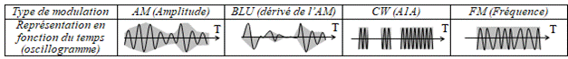
Dans ces schémas, l’axe vertical indique la tension du signal et la partie grisée représente le niveau de HF émis. L’oscillogramme de la BLU, qui est une forme de modulation d’amplitude, ne permet pas de comprendre son fonctionnement. Il faudra attendre la fin du cours (voir §12.6a) pour en comprendre toutes les subtilités.
R-1.3) Conditions techniques. Avant la décision 12-1241, les matériels suivants étaient obligatoires : indicateur de puissance, indicateur du rapport d’onde stationnaire, charge non rayonnante, filtre d’alimentation. La puissance des émetteurs BLU devait se mesurer avec un générateur 2 tons. La précision du repérage de la fréquence émise était définie (+/-1 kHz jusqu’à 30 MHz ou +/- 1.10-4 au-delà), de même que la stabilité des oscillateurs (5.10-5 pendant 10 minutes après 30 minutes de chauffe) et la bande maximum occupée en FM (6 kHz jusqu’à 30 MHz ou 15 kHz au-delà).
a Depuis la décision ARCEP 12-1241, le seul matériel obligatoire reste l’indicateur de puissance (indicateur généralement intégré aux transceivers modernes) (annexe 1 à la décision 12-1241).
b La largeur de bande occupée (ou bande passante) doit rester dans la bande attribuée et ne doit pas dépasser :
- 6 kHz pour les fréquences inférieures à 28 MHz,
- 12 kHz entre 28 et 144 MHz (donc sur les bandes des 28 et 50 MHz)
- 20 kHz entre 144 et 225 MHz (annexe 3 à la décision 12-1241),
- aucune limite n’est fixée au-delà de 225 MHz. Toutefois, « en choisissant la classe d'émission, tous les efforts doivent être faits pour réduire le plus possible la largeur de bande occupée, compte tenu des considérations techniques et d'exploitation concernant le service à assurer » (§3 du préambule de la décision 12-1241 rappelant la disposition S15.9 du RR).
La largeur de bande transmise peut être codée par un préfixe de la classe d’émission (voir §R-1.2a)
c Avant 2012, le niveau relatif des rayonnements non essentiels était d'au moins -50 dB pour une puissance inférieure ou égale à 25 W et -60 dB au-delà. Depuis 2012, le niveau de puissance maximal toléré pour les rayonnements non essentiels doit être conforme à l’appendice 3 du RR (§4 du préambule de la décision 12-1241). Ce niveau, défini par rapport à la puissance de l’émission fondamentale (dBc), ne devra pas dépasser 43 dB + 10 log[P] où P est la puissance de l’émetteur (PEP en AM ou en BLU) et où 10 log[P] est la puissance de l’émetteur exprimée en dBW (voir §R-5.1 pour les définitions des décibels (dB, dBc, dBW) et les calculs).
- –50 dBc pour les fréquences inférieures à 30 MHz (cette limite ne s’applique qu’au service amateur)
- –70 dBc pour les fréquences supérieures à 30 MHz. La puissance d’émission étant limitée à 120 W sur ces fréquences, soit environ 21 dBW, l’atténuation à rechercher est au maximum de –64 dBc (43 + 21).
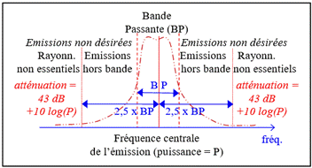
Les rayonnements non essentiels sont les émissions non désirées qui ne sont pas dans le domaine des émissions hors bande (rayonnements adjacents à la bande passante nécessaire pour l’émission, communément appelés « moustaches » ou « splatters », à ne pas confondre avec des émissions qui ne se situent pas dans les bandes de fréquences attribuées au service amateur). La frontière entre les rayonnements non essentiels et les émissions hors bande est définie dans l’appendice 3 du RR : 2,5 fois la bande passante nécessaire (BP) de part et d’autre de la fréquence centrale de l’émission et pas moins de :o 10 kHz pour les fréquences < à 30 MHz
o 62,5 kHz de 30 MHz à 1 GHz
o 250 kHz de 1 à 10 GHz
o 750 kHz de 10 à 15 GHz
o 1,25 MHz de 15 à 26 GHz
o 2,5MHz au-delà de 26 GHz
En applicant la formule générale (43 dB + 10 log[P]) pour les fréquences supérieures à 30 MHz, le niveau des rayonnements non essentiels ne peut jamais excéder -43 dBW (soit -13 dBm ou encore 50 µW).
d La décision ARCEP 12-1241 ne fait pas de référence explicite aux normes européennes CISPR 11 et EN 301 783. Pour autant, nos appareils sont concernés par ces deux normes puisqu’elles définissent les « exigences essentielles », voir §R-4.2d. Les perturbations réinjectées dans le réseau de distribution électrique sont limitées par la norme CISPR 11 (plus contraignante que l’ancienne EN 55011). Selon cette norme, les appareils radioamateurs sont du groupe 2 (matériel d’émission radioélectrique) et de classe B (usage domestique). Leurs perturbations réinjectées dans le réseau électrique ne devront pas dépasser :
- une valeur décroissant linéairement avec la fréquence de 2 mV à 0,15 MHz jusqu’à 0,63 mV à 0,5 MHz
- 0,63 mV (soit 56 dBµV) entre 0,5 et 5 MHz (dBµV signifie « décibel par rapport à 1 µV », voir §R-5.1b)
- 1 mV (soit 60 dBµV) entre 5 et 30 MHz
(rappel des valeurs de l’ancienne norme EN 55011 : 2 mV de 0,15 à 0,5 MHz ; 1 mV de 0,5 à 30 MHz)
e La norme EN 301 783 fixe les caractéristiques techniques à respecter pour les équipements radioamateurs (en émission et en réception) mis sur le marché. La norme reprend les valeurs limites édictées par l’appendice 3 du RR et la méthode à utiliser pour les mesures est décrite. Les seuils d’immunité aux perturbations électromagnétiques (voir §R5-4a) sont aussi précisés.
2) FRÉQUENCES et PUISSANCES AUTORISÉES
a Le tableau présenté à la page suivante est une synthèse de différents textes :
- décision ARCEP 12-1241 modifiée par les décisions 13-1515 et 19-1412,
- arrêté du 02/03/2021 fixant les conditions d’utilisation dans les COM où l’ARCEP n’est pas compétente,
- arrêté pris par le Premier Ministre relatif au Tableau National de Répartition des Bandes de Fréquences (TNRBF), document publié par l’ANFR et disponible sur son site Internet.
a
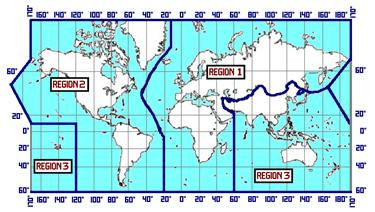
Le RR (art. S5-2 à S5-9) découpe le globe terrestre en 3 régions : Région 1 = Europe, Afrique, Proche Orient et pays de l’ex-URSS ; Région 2 = Amériques et Pacifique Nord ; Région 3 = Reste du Monde (Asie sauf Proche Orient et ex-URSS, Océanie et Pacifique Sud). L’antarctique et l’arctique sont découpés dans le prolongement des méridiens séparant les zones. Certains territoires français sont en Région 2 ou 3 et les fréquences allouées ne sont pas les mêmes qu'en Métropole située en région 1. Les Départements et Régions d'Outre-Mer (DROM) situés en Région 2 sont la Guyane, la Martinique et la Guadeloupe. La Réunion et Mayotte sont en Région 1, comme la France continentale et la Corse (voir §R-4.6a pour les régions où sont situés tous les territoires). L’Arcep n’est compétente qu’en France métropolitaine, dans les DROM et quelques COM (Collectivités d’Outre-Mer) : St Pierre & Miquelon, St Barthélemy et St Martin, tous situés en région 2.On recense essentiellement des questions sur les bandes attribuées en région 1 et sur les « bandes satellite ». Les questions portent sur les limites de bandes, leur statut (lettre ou catégorie) et leur largeur. En revanche, peu de questions ont été recensées sur les bandes supérieures à 1300 MHz ou sur les bandes attribuées en région 2 et 3.
Le service d’amateur (noté AMA dans le tableau d’affection des fréquences du RR) est toujours différencié du service d’amateur par satellite. Les bandes attribuées au service amateur par satellite sont aussi attribuées au service amateur avec le même statut (sauf bandes des 70, 13 et 9 cm : différenciation région 1 / région 2 et 3). Les liaisons bilatérales (notées AMS dans le RR) sont distinguées des liaisons unilatérales de la Terre vers l’Espace (notées AMT dans le RR et “ T>E ” dans le tableau ci-dessous) ou de l’Espace vers la Terre (notées AME dans le RR et “ E>T ” dans le tableau ci-dessous). Le trafic par satellite est autorisé sur toutes les bandes à partir du 40 m (sauf pour les bandes des 30 m, 6 m, 1,35 m et 2,4 mm) mais souvent pas sur la bande entière et parfois (bandes des 70, 23 et 5 cm) dans un sens seulement (E>T ou T>E).
Attention à la présentation des nombres (ne pas confondre le point de séparation de milliers et la virgule décimale) et aux multiples utilisés (pièges fréquents) : kHz (kilohertz), MHz (mégahertz, 1 MHz = 1000 kHz) ou GHz (gigahertz, 1 GHz = 1000 MHz). Une bande peut être désignée par une fréquence (« bande des 7 MHz ») ou une longueur d’onde («bande des 40 mètres »), voir au §R-5.2a pour la transformation de la longueur d’onde en fréquence et inversement.
Les stations amateurs peuvent utiliser toutes les bandes. Mais les titulaires d’un certificat d’opérateur de classe 3 ne peuvent utiliser que la bande 144 – 146 MHz, même en région 2 ou 3 où la bande est plus large.
Depuis 1997, l'administration n'impose plus de bandes de fréquences pour les classes d’émissions particulières, ce qui ne doit pas empêcher les stations de respecter les plans de bandes définis par l’IARU.
L’attribution des fréquences de 9 kHz à 275 GHz entre les différents services est gérée par l’UIT. De 275 à 3.000 GHz, bande peu explorée couvrant le début des infrarouges lointains (IRC), l’UIT ne fait que des recommandations pour protéger les travaux de recherche en mode passif (radioastronomie et recherche spatiale). L’UIT devrait préciser l’attribution d’une partie de ce spectre (jusqu’à 1.000 GHz) lors d’une future CMR. L’attribution des bandes au service amateur jusqu’à 10 GHz est issue de la conférence d’Atlantic City (mai à octobre 1947). Les bandes des 10, 18 et 24 MHz (dites « bandes WARC ») ont été attribuées lors de la CMR-1979 et la bande des 135 kHz lors de la CMR-1999. En région 1, la bande des 40 mètres a été étendue jusqu’à 7200 kHz par la CMR-2009. La décision 13-1515 a attribué la bande des 630 mètres aux opérateurs français avec une puissance limitée à 1 watt PIRE. La décision ARCEP 19-1412, publiée au JO du 13/02/20, autorise le trafic sur la bande des 60 mètres avec une puissance limitée à 15 watts PIRE.
Depuis août 2022, l’annexe 2 du TNRBF (non reprise dans le tableau ci-dessous car ne figurant pas au programme de l’examen) prévoit une affectation des fréquences spécifique en temps de crise conformément à l'article L. 1111-2 du Code de la Défense (menaces sur une partie du territoire, un secteur de la vie nationale ou une fraction de la population) : les services DEF (Défense) et INT (Intérieur) deviennent primaires s’ils sont secondaires et des bandes complémentaires leur sont attribuées en statut secondaire ou primaire.
b Liste des 27 bandes attribuées au service amateur (voir statuts et commentaires ci-dessous)
Bandes |
Région 1 (en MHz) |
Région 2 (en MHz) |
Région 3 (en MHz) |
Satellite (en MHz) |
|
|
LF |
2200m |
0,1357 - 0,1378 (C et 1) |
0,1357 - 0,1378 (C et 1) |
0,1357 - 0,1378 (C et 1) |
|
|
MF |
630 m |
0,472 - 0,479 (C et 1) |
0,472 - 0,479 (C et 1) |
0,472 - 0,479 (C et 1) |
|
|
160 m |
1,810 - 1,850 (A) |
1,800 - 1,850 (A) |
1,810
- 1,830 (B et a) |
|
|
|
HF |
80 m |
3,500 - 3,800 (B) |
3,500 - 3,750 (A) |
3,500 - 3,900 (B)
|
|
|
60 m |
5,3515 - 5,3665 (C et 1) |
5,3515 - 5,3665 (C et 1) |
5,3515-5,3665 (C et 1) |
|
|
|
40 m |
7,000 - 7,200 (A) |
7,000 - 7,300 (A) |
7,000 - 7,200 (A) |
7,000 - 7,100 (A) |
|
|
30 m |
10,100 - 10,150 (C) |
10,100 - 10,150 (C) |
10,100 - 10,150 (C) |
|
|
|
20 m |
14,000 - 14,350 (A) |
14,000 - 14,350 (A) |
14,000 - 14,350 (A) |
14,000 - 14,250 (A) |
|
|
17 m |
18,068 - 18,168 (A) |
18,068 - 18,168 (A) |
18,068 - 18,168 (A) |
18,068 - 18,168 (A) |
|
|
15 m |
21,000 - 21,450 (A) |
21,000 - 21,450 (A) |
21,000 - 21,450 (A) |
21,000 - 21,450 (A) |
|
|
12 m |
24,890 - 24,990 (A) |
24,890 - 24,990 (A) |
24,890 - 24,990 (A) |
24,890 - 24,990 (A) |
|
|
10 m |
28,000-29,700 (A et 2) |
28,000-29,700 (A et 2) |
28,000-29,700 (A et 2) |
28,000 - 29,700 (A) |
|
|
VHF |
6 m |
50,000 - 52,000 (C) |
50,000 - 54,000 (A) |
50,000 - 54,000 (A) |
|
|
2 m |
144-146 (A et 2) Novice |
144-146 (A et 2) Novice 146 - 148 (A) |
144-146 (A et 2) Novice 146 - 148 (B) |
144 - 146 (A) |
|
|
1,35 m |
Non allouée |
220 - 225 (B) |
Non allouée |
|
|
|
UHF |
70 cm |
430 - 434 (C) |
430 - 440 (C) |
430 - 440 (C) |
435
- 438 (C et 3) |
|
23 cm |
1240 - 1300 (C et 4) |
1240 - 1300 (C et 4) |
1240 - 1300 (C et 4) |
T>E 1240 - 1300 (C et 3) |
|
|
13 cm |
2300 - 2450 (C) |
2300 - 2450 (C) |
2300 - 2415 (C)
2415 - 2450 (C et b) |
2400
- 2450 (C et 3) |
|
|
SHF |
9 cm |
Non allouée |
3300 - 3500 (C) |
3300 - 3500 (C) |
3400 - 3500 (C et 3) |
|
6 cm |
5650 - 5850 (C) |
5650 - 5925 (C) |
5650 - 5850 (C) |
T>E
5650-5725 (C et 3) |
|
|
3 cm |
10 000 - 10 450 (C) |
10 000 - 10 450 (C) |
10 000 - 10 450 (C) |
|
|
|
1,2 cm |
24 000 - 24 050 (A) |
24 000 - 24 050 (A) |
24
000 - 24 050 (A) |
24
000 - 24 050 (A) |
|
|
EHF |
6 mm |
47 000 - 47 200 (A) |
47 000 - 47 200 (A) |
47 000 - 47 200 (A) |
47 000 - 47 200 (A) |
|
4 mm |
76 000 - 77 500 (C) |
76 000 - 77 500 (C) |
76
000 - 77 500 (C) |
76
000 - 77 500 (C) |
|
|
2,4mm |
122 250 - 123 000 (C) |
122 250 - 123 000 (C) |
122 250 - 123 000 (C) |
|
|
|
2 mm |
134 000 - 136 000
(A) |
134 000 - 136 000
(A) |
134
000 - 136 000 (A) |
134
000 - 136 000 (A) |
|
|
1,2mm |
241 000 - 248 000
(C) |
241 000 - 248 000 (C) |
241
000 - 248 000 (C) |
241
000 - 248 000 (C) |
|
c Statut des bandes noté entre parenthèses après les limites de la bande (en MHz) dans le tableau ci-dessous (le statut de la bande détermine les « règles de priorité vis-à-vis des autres services de radiocommunications, établies conformément aux dispositions du TNRBF (§3 du préambule de la décision 12-1241) ») :
A Attribution à titre primaire au sens du RR (disposition S5-25). Ces bandes sont, en règle générale, attribuées exclusivement au service d’amateur.
B Attribution à titre primaire au sens du RR, en partage avec d'autres services de radiocommunications primaires, autres que le service d’amateur par satellite, selon le principe de l’égalité des droits, tel que défini dans l’article 4.8 du RR qui prévoit que « le service [à égalité de droits] ne doit pas causer de brouillage préjudiciable et ne peut pas prétendre à la protection contre les brouillages préjudiciables causés par un autre service ». Seules 4 bandes ont ce statut, les autres bandes ont un statut soit primaire soit secondaire.
C Attribution à titre secondaire au sens du RR. Les stations radioélectriques du service d’amateur ne doivent pas causer de brouillage préjudiciable aux stations d’un service primaire et ne peuvent pas prétendre à la protection contre les brouillages préjudiciables causés par ces stations conformément au RR (dispositions S5-28 à S5-31) qui prévoit que « les stations d’un service secondaire (…) ont le droit à la protection contre les brouillages préjudiciables causées par les stations de ce service (…) ou des autres services secondaires ».
D Attribution à titre secondaire au sens du RR, et bénéficiant d’une attribution à titre primaire en application des dispositions du TNRBF. Les stations du service d’amateur ne doivent pas causer de brouillage préjudiciable aux stations étrangères du service de radiolocalisation qui, selon le RR, ont un statut primaire et ne peuvent pas prétendre à la protection contre les brouillages préjudiciables causés par ces stations.
d Commentaires sur certaines bandes (les commentaires ci-dessous en italique (2 à 5) ne figurent pas dans la décision Arcep 12-1241 modifiée ni dans l’arrêté du 2/3/21 mais sont tirés du TNRBF) :
1 La puissance rayonnée maximale des stations du service d'amateur utilisant des fréquences dans les bandes des 2222, 630 et 60 mètres se mesure en Puissance Isotrope Rayonnée Equivalente (PIRE) [voir définition au §R-5.2h] qui est limitée à 1 watt PIRE sur les bandes des 2200 et 630 mètres et 15 watts PIRE sur la bande des 60 mètres. Les stations opérant sur ces bandes ne doivent pas causer de brouillage préjudiciable aux stations du service de radionavigation (dispositions S5.67A, S5.80A, S5.133B du RR).
a La note F7 du TNRBF permet l’attribution de la bande des 160 mètres de 1810 à 1830 kHz avec un statut primaire en partage (statut B) en Polynésie Française uniquement (annexe à l’arrêté du 02/03/21).
3 Le service d'amateur par satellite peut fonctionner dans les bandes 435-438 MHz, 1260-1270 MHz, 2400-2450 MHz, 3400-3410 MHz (allouée seulement dans les régions 2 et 3) et 5650-5670 MHz, à condition qu'il n'en résulte pas de brouillage préjudiciable aux autres services utilisateurs. Dans ces bandes, le service d’amateur a un statut secondaire et tout brouillage préjudiciable causé par les émissions d'un satellite doit être immédiatement éliminé (disposition S5-282 du RR)
4 Les administrations autorisant l'exploitation des services d'amateur et d'amateur par satellite dans la bande de fréquences 1240-1300 MHz doivent veiller à ce que les services d'amateur et d'amateur par satellite ne causent pas de brouillages préjudiciables aux récepteurs du service de radionavigation par satellite (espace vers Terre) (disposition S5.332A du RR relative à la protection de Galileo). La décision ECC 25-01, qui doit être transposée en droit national avant le 31/12/28, impose des limites de puissance sur une partie de la bande (1258-1300 MHz avec notamment -17dW PIRE, soit 20 mW PIRE, de 1258 à 1296 MHz).
5 La bande 81-81,5 GHz n’est pas citée dans le TNRBF mais est ouverte au trafic conformément à la disposition S5.561A (note F135b du TNRBF).
Avant 2013, la bande des 50 MHz était ouverte en région 1 au trafic dans des conditions particulières :
- les limites de la bande étaient 50,2 - 51,2 MHz ;
- le trafic était interdit en mobile ;
- l’installation de relais y était interdite ;
- seuls 59 départements étaient ouverts complètement ou partiellement au trafic avec une puissance PAR maximum de 5 ou 100 watts selon les départements.
Avec la décision 12-1241, la bande des 50 MHz devient une bande VHF normale, sans condition particulière, avec un statut secondaire en région 1 (note F21b du TNRBF).
Exemples : Quelles sont les limites de la bande des 17 mètres ? Réponses : 18 068 à 18 168 kHz
- Quelle est la largeur de la bande des 14 MHz ? 350 kHz
- Quel est le statut de la bande 1240-1300 MHz ? partagé (service secondaire)
- Quel est le statut de la bande 10,100 à 10,150 MHz ? statut C (service secondaire)
- Quelles sont les limites de la bande Satellite sur la bande des 2 mètres ? 144 à 146 MHz
a R-2.2) Puissances et classes d’émission autorisées (annexes 1 et 3 de la décision 12-1241 modifiée) :
|
Certificat |
Bandes de fréquences |
Puissance maximum |
Classes d'émission autorisées |
|
Classe
unique |
Toutes les bandes des services d'amateur et d'amateur par satellite |
< 28 MHz : 500 W (*) 28 à 30 MHz : 250 W > 30 MHz : 120 W |
Toutes
classes |
|
Classe 3 |
144 à 146 MHz |
10 W |
A1A, A2A, A3E, G3E, J3E, F3E |
(*) La réglementation ne limite pas le gain des antennes sauf sur les bandes des 2200, 630 et 60 mètres où la puissance maximum est exprimée en PIRE (Puissance Isotropique Rayonnée Equivalente, voir définition de la PIRE au §R-5.2h) et est limitée à 1 W sur les bandes des 2200 et 630 mètres et 15 W sur la bande des 60 mètres.
Puissance maximum : puissance en crête maximale à la sortie de l’émetteur, tel que défini dans l’article 1.157 du RR (« moyenne de la puissance fournie à la ligne d'alimentation de l'antenne par un émetteur en fonctionnement normal, au cours d'un cycle de radiofréquence correspondant à l'amplitude maximale de l'enveloppe de modulation ». Voir au §R-1.2b la représentation des différents types de modulation : en AM et en BLU, la puissance est mesurée en PEP (Puissance en pointe de l’enveloppe). La recommandation UIT SM.326-7 préconise l’utilisation de deux tonalités non harmoniques pour mesurer la puissance des émissions modulées en amplitude. Pour autant, on ne peut pas en déduire l’obligation de possession d’un « générateur 2 tons » pour les stations émettant en AM et en BLU, même si l’ANFR semble soutenir le contraire dans ses questions d’examen.
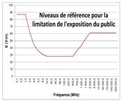
b Le décret 2002-775 pris en vertu du 12° de l’article L32 du CPCE (exigences essentielles) fixe, selon la fréquence, les valeurs limites d'exposition du public aux champs électromagnétiques. Compte tenu des puissances autorisées et que nos antennes visent l’horizon (et non pas le sol ou la voie publique), les rayonnements de nos stations devraient être loin de ces valeurs limites définies en V/m selon le graphique ci-contre. La valeur limite la plus basse (28 V/m de 10 à 400 MHz) correspond à une puissance de 2 W (P = 28V²/377 = 2,08 W/m²). La surface d’une sphère d’un rayon de 10 mètres étant 4πr² = 1256 m², la densité de puissance d’une station de 2000 W PIRE placée au centre de la sphère sera de 1,6 W/m² (=2000/1256) dans la direction du rayonnement maximum.L’ARCEP peut prévoir des restrictions, proportionnées et non discriminatoires, des conditions techniques d’utilisation des fréquences pour éviter les brouillages préjudiciables ou protéger la santé publique (art L42 du CPCE). La décision 2012-1241 ne donne pas plus de précisions sur d’éventuelles restrictions individuelles.
c Les articles L57 à L62-1 du CPCE instaurent des « servitudes pour la protection des réceptions radioélectriques » des services de l’État. Les décrets d’application (articles R27 à R30 du CPCE), pris en Conseil d’État, reconnaissent 3 catégories d’installations aux abords desquelles il est institué une zone de protection et, à l’intérieur de celle-ci, une zone de garde. Dans la zone de protection, il est interdit de produire des perturbations supérieures à la valeur compatible avec l’exploitation du centre. Dans la zone de garde, il est interdit de mettre en service du matériel électrique susceptible de perturber les réceptions radioélectriques du centre sans l’autorisation du ministre dont les services exploitent le centre. Pour les installations de 1ère catégorie (les plus contraignantes), la distance séparant les limites du centre de réception radioélectrique et le périmètre de la zone de garde ne peut excéder 1000 mètres. La commission consultative des sites et servitudes (Comsis, ex-Coresta) instruit les dossiers d'implantation, de transfert ou de modification des stations radioélectriques protégées en liaison avec l’ANFR, l’Arcom et l’ARCEP. Une simple gendarmerie n’a pas vocation à obtenir ce statut assez exceptionnel. De même, ce n’est pas parce qu’il y a de belles antennes dans un terrain militaire que les installations relèvent automatiquement de cette catégorie. A contrario, les formalités pour obtenir cette servitude sont si longues et difficiles qu’il arrive qu’un site soit désaffecté et que, pour autant, la servitude existe toujours (au cas où l’Etat souhaite réactiver rapidement le centre de réception…).
d L’article L421-1 du Code l’Urbanisme (CU) prévoit que toutes les constructions doivent être précédées de la délivrance d’un permis de construire sauf s’il s’agit d’ouvrage de faible importance (art L421-4). Dans ce cas, une déclaration préalable (DP) prévue à l’article L422-2 du CU doit être déposée. L’article R421-9 limite cette déclaration préalable aux « constructions (…) dont la hauteur au-dessus du sol est [strictement] supérieure à 12 mètres et qui n’ont pas pour effet de créer de surface hors œuvre brute ». L’alinéa e de l’article R422-2 précise que sont concernés les « poteaux et pylônes de plus de 12 mètres et les installations qu’ils supportent ». Avant octobre 2007, les antennes de plus de 4 mètres ou dont le réflecteur mesure plus d’un mètre étaient aussi concernées. Aujourd’hui, les antennes horizontales ou filaires ne sont soumises à aucune formalité. En revanche, il y a toujours lieu de tenir compte de l’antenne verticale pour déterminer la hauteur de l’installation. De plus, installer un pylône sur le pignon d’un pavillon par exemple conduit à modifier l’aspect du bâtiment et nécessite donc une déclaration préalable (art R421-17), même si le pylône et son antenne verticale ne dépassent pas 12 mètres. Lorsque le pylône est installé sur un immeuble, la hauteur au dessus du sol dépasse souvent 12 mètres. Une déclaration préalable est donc nécessaire (nonobstant le fait que l’aspect du bâtiment est modifié).
Enfin, les installations suivantes sont soumises à des procédures particulières nécessitant un avis favorable de l'Architecte des Bâtiments de France (ABF) qui sera joint au dossier. Trois cas d’installations sont prévus :
- sur un immeuble classé à l'inventaire supplémentaire des monuments historiques, le CU prévoit que les travaux sont soumis à une autorisation administrative accordée par la Préfet de Région.
- sur un immeuble inscrit, la procédure de DP auprès de la mairie reste identique à la procédure normale. Cependant, la décision de non-opposition à la DP doit intervenir après l'accord du Préfet de Région
- dans un périmètre protégé (situés dans le champ de visibilité d'un immeuble classé et à moins de 500 mètres) ou dans un site patrimonial remarquable, la décision de non-opposition à la DP intervient après l'accord de l'ABF.
L’étendue de ces zones (zone de garde, périmètre classé, secteur sauvegardé et zone de protection) est annexée au Plan Local d’Urbanisme (PLU) et est consultable au service de l’urbanisme de la Mairie concernée.
En cas de trafic en portable, quel que soit le lieu, aucune déclaration d’urbanisme n’est à prévoir : les installations temporaires (moins de 3 mois) ne sont soumises à aucune déclaration. En revanche, les zones de servitudes (zones de protection, zones de garde) restent valables pour tout trafic, même en portable ou en mobile.
e La loi 66-457 reconnaît le « droit à l’antenne » pour les radioamateurs habitant en immeuble collectif. En effet, « le propriétaire d'un immeuble ne peut s'opposer, sans motif sérieux et légitime, à l'installation, au remplacement ou à l'entretien des antennes individuelles, émettrices et réceptrices, nécessaires au bon fonctionnement de stations du service amateur (…). Les bénéficiaires [de ce droit] sont responsables (…) des travaux d'installation, d'entretien ou de remplacement et des conséquences que pourrait comporter la présence des antennes en cause ». Cette loi s’applique aux propriétaires comme aux locataires ou à tout autre occupant.
3) ALPHABET INTERNATIONAL et CODE Q
R-3.1) Table d'épellation international : (annexe I de l’arrêté du 21/09/00)
La table d’épellation des lettres étant internationale, ce sont l’orthographe et la prononciation anglaise des mots qui sont utilisées. Toutefois, le texte français donne, pour la lettre Z, l’orthographe française (Zoulou) alors que les textes internationaux et européens utilisent l’orthographe anglaise (Zulu).
|
A ALFA D DELTA G GOLF J JULIETT M MIKE P PAPA S SIERRA V VICTOR Y YANKEE |
B BRAVO E ECHO H HOTEL K KILO N NOVEMBER Q QUEBEC T TANGO W WHISKEY Z ZOULOU (zulu) |
C CHARLIE F FOX-TROT I INDIA L LIMA O OSCAR R ROMEO U UNIFORM X X-RAY |
Exemple : Comment épelle-t-on « F5PTC » ? Réponse : Foxtrot 5 Papa Tango Charlie
Cette table d’épellation (Appendice A14 du RR) a été adoptée par l’UIT en 1956. Auparavant, les analogies d’épellation des lettres avaient été définies dès 1927 lors de la conférence de Washington. Ces analogies correspondaient à des noms de villes ou de pays : Amsterdam pour A, Baltimore pour B, Canada pour C, etc. Seul le Q de Quebec a été repris dans la nouvelle table d’épellation.
Il existe aussi une table d’épellation des chiffres qui n’a pas à être connue pour l’examen et qui est peu utilisée par les radioamateurs.
R-3.2) Abréviations en code Q (annexe I de l’arrêté du 21/09/00)
a Les 22 abréviations en code Q à connaître sont issues de la recommandation T/R 61-02 (programme HAREC). Une abréviation du code Q est formulée comme une question si elle est suivie d'un point d'interrogation. Sinon, il s'agit d'une réponse (ou d’un avis) qui peut être suivie d'une information complémentaire.
|
ABRÉVIATION |
QUESTION |
RÉPONSE OU AVIS |
|
QRA |
Quel est le nom de votre station ? |
Le nom de ma station est ... |
|
QRG |
Voulez-vous m'indiquer ma fréquence exacte (ou la fréquence exacte de ...) |
|
|
QRH |
Ma fréquence varie-t-elle ? |
Votre fréquence varie. |
|
QRK |
Quelle est l'intelligibilité de mes signaux (ou des signaux de …) ? |
L'intelligibilité de vos signaux (ou des signaux de ...) est : 1 : mauvaise ; 2 : médiocre ; 3 : assez bonne ; 4 : bonne ; 5 : excellente |
|
QRL |
Êtes-vous occupé ? |
Je suis occupé (avec…). Prière de ne pas brouiller |
|
QRM |
Êtes-vous brouillé ? |
Je suis brouillé : |
|
QRN |
Êtes-vous troublé par des parasites ? |
Je suis troublé par
des parasites : |
|
QRO |
Dois-je augmenter la puissance d'émission ? |
Augmentez la puissance d'émission. |
|
QRP |
Dois-je diminuer la puissance d'émission ? |
Diminuez la puissance d'émission. |
|
QRT |
Dois-je cesser la transmission ? |
Cessez la transmission. |
|
QRU |
Avez-vous quelque chose pour moi ? |
Je n'ai rien [pas de messages] pour vous. |
|
QRV |
Êtes-vous prêt ? |
Je suis prêt |
|
QRX |
À quel moment me rappellerez-vous ? |
Je vous rappellerai à ... h (sur ... kHz [ou MHz]). |
|
QRZ |
Par qui suis-je appelé ? |
Vous êtes appelé par ... sur ... kHz (ou MHz). |
|
QSA |
Quelle est la force de mes signaux (ou des signaux de ...) ? |
La force de vos
signaux (ou des signaux de ...) est : |
|
QSB |
La force de mes signaux varie-t-elle ? |
La force de vos signaux varie. |
|
QSL |
Pouvez-vous me donner accusé de réception ? |
Je vous donne accusé de réception |
|
QSO |
Pouvez-vous communiquer avec ... directement (ou par relais) ? |
Je puis communiquer avec ... directement (ou par l'intermédiaire de ...). |
|
QSP |
Voulez-vous retransmettre à ... gratuitement ? |
Je peux retransmettre à ... gratuitement. |
|
QSY |
Dois-je passer à la transmission sur une autre fréquence ? |
Passez à la transmission sur une autre fréquence (ou sur ... kHz [ou MHz]). |
|
QTH |
Quelle est votre position en latitude et en longitude (ou d'après tout autre indication) ? |
Ma position est ... latitude ... longitude (ou d'après tout autre indication). |
|
QTR |
Quelle est l'heure exacte ? |
L'heure exacte est ... |
Exemples :- Que siginfie « QRO ? » Réponse : Dois-je augmenter ma puissance d'émission ?
- Que signifie « QRG 14050 » ? Réponse : Votre fréquence exacte est 14050 (kHz)
- Quel est le code pour « Avez-vous quelque chose pour moi ? » Réponse : QRU ?
- Quel est le code pour « La force de vos signaux est très bonne » Réponse : QSA 5
Les abréviations à connaître sont celles utilisées pour les communications officielles. Elles peuvent avoir une autre signification dans le trafic radioamateur. Ainsi, QRA, QSO, QSP et QTH ont une définition plus restrictive et le sens de QRK et QSA est interverti dans le trafic radioamateur.
b Le code RST définit la qualité d’un signal reçu en code Morse sur trois critères : « Readibility, Strength, Tone » ou, en français, « Lisibilité, Force, Tonalité ». La valeur du T est omise si l’émission n’est pas en code Morse. La variable R prend des valeurs de 1 à 5 et la variable S est, de nos jours, la valeur lue par le S-mètre (de 1 à 9). Depuis 1927, le RR a toujours défini les codes QRK (lisibilité) et QSA (force du signal) de manière similaire avec une note de 1 à 5. Mais, en 1932, lors de la définition du RST, un document de travail diffusé lors de la conférence définit la manière de passer le contrôle précis d'une émission quant à sa puissance (QRK, oui QRK !), la compréhensibilité du message (QSA, oui QSA !) et la tonalité des signaux (QRI). C’est ce qu’ont retenu les radioamateurs d’où l’inversion de la signification de ces deux codes ! Bien entendu, c’est la codification UIT (pas celle en usage chez les radioamateurs) qu’il faut connaître pour l’examen…
Les abréviations QTH et QRA s’adressent au service radiomaritime, respectivement position et nom du navire (l’indicatif du navire sera codé QRZ). Quant à QSO et QSP, tout leur sens est donné dans un contexte professionnel où transmettre des messages n’est pas un loisir (contact entre deux personnes partageant la même passion) mais un travail rémunéré (transmettre un message entre deux clients au moindre coût).
c D’autres abréviations sont définies par l’UIT : la recommandation M.1172 donne la signification de 77 codes Q (de QRA à QTZ excepté QST) et de 64 autres signes et abréviations. Une partie de ces signes et abréviations et d’autres séries de codes Q (37 codes au format QOx ou QUx) concernent exclusivement le service radiomaritime et/ou aéronautique. Enfin, il existe aussi le code Z utilisé par les militaires.
En 1859, la Western Union établit la norme du "code 92" : une liste de nombres de 1 à 92 représentait des phrases complètes utilisées par les opérateurs télégraphistes à l’instar du futur code Q. Dans ce code, le nombre 73 signifie "Veuillez accepter mes hommages respectueux" qui se transformera dans le monde radioamateur par "Amitiés" ; le nombre 88 signifie "Affectueusement".
Proposé par Marconi en 1904 et généralisé dès 1908 dans le trafic radiomaritime, le code CQ demandait l’attention de tous les navires (CQ pour « Sécurité », mot français utilisé dans les procédures internationales de sécurité et de détresse).
d Abréviations en code Morse : le programme de l’examen de Morse (partie 3 de l’annexe 1 de l’arrêté du 21/09/00) a été supprimé par l’arrêté du 23/04/12. Pour autant, la recommandation T/R 61-02 cite ces 15 abréviations à connaître et des questions sur les 3 abréviations soulignées ci-dessous sont posées à l’examen.
AR (collé) : Fin de transmission BK : (Break) signal utilisé pour interrompre une transmission en cours
MSG : Message PSE : (Please) s'il vous plaît R : Reçu
RST : Lisibilité, force du signal, tonalité (Report) RX : Récepteur SIG : Signal
TX : Emetteur UR : (Your) votre VA (collé) : Fin de vacation
R-3.3) Déroulement d'un contact :
a L’article 4 de la décision ARCEP 12-1241 rappelle la disposition S25.9 du RR : « au cours de leurs émissions, les stations d'amateur doivent transmettre leur indicatif d'appel à de courts intervalles » et précise :
« et au moins :
- au début et à la fin de toute période d'émission ;
- toutes les quinze minutes au cours de toute émission d’une durée supérieure à quinze minutes sur une même fréquence (le §3 du préambule rappelle que cette disposition est valable pour tous les types de stations, y compris les satellites, relais et balises qui doivent se conformer aux dispositions générales) ;
- en cas de changement de fréquence d’émission, au début de toute période d’émission sur la nouvelle fréquence ».
D’autre part, l’annexe de la décision 12-1241 prévoit que l'utilisateur d'une station du service d’amateur :
- s’assure préalablement que ses émissions ne brouilleront pas des émissions déjà en cours d’autres utilisateurs radioamateurs (toujours écouter la fréquence avant de passer en émission…).
- ne doit pas utiliser la même fréquence en permanence
- ne pas brouiller volontairement des émissions déjà en cours;
- ne pas installer une station répétitrice, ou utiliser une classe d'émission, pour un usage personnel ou pour un groupe restreint (ces deux derniers alinéas ont été ajoutés dans l’arrêté du 02/03/21).
L’utilisation de deux fréquences différentes, l’une pour l’émission, l’autre pour la réception (trafic en mode « split » (même bande) ou « cross-band » (bande différente), trafic via relais ou transpondeur) est autorisée sous réserve d’émettre dans les conditions autorisées par la classe d’opérateur (classe d’émission, puissance et bande)
Peu importe que le relais (ou le satellite) retransmette le message d’un opérateur Novice (ex-classe 3) sur une bande qui ne lui est pas attribuée du moment que l’opérateur utilise sa station avec une classe d’émission, une fréquence et une puissance autorisées.
b L’ANFR, dans le cadre de ses missions relatives à l’instruction des cas de brouillage, peut être amenée à demander à l'utilisateur d'une station des informations concernant les logiciels et protocoles utilisés (§4 du préambule de la décision 12-1241).
c Les procédures de détresse du service mobile maritime (Appendice A13 du RR, abrogé lors de la CMR-07) utilisaient en téléphonie des expressions adaptées du français : Mayday venait du français « Venez m’aider », phrase mal comprise par les opérateurs anglophones lors du premier message de détresse en téléphonie. D’autre part, la recommandation UIT M-1171 décrit des procédures radiotéléphoniques utilisées pour le service radiomaritime en dehors des messages de détresse, d’urgence et de sécurité dans les très rares cas où. le système ASN (appel sélectif numérique) n’est pas utilisé. A l’examen, aucune question ne porte sur ces procédures.
a L’article 1 de la décision ARCEP 12-1241 rappelle les dispositions du RR :
- les transmissions entre stations d'amateur doivent se limiter à des communications en rapport avec l'objet du service d'amateur, et à des remarques d'un caractère purement personnel (art S25-2 du RR)
- il est interdit de coder les transmissions entre des stations d'amateur pour en obscurcir le sens, sauf s'il s'agit des signaux de commande échangés entre des stations terriennes de commande et des stations spatiales du service d'amateur par satellite dans l’objectif de garantir que tout brouillage préjudiciable causé par des émissions de telles stations puisse être éliminé immédiatement (art S25-2A du RR repris dans le §3 du préambule de la décision 12-1241)
- les stations d'amateur ne peuvent pas être utilisées pour transmettre des communications en provenance ou à destination de tierces personnes non radioamateurs sauf dans des situations d'urgence ou pour les secours en cas de catastrophe (art S25-3 du RR)
L’édition 1989 du « Guide du radioamateur » limitait les messages aux sujets suivants :
- radioélectricité,
- informatique,
- astronomie et météorologie,
- contenu d'une revue technique (sans faire de publicité pour ladite revue),
- réglementation,
- vie associative,
- adresse et numéro de téléphone personnels (et pas ceux des tiers sauf dans le cas des opérations de secours),
- radioguidage (toutefois, le radioguidage est interdit sur les relais sauf, occasionnellement, pour les manifestations amateurs).
Quelques questions portant sur ce thème ont été recensées avec des pièges sur les mots utilisés (par exemple : l’astronomie est autorisée mais pas l’astrologie)
b Bien que, depuis 1990, l’écoute soit libre, le secret des correspondances captées volontairement ou non doit être conservé. L'article 226-15 du code pénal (atteinte au secret des correspondances), précise que « est puni [d'un an d'emprisonnement et de 45 000 euros d'amende] le fait, commis de mauvaise foi, d'intercepter, de détourner, d'utiliser ou de divulguer des correspondances émises, transmises ou reçues par la voie électronique ou de procéder à l'installation d'appareils conçus pour réaliser de telles interceptions »
Enfin, l’article R226-7 du Code Pénal prévoit que « l'acquisition ou la détention de tout appareil figurant sur la liste mentionnée à l'article R226-1 [notamment les scanners] est soumise à une autorisation délivrée par le Premier ministre » alors que la vente de ces appareils est libre suite à deux jugements qui, en 2002, autorisaient leur mise sur le marché au motif que « les dispositions communautaires interdisent aux États membres de limiter ou d'entraver la mise sur le marché et la mise en service d’appareils portant le marquage CE »…
4) CONDITIONS D'EXPLOITATION et INDICATIFS D’APPEL
R-4.1) journal de bord : le titulaire d’une autorisation d’émettre est tenu de consigner dans un journal de bord (ou « carnet de trafic ») les renseignements relatifs à l'activité de sa station : date et heure de communication (UTC ou heure légale mais toujours la même), indicatif (correspondant ou relais), fréquence d’émission, classe d'émission et, éventuellement, le lieu d'émission (en portable ou en mobile) et, pour les radio-clubs, l’indicatif d’appel de l’utilisateur (et le nom et prénom des candidats en formation ayant effectué un contact). Il doit être constamment à jour, présenté à toutes réquisitions des fonctionnaires chargés du contrôle dans le cadre de la prévention des brouillages et afin de faciliter les opérations de contrôle de l’utilisation des fréquences. Il doit être conservé pendant un an à compter de la dernière inscription (art. 6 de la décision 12-1241). La décision 10-0537 (abrogée) précisait que le journal de trafic pouvait être soit à pages numérotées et non détachables, soit tenu à jour informatiquement ou, pour les handicapés ou les non-voyants, par d'autres procédés adaptés.
a R-4.2) L’exploitation d’une station se différencie par le suffixe utilisé après l’indicatif d’appel de l’opérateur
- en station fixe, l’opérateur émet avec son indicatif d’appel sans suffixe depuis l’adresse déclarée à l’ANFR qui doit être informée de tout changement dans les 2 mois (article 7 de l’arrêté du 21/09/00 modifié). Depuis 2021, deux adresses peuvent être communiquées à l’ANFR : celle du domicile de l’opérateur et celle de la station (la résidence secondaire de l’opérateur par exemple ou toute autre adresse).
Pour une utilisation portable, mobile ou maritime, l’indicatif d’appel personnel devra être complété de la lette /P, /M ou /MM (dernier alinéa de l’article 7 de l’arrêté du 21/09/00 modifié) dans les cas suivants :
- une station transportable est une station construite de manière à être déplacée mais ne peut pas fonctionner pendant son transport. L’indicatif d’appel est suivi du suffixe « /P » en CW ou « Portable » en téléphonie.
- une station mobile est « destinée à être utilisée lorsqu'elle est en mouvement, ou pendant des haltes en des points non déterminés » (S1.67 du RR). L’indicatif d’appel est suivi du suffixe « /M » en CW ou « Mobile ».
- une station installée à bord d’un navire situé dans les eaux internationales (à plus de 12 milles nautiques des côtes) utilisera le suffixe « /MM » ou « Maritime Mobile ». La station est alors assimilée à une station de navire (art. S1.77 du RR) et relève de l'autorité du capitaine (art D406-12 du CPCE). Une station située dans un navire dans les eaux territoriales, sur un fleuve ou à quai dans un port est assimilée à une station mobile (/M).
Exemples : un radioamateur émettant en CW depuis la station d’un autre radioamateur utilisera un indicatif d’appel sous la forme « F5ABC/P » ; le même opérateur émettant en téléphonie depuis un véhicule ou en se promenant à pied ou en vélo s’identifiera ainsi : « Foxtrot Cinq Alfa Bravo Charlie Mobile ».
b Les textes en vigueur ne règlent pas le cas du radioamateur français qui n’émet pas depuis le territoire pour lequel son indicatif d’appel lui a été attribué. L’usage veut que, dans ce cas, l’indicatif d’appel est précédé du préfixe de localisation du lieu d’émission (voir §R-4.6a) et d'une barre de fraction puis suivi du suffixe /P ou /M. De même, lors de l’exploitation en portable ou en mobile, le numéro de département peut être précisé. Mais ce ne sont que des usages provenant d’anciens textes abrogés et pas des obligations réglementaires.
Exemples : un radioamateur novice domicilié en Alsace et émettant depuis son lieu de vacances en Martinique ou à Paris utilisera l’indicatif d’appel F0ABC/P sans plus de précision. L’usage de donner son lieu d’émission en ajoutant le préfixe de sous localisation ou le n° de département conduit à utiliser selon le cas FM/F0ABC/P ou F0ABC/P75 ce qui informe les correspondants du lieu d’émission pour faciliter le pointage des antennes.
c Depuis 2013, l'utilisation d'équipements radioélectriques à bord d'un aéronef (avions, ballons, …) est autorisée et soumise à des conditions particulières par les autorités en charge de la réglementation aérienne. L'obtention préalable de toutes les autorisations nécessaires en matière d'aviation civile, notamment de sécurité aérienne, auprès des autorités nationales d'immatriculation des aéronefs (DGAC) est obligatoire (§5.3 préambule décision 12-1241). Dans ce cas, la station est mobile et son indicatif doit être suivi du suffixe « /M ».
d L’article L34-9 du CPCE impose que « les équipements radioélectriques doivent faire l'objet d'une évaluation de leur conformité aux exigences essentielles ». La conformité du matériel est indiquée par le marquage CE (depuis 2008, ce marquage n’est que déclaratif). Toutefois, l’article R20-3 précise que cette exigence ne s'applique pas aux constructions personnelles réalisées « par des radioamateurs (…) non disponibles dans le commerce ; les ensembles de pièces détachées à assembler [kits] par des radioamateurs, pour leur usage, et les équipements modifiés par eux ne sont pas considérés comme des équipements disponibles dans le commerce ». Cette exception est confirmée par le décret 2015-1084 qui transpose la directive 2014/30/CE (CEM), plus contraigante pour les fabricants et les distributeurs que l’ancienne 2004/108/CE. La directive 2014/53/EU (RED - Radio Equipment Directive), transposée en droit français par l’ordonnance 2016-493, remplace la Directive R&TTE et concerne tout émetteur ou récepteur de radiocommunication (les terminaux filaires sont exclus).
e L’article 5 de l’arrêté du 17/12/07 modifié prévoit que les installations fixes dont la PAR (puissance apparente rayonnée) est supérieure à 5 watts sont soumises à déclaration. Les stations portables et mobiles ne sont pas concernées par cette déclaration à transmettre à l’ANFR dans les 2 mois suivant l’installation et qui comprend :
- l’adresse de la station (définissant ainsi le préfixe attribué)
- ses coordonnées géographiques en degrés, minutes et secondes au format WGS84 (coordonnées GPS)
- la PAR maximum utilisée dans les 4 gammes d’onde HF, VHF, UHF et SHF
Cette déclaration peut s’effectuer par Internet à partir du site https://teleservice-amateurs.anfr.fr.
f Le §1 du préambule de la décision 12-1241 indique que « la fixation éventuelle des modalités de connexion des stations radioélectriques du service d'amateur à un réseau ouvert au public (ROP) [Internet] ne relève pas de la compétence de l'ARCEP mais du pouvoir réglementaire » (c’est-à-dire du Ministre). A la date de publication de ce document, un tel texte n’est toujours pas paru au JO. La création d’un nouvel article du CPCE pourrait autoriser la connexion d’une station d’amateur à un ROP sous réserve de « prendre toute mesure pour préserver l’intégrité et la sécurité des réseaux ouverts au public ». L’ARCEP ou l’ANFR pourra ordonner la suspension de la connexion lorsque celle-ci portera atteinte à l’intégrité ou à la sécurité de fonctionnement du ROP ou aux conditions d’utilisation des fréquences radioélectriques. Mais, tant que ce texte n’est pas publié, la connexion à un ROP reste interdite.
g Les installations radioélectriques « peuvent être provisoirement saisies et exploitées […] sans indemnité par décision du conseil des ministres » (§5.4 du préambule de la décision 12-1241 et L65-1 du CPCE, procédure de réquisition décidée par décret et par un vote du Parlement si sa durée dépasse 12 jours dans deux cas précis : l’état d’urgence qui peut s’appliquer localement et l’état de siège qui s’applique à tout le territoire). De plus, l’annexe 2 du TNRBF prévoit une affectation des fréquences spécifique en temps de crise (voir §R-2.1a).
Le matériel d’émission détenu n’a pas à être déclaré. Toutefois, mettez à jour votre déclaration PAR en cas d’acquisition ou de cession de matériel. En cas de contrôle de l’installation par l’ANFR dans le cadre d’une instruction pour brouillage, la déclaration PAR et le journal de bord sont regardés en premier lieu...
a R-4.3) Les installations de radio-club sont utilisées sous la responsabilité du titulaire de l’indicatif d’appel du radio-club. Le responsable des installations du radio-club doit être titulaire d’un certificat d’opérateur HAREC (« classe unique » français ou équivalent). Pour la demande d’un nouvel indicatif de radio-club, un récépissé de déclaration de l'association délivré par l'autorité compétente doit être fourni. La station d’un radio-club peut être exploitée par tout opérateur titulaire d’un indicatif d’appel, en utilisant l’indicatif du radio-club suivi de son indicatif personnel (article 7 de l’arrêté du 21/09/00 modifié). L’utilisateur de la station doit émettre sur une bande, dans un mode et avec une puissance autorisés à sa classe d’opérateur. Outre les mentions habituelles (voir §R-4.1), le journal de bord du radio-club indique les indicatifs d’appel des utilisateurs de la station.
Exemple : un opérateur manœuvrant la station d’un radio-club s’identifiera par « F6KGL/F6GPX » en CW ou « Foxtrot 6 Kilo Golf Lima opéré par Foxtrot 6 Golf Papa X-ray » en téléphonie.
b Une station répétitrice est une balise de fréquence ou toute autre installation automatique (relais). La station pourra être établie sur un autre site que celui de la station de l’utilisateur (titulaire d’un certificat d’opérateur autre que l’ex-classe 3), ne pourra pas servir à un usage personnel ou un groupe restreint et ne doit transmettre que des informations conformes à la réglementation : son indicatif d’appel, des données relatives à sa position, à son fonctionnement et aux conditions locales intervenant sur les conditions de propagation radioélectrique. Un dispositif d’arrêt d’urgence doit être prévu et, en cas de brouillages persistants, des mesures appropriées proposées par l’ANFR peuvent être imposées (conditions d’exploitation définies antérieurement à 2012 mais toujours en application bien qu’aucun texte en vigueur ne précise ces conditions).
c Concernant les satellites radioamateurs, la disposition S25.11 précise que « les administrations autorisant des stations spatiales du service d'amateur par satellite doivent faire en sorte que des stations terriennes de commande en nombre suffisant soient installées avant le lancement, afin de garantir que tout brouillage préjudiciable causé par des émissions d'une station du service d'amateur par satellite puisse être éliminé immédiatement ». En outre, la disposition S22.1 prévoit que « les stations spatiales doivent être dotées de dispositifs permettant de faire cesser immédiatement, par télécommande, leurs émissions radioélectriques chaque fois que cette cessation est requise en vertu des dispositions du présent Règlement » (§3 du préambule de la décision ARCEP 12-1241 rappelant les dispositions du RR). Le §4 du préambule de la décision 12-1241 rappelle la nécessité d’obtenir une « autorisation du ministre chargé des communications électroniques pour l’exploitation d’une assignation de fréquence à un système satellitaire prévue par l’article L97-2 du CPCE ».
a R-4.4) Sanctions : l’article 7-3 de l’arrêté du 21/09/00 modifié a rétabli les sanctions et prévoit qu’en cas de manquement à la réglementation ou aux conditions d’utilisation d’un réseau ouvert au public ou en cas d’usurpation d’indicatif, l’indicatif attribué par l’administration peut être suspendu pour une durée maximum de trois ans ou révoqué définitivement. La décision de suspension ou de révocation est motivée, proportionnelle à la gravité du manquement et notifiée à l’intéressé. Elle est prise, dans le cadre d’une procédure contradictoire, par l’autorité administrative qui a délivré l’indicatif à son initiative, sur proposition de l’ANFR, de l’ARCEP, des départements ministériels chargé de la sécurité publique, de la justice, des armées ou à la vue de rapports d’infractions transmis par des administrations étrangères ou des organismes internationaux spécialisés ». La sanction ne peut donc pas être prise à la demande directe d’une personne ou d’une association.
b En complément du retrait de l’indicatif d’appel, il peut y avoir des sanctions pénales (prises par un tribunal après dépôt d’une plainte). L’article L39-1 du CPCE prévoit qu’« est puni de six mois d'emprisonnement et de 30 000 € d'amende le fait (…) de perturber, en utilisant une fréquence, un équipement ou une installation radioélectrique (…) ou d'utiliser une fréquence en dehors des conditions prévues à l'article L33-3 ». Un refus (ou une omission intentionnée) de déclaration à l’ANFR sera puni de trois mois d’emprisonnement et de 30.000 € d’amende (L39-4). Le tribunal peut prononcer la confiscation du matériel ou ordonner sa destruction (L39-6) mais ne peut pas retirer lui-même l’indicatif de l’opérateur condamné. Enfin, « toute personne qui effectue des transmissions radioélectriques en utilisant sciemment un indicatif d'appel de la série internationale attribué à une station de l'État ou à une autre station autorisée, est punie d'un an d’emprisonnement » (L39-8).
Mais, pour qu’un tribunal prenne une sanction pénale, il faut qu’une infraction soit constatée. L’article L40 du CPCE précise qu’« outre les officiers et agents de police judiciaire agissant conformément aux dispositions du code de procédure pénale, les fonctionnaires et agents de l'administration des télécommunications (…) peuvent rechercher et constater par procès-verbal les infractions ». Dans la pratique, les agents habilités de l’administration des télécommunications, de l’Arcep et de l’ANFR qui disposent d'un pouvoir de police judiciaire en vertu de l’article L40 du CPCE ne peuvent intervenir seuls que dans des lieux à usage professionnel entre 8h00 et 20h00 et pendant les heures d’ouverture lorsque le local est ouvert au public. En cas d’intervention dans un lieu à usage privé (comme l’est l’habitation d’un radioamateur ou le local d’un radio-club), les agents de l'administration chargée des télécommunications interviennent en tant qu'assistant technique d’un Officier de Police Judiciaire agissant sur commission rogatoire délivrée par un juge.
En cas de plainte pour brouillage (TV en particulier), l’ANFR intervient en tant qu’expert pour déterminer si les torts viennent de la station du radioamateur (brouillage) ou de l’installation perturbée (non conformité). L’intervention, qui est une taxe et non pas une amende, coûte 450 € (depuis 2003) à la charge du responsable des désordres. L’ANFR n’a pas vocation à intervenir en cas de plainte pour usurpation d’indicatif.
R-4.5) Les modalités de l’examen sont fixées par l’article 2 de l’arrêté du 21/09/00 modifié. Quelques questions portent sur le déroulement des épreuves. Depuis 2021, il n’y a plus de frais d’examen (auparavant 30 €).
Pour passer l’examen, il n’y a plus d’âge minimum depuis l’arrêté du 21/09/00.
Après avoir réussi l’examen, l’ANFR vous envoie spontanément votre certificat d’opérateur (document avec trame de sécurité) mais, pour pouvoir émettre, il vous faut attendre de recevoir la notification de l’indicatif d’appel. En cas d'échec à l'une des épreuves, le candidat doit attendre deux mois avant de repasser l'épreuve. Le candidat conserve pendant un an le bénéfice de l'épreuve dans laquelle il a obtenu la moyenne.
Les opérateurs de l’ex-classe 3 (F0) n’ont à passer que l’épreuve de Technique pour obtenir un certificat d’opérateur « HAREC », quelque soit la date à laquelle ils ont réussi l’examen de Réglementation.
Si le candidat a un taux d’incapacité physique permanente (IPP) supérieur ou égal à 70%, les épreuves sont adaptées à son handicap, le temps de l’examen est triplé et l’épreuve peut se dérouler au domicile du candidat.
R-4.6) Formation des indicatifs d’appel : tous les indicatifs d’appel français sont formés selon les règles de la disposition S19-68 du RR et de l’annexe 4 (grille de codification des indicatifs des services d’amateur) de l’arrêté du 21/09/00 modifié. L’adresse déclarée de la station détermine son préfixe (voir aussi §R-4.2a). Les indicatifs d’appel individuels sont notifiés par l’ANFR et comportent : le nom le prénom de l’opérateur, sa date de naissance, son adresse postale, le numéro de certificat d’opérateur délivré au titulaire et la date de délivrance (avant 2015 : la notification était délivrée par le Ministre, par le Haut-Commissaire de la République en Nouvelle Calédonie et en Polynésie Française, par l’Administrateur supérieur à Wallis & Futuna et dans les Terres Australes Antarctiques Françaises ou par le Préfet à Mayotte).
a Le préfixe des stations déclarées en France continentale est la lettre F.
Le préfixe des stations déclarées en Corse, dans les DROM (Départements et Régions d’Outre-Mer) et dans les COM (Collectivités d’Outre-Mer) est composé de 2 lettres propres à la localisation. La région UIT (voir § R-2.1a) est indiquée entre parenthèses :
FG : Guadeloupe (DROM - 2) FM : Martinique (DROM - 2) FY : Guyane (DROM - 2)
FR : Réunion (DROM - 1) TK : Corse (1) FK : Nouvelle Calédonie (3)
FH : Mayotte (DROM - 1) FJ : St Barthélemy (2) FP : St Pierre & Miquelon (2)
FS : St Martin (2) FO : Polynésie Française (3) et Clipperton (2)
FT : Terres Australes Antarctiques Françaises : Crozet et, depuis 2007, îles Eparses (Glorieuses, Bassas da India, Juan de Nova, Europa et Tromelin) (1), Kerguelen, St Paul & Amsterdam et Terre Adélie (3) FW : Wallis & Futuna (3)
FX : Satellites français du service amateur
Le suffixe, propre à chaque station, commence par un chiffre indiquant la classe de l’opérateur :
0 = opérateur de l’ex-classe 3 ;
1 et 4 = opérateur de l’ex-classe 2. Le chiffre 4 est attribué aux nouveaux opérateurs ;
5, 6 et 8 = opérateur de l’ex-classe 1 (et radio-club).
2, 3, 7 et 9 restent en réserve, une partie ayant déjà été affectée à des indicatifs individuels avec un suffixe à deux lettres pour des opérateurs de l’ex-classe 1 en France Continentale.
Dans les DROM, les COM et en Corse, les chiffres utilisés pour les indicatifs d’appels individuels sont : 0 (ex-classe 3), 1 (ex-classe 2), 4 (nouveaux opérateurs), 5 (ex-classe 1) et 8 (ex-classe 1)
Après le chiffre, le suffixe attribué à chaque station comporte deux à quatre lettres :
AAA à UZZZ et AA à ZZ sont affectés aux indicatifs d’appel individuels. Lorsque la série des indicatifs d’appel à 3 lettres au suffixe aura été attribuée, les indicatifs comporteront 4 lettres au suffixe.
Dans les DROM-COM et en Corse, seule la série à 2 lettres (AA à ZZ) a été attribuée.
KAA à KZZ sont affectés aux radio-clubs (et KA à KZ pour les radio-clubs de Corse et des DROM-COM Toutefois, quelques suffixes à 3 lettres ont été attribués à des radio-clubs dans les DROM-COM.
VAA à VZZ sont affectés aux amateurs de l’Union Européenne installés pour plus de trois mois en France (le « Brexit » voté en 2016 conduit à affecter la série Wxx aux nouveaux ressortissants britanniques) ;
WAA à WZZ sont affectés aux amateurs étrangers hors UE installés pour plus de trois mois en France ;
XAA à XZZ et YAA à YZZ sont en réserve. Jusqu’en 2009, ces séries étaient respectivement réservée aux balises et aux stations répétitrices numériques. Quelques indicatifs de ces séries ont été attribués ;
ZAA à ZZZ sont affectés aux stations répétitrices (Relais analogiques ou numériques) et aux balises.
Ainsi, les indicatifs individuels d’appel de France continentale se présentent sous les formes suivantes : F0AAA, F1AA, F1AAA, F2AA, F3AA, F4AAA, F5AA, F5AAA, F6AAA, F8AA, F8AAA et F9AA. Les indicatifs d’appel des DROM-COM et de Corse se présentent ainsi : TK0AA, FY1AA, FM5KA, FG4ZAA.
Exemples : - Un indicatif d’appel du type FM1AB est attribué à un radioamateur résidant en Martinique.
- FY5KA est attribué à un radio-club de Guyane
- F4VAA est attribué à un radioamateur originaire d’un pays membre de l’UE installé plus de 3 mois en France et ayant un certificat d’opérateur équivalent à la classe unique française.
- F4WAA est attribué à un radioamateur britannique installé plus de 3 mois en France et ayant demandé son indicatif individuel après le 31 janvier 2020 (date de la sortie du Royaume Uni de l’Union Européenne).
b La Loi de Finances pour 2019 a supprimé la taxe annuelle sur les radioamateurs (46 € en 2018, tarif inchangé depuis 1991). Les indicatifs d’appel restent la propriété de l’État et ne sont pas transmissibles. Sauf nécessité constatée par l’administration, les indicatifs [individuels] à suffixe de deux lettres devenus disponibles ne sont pas réattribués (article 7 de l’arrêté du 21/09/00 modifié).
c Les indicatifs spéciaux, délivrés sur demande motivée pour une durée maximum de 15 jours non consécutifs pendant une période de 6 mois, sont composés du préfixe TM pour la France continentale, TK en Corse, TO dans les DROM et à St Pierre & Miquelon, St Martin et St Barthélemy, TX dans les autres CTOM ou FX pour un événement exceptionnel lié à une station spatiale en orbite autour de la terre. 2 à 7 caractères au choix du demandeur forment le suffixe qui commence par 1 à 3 chiffres suivis de 4 caractères dont le dernier est une lettre. La demande, déposée au moins 20 jours ouvrables avant la date d’utilisation de l’indicatif, comportera : le nom, l’adresse et l’indicatif du demandeur (qui ne peut être qu’un opérateur HAREC), le lieu d’installation de la station (adresse physique et position au format WGS84), la liste des opérateurs, l’intitulé de l’évènement et les dates d’utilisation. Seul le demandeur joindra une copie de sa notification d’indicatif d’appel. L’adresse et la position de la station temporaire étant définies dès la demande, l’exploitation en portable ou en mobile est interdite. Les indicatifs spéciaux figurent sur l’annuaire ANFR des radioamateurs (la date de début indiquée est le premier jour d’activité déclaré) et sont réattribuables 6 mois après la première date d’utilisation de la demande précédente.
Exemple : à la demande d’une station pour un évènement, l’administration délivrera l’indicatif spécial TM9A. Cet indicatif spécial pourra être utilisé 7 week-ends (samedi et dimanche) de novembre 2012 à avril 2013.
L’administration pourra aussi délivrer des indicatifs sous la forme : TO9AA, TX99A, TM9AAAA ou TK9999A9Z.
d Le titulaire qui ne souhaite plus utiliser son indicatif d'appel peut demander la suspension volontaire à l’ANFR (article 7-4 de l’arrêté du 21/09/00 modifié). Après 10 ans de suspension volontaire, l’indicatif pourra être réattribué ou supprimé définitivement. Lorsque le titulaire souhaite réutiliser son indicatif, il joint à sa demande le courrier accusant réception de sa demande de suspension. Depuis 2019, la suppression de la taxe annuelle relativise cette opportunité.
e L’ANFR gère et publie l’annuaire des radioamateurs (https://annuaire-amateurs.anfr.fr) : nom, prénom, indicatif et adresse postale des radioamateurs autorisés. Chacun peut s’opposer à tout moment à ce que figurent les informations le concernant à l’exception de son indicatif personnel (liste orange). Si les renseignements sont déjà publiés au moment de la demande de figurer sur la liste orange, un nouvel indicatif ayant la même structure alphanumérique peut être attribué (article 7-5 de l’arrêté du 21/09/00 modifié). L’annuaire comporte aussi les coordonnées des radio-clubs, des stations répétitrices et des indicatifs spéciaux ainsi que l'indicatif personnel du radioamateur responsable de ces stations. Pour les indicatifs spéciaux dont la date de validité n’est pas échue, l'annuaire comporte l'indicatif, la période de validité, l'intitulé de l'événement et l’indicatif du responsable.
a R-4.7) Utilisation de l’autorisation d’émettre dans les pays de la CEPT : les radioamateurs originaires des pays appliquant la recommandation T/R 61-01 ou des pays ayant signé un accord d’Etat à Etat avec la France peuvent trafiquer en France pour un séjour de moins de 3 mois sans formalité. L'indicatif utilisé sera formé du préfixe français selon la localisation géographique (F, FY, TK, etc.) suivi d'une barre de fraction, de l’indicatif personnel du pays d’origine et du suffixe /P ou /M (art 7-2 de l’arrêté du 21/09/00 modifié).
Exemple : F/I9AAA/P est une station italienne émettant depuis un hôtel à Paris.
De même, pour les radioamateurs français titulaires d'une autorisation d’émettre de classe 1 ou 2 se déplaçant pour un séjour de moins de 3 mois dans un pays appliquant la recommandation CEPT T/R 61-01, l'indicatif utilisé sera formé du préfixe du pays visité suivi d'une barre de fraction, de son indicatif d’appel français et du suffixe /P ou /M selon le cas (§ 2.3 de l’annexe I à la T/R 61-01).
Exemples : un radioamateur français émettant en CW depuis son véhicule en Belgique s’identifiera par : ON/F6ABC/M
Le même radioamateur s’identifiera en téléphonie avec le code d’épellation international : « Oscar November Barre de fraction (ou « stroke » en anglais) Foxtrot Six Alfa Bravo Charlie Mobile ».
b Liste des pays membres de la CEPT (et de leurs dépendances) avec les préfixes à utiliser entre parenthèses. Les 27 pays membres de l’Union Européenne sont édités en violet :
Albanie (ZA) Allemagne (DL) Andorre (C3)
Autriche (OE) Belgique (ON) Bosnie Herzégovine (E7)
Bulgarie (LZ) Chypre (5B) Croatie (9A)
Danemark (OZ, Îles Féroé-OY, Groenland-OX) Espagne (EA)
Estonie (ES) Finlande (OH)
France et Outre-Mer (voir liste au §R-4.6a) Grèce (SV) Hongrie (HA, HG)
Irlande (EI) Islande (TF) Italie (I)
Lettonie (YL) Liechtenstein (HB0) Lituanie (LY)
Luxembourg (LX) Macédoine (Z3) Malte (9H)
Moldavie (ER) Monaco (3A) Monténégro (4O)
Norvège (LA) (Spitzberg-JW) Pays Bas (PA) Pologne (SP)
Portugal (CT7, Açores-CT8, Madère-CT9) Roumanie (YO)
Royaume-Uni (*) :
Angleterre-M, Île de Man-MD, Irlande du Nord-MI, Jersey-MJ, Écosse-MM,
Guernesey-MU, Pays de Galles-MW Fédération de
Russie (RA) (**) Saint Marin (T7)
Serbie (YU) Slovaquie (OM) Slovénie (S5)
Suède (SM) Suisse (HB9) République Tchèque (OK)
Turquie (TA) Ukraine (UT) Cité du Vatican (HV)
(*) le Royaume-Uni a quitté l’UE le 31 janvier 2020.
Azerbaïdjan (4K) Biélorussie (EW) (**) Géorgie
(4L)
Le Kosovo, ancienne province de Serbie qui a proclamé unilatéralement son indépendance en 2008, ne fait pas encore partie de la CEPT mais l’UIT devrait lui affecter le préfixe Z6.
(**) La CEPT a suspendu l’adhésion de la Fédération de Russie et de la Biélorussie en mars 2022.
c Liste des 8 pays non membres de la CEPT mais appliquant la recommandation T/R 61-01 :
Australie (VK) Afrique du Sud (ZS)
Antilles néerlandaises (Curaçao-PJ2, Bonnaire-PJ4, St Eustatius-PJ5, Saba-PJ6, St Maarten-PJ7)
Canada (VE, Terre Neuve et Labrador-VO, Yukon et Île du Prince Édouard-VY)
États-Unis (selon la localisation, les suffixes W, KH ou KP sont suivis d’un chiffre)
Israël (4X) Pérou (OA) Nouvelle-Zélande (ZL)
Hong Kong (VR2) applique uniquement la T/R 61-02 pour la reconnaissance du niveau de l’opérateur
d Liste des 5 pays ayant conclu un accord d’Etat à Etat avec la France :
Brésil (PY) Côte d'Ivoire (TU) Japon (JA) Kenya (5Y) Thaïlande (HS)
Les listes ci-dessus donnent les préfixes à utiliser dans le cadre de la Recommandation CEPT T/R 61-01 (libre circulation) ou des accords bilatéraux mais l’ANFR privilégie une approche différente dans les questions posées : elles portent sur les préfixes attribués aux radioamateurs des pays européens. Ainsi, le Royaume Uni a attribué des indicatifs avec la lettre G en préfixe (et Gx pour les sous-localisations, par exemple GM pour l’Ecosse) ; la Fédération de Russie emploie aussi le préfixe UA ; enfin, le préfixe de l’ONU (et de l’UIT qui a son siège à Genève) est 4U.
Ces trois listes ont été mises à jour à la date de publication de ce document à partir d’informationss disponibles sur Internet. Pour tout trafic à l’étranger, il faudra se renseigner sur la réglementation propre à chaque pays visité (conditions d’exploitation, limites de bande, puissances et classes d’émission autorisées). Dans certains pays, il faut ajouter au préfixe un chiffre correspondant à la localisation géographique. De plus en plus rarement, des pays continuent d’exiger la connaissance du morse pour accéder aux bandes inférieures à 30 MHz sur leur territoire.
e Pour les séjours de plus de 3 mois en France, les radioamateurs étrangers titulaires d’un certificat d’opérateur conforme à la recommandation CEPT T/R 61-02 (HAREC) ou originaires d’un pays ayant signé un accord avec la France doivent demander un indicatif d’appel temporaire (article 7-2 de l’arrêté du 21/09/00 modifié, depuis 2019, il n’y a plus de taxe annuelle). Les demandeurs devront apporter la preuve que leur certificat étranger est bien un équivalent HAREC et devront fournir un justificatif de validité de leur indicatif étranger et de leur résidence effective de plus de 3 mois sur le territoire national. Selon le pays d’origine, le suffixe de l’indicatif d’appel sera de la série VAA à VZZ ou WAA à WZZ (annexe 4 de l’arrêté du 21/09/00 modifié, voir § R-4.6a). Malheureusement, tous les pays ne proposent pas cette opportunité pour les séjours de longue durée. Dans de nombreux pays de la CEPT, les radioamateurs étrangers auront à repasser les examens locaux pour obtenir un indicatif du pays visité.
La « licence CEPT de radioamateur Novice » (recommandation ECC (05)06 et rapport ERC 32), n’est applicable ni pour les Novices étrangers visitant la France, ni pour les opérateurs français de l’ex-classe 3.
Section B et 5) Connaissances techniques de base
R-5.1) Puissances, rapports de puissance et décibels (dB) - voir aussi Technique § 4.1
a Le décibel (symbole dB) est une unité permettant d'exprimer un rapport entre deux grandeurs de même nature. Pour l’épreuve de réglementation, seuls sont à connaître les 9 rapports en puissance suivants :
|
Gain exprimé en décibel (dB) |
-20 dB |
-10 dB |
-6 dB |
-3 dB |
0 dB |
3 dB |
6 dB |
10 dB |
20 dB |
|
Rapport de puissance Sortie/Entrée |
1 / 100 |
1 / 10 |
1 / 4 |
1 / 2 |
identique |
x 2 |
x 4 |
x 10 |
x 100 |
Exemple : un amplificateur a un gain de 6 dB. Sa puissance d’entrée est de 15 W Quelle est sa puissance de sortie ?
Réponse : 6 dB correspond à un rapport de 4. Pour une puissance d'entrée de 15 W, la puissance de sortie sera de : Puissance d’entrée x Rapport = 15 x 4 = 60 W.
Un amplificateur ayant un gain de 6 dB multiplie par 4 la puissance présente à son entrée. Un gain de 0 dB signifie que le signal de sortie a la même puissance que le signal d’entrée (aucune amplification). Les décibels, lorsqu’ils sont négatifs, indiquent des pertes : une perte de 6 dB est notée -6 dB et la puissance est divisée par 4 à la sortie d'un tel circuit atténuateur. Les gains successifs s’additionnent et les pertes successives se soustraient (voir le 1er exemple du § R-5.3a).
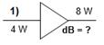
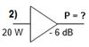
Exemples : dans les schémas ci-contre, calculer le gain ou la puissanceRéponses : 1) rapport = 8 / 4 = 2, soit 3 dB
2) -6 dB correspond à un rapport de 1/4 ; P = 20 / 4 = 5 W
Le triangle représente un circuit dont le gain est donné en dB.
Si le gain exprime un rapport de tensions, le gain est doublé par rapport aux mêmes valeurs exprimées en watts. Ainsi, un rapport de tension de 2 donnera un gain de 6 dB (le double d’un rapport de puissance de 2).
Exemple : soit 10 V en entrée et 12 dB de gain, Tension de sortie ? rapport = x 4 (12dB / 2 = 6 dB) ; Us = 10 x 4 = 40 V
b Les décibels expriment des niveaux relatifs : le gain d'une antenne se définit par rapport à une antenne de référence (le doublet par exemple). Dans ce cas, la puissance rayonnée dans la direction la plus favorable est supérieure à la même puissance appliquée à l'antenne de référence. De même, la puissance d’un émetteur sera définie en dBW (décibel par rapport à 1 watt), les puissances plus faibles, comme celles reçues sur une antenne, seront exprimées en dBm (milliwatt) ou dBµ (microwatt) et les atténuations des rayonnements non essentiels seront données par rapport à la puissance d’émission en dBc. Pour transformer les décibels en différents multiples de puissance, on utilisera : dBW = dBm +30 = dBµ +60. Ainsi –43 dBW = –13 dBm = +17 dBµ
Exemples : un émetteur délivre une puissance de 4 W. La puissance des émissions non désirées générées par l’émetteur est atténuée de -26 dBc. Quelle est la puissance de l’émetteur (en dBW) ? Quelle est la puissance des émissions non désirées (en W) ?
Réponses : 4 W = 6 dBW ; puissance des émissions non désirées = 6 dBW – 26 dBc = -20 dBW = 1/100 W (ou, en transformant les watts en milliwatts : -20 dBW = +10 dBm = 10 mW)
c En modulation d’amplitude (AM) comme en BLU, la puissance d’émission varie au cours du temps. Dans ce cas, la mesure de la puissance se fera sur les pointes d’amplitude ce qui amène à définir la puissance crête appelée aussi puissance de pointe de l’enveloppe (ou PEP, Peak Envelope Power en anglais)
d Le rendement détermine la qualité du transfert de puissance. Le rendement, exprimé en % et toujours inférieur à 100%, est le rapport obtenu en divisant la puissance utile (puissance émise) par la puissance consommée totale.
Rendement (%) = (Puissance utile x 100) / Puissance consommée
Exemple : un émetteur consomme 50 watts. Sa puissance de sortie est 30 watts. Quel est son rendement ?
Réponse : Rendement (%) = (Puissance utile x 100) / Puissance consommée = (30 x 100) / 50 = 60% La puissance consommée mais non émise est dissipée (perdue en chaleur) et est égale à 20 W (= 50 – 30).
R-5.2) Types et caractéristiques des antennes - voir aussi Technique § 9.1 et 9.4 à 9.10
a Dans le vide (ou dans l’air), les ondes radio se déplacent à la vitesse de la lumière (300.000 km/s). La longueur d’onde (mesurée en mètres et notée λ, lettre grecque minuscule lambda) est la distance parcourue dans le vide par l’onde au cours d’une durée égale à la période du signal. La fréquence (notée f et mesurée en hertz, Hz) est le nombre de période du signal par seconde. La fréquence sera souvent donnée dans un multiple du hertz : kilohertz (= 1 000 Hz), mégahertz (= 1 000 kHz), gigahertz (= 1 000 MHz = 1 000 000 kHz). Pour transformer les longeurs d’onde en fréquences (et inversement), on utilisera les formules suivantes en faisant attention aux multiples utilisés (mètre et MHz) :
f(MHz) = 300 / λ(m) et λ(m) = 300 / f(MHz)
Exemples : - Quelle est la longueur d’onde de la fréquence 150 MHz ? Réponses : 300 / 150 = 2 mètres
- A quelle fréquence correspond la longueur d’onde 100 mètres ? 300 / 100 = 3 MHz
b Quelques notions sur les gammes d’onde doivent être connues : initiales de la gamme, adjectif qualificatif et étendue des 8 gammes d’ondes suivantes tant en longueur d’onde qu’en fréquence. On rappelle que les stations du service amateur doivent déclarer auprès de l’ANFR leur puissance PAR maximum par gamme d’ondes : il y a donc lieu de connaître l’étendue des gammes d’ondes pour établir cette déclaration.
Les plages de longueurs d’onde commencent aux longueurs correspondant au qualificatif. Par exemple, les ondes hectométriques (MF) commencent à 1 hectomètre (=100 mètres) et finissent à 10 hm, soit 1000 m ou 1 km.
Gamme |
Ondes |
Plage de longueurs d’onde (λ) |
Plage de fréquences |
|
VLF |
myriamétriques |
plus
de 10 km |
moins
de 30 kHz |
Exemples : - Quelles sont les longueurs d’onde couvertes par la gamme VHF ? 1 à 10 mètres
- Quelles sont les fréquences couvertes par les ondes SHF ? 3 à 30 GHz
- Dans quelle gamme d’onde doit être classée la fréquence 432 MHz ? UHF
- Comment sont qualifiées les ondes de la gamme HF ? décamétriques
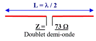
c L’antenne doublet demi-onde (ou dipôle) est l’antenne de base. Elle est constituée d’un fil d’une longueurExemple : un dipôle mesure 50 mètres de long. Sur quelle fréquence (en MHz) résonne-t-il ?
Réponse : le dipôle est un doublet demi-onde qui résonne sur une longueur d’onde de 50 x 2 = 100 m, donc f = 300 / 100 = 3 MHz (voir formule de transformation ci-avant ; le calcul est simple et s’effectue sans calculette).
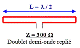
d Dans une antenne doublet demi-onde replié (aussi appelée trombone), lese L’antenne
quart d'onde verticale (GP, Ground Plane en anglais) est
constituée d’une moitié de dipôle et nécessite un plan de sol
(radiants
fixés à la base de l’antenne) ou une masse (la terre ou la
carrosserie d’un
véhicule) afin de reconstituer électriquement le deuxième brin de
l'antenne. L’impédance de cette antenne est de 36 Ω si le plan de sol ou
la
masse est perpendiculaire au brin rayonnant (schéma ci-contre). Si les
radiants (ou la masse) forment un angle de 120° avec le brin rayonnant,
l’impédance de cette antenne est de 52 Ω.
Un brin plus court que le quart d'onde peut être utilisé. Il faut rallonger artificiellement l'antenne grâce à une bobine (positionnée à la base ou au milieu du brin) ou une capacité terminale (au sommet de l’antenne). L’antenne racourcie présente une impédance plus faible à la résonance.
Exemple : Quelle est la longueur (en centimètres) d’une antenne quart d’onde fonctionnant sur 150 MHz ?
Réponse : longueur d’onde = 300 / 150 = 2 mètres. L’antenne quart d’onde fonctionnant sur cette fréquence aura pour longueur : 2 m / 4 = 0,50 m = 50 cm. (calcul simple ne nécessitant pas l’utilisation d’une calculette)
Dans la pratique, la longueur théorique calculée d’un quart d’onde est diminuée d’environ 5% (variable selon le matériau utilisé). Dans l’exemple ci-dessus, l’antenne quart d’onde mesurera : 50 cm x 95% = 47,5 cm. Ce coefficient de raccourcissement est aussi valable pour le dipôle mais pas pour le trombone qu’il faudra au contraire rallonger. De plus, l’impédance de l’antenne, donnée ici en espace libre, varie en fonction du sol (proximité et qualité) et de son environnement immédiat (élément métallique, bâtiment, arbre, ...).
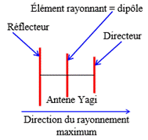
Antenne Yagi ou Beam : le diagramme de rayonnement de l’antenneg Le gain d'une antenne se mesure dans la direction maximum de rayonnement. Le gain se calcule en dB par rapport à l'antenne doublet (dBd) ou par rapport à l'antenne isotropique (dBiso). Celle-ci est une antenne idéale : un point qui rayonne uniformément dans toutes les directions. Le doublet a un gain de 2,14 dB par rapport à l'antenne isotropique. Les lobes de rayonnement se représentent dans le plan vertical (on fait une « coupe » du diagramme de rayonnement selon l’axe du rayonnement maximum) ou horizontal (le diagramme de rayonnement est représenté comme si on était au-dessus de l’antenne). Les diagrammes de rayonnement se représentent aussi par des volumes. Les surfaces de chacun des diagrammes de rayonnement représentés ci-dessous doivent être proportionnels à la puissance émise qui est répartie différemment selon le type d’antennes. Dans les diagrammes ci-après, le plan de sol, les éléments parasites et le sol sont représentés en gris. Les caractéristiques des antennes (impédance, gain) sont identiques à l’émission et à la réception.
h La puissance apparente rayonnée (PAR) est la puissance d'alimentation de l'antenne multipliée par le rapport arithmétique correspondant au gain de l’antenne par rapport au doublet (il faut transformer les dBd en rapport). Cette puissance correspond à la puissance qu'il faudrait appliquer à un dipôle pour avoir la même puissance rayonnée dans la direction la plus favorable de l'antenne (pour application avec des calculs, voir le 1er exemple du § R-5.3a). La puissance isotrope rayonnée équivalente (PIRE) prend pour référence l'antenne isotropique.
i L'angle d'ouverture d'une antenne est l’écart d'angle entre les directions pour lesquelles la puissance rayonnée est la moitié (–3 dB) de la puissance rayonnée dans la direction la plus favorable. Le gain avant / arrière est le rapport, transformé en dB, obtenu en divisant la puissance rayonnée dans la direction la plus favorable par la puissance rayonnée dans la direction opposée à 180°.
j Polarisations : selon la position du brin rayonnant, l’onde rayonnée est polarisée verticalement ou horizontalement. Il est aussi possible d’obtenir des polarisations circulaires (tournantes dans un sens).
k La répartition des tensions et intensités le long d’un brin rayonnant et le couplage d’antennes ne sont pas au programme de l’épreuve de réglementation bien que quelques questions aient été relevées. De même, des questions portant sur les multi-doublets et les antennes à trappes qui sont des antennes multibandes ont été recensées et seront étudiées dans la partie technique (voir §9.4 et suivants)
l Réflecteurs paraboliques : certaines antennes, utilisées dans les très hautes fréquences (SHF et au-delà) emploient des réflecteurs paraboliques (ou paraboles) qui réfléchissent les ondes et concentrent les rayonnements sur un foyer, où est placée l'antenne (généralement un doublet). La distance entre le foyer et la parabole est appelée la focale (F). D étant le diamètre de la parabole, le rapport D/F détermine l'angle d'illumination de l'antenne située dans le foyer et la forme du réflecteur (plus ou moins concave).
R-5.3) Lignes de transmission - voir aussi Technique § 10.1 à 10.4
a La ligne de transmission, qui peut être asymétrique (coaxial) ou symétrique (twin-lead ou « échelle à grenouille »), est un dispositif utilisé pour transférer l'énergie de l'émetteur vers l'antenne ou de l'antenne vers le récepteur. Le transfert d’énergie (ou de puissance) est maximal lorsque la valeur absolue de la résistance de charge (en Ω, ohms) d’un circuit est strictement égale à la valeur absolue de la résistance interne du générateur
L’une des propriétés de la ligne de transmission est sa perte exprimée en décibels par mètre de longueur (dB/m). Cette perte est appelée affaiblissement linéique car elle est proportionnelle à la longueur du câble. L’affaiblissement est donné par le constructeur du câble pour une fréquence et augmente avec cette dernière.
Exemples : 1) Soit un câble de 20 mètres ayant une perte de 0,1 dB/m, quel est l’affaiblissement de ce câble ?
Réponse : perte dans le câble = longueur du câble x affaiblissement linéique = 20 m x 0,1 dB/m = 2 dB
Si ce morceau de câble alimente une antenne dont le gain est de 8 dBd (voir gain des antennes au §R-5.2g), le gain de l’ensemble sera de 6 dB (gain de l’antenne de 8 dB – perte dans le câble de 2 dB : 8 – 2 = 6)
Si cet ensemble (câble + antenne) est alimenté par une puissance de 50 W, la puissance apparente rayonnée de l’antenne sera de 200 W (6 dB correspondent à un rapport de 4, voir §R-5.1a : 50 x 4 = 200). Cette puissance ainsi déterminée est la PAR à déclarer dans le cadre du décret du 17/12/07 modifié.
Enfin, si le gain de l’antenne est exprimé en dBiso (et non pas en dBd comme dans l’exemple ci-dessus), le terme de puissance isotrope rayonnée équivalente (PIRE) est alors employé.
La question ne portera pas sur la puissance à la sortie du câble puisque -2 dB n’est pas un des 9 rapports en puissance à connaître mais pourra porter sur la PAR car le rapport correspondant à 6 dB doit être connu.
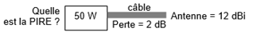
2) Quelle est la PIRE de cet ensemble ?Réponse : gain = -2dB + 12dB =
+10 dB, soit
un rapport de 10 donc PIRE = 50 Wx10=500 W
L'impédance caractéristique d’une ligne est fonction de ses dimensions et du matériau utilisé pour le diélectrique (isolant). L’impédance est notée Z, est donnée en Ω et n'a aucun rapport avec l’affaiblissement linéique. Si un signal provenant d’un générateur alternatif est appliqué à l’entrée d’une ligne de transmission, le même signal (même amplitude et même phase) se retrouvera sur sa sortie (pertes déduites) à condition que cette sortie soit bouclée sur une charge résistive ayant la même valeur que l’impédance caractéristique du câble.
b TOS et désadaptation : lorsque la ligne de transmission et la charge (l'antenne, par exemple) n’ont pas la même impédance, le transfert d’énergie n’est pas optimal : il apparaît des ondes stationnaires sur la ligne et une partie de l’énergie émise retourne à l’émetteur. Cette désadaptation se mesure par le coefficient de réflexion, noté ρ (rhô), qui est le rapport du courant (tension ou intensité) réfléchi divisé par le courant émis (ou courant incident), ces deux valeurs étant exprimées dans la même unité (volt ou ampère). Si la mesure est exprimée en watts, le calcul fera intervenir une racine carrée (cette formule nécessite l’emploi d’une calculette). Le TOS (Taux d’Ondes Stationnaire) est égal à 100 fois ρ :
coefficent de réflexion (ρ) = Uréfléchie (V) / Uémise (V) = Ir (A) / Ie (A) = √[Pr (W) / Pe (W)] et TOS (%) = 100 x ρ
Exemples : à l’entrée d’un câble, on mesure une tension incidente de 20 V et une tension réfléchie de 5 V. Quel est le TOS présent dans le câble ? Même question avec 20 W de puissance émise et 5 W de puissance réfléchie
Réponses : ρ = Uréfléchie(V) / Uémise (ou incidente)(V) = 5/20 = 0,25 ; TOS (%) = 100 x ρ = 100 x 0,25 = 25 %
ρ = √[Pr (W) / Pe (W)] = √[5 / 20] = √[0,25] = 0,5 ; TOS (%) = 100 x ρ = 100 x 0,5 = 50 %
c Cette désadaptation se mesure aussi par le Rapport d'Ondes Stationnaires (ROS). Ce nombre est le rapport des impédances caractéristiques de la ligne (câble) et de la charge (antenne). Si ces deux impédances sont des résistances pures, le ROS est égal au rapport obtenu en divisant ces résistances (en Ω) calculé de telle manière que le rapport soit supérieur à 1, c’est-à-dire en mettant la valeur la plus forte au numérateur (en haut) :
ROS = Z plus forte (Ω) / Z plus faible (Ω)
Exemple : soit une antenne de 100 Ω alimentée par un câble de 50 Ω d’impédance, quel ROS mesure-t-on ?
Réponse : ROS = Z plus forte / Z plus faible = 100 / 50 = 2 / 1
Dans le programme de l’examen, seul le ROS est cité. Cependant, notez des questions sont posées sur des calculs de TOS et de ROS et que la transformation ROS>ρ (ou inversement) est complexe et ne peut être réalisée sans calculette. On verra au §10-3b6 que ROS = (1+ρ)/(1-ρ) et que ρ = (ROS-1)/(ROS+1). Les appareils de mesure indiquent rarement le TOS et il y a parfois confusion entre le TOS et le taux de puissance réfléchie qui se définit par la formule suivante : (Pr / Pe) x 100
d Pour adapter les impédances, une boîte de couplage (ou boîte d’accord) sera insérée entre l’émetteur et la ligne de transmission. Entre la ligne et l’antenne, un balun réalisera l’adaptation symétrique/asymétrique de la connexion et adaptera les impédances si son rapport est différent de 1/1. Pour adapter les impédances, une « ligne quart d’onde » réalisée à partir d’un morceau de ligne de transmission peut aussi être utilisée avec la formule : Zligne = √ (Zentrée x Zsortie) (voir §10-4a2, calcul difficile à effectuer sans calculette)
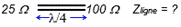
Exemple : quelle est l’impédance de la ligne quart d’onde utilisée (Zligne)?Réponse : Zligne = √ (Zentrée x Zsortie) = √ (25 x 100) = √ (2500) = 50 Ω
R-5.4) Brouillage et protections des équipements électroniques - voir aussi Technique § 11.6
a La directive européenne 2014/30/UE donne une définition de la Compatibilité ÉlectroMagnétique (CEM) : « aptitude d’équipements à fonctionner dans leur environnement électromagnétique de façon satisfaisante sans produire eux-mêmes de perturbations électromagnétiques intolérables pour d’autres équipements dans cet environnement. (…) Une perturbation électromagnétique peut être un bruit électromagnétique, un signal non désiré ou une modification du milieu de propagation lui-même. »
En radio, la CEM est donc la faculté d'un émetteur de ne pas perturber son environnement, en particulier un récepteur, ou la faculté d'un récepteur de ne pas être perturbé par un émetteur ou son environnement. Un matériel électrique ou électromécanique ou électronique (et a fortiori radioélectrique) a un certain niveau d'immunité. Lorsque les perturbations dépassent ce niveau, son seuil de susceptibilité est atteint. Il faut alors prendre des mesures de durcissement pour atteindre un meilleur niveau d'immunité. On parle d'émission lorsqu'il s'agit du générateur de perturbations électromagnétiques et de susceptibilité lorsqu'il s'agit de matériel perturbé. Les installations radioamateurs sont souvent confrontées à ces problèmes vis à vis de leur voisinage. Une perturbation (émission ou susceptibilité) est conduite lorsqu'elle est véhiculée par l'intermédiaire des conducteurs (fils, câbles, pistes de circuits imprimés, ...). Une perturbation est rayonnée lorsqu'elle se propage dans l'espace environnant par un champ électromagnétique.
b Le filtrage de l'alimentation secteur doit être particulièrement soigné afin de ne pas perturber les autres appareils susceptibles d'être brouillés. Mais le secteur n'est pas la seule cause de brouillage. Les blindages, en particulier ceux des étages de puissances, devront être efficaces. Le métal va jouer un rôle de réflecteur pour le champ électromagnétique de haute fréquence qui restera confiné dans les boîtiers métalliques. Des filtres passe-bas seront utilisés pour bloquer les harmoniques indésirables d’un émetteur et si, par exemple, des problèmes apparaissent lors de l’utilisation des VHF, un filtre passe-haut sera inséré dans la ligne coaxiale des téléviseurs pour prévenir les risques de perturbations. Un filtre passe-bande relié à la masse et dont la fréquence de résonance sera centrée sur la bande d’émission peut aussi être inséré dans la ligne de réception. A puissance égale, la FM provoque des perturbations moindres.
Dans les montages réalisés par les radioamateurs, les découplages seront particulièrement soignés car ils préviennent la "remontée" de la H.F. (Haute Fréquence) par la ligne d'alimentation. Le passage des lignes de transmission aux aériens est souvent une source de brouillage quand ces lignes longent d'autres câbles (secteur, téléphone, TV, ...). Le défaut de masse de l'émetteur est quelquefois à l'origine des problèmes de brouillages.
Le brouillage peut provenir soit de l'alimentation secteur, soit du circuit d'entrée dans le cas de récepteurs radioélectriques (T.V., Chaîne HI FI, ...), soit des circuits internes de l'appareil (étage de détection par exemple) par couplage ou rayonnement direct. A ce dernier stade, la susceptibilité sera d'autant plus difficile à être durcie.
c Un produit d'intermodulation est créé par un mélange de fréquences au niveau d'un étage (ou d'un composant) non linéaire aussi bien à la sortie d'un émetteur qu’à l'entrée d'un récepteur. Les mélanges correspondent à la somme et la différence des fréquences fondamentales et de leurs harmoniques. Soient A et B, deux fréquences présentes à l’entrée d’un étage défaillant ; en sortie, les fréquences [A + B] et [A – B] seront présentes mais aussi les harmoniques ([2 x A] et [2 x B]) et des mélanges complexes comme [(2 x B) – A] et [(2 x A) – B], appelés « produits du troisième ordre », d'autant plus difficile à éliminer que A et B seront des fréquences voisines.
d Lorsqu’un signal de fréquence voisine à celle du signal que l’on veut recevoir est un signal puissant de forte amplitude, celui-ci va provoquer une surcharge de l’étage d’entrée du récepteur qui va alors manquer de linéarité (le signal à la sortie n’est plus proportionnel au signal d’entrée). Ce signal puissant, non désiré, va alors interférer avec le signal que l’on veut recevoir et moduler ce dernier. En conséquence, sera entendue non seulement la modulation du signal désiré mais également la nouvelle modulation : c’est l’effet de transmodulation.
R-5.5) Protection électrique - pas de référence à la partie Technique
a La protection des personnes doit toujours être présente à l'esprit. La Haute Fréquence, en particulier dans la gamme des SHF et EHF, peut être dangereuse (ne jamais passer devant le champ d’une parabole lors d’émission). De même, les tensions présentes dans l'antenne pendant l'émission peuvent être importantes.
La construction et l'entretien des aériens et de leurs supports (mâts et pylônes) respecteront toutes les règles de sécurité (baudrier ou harnais et longe(s) équipée(s) d’un mousqueton pour le grimpeur, port d’un casque pour les personnes se trouvant au pied des aériens, rubalise lorsque l’intervention empiète sur la voie publique, …).
b Le courant électrique continu (ou 50 Hz) est d’autant plus dangereux que la tension est élevée. Les normes de sécurité considèrent qu’en milieu sec, une tension inférieure à 50 volts n’est pas dangereuse (24 V en milieu humide ou à l’extérieur et 12 V en immersion). Pour les tensions supérieures, il faut prévoir des compartiments fermés et munis de systèmes de coupure de tension à l’ouverture afin d'éviter tous risques d'électrisation, en particulier sur les alimentations en haute tension nécessaires au fonctionnement des amplificateurs à tubes.
La couleur de la gaine des fils permet de repérer la nature du courant 50 Hz : jaune-vert pour la terre (protection) ; bleu pour le neutre ; rouge, marron ou noir pour la phase (fil le plus dangereux). Les risques liés au courant électrique sont les brûlures et l’électrisation avec plusieurs niveaux : la contraction locale des muscles, la contraction des muscles respiratoires avec risque d’asphyxie, la fibrillation du cœur qui peut entraîner le décès par arrêt circulatoire (électrocution, rappel de vocabulaire : vous ne pouvez pas dire « j’ai été électrocuté » car vous n’êtes pas décédé mais vous pouvez dire « j’ai été électrisé »). Ces risques apparaissent lorsqu’une personne est en contact direct avec le fil de phase et le fil de neutre, de terre ou le sol, ou que cette personne, tout en étant en contact avec le sol, touche la carrosserie métallique d’un appareil présentant un défaut d’isolation de son circuit électrique (contact indirect).
Les moyens de protection sont la mise à la terre de toutes parties métalliques risquant d’être mise accidentellement à un potentiel dangereux. Il est interdit d’utiliser comme prise de terre les canalisations d’eau, de gaz ou de chauffage central. Au niveau de l’installation électrique, il est préférable d’utiliser des disjoncteurs différentiels (à la place de simples fusibles, même s’ils sont rapides).
c La foudre est une décharge électrique qui se produit lorsque de l’électricité statique s’accumule entre des nuages ou entre les nuages et le sol. Par temps orageux, une antenne peut accumuler des charges statiques et être le siège de courants induits lors de la production d’un éclair. La protection contre la foudre est aussi un élément à prendre en compte lors de l'installation d'antennes et, plus particulièrement, de pylônes. La foudre cherchant toujours à passer par le chemin le plus court et le plus droit, le câble coaxial sera disposé de manière à faire des coudes francs, ce qui réduira le risque de foudroiement. Lorsque le bâtiment sur lequel est installée l’antenne est pourvu d’un paratonnerre, un parafoudre relié au plus court à l’antenne pourra être monté. En cas d'orage, il est prudent de cesser d'émettre et de débrancher les câbles de l'installation pour éviter que l'antenne ne se transforme en paratonnerre, ce pour quoi elle n'est pas prévue, ni le pylône qui la soutient, ni le câble qui l’alimente.
EPREUVE de TECHNIQUE
0) RAPPELS de MATHÉMATIQUES et d’ALGÈBRE
Ce chapitre préliminaire rappelle les principes mathématiques et algébriques nécessaires à la compréhension et au traitement des formules énoncées dans ce cours.
a 0.1) Transformation d'équation : une équation est une expression mathématique qui indique que les deux termes de chaque côté du signe = sont de même valeur. Chacun des deux termes est composé de données (notées A, B, C ou D dans les exemples ci-dessous) et d'une inconnue (notée X). La transformation d'équation permet de calculer l’inconnue à partir des données. La transformation des équations s'effectue différemment selon l'opération et est récapitulée dans le tableau ci-dessous :
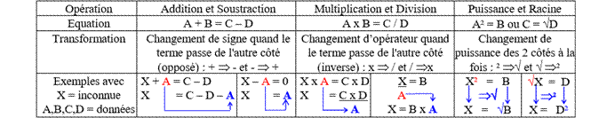
Le résultat de l’addition des termes est une somme ; le résultat d’une soustraction est une différence ; le résultat d’une multiplication est un produit ; le résultat d’une division (ou fraction) est un quotient. Dans une fraction, le terme du haut (ou placé avant le /) est appelé numérateur et celui du bas (après le /) est appelé dénominateur.
Dans une fraction, les deux termes sont l’un au dessus de l’autre séparés d’un trait ou sur la même ligne séparés par le signe / (barre de fraction). Dans une multiplication, le signe de multiplication (x) placé entre les deux termes peut être remplacé par un point (exemple : A . B = A x B) ou par rien (exemple : AB = A x B). Le signe ² (carré) placé après un nombre signifie que ce nombre est multiplié par lui-même (exemple : A² = A x A). Le signe √ (racine carrée) placé devant un nombre signifie que le résultat de l’opération multiplié par lui-même donne le nombre (exemple : √A x √A = A).
b Les opérations combinées (mélange d’additions et de multiplications par exemple) doivent être traitées dans un ordre précis : puissance (ou racine), puis multiplication (ou division), et enfin addition (ou soustraction). La place des parenthèses remet en cause cet ordre : il faut calculer ce qu'il y a à l’intérieur des parenthèses avant de continuer : la parenthèse est prioritaire. Exemple : dans l'équation A = B x C + D², on calcule D², puis B x C et on additionne le tout. Dans l'équation A = B x (C + D)², on calcule C + D que l'on met au carré et ce résultat est multiplié par B. Mais attention : √AB = √(A x B), par contre (√A) x B s'écrira B√A pour éviter toute confusion. Pour des raisons de lisibilité, les crochets [ et ] sont utilisés : ils ont la même valeur que les parenthèses.
Les expressions algébriques se simplifient en supprimant les valeurs de signes opposés dans une addition ou les valeurs communes au numérateur et au dénominateur des fractions : A + B + C – B = A + C puisque B – B = 0 et (A x B) / (B x C) = A / C puisque B / B = 1.
Soustraire un nombre négatif revient à l’additionner : A – (–B) = A + B
Une division par une fraction se transforme en une multiplication par l’inverse de cette fraction :
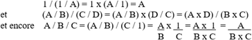
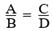
c Lorsqu’on a des rapports proportionnels (par exemple : A / B = C / D), le théorème de Thalès nous rappelle que l’on a aussi l’équation suivante : A / C = B / D. Dans ce cas, l’inconnue (D par exemple) est déterminée par le produit en croix qui est égal au produit des valeurs de la deuxième diagonale (B multiplié par C dans notre exemple) divisé par la valeur opposée (A dans notre exemple), d’où : D = B x C / A. Ou, si C est l’inconnue : C = A x D / B. L’utilisation de parenthèses est ici inutile.d La distributivité de la multiplication et de la division par rapport à l’addition et à la soustraction implique que : (A x B) + (C x B) = (A + C) x B mais aussi que : (A / B) – (C / B) = (A – C) / B
En radioélectricité, les opérations avec additions et soustractions sont peu utilisées, excepté dans le calcul des circuits équivalents. Par contre, la combinaison multiplication – division – puissance – racine est fréquente.
Exemple d’application de transformation d’équations : loi de Thomson :
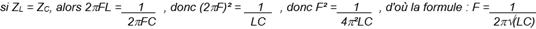
a 0.2) Puissances de 10, multiples et sous-multiples : compte tenu des unités utilisées, il arrive souvent que nous devions utiliser des 0 avant la virgule (farad par exemple) ou après la virgule (hertz par exemple). Pour faciliter la lecture des nombres, les multiples et sous-multiples sont utilisés. Ils sont basés sur des puissances de 10 qui vont de 3 en 3 (3, 6, 9 et -3, -6, ... pour les sous-multiples). Le tableau ci-dessous indique les multiples et sous-multiples utilisés le plus couramment dans les applications radioamateur et à l’examen.
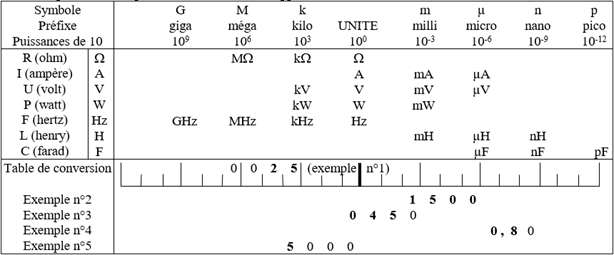
D’autres multiples et sous-multiples existent mais ne sont pas utilisés dans ce cours. Les plus connus sont : hecto (symbole h, 102), déca (da, 101), déci (d, 10-1), centi (c, 10-2). Il existe aussi le myria (ma, 104), utilisé dans les longueurs. Les symboles des multiples, à partir du méga, sont en majuscule alors que ceux des sous-multiples sont en minuscule. De plus, le système international définit les multiples et les sous-multiples de 1030 à 10-30. Au-delà du Giga se trouvent : Téra (T, 1012), Péta (P, 1015), Exa (E, 1018), Zetta (Z, 1021), Yotta (Y, 1024), Ronna (R, 1027), Quetta (W, 1030) et en deçà du pico : femto (f, 10-15), atto (a, 10-18), zepto (z, 10-21), yocto (y, 10-24), ronto (r, 10-27), quecto (q, 10-30). Ces multiples sont des extrêmes : la tension générée par un électron est d’environ 160 zV (zeptovolt), la bande de fréquence des ultraviolets est centrée aux alentours de 1,2 PHz (pétahertz).
b Pour passer d'un multiple à l'autre, déplacer la virgule de trois chiffres à chaque multiple. En utilisant la table de conversion ci-dessus, positionner les chiffres dans chaque case en plaçant la virgule sous le grand trait du multiple utilisé. Lorsque le nombre est défini par une puissance de 10 (voir exemple n°4), la virgule décimale est placée sous le trait de la puissance de 10. Les cases vides à droite et à gauche du nombre seront remplies avec des 0. Pour passer au multiple ou sous-multiple supérieur, la virgule sera déplacée de trois crans vers la gauche (sous le premier grand trait de gauche). Pour passer au multiple ou au sous-multiple inférieur, la virgule sera déplacée de trois crans vers la droite (sous le premier grand trait de droite). Une fois la conversion faite et la virgule positionnée, retirer les 0 inutiles à gauche de la partie entière et à droite de la partie décimale.
Exemples : 1) conversion k → M : 25 kΩ = , . 25 MΩ = 0,025 MΩ. La case vide entre la virgule et la valeur 2 (représentée ici par un point) et la case vide à droite de la virgule sont comblées par des 0.
2) conversion µ
→ m : 1500 µA = 1,500 mA = 1,5 mA.
Les 0
inutiles à droite de la partie décimale (partie du nombre après la virgule)
sont supprimés.
3) conversion UNITE
→ m : 0,45 V = 0,450 V = 0450 mV = 450
mV. Le 0 inutile à gauche de la partie entière (partie du nombre avant
la virgule) est supprimé.
Il est rarement utilisé, dans les applications courantes, plus de 4 multiples pour une même grandeur. Rappelez-vous des multiples des grandeurs qui vous sont plus familières : kilomètre, mètre, millimètre, micron (="micromètre") ou encore tonne (="mégagramme"), kilogramme, gramme, milligramme. Les candidats mal à l’aise avec l’algèbre et les multiples prépareront sur leur feuille de brouillon avant de commencer l’épreuve une table de conversion avec au dessus de chaque grand trait le symbole des multiples et des sous-multiples.
c Dans les opérations d’addition et de soustraction, il faut impérativement utiliser les valeurs avec les mêmes multiples ou sous-multiples. Lors des opérations de multiplications, les puissances de 10 s'additionnent ; elles se soustraient pour les divisions : 109 x 106 / 103 = 10(9+6-3) = 1012. La puissance change de signe lorsqu'elle passe en dessous ou au dessus du trait de fraction : 1 / 103 = 10-3 et 1 / 10-6 = 106. On rappelle que 100 = 1.
d Le signe « ^ », qui signifie « puissance », permet de remplacer la police de caractère « puissance » (petits caractères surélevés) quand elle n’est pas disponible. Ainsi 10-6 s’écrira 10^-6 et 1012 s’écrira 10^12.
Les puissances de 10 sont multipliées par 2 lors de l'élévation au carré : (10-3)2 = 10(-3x2) = 10-6. Avec la racine carrée, seules les puissances de 10 sont utilisables car elles sont divisées par 2 : √(106) = 10(6/2) = 103
Exemple n°4 : Calculer P pour U = 20 mV et R = 5 kΩ avec la formule P = U² / R.
Réponse : P = U² / R =(20 x 10-3)2 / (5 x 103)= 400 x 10-(3x2) / 5 x 103 = 400/5 x 10(-6-(+3)) = 4/5 x 10(-9+2) = 0,8 x 10-7 = 80 nW (voir conversion ci-dessus : la virgule a été placée sous le trait de 10-7, au 7ème trait à droite de l’unité)
Exemple n°5 : Calculer R (en Ohms) pour U = 20 mV et P = 80 nW avec la formule R = U² / P.
Réponse : R = U² / P = (20 x 10-3)2 / (80 x 10-9) = (400 / 80) x 10 (-(3x2)- -9) = 5 x 103 = 5000 Ω
0.3) Utilisation d’une calculette : la calculette utilisée sera du type « Collège ». Si les touches des 4 opérations classiques (+, −, x, ÷), des 10 chiffres et de la virgule se repèrent facilement, les autres fonctions nécessitent quelquefois d’utiliser une fonction « seconde ». Ces fonctions sont souvent indiquées au dessus ou en dessous de la touche (et non sur la touche) et l’appui préalable sur la touche « fonction seconde » permet d’y accéder.
a On cherchera pour chaque calculette les 12 fonctions ou opérateurs utilisés dans les formules de ce cours :
- Exposant de 10 (touche marquée .10x ou Exp ou E)
- Inversion de signe (touche marquée +/-, servant souvent à entrer des puissances de 10 négatives). De nombreuses calculettes « Collège » acceptent le – de la soustraction pour signer négativement les puissances de 10 et n’ont donc pas cette fonction. Vérifiez le fonctionnement de la calculette.
- Racine carrée (symbole √). Dans certains modèles de calculettes, une parenthèse s’ouvre automatiquement. Il faudra penser à la refermer au bon endroit pour éviter une erreur de syntaxe ou de formule.
- Mise au carré (touche marquée x²) que nous noterons [x²]. En l’absence de cette touche, la fonction Puissance (marquée [^]) sera suivie du chiffre de la puissance, comme dans l’exemple ci-dessous.
- Logarithme décimal (touche marquée LOG) que nous noterons [LOG]
- Puissance de 10 ou Antilog (touche marquée 10x, à ne pas confondre avec l’exposant de 10), notée [10x]. Si la calculette n’a pas cette fonction, la fonction Puissance (marquée [^]) sera utilisée en tapant 10^ x
- Inverse (touche marquée 1/x, x-1 ou Inv) que nous noterons [1/x]. Si la calculette n’a pas cette fonction, la fonction Division ([÷]) sera utilisée en tapant [1][÷]( x ) où x est le diviseur. Dans ce cas, n’oubliez pas les parenthèses autour du dénominateur.
- Touche donnant la valeur π (3,14159…) que nous noterons [π]
- Vérifiez la procédure d’effacement complet des mémoires (certains modèles ont une touche « reset » située au dos des calculettes : enfoncez la pointe de votre stylo pour la réinitialisation des mémoires)
- Vérifiez le fonctionnement des parenthèses. Dans le doute sur l’utilisation des parenthèses dans une formule, vous pouvez en ajouter : la plupart des calculettes accepte au moins 6 niveaux d’imbrication de parenthèses. La seule contrainte sera de bien « refermer » les parenthèses : il faut, dans une formule, autant de « ( » que de « ) » sinon votre calculette vous affichera un message d’erreur.
- Vérifiez enfin le fonctionnement des touches d’effacement (touche souvent marquée C ou AC pour l’effacement total et CE pour l’effacement partiel) et les touches de déplacement (quand elles existent) très utiles pour modifier une valeur dans une formule sans avoir à la ressaisir en entier.
L’affichage des résultats est paramétrable (il faut le sélectionner à nouveau après un « reset ») :
- L’affichage en virgule flottante (fonction souvent marquée FLO) est l’affichage standard par défaut.
- En affichage Scientifique (fonction souvent marquée SCI), les nombres sont affichés avec une partie entière toujours comprise entre 1 et 9, une partie décimale (à droite de la virgule comportant un nombre de chiffres paramétrable) et une puissance de 10 sous la forme d’un nombre entier positif ou négatif.
- Le mode d’affichage Ingénieur (fonction souvent marquée ENG) est comparable à l’affichage Scientifique mais, dans ce cas, la puissance de 10 est toujours multiple de 3 et la partie entière est comprise entre 1 et 999. Malheureusement, la plupart des calculettes « Collège » ne dispose pas de cet affichage qui permet de visualiser le résultat avec les multiples ou sous-multiples présentés au paragraphe précédent.
b Les données seront saisies en utilisant ou pas les multiples mais l’affichage indiquera toujours un résultat avec puissances de 10 lorsque l’affichage en mode Ingénieur ou Scientifique est sélectionné.
Soit une valeur de 2,5 k à entrer, on saisira 2500 ou 2,5.103 en appuyant sur les touches [2][,][5][Exp][3]. En affichage à virgule flottante, ce nombre s’écrira 2500. En mode Scientifique ou Ingénieur, il s’affichera sous la forme 2,5.103 ou le plus souvent 2,5+03 (la puissance de 10 est indiquée : le signe (+ ou –) suivi de deux chiffres).
250000 s’affichera 2,5+05 en mode Scientifique et 250+03 en mode Ingénieur (soit 250 k car 103 correspond au multiple kilo, symbole k). Notez que 100 correspond à l’unité : 2,5 sera écrit 2,5+00 en affichage Scientifique et Ingénieur. De même, 25 sera écrit 2,5+01 en affichage Scientifique et 25+00 en affichage Ingénieur. Enfin 0,25 s’affichera 2,5-01 en mode Scientifique et 250-03 en mode Ingénieur (correspondant à 250 milli). Pour entrer cette valeur avec le sous-multiple milli, on saisira 250.10-3 en appuyant sur les touches [2][5][0][Exp][+/-][3].
c Dans le cours, les réponses avec calculs sont repérées par la mention « Sur une calculette » et sont données :
- en écriture naturelle (ou écriture intuitive ; toutes les calculettes « Collège » récentes acceptent ce format). La formule est saisie avec les parenthèses notées [(] ou [)] puis on appuie sur [=] pour afficher le résultat.
- avec la formule simplifiée, ce qui nécessite l’utilisation des multiples ou sous-multiples indiqués.
Une fois la formule saisie, appuyez sur [=] (ou [EXE]) pour afficher le résultat.
Exemple n°4 : Calculer P pour U = 20 mV et R = 5 kΩ. (formule à utiliser : P = U² / R, soit : U [x²] ÷ R ou U [^] [2] ÷ R)
Sur une calculette, en écriture naturelle : (20.10-3)2÷(5.103)
soit la séquence des touches suivantes : [(] [2] [0] [Exp] [+/-] [3] [)] [^] [2] [÷] [(] [5] [Exp] [3] [)] [=]
Résultat affiché avec virgule flottante : 0,00000008
Résultat affiché en notation Scientifique : 8-08, soit 8 x 10-8 (utiliser la table de conversion du §0.2a)
Résultat affiché en notation Ingénieur : 80-09, soit 80 x 10-9 = 80 nW
Exemple n°5 : Calculer R (en Ohms) pour U = 20 mV et P = 80 nW (formule à utiliser : R = U² / P)
Sur une calculette, en écriture naturelle : (20.10-3)2÷(80.10-9) = 5.103 = 5 kΩ = 5000 Ω
d Le paramétrage et les fonctions de la calculette Casio FX-92 Collège (modèle Classwiz) :
- Au démarrage (ou par la suite à l’aide de la touche « ACCUEIL »), sélectionner le mode « Calcul »
- Pour réinitialiser
le paramétrage d’origine (et/ou vider la mémoire) : appuyez sur
« CONFIG » puis « Réinitialiser », « OK »,
« Tout » (ou « Mém. variables »),
« OK », « Oui ».
Méthode alternative : enfoncez la pointe d’un stylo dans le trou au
milieu du dos de la calculette
- Pour définir l’affichage en mode « Scientifique » : appuyer sur « CONFIG » puis « Paramètre Calcul », « OK », « Arrondi », « OK », « Sci », « OK », sélectuionner « Sci4 » (= 4 chiffres significatifs), « OK »
- Pour définir l’affichage à l’écran , : appuyer sur « CONFIG » puis « Paramètre Calcul », « OK », « Saisie/Résultat», « OK », « Sligne/Rdéc » (4ème option), « OK ». « AC » pour sortir du menu.
Avec ce paramétrage, en saisissant la formule « √(2) ÷ 2 » puis « EXE », l’écran affichera 7,071 x 10-1 (et non pas √(2) ÷ 2). Au besoin, la touche « FORMAT » permet de définir un autre mode d’affichage du résultat (choisir « Notation Scient. » ou le format souhaité).
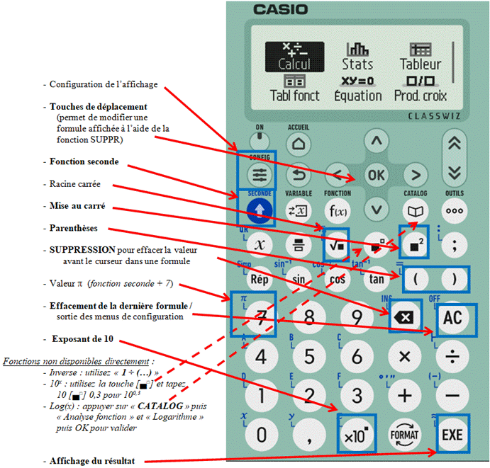
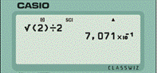
Lien
pour l’émulation d’une calculette Casio FX-92 Collège Classwiz en
ligne :
https://classwiz-emulator.casio.com/WebApp/cw/index.html?model=EY006
Attention, il existe de nombreuses versions de la FX-92. Les modèles changent légèrement tous les ans pour que les parents ne puissent pas réutiliser pour les cadets la calculette des aînés ! Ainsi, les fonctions peuvent être déplacées et les touches peuvent changer de nom.
D’autre part, la FX-92 n’accepte pas la notation Ingénieur mais permet la saisie en écriture naturelle.
Section A : Bases d’électricité et composants passifs
a 1.1) Les bases de l'électricité reposent sur quatre grandeurs : l'Intensité notée I (le débit) et mesurée en ampère (A) qui correspond au passage d’une quantité d’électricité par seconde ; la Tension ou différence de potentiel (ddp) notée U qui est mesurée en volt (V) ; la Résistance notée R et mesurée en ohm (Ω, lettre grecque oméga majuscule) et la Puissance dégagée (en chaleur dans le cas d’une résistance), notée P et mesurée en watt (W).
b La résistance désigne à la fois le phénomène physique (résistance au passage du courant) et le composant (voir description au §1.5c). Les anglophones utilisent deux mots différents : resistance (phénomène physique) et resistor (composant). Le composant résistance se schématise par un rectangle (ou, dans les anciens schémas, par une « dent de scie »). Dans les schémas, la valeur du composant est notée à l'intérieur du rectangle. La mention Ω n'est pas obligatoire. Une valeur de 2200 Ω pourra être notée 2200 mais aussi 2,2 k ou encore 2k2.
c La tension se mesure entre deux points du circuit et se schématise par une flèche entre ces deux points. UAB est la tension entre les points A et B. La tension de référence est prise en B par le fil « Com » du voltmètre ; l’autre fil du voltmètre est à brancher au point A indiqué par la flèche de tension. Ainsi, si UAB est positif, la flèche indique le sens des potentiels (ou tensions) croissants. La tension en un point du circuit (par exemple UA) indique la tension par rapport à la masse (0 V) qui sert alors de tension de référence. Ainsi, dans le schéma ci-dessous, UAB = UA – UB. La tension générée par une source est appelée force électromotrice (notée E). La chute de tension aux bornes d’une résistance ou d’une charge est appelée différence de potentiel (Potenzieller Unterschied en allemand, la langue de G. Ohm, d’où le U qui désigne la tension).
d L'intensité est une « agitation ordonnée d’électrons ». Elle se mesure en un point et se schématise par une flèche en ce point sur le circuit. Le sens de la flèche indique le sens du courant (du + vers le –). L’intensité en un point B du circuit sera notée IB. Les flèches de tension et d'intensité sont en sens opposé si les valeurs de tension et d’intensité sont positives. Pour mesurer une intensité à l’aide d’un ampèremètre, il faudra couper le circuit et insérer l’instrument de mesure en branchant le fil « Com » de l’ampèremètre sur le fil relié au – du circuit.
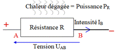
e Le calcul de la puissance dissipée est utile pour optimiser le dimensionnement des composants. Si la puissance dissipée par lesf En
prenant des références hydrauliques, la tension est comparable à une différence
de pression dans un tuyau et se mesure donc entre
deux points d’un circuit. L’intensité est un débit et se mesure en insérant
l’instrument de mesure en un point du
circuit, comme un compteur d’eau. La résistance est comparable à un
rétrécissement du tuyau. La chaleur
dégagée par la résistance provient des frottements lors du passage des
électrons.
a 1.2) Lois d'Ohm (U = R . I) et de Joule (P = U . I). Ces deux lois sont fondamentales car elles expriment les relations entre les quatre grandeurs de base de l’électricité. En développant les deux lois, on trouve les douze équations du tableau ci-dessous : P = U . I et on sait que U = R . I ; en remplaçant U par R . I dans la première équation, on trouve : P = (R . I) . I = RI². De même, on sait que I = U / R, donc P = U . I devient P = U x (U / R) donc P = U² / R. Ainsi, deux données (intensité et résistance, par exemple), permettent de calculer les deux inconnues correspondantes (dans notre exemple : puissance P = RI² et tension U = RI).
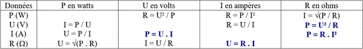
b Les quatre équations éditées en gras ci-dessus servent de base aux quatre triangles de calcul simplifié :
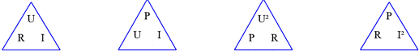
Exemples : 1) Soit une résistance de 1500 Ω parcourue par un courant 0,1 A. Quelle est la tension à ses bornes ?
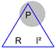
Quelle est la puissance dissipée ?P = U . I = 150 x 0,1 = 15 W ou P = R . I² =1.500 x 0,1 x 0,1 = 15 W
ou encore P = U² / R = (150 x 150) / 1500
= 22 500 / 1500 = 15 W
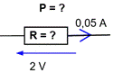
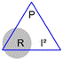
2) quelle est la puissance P dissipée et la résistance R ?P = U . I = 2 x 0,05 = 0,1 W
R = U / I = 2 / 0,05 = 40 Ω
ou R = P / I² = 0,1 / (0,05 x 0,05) = 0,1 / 0,0025 = 40 Ω
ou encore R = U² / P = 2² / 0,1 = 4 / 0,1 = 40 Ω
a Le coulomb (noté C) est une quantité d’électricité que l’on note Q. L’intensité est un débit et correspond au passage d’un nombre d’électrons (précisément : 6,25.1018, soit un peu plus de 6 milliards de milliards) par unité de temps (l’unité de temps est la seconde). En reprenant les références hydrauliques du §1.1f, le coulomb est assimilable à un volume d’eau. En comparaison, un millilitre d’eau (1 cm3) contient 3,34.1022 molécules d’eau. Un ampère est égal à un coulomb par seconde :
Q(C) = I(A) . t(s) ou encore I(A) = Q(C) / t(s)
b De même, il existe une unité d'énergie: le joule (noté J). Un watt est un joule par seconde. L’énergie est aussi exprimée en wattheures (Wh), avec la relation suivante : 1 Wh = 3600 J. La quantité d’énergie disponible est notée E (c’est le même E que l’on retrouve dans la formule E = MC², à ne pas confondre avec le E (en volts) de la force électromotrice de la pile que nous étudierons plus tard). La quantité d’énergie consommée est appelée travail et est notée W (à ne pas confondre avec le W des watts car le travail se mesure en joules). Le travail en joules peut exprimer une énergie thermique (la chaleur), une énergie chimique (sous l’effet de l’électrolyse, l’eau se décompose en oxygène et hydrogène), une énergie mécanique (énergie déployée pour déplacer un poids) ou une énergie électromagnétique. La notion de travail ne donne pas d’indication sur la durée : pour déplacer 10 tonnes de sable, on utilisera une brouette et le travail se fera en une journée ou on emploiera une pelleteuse et le travail sera fait en un quart d’heure : le travail est identique, seule la puissance utilisée change.
E ou W(J) = P(W) . t(s) ou encore P(W) = E ou W(J) / t(s)
Exemples : Calculer Q en Coulombs et W en Joules
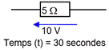
Réponses :Q(C) = I . t = (U / R) . t = (10 / 5) . 30 = 2 x 30 = 60 C
W(J) = P . t = (U² / R) . t = (10 x 10 / 5) x 30 = 20 x 30 = 600 J
ou, puisque P = U.I, alors P.t = U.I.t, donc : W(J) = U(V) . Q(C) = 10 x 60 = 600 J
a 1.4) La résistivité est un nombre qui caractérise le pouvoir d’un matériau à résister au passage du courant électrique continu. La résistivité est notée ρ (lettre grecque minuscule rhô) et se définit en Ωm (ohm-mètre). La résistance d'un corps dépend de sa résistivité, donc de sa nature, mais aussi de ses dimensions. Pour une même résistivité, la résistance d’un corps est proportionnelle à sa longueur et inversement proportionnelle à sa section :
R(Ω) = ρ(Ωm) . L(m) / s(m²)
avec R= résistance ; ρ = résistivité du matériau ; L = longueur du fil ; s = section du fil
Les conducteurs ont une faible résistivité (jusqu'à 0,01 Ωm) ; les isolants en ont une très élevée (plus de 1 MΩm). Entre ces deux extrêmes se trouvent les semi-conducteurs. La résistivité est toujours donnée pour une température du matériau de 20°C. D'une façon générale, la résistivité d'un conducteur augmente avec sa température. Dans ce cas, le coefficient de température est positif. Par contre, la résistivité des isolants, en règle générale, diminue lorsque leur température augmente : leur coefficient de température est négatif. Attention à ne pas confondre diamètre (distance en m) et section (surface en m²) : lorsqu’un diamètre est doublé, la section est quadruplée. On a : S = π x D² / 4 = 0,785 D². Ainsi un fil de 2,5 mm² de section aura un diamètre de 1,78 mm
Exemple : un fil métallique a une longueur de 1 mètre, une section de 2 mm² et une résistance de 6 Ω. Quelle résistance aura ce même fil si sa longueur est de 2 mètres et sa section de 6 mm² ?
Réponse : La longueur est multipliée par 2 et la section par 3 donc : R = ρ . L / S = 6 Ω x (2 / 3) = 4 Ω
b Résistivité (ρ) de quelques matériaux à 20°C :
|
Matériau et ρ(Ωm) : les conducteurs (moins de 10-6 Ωm) sont édités en bleu et les isolants (plus de 106 Ωm) sont édités en rouge. |
|||||||||
|
Argent |
1,6.10-8 |
Cuivre écroui |
1,8.10-8 |
Or |
2,2.10-8 |
Aluminium |
3.10-8 |
Laiton |
6.10-8 |
|
Fer |
1.10-7 |
Constantan |
4,9.10-7 |
Nichrome |
1,1.10-6 |
Eau de mer |
0,3 |
Germanium |
0,46 |
|
Silicium |
640 |
Eau pure |
2.105 |
Air sec |
1,13.109 |
Porcelaine |
1011 |
Polyéthylène |
1015 |
|
Papier |
1015 |
Bakélite |
1016 |
Plexiglas |
1017 |
Quartz |
7.1017 |
Polystyrène |
1020 |
c La conductivité est utilisée pour caractériser les conducteurs. Elle est donnée en m/Ωm² ou en S/m (avec S = Siemens = 1/Ω ; exemple : conductivité de l’argent = 6,3.107 S/m). La conductance étant l’inverse de la résistance, elle était donnée en mho (jeu de mots avec ohm à l’envers) avant que le Siemens soit utilisé.
d Dans un conducteur, la densité de courant (en A/mm²) est égale au débit (en ampères) divisé par la section du conducteur (en mm²). La densité de courant dans un fil de cuivre ne doit pas dépasser 5 A/mm².
e L’effet de peau, surtout sensible en HF (haute fréquence, au-delà de 20 kHz), fait que le courant ne se déplace qu'à la superficie des conducteurs. L’épaisseur de la peau d’un fil de cuivre (en µm, microns) dans laquelle passera le courant est estimée par la formule suivante : e(µm) = 66 / √ f(MHz). Ainsi, l’épaisseur de la peau sera de 9,4 mm à 50 Hz, 0,5 mm à 20 kHz, 66 µm à 1 MHz, 12 µm à 30 MHz, 5 µm à 150 MHz et 2 µm à 1 GHz. Un câble composé de plusieurs fils de petit diamètre sera utilisé de préférence à un câble monobrin car ceci augmente la section dans laquelle peut se déplacer le courant HF et donc diminue la résistance du fil. On utilisera aussi du fil recouvert d’un matériau très conducteur (cuivre argenté) ou traité en surface de manière à ce qu’il ne s’oxyde pas (cuivre émaillé ou verni) car l’oxydation rend souvent un métal isolant.
1.5) Le Code des couleurs. La valeur des résistances traditionnelles (à fils) est rarement indiquée en chiffres : un code de couleurs défini dans le tableau ci-dessous est utilisé. Nous verrons au §2.3c6 que ce code couleur est aussi utilisé pour marquer la valeur des condensateurs.
a Pour coder une valeur, trois bagues au moins sont nécessaires : les deux premières bagues indiquent les deux premiers chiffres de la valeur, la troisième bague indique le nombre de 0 de la valeur. Pour détromper la lecture, les bagues ne sont pas centrées au milieu de la résistance : selon la représentation, elles doivent se situer à gauche de la résistance pour une lecture de gauche à droite ou en haut pour une lecture de haut en bas.
Le code des couleurs des bagues de tolérance (4ème bague, quelquefois décalée par rapport aux trois premières) n’a pas à être connu pour l’examen. Toutefois, dans les questions d’examen, la bague de tolérance est souvent représentée mais sa signification n’est pas demandée.
|
Mnémotechnique Initiale du mot = Initiale de la couleur |
Couleur des bagues |
1ère bague 1er chiffre Dizaine |
2ème bague 2ème chiffre Unité |
3ème bague multiplicateur Nombre de 0 |
4ème bague tolérance +/– |
|
Ne Mangez Rien Ou Je Vous Battrai VIOlemment, Grand BOA
|
Noir Marron Rouge Orange Jaune Vert Bleu VIOlet Gris Blanc Or Argent |
1 2 3 4 5 6 7 8 9 |
0 1 2 3 4 5 6 7 8 9
|
x 1 x 10 x 100 x 1000 x 10 000 x 100 000 x 1 000 000 x10 000 000 (x 100 000 000) (x1 000 000 000) x 0,1 x 0,01 |
sans bague: 20% 1 % 2 %
0,5 % 0,25 % 0,1 %
5 % 10 % |
Il existe une expression mnémotechnique pour se souvenir du code des couleurs : Ne Mangez Rien Ou Je Vous Battrai Violemment, Grand BOA. L’initiale de chaque mot de la phrase correspond à l’initiale de la couleur. Attention : la série commence par 0 et ne pas confondre les deux V (vert et violet) et les deux B (bleu et blanc) : Violemment correspond à Violet et le Blanc (valeur 9) est à la fin puisque le Noir (valeur 0) est au début.
Remarquez la logique de l’ordre des couleurs. On commence par des couleurs sombres (noir puis marron), les couleurs centrales (de rouge à violet) sont celles de l’arc-en-ciel et des couleurs claires (gris puis blanc) terminent la série. Les deux premières bagues donneront un nombre toujours compris entre 10 et 99. Ainsi, la première bague ne pourra pas être noire (=0) et pour coder 0,1 Ω, on utilisera : Marron, Noir, Argent (10 x 0,01 = 0,1). A l’examen, on ne recense aucune question avec les multiplicateurs x 0,1 ou x 0,01 (bague Or ou Argent).
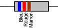
Exemple : Quelle est la valeur de cette résistance ? Réponse :BLEU → 6
ROUGE → 2 R = 62 x 101 Ω = 620 Ω
MARRON → 1
b Les résistances du commerce ont des valeurs « normées ». La série des valeurs des résistances à 20% de tolérance (sans 4ème bague) est : 10 – 15 – 22 – 33 – 47 – 68. Cette série est nommée E6 car elle comporte 6 valeurs. L’écart entre chaque valeur de résistance a toujours le même rapport qui est fonction de la tolérance (1,47 pour la série E6). Ainsi, il existe des résistances de 150 Ω à 20% de tolérance mais pas de résistance de 200 Ω. Dans la pratique, la valeur la plus proche sera utilisée, soit 220 Ω, dont la valeur est comprise entre 176 Ω et 264 Ω (± 20%). Il existe une série E12 pour les résistances à 10% de tolérance (4ème bague de couleur Argent) dont les valeurs s’insèrent entre chaque valeur de la série E6. De même, il existe aussi une série E24 pour les résistances à 5% de tolérance (4ème bague de couleur Or). Au-delà de la série E24, pour des tolérances de 2% ou moins, les résistances sont codées avec 5 bagues : 3 bagues de chiffres significatifs suivies de la bague du multiplicateur et de la bague de tolérance. Ces dernières résistances sont rares et chères. Enfin, pour les résistances de précision (à partir de la série E96 avec 1% de tolérance et moins), une 6ème bague indique le coefficient de température (variation maximum de la valeur en fonction de la température du composant).
c Les résistances existent sous deux présentations : en composant à fils (traditionnels) et en composant monté en surface (CMS) : utilisés de plus en plus souvent avec la miniaturisation des circuits, les CMS sont de petits parallélépipèdes dont les embouts sont directement soudés sur le circuit imprimé. Le code des couleurs n’est pas utilisé mais les chiffres marqués ont la même signification : 682 désigne une valeur de 68 x 102, soit 6800 Ω. Pour les valeurs inférieures à 10 Ω, la lettre R remplace la virgule : 6R8 désigne une valeur de 6,8 Ω.
Quatre sortes de résistances avec des méthodes de fabrication différentes sont disponibles dans le commerce :
- les résistances agglomérées sont les plus anciennes et sont fabriquées à partir de poudre de carbone mélangée à un isolant et à un liant. Il devient difficile de les trouver dans le commerce.
- les résistances à couche de carbone : une très fine couche de carbone est déposée sur de petits barreaux isolants en céramique. Des bagues de connexion sont fixées aux extrémités et la valeur est ajustée en creusant en forme de spirale la couche de carbone. Ce sont les plus courantes et les moins chères.
- les résistances à couche métallique sont de qualité supérieure et sont obtenues en déposant une fine couche d’un alliage résistant sur un barreau isolant en céramique (comme les résistances à couche de carbone).
- les résistances bobinées sont utilisées pour de faibles valeurs et sont constituées d’un fil résistant (en nickel ou cupronickel) bobiné sur un isolant. Leur utilisation en HF est une source de problèmes.
Les résistances sont disponibles sous diverses puissances de dissipation maximum. Cette puissance est directement fonction de la dimension du composant. Les valeurs normalisées des résistances sont : 1/16 W et 1/10 W (CMS uniquement), 1/8 W, 1/4 W, 1/2 W, 1 W et 2 W (à fils uniquement). D’autres modèles sont montés dans un boîtier spécifique qui peut être fixé sur un radiateur pour dissiper plus de puissance.
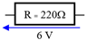
Exemple : quelle est la puissance minimum de la résistance R ?Réponse : P = U² / R = 6² / 220 = 164 mW. La première puissance supérieure proposée sera retenue (exemple : 250 mW). Une puissance de 1/8 W, soit 125 mW, aurait été insuffisante.
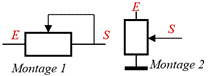
d Il existe des composants dont la résistance est variable (ou ajustable lorsque la valeur est définie une fois pour toutes). Cesa 1.6) Loi des nœuds et des mailles : la somme algébrique des courants passant en un nœud est nulle. Dans un nœud (point d’un circuit où sont connectés plusieurs conducteurs), il y a autant de courant qui y entre que de courant qui en sort. La somme algébrique des tensions en une maille est nulle. Quand on fait le tour de la maille (réseau de composants en circuit fermé), la tension du générateur est absorbée par les charges. Ci-dessous, la chute de tension générée par le moteur et R2 est égale à la chute de tension aux bornes de R1 et à la tension générée par la pile. Prenez garde au sens des flèches qui indiquent les tensions et les intensités…
b Le pont de Wheatstone est une application de la loi des mailles : observez l’enchaînement des tensions entre les points du circuit : en suivant les flèches grisées, on trouve successivement + 4 – 1 + 7 = 10 V.
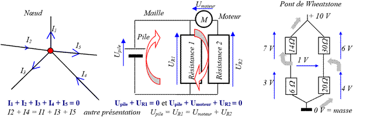
c La loi des nœuds et des mailles (appelée aussi lois de Kirchhoff), dont nous n’avons abordé ici que les prémices, est très complexe. Elle n’est pas au programme de l’examen mais doit être connue dans ses grands principes pour comprendre le fonctionnement des circuits électriques et les groupements.
a 1.7) Groupements Série et Parallèle (ou Dérivation) : les résistances peuvent être groupées en série (les unes derrière les autres) ou en parallèle (le terme « dérivation » est aussi employé). En appliquant les lois d’Ohm et de Joule ainsi que la loi des nœuds et des mailles, on déduit, pour chacun des montages :
- la résistance équivalente de l’ensemble (ou résistances totales notées Rt ; Rt se prononce « R indice t » ou plus couramment « R de t »),
- la répartition de la tension totale (notée Ut) entre les différentes résistances (UR1 est la tension aux bornes de la résistance R1 ; UR1 se prononce « U indice R1 » ou plus couramment « U de R1 »),
- la répartition de l’intensité totale parcourue dans le circuit (notée It) entre chacune des résistances (IR1 est l’intensité parcourue dans R1),
- la répartition de la puissance dissipée totale (notée Pt) entre chacune des résistances du groupement (PR1 est la puissance dégagée par R1) ;
- enfin, nous étudierons le cas où les résistances du groupement ont des valeurs identiques.
|
Groupement |
Série |
Parallèle (ou Dérivation) |
|
Schéma |
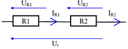 |
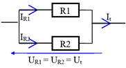 |
|
Résistance équivalente |
Rt = R1 + R2 + ... |
Rt = R1 x R2 (Produit sur Somme) R1 + R2 (= les Pieds sur le Sol) ou Rt = 1/(1/R1 + 1/R2 + ...) |
|
Proportionnelle aux résistances UR1 = Ut . (R1 / Rt) Ut = UR1 + UR2 + ... |
Constante Ut = UR1 = UR2 = ... |
|
|
Intensité |
Constante It = IR1 = IR2 = ... |
Inversement proportionnelle aux résistances IR1 = It . (Rt / R1) It = IR1 + IR2 + ... |
|
Puissance dissipée |
Pt = Ut . It = PR1 + PR2+ … PR1 = UR1 . It = Pt . (R1 / (Rt) Proportionnelle aux résistances |
Pt = Ut . It = PR1 + PR2+ … PR1 = Ut . IR1 = Pt . (Rt / R1) Inversement proportionnelle aux résistances |
|
Groupements de n résistances de valeur identique (R) |
Rt = R . n IR = It UR = Ut / n PR = Pt / n |
Rt = R / n IR = It / n UR = Ut PR = Pt / n |
b Dans un groupement série, la résistance équivalente du groupement de résistances est toujours supérieure à la valeur de la plus grande résistance du groupement. De plus, la tension aux bornes de la résistance la plus grande est la plus importante, de même que la puissance dissipée par cette même résistance (répartition de la tension et de la puissance de l’ensemble au prorata de la valeur des résistances) tandis que l’intensité est constante.
Quand le groupement en série est constitué de n résistances de valeur identique R, la résistance équivalente est : Rt = R x n. Dans ce cas, les tensions aux bornes de chacune des résistances et leurs puissances dissipées sont identiques (UR = Ut / n et PR = Pt / n).
c Un groupement en dérivation se nomme aussi groupement en parallèle. Dans un tel montage, la résistance équivalente du groupement de résistance est toujours inférieure à la plus petite des résistances constituant le groupement. La plus faible résistance du groupement voit passer la plus forte intensité et dissipe le plus de puissance (répartition de la tension et de la puissance dissipée de l’ensemble inversement proportionnelle à la valeur des résistances) tandis que la tension est constante. Notez que dans les deux prorata (tension dans un groupement série et intensité dans un groupement parallèle), le numérateur est toujours inférieur au dénominateur. La formule de la résistance équivalente d’un groupement en dérivation, Rt = (R1 x R2) / (R1 + R2), peut se retenir avec l’expression mnémotechnique « les Pieds sur le Sol » correspondant aux initiales de « Produit des résistances sur (= divisé par) Somme des résistances ». Cette formule simplifiée ne fonctionne qu’avec deux résistances. En présence de trois résistances en parallèle, il faut déjà calculer la résistance équivalente d’un groupement constitué de deux résistances puis calculer la résistance équivalente de ce premier groupe avec la troisième résistance. Dans ce cas, la deuxième formule, Rt = 1/[(1/R1) + (1/R2) + (1/R3)], est plus rapide à appliquer. Sur une calculette, on posera l’inverse de la somme des inverses des résistances, soit : Rt = 1÷(1÷R1 + 1÷R2 + 1÷R3).
Dans un groupement de résistances en parallèle, on a It = IR1 + IR2 + … En remplaçant I par U / R (loi d’ohm), on obtient : U/Rt = U/R1 + U/R2 + … . U étant en facteur commun (la tension est constante), on peut le remplacer par 1, d’où : 1/Rt = 1/R1 + 1/R2 + … . On reconnaît la formule de base. Avec deux résistances et après la transformation du deuxième membre de l’équation par la mise sous un dénominateur commun, on a : 1/Rt = [R2 / (R1 x R2)] + [R1 / (R1 x R2)], d’où : 1/Rt = (R1 + R2) / (R1 x R2), d’où, après inversion, la formule simplifiée pour deux résistances : Rt = (R1 x R2) / (R1 + R2).
Autre raisonnement : la conductance étant l’inverse de la résistance (voir § 1.4c), la formule « 1/Rt = 1/R1 + 1/R2 + … » revient à dire que la conductance équivalente est égale à la somme des conductances en parallèle.
Quand le groupement en dérivation est constitué de n résistances de valeur identique R, la résistance équivalente est : Rt = R / n. Dans ce cas, les intensités parcourues et les puissances dissipées dans chacune des résistances sont identiques (IR = It / n et PR = Pt / n).
|
Groupement Série |
Groupement Parallèle |
|
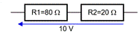
|
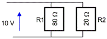 |
|
1) Calcul de la résistance équivalente du groupement : |
|
|
Rt = R1 + R2 = 80 + 20 = 100 Ω |
Rt =Produit/Somme=(80x20)/(80+20)=1600/100=16Ω ou, en écriture naturelle : Rt = 1÷(1÷80 + 1÷20) =16 Ω |
|
2) Calcul de la tension aux bornes de la résistance R1 : |
|
|
UR1= Ut x (R1 / Rt) = 10 x (80/100) = 8 V |
UR1 = Ut = 10 V |
|
3) Calcul de la tension aux bornes de la résistance R2 : |
|
|
UR2 = Ut x (R2 / Rt) = 10 x (20/100) = 2 V ou par différence : UR1 + UR2 = Ut d’où : UR2 = Ut – UR1 = 10 – 8 = 2 V |
UR2 = Ut = 10 V |
|
4) Calcul de l’intensité parcourue dans le groupement : |
|
|
It = Ut / Rt = 10 / 100 = 0,1 A = 100 mA |
It = Ut / Rt = 10 / 16 = 0,625 A = 625 mA |
|
5) Calcul de l’intensité parcourue dans R1 : |
|
|
IR1 = It = 100 mA |
IR1 = Ut / R1 = 10 / 80 = 0,125 A = 125 mA ou, si Ut est inconnue : IR1 = It x (Rt / R1) = 0,625 x (16 / 80) = 0,125 A=125 mA |
|
6) Calcul de l’intensité parcourue dans R2 : |
|
|
IR2 = It = 100 mA |
IR2 = Ut / R2 = 10 / 20 = 0,5 A = 500 mA ou, si Ut est inconnue : IR2 = It x (Rt / R2) = 0,625 x (16 / 20) = 0,5 A = 500 mA ou par différence : IR2 = It – IR1 = 625 – 125 = 500 mA |
|
7) Calcul de la puissance dissipée par le groupement : |
|
|
Pt = Ut x It = 10 x 0,1 = 1 W ou Pt = Rt x It² = 100 x 0,1² = 100 x 0,01 = 1 W ou Pt=Ut² / Rt = 10² / 100 = 100 / 100 = 1 W |
Pt = Ut x It = 10 x 0,625 = 6,25 W ou Pt = Rt x It² = 16 x 0,625² = 16 x 0,390625=6,25 W ou Pt = Ut² / Rt = 100 / 16 = 6,25 W |
|
8) Calcul de la puissance dissipée par la résistance R1 : |
|
|
PR1 = Pt x (R1 / Rt) = 1 x (80 / 100) = 0,8 W ou PR1 = UR1 x IR1 = 8 x 0,1 = 0,8 W |
PR1 = Pt x (Rt / R1) = 6,25 x (16 / 80) = 1,25 W ou PR1 = UR1 x IR1 = 10 x 0,125 = 1,25 W |
|
9) Calcul de la puissance dissipée par la résistance R2 : |
|
|
PR2 = Pt x (R2 / Rt) = 1 x (20 / 100) = 0,2 W ou PR2 = UR2 x IR2 = 2 x 0,1 = 0,2 W ou PR2 = UR2² / R2 = 2² / 20 = 4 / 20= 0,2 W ou par différence : PR2 = Pt-PR1 = 1-0,8=0,2 W |
PR2 = Pt x (Rt / R2) = 6,25 x (16 / 20) = 5 W ou PR2 = UR2 x IR2 = 10 x 0,5 = 5 W ou PR2 = UR2² / R2 = 10² x 20 = 100 / 20 = 5 W ou par différence : PR2 = Pt-PR1 = 6,25 – 1,25 = 5 W |
La connaissance de toutes les fonctions d’une calculatrice est indispensable pour effectuer les opérations le plus simplement possible et sans risque d’erreurs. Notez sur votre feuille de brouillon les résultats intermédiaires. Au besoin, redessinez le schéma pour le rendre plus compréhensible.
Quand les lois d’Ohm et de Joule sont maîtrisées, peu de calculs sont nécessaires. Par exemple : calcul de UR1 dans le groupement série : R1 est 4 fois plus importante que R2 ; la répartition de la tension totale (10 V) sera donc 4/5 sur R1 et 1/5 sur R2, donc UR1 = 10 x 4 / 5 = 8 volts (le calcul de Rt n’est plus indispensable).
e Pour calculer la résistance équivalente d'un réseau complexe (enchevêtrement de résistances montées en série et en parallèle), la résistance équivalente de l'ensemble le plus élémentaire sera d’abord calculée. Puis la résistance équivalente de cet ensemble et d’une autre résistance du réseau sera calculée en associant les résistances dans des ensembles de plus en plus complexes.
Exemple 1 : Quelle est la résistance équivalente de cet ensemble ?
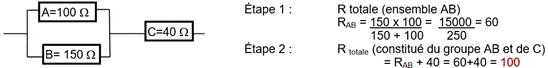
Sur une calculette, il faudrait entrer les données suivantes :
Calcul de RAB : RAB = 1 ÷ ( 1 ÷ 100 (RA) + 1 ÷ 150 (RB)) = 60.100
Calcul de RABC : 6.101 (RAB) + 40 (RC) = 100.100 soit 100
Exemple 2 : Quelle est la résistance équivalente de cet ensemble ?
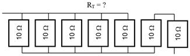
Réponse : les 5 résistances de gauche sontPremier groupement : RG1 = R / n = 10 / 5 = 2
Second groupement : RG2 = R x n = 10 x 2 = 20
Ensemble : RT = RG1 + RG2 = 2 + 20 = 22
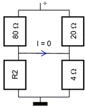
1.8) Autres exemples d’application avec des résistancesa Exemple n°1 : dans le circuit ci-contre, quelle est la valeur de R2 ?
Réponses :
1ère solution (méthode empirique) : le schéma représente un pont
de Wheatstone que nous avons déjà évoqué au § 1.6b. Le pont
est dit « équilibré »
lorsque les tensions dans les deux branches sont identiques. Dans ce cas, si
les deux branches sont reliées (comme ici), aucun courant ne circule et la
valeur des
résistances de chacune des branches (80 Ω et R2 d’un côté et 20 Ω et
4 Ω de l’autre côté) sont proportionnelles entre elles. Ainsi, on a la
relation suivante :
80 / R2 = 20 / 4. Pour déterminer R2, il faut calculer le « produit en
croix » (voir §0.1c), c’est à dire que l’on prend le produit de la
deuxième diagonale divisé par la
valeur opposée. Dans notre exemple, ce sera :
R2 = 80 x 4 (produit de la deuxième diagonale) / 20 (valeur opposée) = 16.
2ème
solution
(en utilisant seulement la loi d’Ohm). En posant R1 = résistance de 80 Ω,
R3 = résistance de 20 Ω,
R4 = résistance de 4 Ω et UT = tension d'alimentation du
circuit (non précisée), le raisonnement est le suivant :
Détermination de UR4 : UR4 = UT x [R4 / (R3 + R4)] = UT x (4 / 24) = UT / 6
Si I = 0, alors UR4 = UR2 = UT / 6. D’autre part, IR1 = IR2 = UT / (80 + R2)
R2 = UR2 / IR2 = (UT / 6) / [UT / (80 + R2)] = (UT / 6) x [(80 + R2) / UT] = (80 + R2) / 6
Il faut maintenant résoudre l’équation : R2 = (80 + R2) / 6 donc 6 x R2 = 80 + R2 donc 6 x R2 – R2 = 80
donc : 5 x R2 = 80 donc R2 = 80 / 5 et donc R2 = 16 Ω
Remarquez qu’il ne nous a pas été utile de connaître la tension d’alimentation du circuit, UT. Toutefois, ce circuit doit être obligatoirement alimenté par une tension (positive ou négative voire alternative) sinon la valeur de R2 sera quelconque puisque, quelle que soit sa valeur, il n’y aura nulle part de courant dans le circuit.
La seconde solution est beaucoup plus longue et dépasse largement les connaissances demandées pour l’examen. La première solution, plus empirique, est plus facile à comprendre et à appliquer.
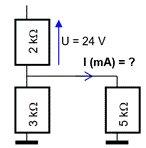
Réponse : selon la loi de Kirchhoff, l’intensité parcourue dans la résistance du1)
Calcul de l’intensité parcourant l’ensemble du bas (RT) (on appellera R1 la
résistance de 2 kΩ) :
IRT = IR1 = UR1 / R1 = 24 / 2000 = 0,012 A
2) Calcul de la résistance équivalente de l’ensemble du bas (RT) :
RT = (3 x 5) / (3 + 5) = 15 / 8 = 1,875 kΩ = 1875 Ω
3) calcul de l’intensité parcourant la résistance de 5 kΩ (IR) :
IR = IRT x RT / R = 0,012 x 1875 / 5000 = 0,0045 A = 4,5 mA
c Exemple n°3 : Quelle est la valeur du courant dans R1 (en mA) et quelle est la valeur de R1 (en kΩ) ?
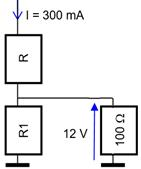
Réponses : les étapes du raisonnement sont les suivantes :
1) calcul de l’intensité parcourant la résistance de 100 Ω (R2) :
IR2 = UR2 / R2 = 12 / 100 = 0,12 A = 120 mA
2) On sait que l’intensité totale parcourant le circuit est de 300 mA et que cette intensité sera répartie entre R1 et R2 puisque IR = IR1 + IR2, donc :
IR1 = IR – IR2 = 300 mA – 120 mA = 180 mA
3) R1 = U / I = UR2 / IR1 = 12 / 180 mA = 12 / 0,18 = 66,7 Ω = 0,0667 kΩ
Dans cet exemple, la valeur de R pourra être quelconque : elle n’intervient pas dans nos calculs.
d Exemple n°4 : Quelle est la résistance équivalente (Rt) ?
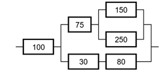
Réponse :enchevêtrement complexe : on va du plus simple au plus complexe :
ensemble du haut 150-250 = (150x250)/(150+250)= 93,75
associé à la résistance de 75 Ω : 93,75 + 75 = 168,75
ensemble du bas 30-80 en série : 30 + 80 = 110
ensemble 168,75-110 : (168,75x110)/(168,75+110)=66,59
associé à la résistance de 100 Ω : 66,59 + 100 = 167
Sur une calculette :
ensemble 150-250 : 1 ÷ (1 ÷ 150 + 1 ÷ 250) = 93,75 associé à la résistance de 75 Ω : 93,75 + 75 = 168,75
ensemble du bas 30-80 : 30 + 80 = 110 ; deux ensembles en parallèle : 1 ÷ (1 ÷ 168,75 + 1 ÷ 110) = 66,59
associé à la résistance de 100 Ω en série : 100 + 66,59 = 166,59 = 167 (arrondi)
2)
COURANTS ALTERNATIFS,
BOBINES et CONDENSATEURS
a Dans le premier chapitre, nous avons vu le comportement des résistances dans le cas de courants continus. Or, dans le domaine qui nous intéresse, celui de la radio, les courants (tensions ou intensités) sont alternatifs (on dit aussi périodiques). Le courant est qualifié d’alternatif lorsqu’il change continuellement de valeur au cours du temps et que la forme du signal se répète régulièrement. Les courants alternatifs peuvent prendre plusieurs formes : signal carré, signal triangulaire, signal dent de scie, signal impulsionnel pour les plus courants.
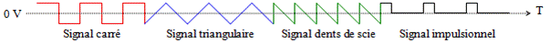
De même, plusieurs courants peuvent se superposer : courants continus et courants alternatifs mais aussi courants alternatifs entre eux. Superposer des courants revient à additionner leurs valeurs instantanées. Les courants qui résultent de ces superpositions seront toujours considérés comme des courants alternatifs.
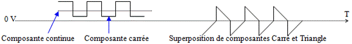
b Le signal sinusoïdal est la forme la plus régulière, sans à-coups, des signaux alternatifs. C’est cette forme de signal alternatif que nous retrouvons le plus souvent dans les applications radio mais aussi en mécanique (mouvement du balancier d’une horloge, d’une bielle entraînée par une roue, …).
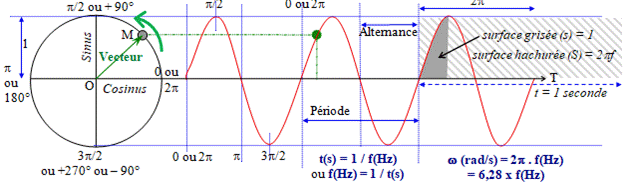
Pour représenter une fonction Sinus, le point M tourne à vitesse constante sur un cercle trigonométrique de centre O dont le rayon est 1 (le vecteur OM tourne dans le sens inverse des aiguilles d’une montre, appelé aussi sens antihoraire ou sens trigonométrique). La fonction Sinus représente la hauteur du point M en fonction du temps. Le temps pendant lequel le point M (ou le vecteur OM) fait un tour complet s'appelle période (ou cycle). La période est composée de deux alternances (une positive et une négative). Le nombre de périodes par seconde est donné en hertz (Hz). La durée (t), en secondes, d'une période est l'inverse de la fréquence (f) en hertz, soit t(s) = 1 / f(Hz), ou t(ms) = 1 / f(kHz), ou encore t(µs) = 1 / f(MHz). Le radian (noté rad) est une mesure d’angle et est la distance parcourue par le point M sur le cercle trigonométrique. Exemples : 90° = π/2 = 1,57 rad ; 180° = π = 3,14 rad ; 360° = 2π = 6,28 rad. Remarquez que si le point M tourne en sens inverse (dans le sens des aiguilles d’une montre), la forme de la fonction reste identique à la différence près qu’elle sera décalée de 180° comme si l’origine du point M se trouvait en π. La pulsation (notée ω, lettre grecque oméga minuscule) est une autre manière de définir une fréquence à partir d’angles (en radians par secondes au lieu des périodes par secondes pour les Hz) puisqu’une période (360°) est égale à 2π, d’où le nom de vitesse angulaire. C’est aussi le rapport entre les surfaces de la zone hachurée (S = 2πf pour une seconde) et de la zone grisée (s = 1). On peut dire aussi que « s » représente la « partie active » de la sinusoïde et mesure 1/2πf de la durée totale « S ».
Exemples : 1) Quelle est la pulsation d'un signal dont la fréquence est de 10 MHz ?
Réponse : ω = 2π . F = 6,28 x 10 000 000 = 62 800 000 rad/s
2) Quelle est la fréquence (en kHz) d’un signal sinusoïdal composé de 5 alternances et durant 15 µs ?
Réponse : 5 alternances forment 2,5 périodes ; 1 période dure donc 15 µs / 2,5 (durée totale / nombre de période) = 6 µs ; f(MHz) = 1 / t(µs) = 0,166 MHz soit 166 kHz
c Fourier a démontré que n’importe quelle fonction périodique (quelle que soit sa forme pourvu qu’elle se répète périodiquement) est la somme (superposition) de fonctions sinusoïdales dont les fréquences sont multiples (harmoniques) de la période. La transformée de Fourier décrit l’ensemble composé d’un signal continu et de fonctions sinusoïdales superposées. Ainsi tout signal périodique se traite comme des signaux sinusoïdaux.
2.2) Valeur maximum, efficace, moyenne, crête à crête. Ces notions ne s’appliquent qu’aux courants, c’est-à-dire à la tension et à l’intensité (qui varient dans le temps dans le cas d’un signal alternatif) mais pas à la puissance (issue du produit de la tension par l’intensité) ni à la résistance (qui reste, par nature, constante).
a La valeur maximale (Umax ou Imax) d’un signal alternatif est la valeur la plus grande que prend le signal au cours d’une période. Elle est appelée aussi valeur crête (Ucrête ou Icrête).
b La valeur efficace (Ueff ou Ieff) d’un signal alternatif est la valeur pour laquelle les lois d'Ohm et de Joule peuvent être appliquées. La formule ci-dessous est utilisée si et seulement si le signal est sinusoïdal. Des formules existent pour transformer les valeurs maximales d’autres signaux alternatifs (carrés, triangle, etc.) en valeurs efficaces mais sortent du programme de l’examen. On rappelle que le sinus de 45° est égal à 1/√2, soit 0,707.
Umax = √2.Ueff = 1,414 x Ueff ou Ueff = Umax/√2 = 0,707 x Umax.
c La valeur moyenne (Umoy ou Imoy) d’un signal alternatif est la moyenne algébrique du courant ou de la tension et est la valeur lue par un galvanomètre, voir § 3.4b. La valeur moyenne d’un courant sinusoïdal dont la longueur est égale à un nombre entier de période (comme dans le schéma ci-dessous) est nulle car la surface des alternances positives est égale à celle des alternances négatives (loi des aires).
d La valeur crête à crête (Ucàc ou Icàc), à ne pas confondre avec la valeur crête, est la valeur de l’écart entre l’extrême positif et l’extrême négatif du signal, soit 2 fois la valeur maximale pour un courant sinusoïdal.
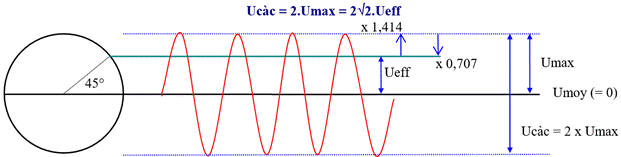
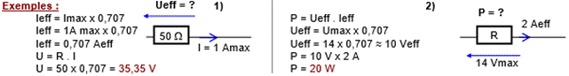
e Attention : seules les valeurs efficaces (Ueff et Ieff) doivent être utilisées dans les calculs en courants alternatifs sinusoïdaux pour appliquer les lois d’Ohm et de Joule. Il faut donc transformer toutes les valeurs en valeurs efficaces avant d’effectuer d’autres calculs. Les valeurs efficaces ne portent aucun signe (+ ou –) et calculer la valeur efficace de deux signaux superposés est difficile sans utiliser trop de mathématiques.
Le calcul le plus simple est la superposition d’un signal sinusoïdal avec une composante continue. Dans ce cas, on retiendra la formule suivante : Uefftot = √(Ucont2+ Ueff2). Les autres combinaisons sont plus complexes.
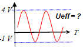
Exemple : calculer la tension efficace Ueff de ce signalRéponse : calcul de la tension efficace du signal sinusoïdal :
Ucac = 5V
[= 4V –(– 1V)], donc Umax = 2,5 V et Ueff = 1,77 V (= 2,5 x 0,707).
La composante continue de ce signal est égale à sa tension moyenne :
Ucont = Umoy = [4 + (– 1)] / 2 = 1,5 V
Ueff = √ [Ucont2 + Ueff2] = √ [1,52 + 1,772] = 2,3 V
Nous avons vu au §1.1d que l’intensité est une agitation organisée d’électrons. En courant alternatif, les électrons continuent de s’agiter au rythme du courant mais ne bougent presque plus de place, surtout en haute fréquence. En revanche, la propagation de l’agitation se déplace à la vitesse de la lumière (ou presque), comme en courant continu, en allant de la source (le générateur) vers la charge (qui consomme l’énergie). On peut comparer la propagation de l’agitation à la chute de dominos : une fois l’impulsion donnée par la chute du premier domino, les dominos suivants chutent les uns après les autres en se déplaçant très peu alors que le mouvement de chute se propage de la première à la dernière pièce.
Le développement des réseaux électriques à la fin du 19ème siècle impose le courant alternatif dont l’énergie se transporte plus facilement que celle du courant continu malgré ses dangers.
f Un oscilloscope est un instrument de mesure qui permet de visualiser sur un écran cathodique la forme d’un signal en fonction du temps. Le point lumineux qui parcourt l’écran représente la tension du signal et se déplace de la gauche vers la droite. Une sonde branchée au bout d’un câble collecte la tension à mesurer par rapport à la masse. Un contacteur multipositions (noté U/div) détermine la tension lue sur l’écran cathodique où sont repérées des divisions (en pointillé). Un autre contacteur permet de déterminer la durée de la lecture (temps que met le point lumineux à parcourir une division de l’écran de gauche à droite). Les divisions verticales permettent de déterminer le temps de lecture et donc la fréquence du signal.
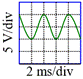
Exemples : quelle est la tension efficace et la fréquence du signal visualisé sur l’écran ?Réponses :
- tension efficace : le signal occupe 2 divisions (en hauteur). L’indication 5V/div permet de définir la tension crête à crête du signal, soit 10 Vcàc, soit 5 Vmax, soit 3,53 Veff (= 5 Vmax x 0,707) en supposant que le signal n’ait pas de composantes continues.
-
fréquence du signal : une période entière du signal occupe 2 divisions sur
l’écran (en largeur). L’indication 2 ms/div permet de définir la durée d’une
période du signal, soit 4 ms, soit une fréquence de
250 Hz (4 ms = 0,004 s ; f = 1/t =
1/0,004 = 250 Hz).
2.3) Bobines et Condensateurs : après le composant Résistance dont nous avons étudié le comportement en présence de courants continus et de courants alternatifs, nous étudions deux composants qui ont des comportements particuliers en présence de courants alternatifs : la bobine et le condensateur.
a Le condensateur et la bobine possèdent leurs propres caractéristiques et ont des comportements opposés mais complémentaires aussi bien en présence de courants alternatifs que de courants continus. Ces caractéristiques sont récapitulées dans le tableau suivant :
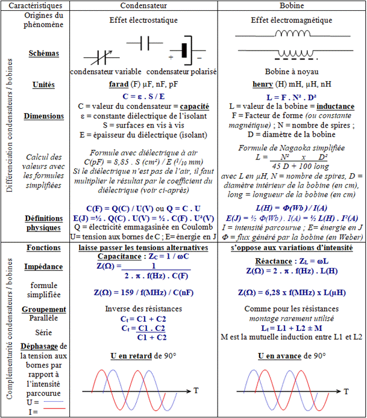
b Dans les formules simplifiées, le facteur 159 est fréquemment utilisé au numérateur des fractions. Ce nombre correspond à une approximation de 1000 / 2π, soit 1000 / 6,2832. Les formules ainsi simplifiées donnent un résultat approximatif mais suffisant pour répondre aux questions de l’examen lorsque les candidats sont mal à l’aise avec les calculatrices et les calculs avec puissances de 10 (sous évaluation du résultat de 0,1%). Dans les questions de l’examen portant sur des calculs faisant intervenir le nombre π (impédance, fréquence, …), les résultats sont toujours arrondis : ne cherchez pas dans les réponses le chiffre exact que donne votre calculette. Dans les formules simplifiées, faire très attention aux multiples et sous-multiples utilisés. A l’examen, lorsqu’intervient 2π dans une formule, il est parfois indiqué de retenir 1 / 2π = 0,16 (ou 2π = 6,28) ; ce qui revient à arrondir le résultat ou à utiliser le facteur 160 (au lieu de 159) dans les formules simplifiées.
c1 Le condensateur (noté C dans les schémas) est constitué de deux plaques métalliques (appelées aussi armatures) en vis-à-vis et isolées par un diélectrique (isolant). Le condensateur fonctionne grâce à l'effet électrostatique entre ses deux plaques (ou lames). C'est l'effet observé en frottant une barre en plexiglas avec un chiffon, ce qui attire de petits morceaux de papier. C'est aussi la décharge électrique ressentie en touchant une masse métallique après que l'on se soit frotté les pieds sur la moquette. Les électrons présents dans une des lames du condensateur constituent la réserve d’électricité et chassent les électrons qui sont en face, dans l’autre lame.
c2 L’unité de mesure du condensateur est le farad (noté F). Cette unité a une très forte valeur si bien que l’on utilise pour mesurer les condensateurs des sous multiples : picofarad (10-12), nanofarad (10-9), microfarad (10-6) ou, pour les très grosses valeurs, millifarad (10-3). La valeur du condensateur se nomme aussi la capacité.
c3 La formule de base du calcul d’un condensateur à partir de ses dimensions est : C(F) = ε . S(m²) / E(m) avec ε (lettre grecque epsilon minuscule) = permittivité du diélectrique, S = surface des lames en vis à vis et E = épaisseur du diélectrique (isolant séparant les lames). Plus la surface des lames en vis-à-vis est grande et plus l’épaisseur du diélectrique est faible, plus grande sera la valeur du condensateur.
c4 La permittivité (ε) du diélectrique dépend du matériau employé. Le diélectrique de référence est le vide dont la permittivité, εo, est 1/(36π.109)F/m, soit 8,8419 pF/m.. La permittivité relative, εr (ou coefficient diélectrique ou encore constante diélectrique) d’autres matériaux est définie par rapport à celle du vide (εr du vide = 1) et est toujours supérieure à 1 : 1,0014 pour l’air sec ; 2,1 pour le téflon ; 2,3 pour le Polyéthylène (PE) ; 3 à 4 pour le papier ; 3,7 pour la bakélite ; 4,5 pour la fibre de verre ; 5 à 6 pour le mica ; 10 pour le verre ; 10 et plus pour les céramiques. Ainsi, la permittivité du polyéthylène est : ε0.εr = 1/(36π.109) x 2,3 = 2.10-11 = 20 pF/m
c5 Le pouvoir d’isolement du diélectrique se nomme la rigidité : au-delà d’une tension déterminée par l’épaisseur et la rigidité du diélectrique, celui-ci sera percé (claquage). Rigidité de quelques matériaux (en kV/mm) : 4 pour l’air sec, 6 pour le papier, 10 pour le carton, le verre et la bakélite, 17 pour le téflon et le PE, 70 pour le mica.
c6 Le code des couleurs des condensateurs est identique à celui des résistances (voir § 1.5a). Les couleurs se lisent du haut vers le bas (les pattes) et sont souvent au nombre de 5 : 1er chiffre, 2ème chiffre, Multiplicateur (comme pour les résistances). L'unité de base est le picofarad. Les deux dernières couleurs indiquent la tolérance (blanc : 10%, noir : 20%) et la tension à ne pas dépasser (rouge : 250 V, jaune : 400 V). Selon les fabricants, il existe d'autres présentations. Enfin, la valeur des très anciens condensateurs peut être indiquée en cm avec 1 cm ≈ 1,1 pF.
c7 Certains condensateurs sont variables : les lames fixes sont montées dans une cage isolée des lames mobiles qui tournent sur un axe. La valeur du condensateur est fonction de la surface des lames en vis-à-vis, leur espacement étant fixe. D’autres condensateurs, dont le diélectrique est chimique, sont polarisés : si la tension à leurs bornes est inversée ou supérieure à leur tension d’utilisation, ils chauffent et peuvent même exploser.
c8 Un condensateur d’un farad peut, par définition, contenir dans ses armatures une réserve d’électricité égale à un coulomb en présence d’une tension de un volt à ses bornes : Q(C) = C(F) . U(V). Plus la tension aux bornes du condensateur est élevée, plus la quantité d’électricité emmagasinée dans le condensateur est importante. De plus, la quantité d’énergie emmagasinée dans un condensateur est : E(J) = ½.Q(C) . U(V). En remplaçant Q ou U par sa valeur tirée de Q = C . U, on a : E(J) = ½ . C(F) . U²(V) et encore : E(J) = Q²(C) / 2.C(F).
d1 La bobine (notée L en hommage au physicien allemand Heinrich Lenz) fonctionne grâce à ses propriétés électromagnétiques. Le courant qui parcourt la bobine génère un champ magnétique autour et à l’intérieur des spires. Ce champ magnétique constitue la réserve d’énergie de la bobine (loi de Laplace). La valeur d’une bobine, appelé inductance, dépend de la forme de la bobine, de sa section (donc du carré de son diamètre) et du carré du nombre de ses spires. Une bobine se mesure en Henry (noté H) avec les sous multiples millihenry (10-3, filtres BF), microhenry (10-6, le plus courant) et nanohenry (10-9, utilisé pour de très faibles valeurs).
Attention : éviter d’utiliser le terme « self » pour désigner un enroulement électrique. Utiliser le mot bobine (ou bobinage). Le terme « self » est un anglicisme mal utilisé : il y a confusion entre un phénomène physique (self-induction) et l’élément matériel qui le produit (bobine). De même, préférer l’adjectif « réactif » à « selfique ».
d2 Les grandeurs électromagnétiques sont :
- H (à ne pas confondre avec le H de l’unité des bobines, le Henry) est l’excitation magnétique (courant électrique générant un champ magnétique autour d’un fil rectiligne ou au centre d’une bobine) mesurée en ampères-mètres (A.m) pour les fils rectilignes et en ampères-tours (A.t) pour les bobines,
- µ (lettre grecque mu minuscule) est la perméabilité (en H/m). C’est l’aptitude d’un matériau (ou d’un milieu) à guider les champs magnétiques. La perméabilité du vide, notée µo, est égale à 4π.10-7H/m, soit 1,2566 µH/m
- B est l'induction magnétique du champ mesurée en Tesla (1 Tesla = 10000 Gauss). B est le champ magnétique issu de l’excitation H agissant sur une surface plane et perpendiculaire à ses lignes de force : B = H . µ
- le flux Φ (lettre grecque phi majuscule) est le flux d'induction magnétique (en weber, Wb) qui, traversant une bobine, y produit une force électromotrice U si on annule le flux progressivement sur une période t : Φ = U . t
d3 Par définition, le Henry est l'inductance d'une bobine constituée d’une seule spire, parcourue par un courant de 1 ampère et générant un flux Φ de 1 weber qui, lui-même, peut libérer une énergie égale à 1 joule. Ce qui donne la formule de base : L(H) = Φ(Wb) / I(A). La quantité d’énergie emmagasinée dans la bobine est donnée par la formule : E(J) = ½ Φ(Wb) . I(A) soit, en remplaçant Φ par sa valeur (Φ= L.I), E(J) = ½ L(H) . I²(A)
d4 Si la capacité des condensateurs est assez facile à déterminer grâce à ses dimensions, il n’existe aucune formule fiable pour le calcul de l’inductance des bobines. En théorie, on a L = µo.D².N²/longueur (avec L = valeur de la bobine en Henry, µo = perméabilité du vide (ou constante magnétique = 1,2566 µH/m), D = diamètre de la bobine en mètres, N = nombre de spires et longueur de la bobine en mètres). Mais, selon la forme de la bobine, le flux d’induction magnétique (Φ) est plus ou moins dispersé car une partie de celui-ci n’est pas guidé (les spires n’embrassent pas tout le champ magnétique car elles ne sont pas jointives ou parce que la bobine est trop longue) et une partie de sa force électromagnétique est perdue. Pour calculer l’inductance d’une bobine, on a alors recours à des formules empiriques comme celle citée dans le tableau comparatif. Celle-ci ne fonctionne qu’avec une bobine comportant une seule couche de spires jointives et dont le rapport diamètre/longueur est compris entre 0,5 et 1. D’autres formules existent : elles utilisent toutes un coefficient issu du rapport diamètre/longueur de la bobine. Un fil rectiligne aura aussi une inductance, très faible par rapport à une bobine (≈ 1 µH/m pour un fil rectiligne en cuivre) ; cette faible valeur sera intéressante pour des applications en UHF et au-delà.
d5 L’inductance de la bobine augmente significativement en introduisant un noyau magnétique à l’intérieur des spires (ou en enroulant les spires autour d’un tore), ce qui guide le champ magnétique et augmente artificiellement la section de la bobine. Le noyau peut être constitué de différents matériaux (feuille de tôle, ferrite, poudre ferromagnétique) ayant chacun leur perméabilité relative notée µr et calculée par rapport à la perméabilité du vide, µo. L’air sec a une perméabilité très proche de celle du vide (µr de l’air sec = 1,000 0004).
Les matériaux magnétiques sont le fer, le nickel, le cobalt, le silicium et leurs alliages. Lorsque leur µr est proche de 1, les conducteurs sont paramagnétiques s’ils s’aimantent dans le sens du champ magnétisant (alumi-nium, manganèse, platine) ou diamagnétiques s’ils s’aimantent en sens inverse (cuivre, zinc, argent, bismuth).
Les ferrites sont des mélanges à base d’oxydes de fer. Leur µr varie de 20 à 3000 selon le matériau employé et leur forme. Elles sont utilisables sur une plage de fréquence et pour un champ magnétique donnés, ce qui limite la puissance utile dans la bobine quand les dimensions du noyau sont trop petites (saturation). Le coefficient AL des ferrites, lié au µr du matériau et à la forme de la bobine, exprime le rapport entre la valeur réelle de la bobine avec son noyau (ou son tore) divisé par la valeur de cette même bobine dont le noyau a été retiré.
e Les équations de Maxwell
mettent en relation la permittivité et la perméabilité du vide par l’égalité
suivante :
µo . εo . c2
= 1 (avec c = vitesse de la lumière, soit 3.108 m/s)
f Lorsqu’ils sont traversés par des courants alternatifs, les bobines et les condensateurs réagissent différemment : le condensateur ne laissera passer que la composante alternative d’une tension tandis que la bobine s’opposera à toute variation de l’intensité. Ceci se mesure en ohms mais on ne peut plus parler de résistance puisque cela dépend de la fréquence. Le terme d’impédance (noté Z) est employé et plus précisément de réactance pour la bobine et de capacitance pour le condensateur. De plus, aucune énergie n’est consommée : les bobines et les condensateurs emmagasinent l’énergie puis la restituent à l’identique. Etymologiquement, Impédance provient du langage militaire où les « impédiments » désignaient les bagages qui ralentissaient la marche d’une armée. L’impédance de la bobine et du condensateur varie en fonction de la fréquence du courant qui les traverse.
f1 Dans une bobine, plus la fréquence augmente et plus la valeur de la bobine est grande, plus l’impédance est élevée. L’impédance de la bobine est nulle lorsque le courant qui la traverse est continu (fréquence nulle). L’impédance de la bobine est égale à son inductance multipliée par la pulsation : ZL(Ω) = ωL(H). D’où vient cette formule ? On sait que : L = Φ / I et Φ = U.t, donc U / I = L / t. En régime sinusoïdal, la partie active de la tension ou de l’intensité (t) a une durée de 1/(2πF) (voir schéma §2.1b). Donc U/I = ZL = 2πfL.
f2 Dans un condensateur, plus la fréquence augmente et plus la capacité du condensateur est grande, plus l’impédance est faible. L’impédance du condensateur est infinie lorsqu’on lui applique un courant continu (aucun courant ne traverse le condensateur). L’impédance d’un condensateur est égale à l’inverse du produit de la pulsation multipliée par sa capacité : ZC(Ω) = 1/[ωC(F)]. En présence d’un courant continu superposé à un courant alternatif, on a l’impression que seule la composante alternative traverse le condensateur. Mais ce n’est qu’une illusion : les électrons qui entrent dans le condensateur ne sont pas les mêmes que ceux qui sortent de l’autre côté car le diélectrique les sépare. D’où vient la formule du condensateur ? On sait que : C = Q / U et Q = I.t, donc U / I = t / C. On vient de voir au §2.3f1 que t = 1/(2πf). Donc U/I = ZC = 1/(2πfC).
g Les condensateurs et les bobines peuvent être montés en groupement série ou parallèle. Le montage des bobines en parallèle est peu utilisé.
g1 L’inductance équivalente des bobines en série est égale à la somme des inductances (comme pour les résistances) si les bobines ne sont pas couplées. Si les bobines sont couplées, il faut ajouter ou soustraire la mutuelle-induction, elle-même fonction du coefficient de couplage des bobines (coefficient k compris entre –1 et +1 : si k = 1, les bobines sont parfaitement couplées ; si k = 0, elles ne sont pas couplées ; si k < 0, rendant la mutuelle-induction négative, le sens des spires des bobines est inversé). Pour éviter le couplage des bobines, on pourra soit les éloigner suffisamment entre elles, soit isoler leur champ magnétique à l’aide d’un blindage ou simplement les disposer perpendiculairement entre elles, ce qui sous-entend qu’on ne peut disposer ainsi plus de trois bobines (une bobine dans chacun des trois axes).
g2 Pour calculer la capacité équivalente des condensateurs, les formules de calcul sont inversées par rapport à celles utilisés pour les résistances : on additionne les valeurs lorsque les condensateurs sont en parallèle et, lorsque les condensateurs sont en série, on calcule l’inverse de la somme des inverses (ou le produit des valeurs divisé par leur somme s’il n’y a que 2 condensateurs).
La tension aux bornes d’un groupement de condensateurs montés en série est égale à la somme des tensions aux bornes de chacun des condensateurs (loi des mailles), on a : Ut = UC1 + UC2 + … . De plus, par définition, Q = C . U, on en déduit que U = Q / C. Remplaçons U par sa valeur : Qt / Ct = QC1 / C1 + QC2 / C2 + … Du fait de la loi des mailles, la quantité d’électricité (Q) emmagasinée dans chacun des condensateurs (QC1, QC2, etc.) est égale à la quantité d’électricité emmagasinée dans l’ensemble (Qt). La valeur Q, commune aux deux membres de l’équation, peut être remplacée par 1 : 1 / Ct = 1 / C1 + 1 / C2 + … On retrouve la formule des résistances en parallèle que l’on simplifie pour deux condensateurs par : Ct = (C1 . C2) / (C1 + C2).
La répartition de la tension entre des condensateusr montés en série se fait au prorata inverse de la valeur des capacités : le plus petit condensateur aura la tension la plus élevée à ses bornes. Le groupement des condensateurs en parallèle se conçoit plus facilement : les surfaces en vis à vis s’additionnent et donc la capacité équivalente est la somme des valeurs de chacun des condensateurs du groupement.
h Lorsqu’un courant sinusoïdal traverse une résistance, tension et intensité sont en phase. Par contre, lorsqu’un courant sinusoïdal traverse un condensateur ou une bobine, des déphasages entre tension et intensité se produisent. h1 Le déphasage introduit par le condensateur entre la tension à ses bornes et l’intensité le traversant s’explique ainsi : lorsque le condensateur est « rempli », la tension à ses bornes est maximum et aucune intensité n’est constatée puisqu’il est plein. Dès que le condensateur se vide, un courant sort du condensateur (intensité négative) tandis que la tension (positive) diminue. Lorsque le condensateur est vide (tension nulle), l’intensité (négative) est à son maximum. Puis la tension à ses bornes s’inverse tandis que le courant (négatif) diminue jusqu’à devenir nul lorsque le condensateur est rempli. A ce moment, la tension est maximum et inversée par rapport au début. Puis le cycle continue en sens inverse lorsque le condensateur se vide à nouveau. Il y a d'abord établissement de l’intensité puis établissement de la tension car l’intensité remplit le condensateur. La tension est en retard de 90° par rapport à l’intensité (ou l’intensité est en avance de 90° sur la tension mais le déphasage est par convention constaté par rapport à l’intensité, voir §2.5c pour une représentation schématique). h2 Le déphasage introduit par la bobine s’explique ainsi : lorsqu’un courant continu parcourt la bobine, elle crée un champ magnétique dans ses spires. En l’absence de variation du courant, aucune tension n’apparaît aux bornes de la bobine. Si le courant parcourant la bobine diminue, le champ de la bobine restitue l’énergie emmagasinée lors de la création du champ en générant une tension inverse comme si la bobine était un générateur. La tension (négative) sera maximum lorsque le courant sera nul car, en régime sinusoïdal, c’est à ce moment que la variation du courant est la plus importante. Lorsque le courant s’inverse, le champ magnétique s’inverse et la tension négative diminue. Lorsque l’intensité atteint son maximum en sens inverse, la tension est nulle et le champ magnétique a été inversé. Puis le cycle continue lorsque le courant traversant la bobine diminue de nouveau. Une tension est préalablement nécessaire pour générer un courant dans la bobine puis, une fois la réserve d’énergie créée sous la forme d’un champ magnétique, le courant s’établit. La tension est en avance de 90° par rapport à l’intensité.
i Exemples : 1) Un condensateur variable a une capacité de 100 pF. Quelle sera sa valeur si la surface des lames en vis à vis est diminuée de moitié? Réponse : avec C = d . S / E, si S / 2 alors C / 2 donc C = 100 / 2 = 50 pF
2) L’inductance d’une bobine cylindrique a une valeur de 5 µH. Cette bobine possède 40 spires. Quelle sera la valeur de l’inductance avec seulement 10 spires (en nH) ?
Réponse : L = F . N² . D² ; si N / 4 → L / 4² → L / 16 → L = 5µH / 16 = 0,3125 µH = 312,5 nH ; en fait, comme la forme de la bobine change car elle est plus courte ou, si on l’étire pour garder la même longueur, l’espace entre les spires est plus grand, son inductance n’est pas exactement proportionnelle au carré des spires.
3) Quelle est l’impédance de la bobine ?
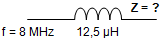
Réponse : Z = ωL = 2πfL=6,28 x 8.106 x 12,5.10-6 = 6,28 x 8 x 12,5 = 628 Ωsur une calculette :
en écriture naturelle : 2 x [π] x 8.106 (f) x 12,5.10-6 (L) = 628.100 = 628 Ω
formule simplifiée : 6,28 x 8(f en MHz) x 12,5 (L en µH) = 628 Ω
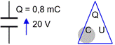
4) Quelle est la valeur du condensateur (en µF) et la quantité d’énergie (en mJ) emmagasinée dans le condensateur ?Réponses : C(F) = Q(C) / U(V) = 0,0008 / 20 = 0,00004 F = 40 µF
E(J) = ½ x Q(C) x U(V) = ½ x 0,0008 x 20 = 0,008 J = 8 mJ
5) Calculer la valeur de Ieff
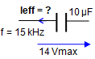
Réponse :Z=1/(2πfC) = 1/(6,28x15.103x10.10-6) = 103/(6,28x15x10) = 1000/(6,28x150) ≈ 1 Ω
14 Vmax x 0,707 ≈ 10 Veff ; I = U / Z = 10V / 1Ω = 10 Aeff (valeur exacte = 9,33)
sur une calculette, calcul de l’impédance du condensateur :
en écriture naturelle : Z = 1 ÷ (2 x [π] x 15.103(f) x 10.10-6(C)) = 1,0610.100 ≈ 1
formule simplifiée : 159 / f / C = 159 ÷ 0,015 (f en MHz) ÷ 10000 (C en nF) ≈ 1
6) Calculer la capacité équivalente de cet ensemble (en pF)
Réponse : 0,4 nF = 400 pF
Ct = C1 + C2 = 100pF + 400pF = 500 pF
2.4) Charge, décharge et constante de temps pour les condensateurs : a Le circuit ci-dessous est constitué d’un condensateur C suivi d’une résistance R en série. Lorsque l’inverseur est sur « Charge », la pile remplit le condensateur. Lorsque l’inverseur est sur « Décharge », le condensateur se vide.
Pour déterminer le temps de charge du condensateur, on part de la formule t(s) = Q(C) / I(A) (voir §1.3a). On sait que, par la définition du condensateur, Q(C) = C(F).U(V) et que, dans la résistance, I = U/R. Par substitution (t = C.U/[U/R]), on en déduit la constante de temps, T(s) = R(Ω) . C(F). Mais, à mesure que le condensateur se charge, la tension à ses bornes augmente et, conséquemment, la tension aux bornes de R diminue. La loi d’Ohm implique que le courant remplissant le condensateur diminue. Si bien qu’au bout du temps T, le condensateur n’est chargé qu’au deux tiers environ de la tension présente à ses bornes (63,21% exactement, soit 1–[1/e] avec e (nombre d’Euler) = 2,718 = [1 + (1 / n)]n, n étant très grand). Au bout de 1 T, on a UC = (2/3).E. Au bout de 2 T, la tension sera (8/9).E (ou E – [1/3]².E). A 3 T, on aura (26/27).E (ou E – [1/3]3.E), etc. Au bout de 4,605 T, le condensateur est chargé à 99% (1 – e-4,605 = 0,99). Au bout de 5 T, le condensateur est considéré comme complètement chargé. Le raisonnement est inverse pour la décharge : à chaque constante de temps, le condensateur se vide du tiers de la tension restant à ses bornes. Au bout de 1 T, il reste (1/3).E ; au bout de 2 T, il reste (1/9).E (ou (1/3)2.E), etc. Au bout de 5 T, la tension résiduelle est inférieure à 1% de la tension d’origine : le condensateur s’est vidé. En théorie, le condensateur n’est jamais ni complètement chargé ni complètement vide (attention aux doigts !).
Exemple : un condensateur de 100 µF se vide par l’intermédiaire d’une résistance de 8 kΩ. En combien de temps le condensateur se videra-t-il (moins de 1% de sa tension d’origine) ?
Réponse : le condensateur sera vide au bout de 5 T : T(s) = R(Ω) . C(F) = 8.103 x 100.10-6 = 800.10-3 = 800 ms ou formule simplifiée : T(ms) = R(kΩ) . C(µF) = 8 x 100 = 800 ms ; 5T = 5 x 800 ms = 4000 ms = 4 s
b L'établissement du courant dans une bobine (ou l'interruption du courant) suit la même courbe. La constante de temps est, dans ce cas, T(s) = L(H) / R(Ω). Lors de l'interruption brusque du courant, une tension inverse peut atteindre plusieurs dizaines de fois la tension présente aux bornes de la bobine (loi de Lenz).
2.5) Calcul de l'impédance de bobines et de condensateurs non parfaits :
a Les bobines et les condensateurs ne sont jamais parfaits : ils ont toujours une partie résistive que nous appelons résistance pure. Dans les schémas ci-dessous, la résistance pure est représentée en pointillé. Rappelons que, du fait de l’effet de peau (§1.4e), le courant ne se déplace qu’en surface des fils, ce qui rend le fil moins conducteur qu’à la simple lecture d’un ohm-mètre et ceci d’autant moins que la fréquence du courant est élevée.
La réactance (rapport U / I) de la bobine ou du condensateur ne peut pas s’additionner avec la résistance du fil à cause du déphasage de l’intensité par rapport à la tension aux bornes de la bobine ou de condensateur. La partie résistive (résistance pure du fil) ne s'ajoute pas arithmétiquement à la réactance (déphasage de ± 90°) comme dans le cas des résistances en série, mais géométriquement (somme vectorielle).
b L’impédance équivalente (Z) d’un groupement en série d’une résistance et d’une bobine ou d’un condensateur se calcule en utilisant le théorème de Pythagore. R est le vecteur de la résistance ; XL et XC sont les vecteurs de la réactance de la bobine et du condensateur et sont perpendiculaires au vecteur R. La longueur des vecteurs est proportionnelle à leurs valeurs en Ω. Pour un composant idéal, sans résistance, le vecteur Z est vertical et ZL = XL ou ZC = XC. Si la bobine ou le condensateur ne sont pas parfaits, la formule est : Z = √(R² + X²).
De plus, un condensateur a toujours une composante réactive (bobine) à cause de la forme de ses armatures (formant un coude, par exemple). Une bobine a une composante capacitive liée à l'espacement entre ses spires. Les trois vecteurs (R, L et C) sont représentés ci-dessous : en partant de O et en gardant la même échelle de longueur en Ω, le vecteur de réactance de la bobine (L) va vers le haut (+90°), celui du condensateur (C) vers le bas (-90°), le vecteur de la résistance (R) va vers la droite (0°, pas de déphasage). La direction du vecteur OZ donnera le déphasage (en ° ou en fraction de π) à analyser comme dans le cercle trigonométrique.
En mettant les vecteurs R, L et C bout à bout, la résultante (somme vectorielle) donne la valeur de l'impédance et l’angle de déphasage de la tension par rapport à l’intensité. L’impédance (Z) est formée d’une résistance (R) et d’une réactance positive (+XL) ou négative (–XC) qui lui est perpendiculaire. La valeur de l’impédance s’écrira sous la forme R ± jX. Le symbole j et son signe indiquant le sens du déphasage signifie qu’on ne peut pas additionner (ou soustraire) R et X bien que tous deux se mesurent en Ω.
c Le rapport réactance/résistance détermine la tangente de l’angle de déphasage. Si l’angle de déphasage est positif, la réactance sera positive et la tension sera en avance par rapport à l’intensité. Dans le cas contraire, la réactance sera négative et la tension sera en retard par rapport à l’intensité.
Arcsinus (noté arcsin ou sin-–1) est la fonction inverse du Sinus Z(Ω) =√(R² + [XL – XC]²) = R ± jX
Exemple : sin (45°) = 0,707 et sin–1 (0,707) = 45° φ = déphasage de U par rapport à I
Sur certaines calculettes, les angles doivent être exprimés en radians = arctg (X / R)
(et non pas en °) c’est-à-dire en longueur sur le cercle trigonométrique = arctg ((XL –XC ) / R)
dont la demi-circonférence (soit 180°) mesure π. = arcsin (X / Z)
Exemples : 45° = (45 / 180) x π = π / 4 = 0,7854 radian = arcsin [(XL –XC )/√(R² + (XL – XC)²)]
1,05 rad = 1,05 x 180 / π = 60° ; 360° = 2 π = 6,28 radians = arccos (R / Z)
sin(45°) = sin(0,7854 rad) = 0,707 et sin–1(0,707) = 0,7854 rad = 45° = arccos [R/√(R² + (XL – XC)²)]
Exemples : une bobine de 6 µH est parcourue par un courant de 1,06 MHz. La résistance pure de la bobine est de 69 Ω. Quelle est l’impédance de la bobine ? Quel déphasage génère cette bobine non parfaite ?
Réponses : réactance de la bobine : XL = ZL = 2πFL = 6,28 x 1,06.106 x 6.10-6 = 6,28 x 6,36 = 40 Ω ;
ZL =√(R² + XL²) =√(69² + 40²) ≈ 80 Ω ; Déphasage = arctg (X / R) = tg–1 (40 / 69) = tg–1 (0,5797) = +30°
Le déphasage de tension introduit par les bobines et les condensateurs est compris entre +90° et –90°. La représentation d’un signal déphasé est illustrée par le schéma ci-dessus : à gauche, le signal en pointillé (bleu) est en avance de 30° par rapport au signal de référence (en rouge) et correspond au déphasage de la tension par rapport à l’intensité de la bobine de l’exemple ci-dessus. L’impédance du signal s’écrit 69 Ω + j40 Ω. A droite, le signal en pointillé (vert) est en retard de 90° et correspond au déphasage de tension par rapport à l’intensité (par convention, représentant le signal de référence) introduit par un condensateur parfait.
d Le calcul de l’impédance (Z) permet d’appliquer la loi d’Ohm (U = Z.I). Mais, pour appliquer la loi de Joule (P = U.I), il faut tenir compte du déphasage tension/intensité, ce qui amène à la formule : P = U.I.cosφ. Dans le cas d’une bobine ou d’un condensateur parfait, aucune puissance n’est consommée puisque cos(90°) = 0.
Exemples : à partir des données de l’exemple ci-dessus, en supposant U = 40 V aux bornes de la bobine, calculer l’intensité parcourue dans la bobine et la puissance dissipée (par la résistance pure de la bobine).
Réponses : I = U / Z = 40 / 80 = 0,5 A ; P = U.I.cosφ = 40 x 0,5 x cos(30°) = 20 x 0,866 = 17,32 W
e Le rapport entre l'impédance de la bobine (ou du condensateur) et sa résistance pure détermine le déphasage mais aussi le coefficient de qualité appelé facteur Q : on a Q = Z / R ou Q = 1 / cos φ. Q exprime le rapport entre l’énergie totale emmagasinée dans le composant et l’énergie qui sera dissipée en chaleur. Si R est petit par rapport à Z, le déphasage est faible et Q = 2πfL/R = 1/(2πfCR). Q dépend donc de la fréquence mais aussi de la résistance pure : plus R est petit, plus le coefficient de qualité Q est important et meilleur est le composant.
Exemple : à partir des données de l’exemple ci-dessus, calculer le facteur Q de l’ensemble.
Réponse : Q = Z / R = 80 / 69 = 1,16 ou encore Q = 1 / cos φ = 1 / cos (30°) = 1 / 0,866 = 1,16
f Les résistances à fils, du fait de leur mode de fabrication (§1.5c) ont des composantes inductives (spirale creusée dans le matériau pour ajuster la valeur) et capacitives (embouts où sont soudées les pattes). Les résistances de faible valeur (jusqu'à 100 Ω) ont un comportement plutôt inductif et les résistances supérieures à 300 Ω sont plutôt capacitives. Vers 150-200 Ω, les deux effets s’annulent jusqu’à quelques GHz. Ces résistances, montées en série ou en dérivation pour obtenir la valeur désirée, sont utilisables en très haute fréquence.
3) TRANSFORMATEURS, PILES et GALVANOMÈTRES
a 3.1) Un transformateur est un cas particulier de bobines couplées (au moins deux enroulements bobinés autour d'un même circuit magnétique). Il ne transforme que des courants alternatifs (et si possible sinusoïdaux). Selon la fréquence du courant, le circuit magnétique est composé soit d’un empilement de tôles minces (représenté par un double trait comme ci-dessous) pour des fréquences basses (BF ou secteur 50 Hz), soit de ferrite (représentée en pointillé comme au § 2.3a) pour des fréquences HF, soit d’air (pas de circuit magnétique représenté) pour les fréquences les plus élevées. La puissance appliquée sur le primaire est récupérée sur le ou les secondaires.
b Un transformateur possède plusieurs caractéristiques :
- le nombre de spires de ses enroulements (np pour le primaire et ns pour le secondaire) donne le rapport de transformation N = ns / np (si N>1, le transformateur est élévateur, sinon il est abaisseur) ;
- la puissance utile délivrée au(x) secondaire(s) du transformateur est exprimée en volt-ampère (VA) et non pas en watt car il s’agit d’une puissance disponible et non pas consommée comme le ferait une simple résistance ;
- le rendement η (lettre grecque êta minuscule) est le rapport en % obtenu en divisant la puissance à la sortie du ou des secondaires (Ps) par la puissance d'entrée (Pp). Un transformateur parfait (ou idéal) a un rendement de 100% : toute la puissance présente sur le primaire est transférée sur le ou les secondaires.
c Les formules sont regroupées ci-contre où la
première ligne est proportionnelle à la
seconde. Une fois déterminés les deux couples de valeurs (le couple où se
trouve
l’inconnue et un autre couple de données), l’inconnue se calcule par le produit
en croix
(voir §0-1c). Si l’impédance est l’inconnue,
la formule est à élever au carré.
Exemples : 1) Un
transformateur, alimenté en 282 Vmax à son primaire, a un rapport de transformation
de 1/10. Quelle sera la tension efficace mesurée au secondaire ?
Réponse : Up = 282 Vmax x
0,707 = 200 Veff ; US = UP x N = 200 x 1/10 = 20 Veff. En
utilisant le tableau dans cet exemple, on retient le couple contenant
l’inconnue, US, et
le couple contenant N (valeurs entourées en bleu ci-contre). Le calcul par le
produit
en croix est : Us = produit de la 2ème diagonale (N x UP
dans notre exemple) divisé par
la valeur opposée (1 dans notre exemple) = (N.Up) / 1 = 200 x 1/10 =
20 Veff.
2) Sur le secondaire d'un transformateur est branchée une résistance de 200 ohms. Le transformateur possède 80 spires au primaire et 40 spires au secondaire. Quelle impédance mesure-t-on au primaire ?
Réponse : N = ns / np = 40 / 80 = 1/2 = 0,5 ; Zp = Zs / N² = 200 / 0,5² = 800 Ω.
Pour utiliser le tableau, seules les valeurs entourées d’un pointillé rouge seront retenues : produit en croix = produit de la 2ème diagonale (√Zs x np dans notre exemple) divisé par la valeur opposée (ns dans notre exemple) : √Zp = √Zs x np / ns ; en élevant au carré : Zp = Zs x np² / ns² = 200 x 80² / 40² = 200 x 6400 / 1600 = 800.
a 3.2) Transformateur non parfait : excepté le calcul du rendement, l’étude du transformateur non parfait n’est pas au programme de l’examen. Le rendement (qui ne peut pas être supérieur à 100%) est fonction du coefficient de couplage (k, voir § 2.3g1) des enroulements. Un rendement de 80% est courant pour les transformateurs d'alimentation et sera optimum pour la puissance au secondaire conseillée par le constructeur. Lorsque le transformateur est sous-dimensionné ou sous-utilisé, le rendement est moindre. Pour améliorer le rendement, on préfèrera un nombre de volts par spire faible, ce qui limitera le flux magnétique nécessaire au fonctionnement du transformateur. En utilisation normale, le rendement influe plus sur l’intensité que sur la tension. Plus on se rapproche de la puissance maximum admise par le transformateur, plus la tension du secondaire baisse (jusqu’à 5%). Le rendement augmente le rapport de transformation des impédances (N² / η).
b Un autotransformateur a son primaire et son secondaire bobinés sur le même enroulement : le courant du primaire et du secondaire circule dans la partie commune du bobinage. L’autotransformateur n’assure pas l’isolation galvanique (protection par limitation du courant dans le secondaire) comme le fait un transformateur d’isolement qui a un nombre de spires égal au primaire et au secondaire (N = 1).
c Le courant alternatif dans l'enroulement primaire engendre dans le circuit magnétique un flux alternatif. Ce flux variable engendre un courant alternatif dans le secondaire mais aussi dans la tôle du circuit magnétique. Ainsi, une partie du courant n’est pas récupérée sur le secondaire (incidence sur le rendement). Ces courants induits sont dits courants de Foucault et provoque l'échauffement de la tôle, donc des pertes. Pour limiter ces pertes, le circuit magnétique sera feuilleté et chaque élément (en forme de E ou de I) sera isolé par vernissage. Les pertes par courants de Foucault sont proportionnelles au carré de la fréquence, ce qui justifie la diminution de l'épaisseur des tôles quand la fréquence augmente. Pour les fréquences élevées (au-delà de la B.F.), le feuilletage ne suffit plus, des poudres ferromagnétiques (ferrite) sont alors employées.
a 3.3) Les piles et les accumulateurs sont des réserves de courant continu : ils accumulent l'électricité grâce une réaction chimique. Seuls les accumulateurs sont rechargeables. Une pile est une source ; un accumulateur est une source ou une charge selon qu’on le fait débiter ou qu’on le recharge. Une pile (ou un accumulateur) possède des caractéristiques propres : sa force électromotrice, sa résistance interne et sa capacité.
b La force électromotrice ou fém (notée E), en volts, est la tension aux bornes de la pile lorsqu’elle ne débite pas (sans charge). La fém dépend de la constitution chimique de la pile : deux électrodes, constituées de deux matériaux différents et baignant dans un électrolyte, forment un couple électrolytique. L’électrode positive, représentée par le trait le plus long sur les schémas, est reliée au + ; l’électrode négative, formant la carcasse des piles et représentée par le trait gras et court, est reliée au – (Attention : dans la représentation schématique des condensateurs électrochimiques, la carcasse est représentée par le grand trait en forme de U et est reliée au –, voir §2.3a). Les électrodes baignent dans un électrolyte acide ou alcalin. L’électrolyte, parfois gélifié, est le plus souvent liquide et, dans ce cas, peut imprégner un buvard. Le couple électrolytique détermine la fém : le couple zinc-charbon est une pile de 1,5 V ; le couple cadmium-nickel est un accumulateur générant 1,2 V ; un accumulateur au plomb est constitué d’une électrode négative en plomb pur (Pb) et d’une électrode positive en dioxyde de plomb (PbO2) baignant dans de l’acide sulfurique (H2SO4). Lorsque l’élément est chargé à fond, il génère 2,2 V. Puis, lors de la décharge, cette tension descend à 2 V. Lorsque l’acide est transformé en eau, l’élément est déchargé (la tension est de 1,8 V) et les électrodes sont transformées en sulfate de plomb (PbSO4).
c La tension nécessaire au rechargement des accumulateurs s’appelle la force contre-électromotrice (fcém). La fcém est toujours plus grande que la fém car les accumulateurs ont besoin d’une tension, variable selon le couple électrolytique, pour inverser la réaction chimique.
d La résistance interne (notée Ri),
en ohm, de la pile est due à la résistance de la réaction chimique. Cette
résistance, qui est représentée
schématiquement en série avec l’élément de la pile, est quasiment nulle pour
les accumulateurs mais non négligeable pour les piles (et en particulier les
piles usagées). Lorsque la borne positive de la pile ou de l’accumulateur est
reliée directement à la borne négative, le courant de court-circuit
est égal
à : Icc (A) = E (V) / Ri (Ω).
La valeur de ce courant est très grande dans le cas d’un accumulateur car
celui-ci a une résistance interne très faible, ce qui
peut détruire l’accumulateur à cause de sa surchauffe.
Exemples : 1) Aux bornes d'une pile dont la Fém est de 9 volts, on branche une résistance de 200 ohms où un courant de 40 mA est constaté. Quelle est la résistance interne de la pile ?
Réponse : en utilisant simplement la loi d’Ohm et la loi des nœuds et des mailles : UR = R.IR = 200 Ω x 0,04 A
= 8 V ; URi = E – UR = 9 V – 8 V = 1 V ; Ri = URi / I = 1 V / 0,04 A = 25 Ω
Autre méthode : en utilisant les formules : Ri = (E / I) – R = (9 V / 0,04 A) – 200 Ω = 225 – 200 = 25 Ω
2) Calculer la puissance dissipée dans la résistance
Réponse :
calcul de IR : I = U / R = E / (R + ri) = 4,5 / (35 + 10) = 0,1 A
calcul de PR : P = R . I² = 35 x 0,1² = 35 x 0,01 = 0,35 W = 350 mW
e La quantité d'électricité emmagasinée dans une pile (appelée aussi capacité) est exprimée en coulomb (C) avec la relation Q(C)=I(A).t(s) ou en ampère-heure (Ah) avec la relation : 1 Ah = 3600 C ou 1 C = 1 Ah / 3600
Exemple : Un accumulateur dont la force électromotrice est de 12 volts et dont la résistance interne est négligeable se décharge en 3 heures lorsqu'il est branché sur une résistance de 10 ohms. Quelle est la capacité de l'accumulateur (en coulombs et en ampère-heure) ?
Réponse : IR = UR / R = E / R = 12 V / 10 Ω = 1,2 A ; Q (C) = I (A) . t (s) = 1,2 x 3 x 3600 = 12 960 C soit 3,6 Ah
f Association des piles en série et en parallèle : il vaut mieux associer des piles ou des accumulateurs de même nature et de même valeur : on change un jeu de piles complet, les accumulateurs d’un groupement sont rechargés ensemble. Lorsqu’ils sont montés en série, les piles et les accumulateurs voient leurs Fém et leurs résistances internes s’additionner. Montés en parallèle, les piles et accumulateurs voient leurs résistances internes globales diminuer comme dans un groupement de résistances en parallèle alors que la Fém est constante. Toutefois, le montage d’éléments en parallèle est complexe : il faut s’en tenir au cas d’éléments de caractéristiques identiques (Fém, capacités et résistances internes).
a 3.4)
Les galvanomètres à
cadres mobiles sont des appareils de mesure
d'intensité. Un galvanomètre est composé d’un aimant fixe et d’un cadre mobile
pouvant effectuer une rotation de 90°, surmonté d’une aiguille et contenant une
bobine. En position initiale (notée 0 sur le cadran du schéma), le champ de
l’aimant est perpendiculaire à l’axe de la bobine car un ressort, souvent en
forme
de spirale, ramène la bobine vers cette position initiale. Le champ magnétique
généré par le courant traversant la bobine force celle-ci à se tourner dans
l’axe de
l’aimant. L’aiguille fixée sur le cadre indique la déviation lue sur un cadran
gradué. Le galvanomètre a une résistance interne propre (Ri) et
une intensité de
déviation maximum (Ig) à ne pas dépasser. Un galvanomètre ne
peut lire que de
faibles intensités (intensité de déviation maximale, de l'ordre du milliampère,
voire moins) ou de faibles tensions (Ri x Ig, soit quelques µV).
b Des montages spécifiques permettent de lire des tensions supérieures en utilisant une résistance montée en série avec le galvanomètre ou des intensités plus élevées en utilisant un shunt (résistance en dérivation). Le galvanomètre est alors monté en voltmètre ou en ampèremètre. Le galvanomètre ne peut indiquer que des valeurs moyennes (voir §2.2c). Pour indiquer des valeurs efficaces ou maximum, une diode sera montée en série (redressement, voir §5.3a) et une échelle de lecture adaptée sera utilisée.
Exemples : nous disposons d’un galvanomètre dont les caractéristiques sont les suivantes : intensité de déviation maximum = 20 µA et résistance interne = 10 Ω. Comment réaliser un voltmètre dont le calibre est de 10 volts et un ampèremètre dont le calibre est 1 ampère ?
Réponses :
Dans un voltmètre, la
résistance est en série ; Ug = Ig . Ri = 0,00002 x 10 =
0,0002 V ; UR = UT – Ug =
10 – 0,0002 = 9,9998 V ; R = UR / Ig = 9,9998 / 0,00002 =
499990 Ω ≈ 500 kΩ
Autre méthode : R = (UT / Ig) – Ri = (10 / 0,00002) – 10 = 500000 – 10 = 499990 Ω
Dans un ampèremètre,
la résistance est en parallèle ; IR = IT – Ig
= 1A – 0,00002 A = 0,99998 A ; R = U / I
= Ug / IR = 0,0002 V / 0,99998 A = 0,0002 Ω
Autre méthode : R = Ug / IR = (Ri . Ig) / (IT – Ig)=(10 x 0,00002) / (1 – 0,00002) = 0,0002 / 9,99998 =0,0002 Ω
On voit, à travers ces exemples, l’utilité de comprendre le fonctionnement des groupements de résistances. Les formules citées plus haut et leurs variantes sont directement issues des lois d’Ohm et de Kirchhoff.
a 3.5) Qualité des voltmètres (Ω/V) : le fait de brancher en dérivation un
voltmètre sur un circuit ne doit pas perturber le fonctionnement de ce dernier.
Le rapport obtenu en divisant la résistance totale du voltmètre par le calibre
en
volts donne le facteur de qualité du voltmètre (Q). Ce rapport est directement
fonction de la sensibilité du galvanomètre. Un voltmètre possède toujours le
même rapport Ω/V quel que soit le calibre utilisé.
Exemples : 1) Quelle est la qualité du voltmètre de l’exemple du §3.4 (ci-dessus) ?
Réponse : Q = (R + Ri) / UT = (499990 + 10) / 10 = 50000 = 50 kΩ/V ou Q = 1/Ig = 1/0,00002 = 50000 = 50 kΩ/V
2) Quelle est la valeur de la résistance R à mettre en série avec ce voltmètre calibré sur 10 volts pour obtenir un voltmètre calibré sur 100 volts ?
Réponse : la résistance R doit créer une différence de potentiel égale à la tension de calibre diminuée de la tension du voltmètre (100 V – 10 V = 90 V). La résistance du voltmètre est de 5 kΩ/V. La résistance R aura donc pour valeur 90 V x 5 kΩ/V = 450 kΩ
Autre méthode : Q = 1/Ig donc Ig = 1 / Q = 1 / 5000 = 0,0002 A ;
R = U / I = 90 V / 0,0002 A = 450000 Ω = 450 kΩ
b Un bon voltmètre aura un Q au moins égal à 20.000 Ω/V, soit une intensité de déviation maximum Ig de 50 µA (= 1 / 20.000). Pour les ampèremètres, le paramètre important est la résistance interne du galvanomètre. Plus celle-ci sera faible, meilleur sera l'appareil. Un bon appareil de mesure multimètre aura donc une tension de déviation maximum la plus faible possible (faible résistance interne et faible intensité de déviation maximum)
Cette notion de qualité des voltmètres n’est plus d’actualité car les instruments numériques ont remplacé les appareils à aiguille. Par construction, les voltmètres numériques ont une résistance interne constante et très élevée quelque soit le calibre utilisé (souvent de l’ordre de 100 MΩ).
3.6) Ohmmètre
et wattmètre : un ohmmètre est
composé d'un
ampèremètre avec lequel on détermine le courant traversant la
résistance à mesurer (Rx). Cet instrument nécessite donc une pile. Rc
est la résistance de calibre. La résistance R est variable pour tarer
l’ohmmètre à 0 Ω. Un wattmètre est composé d'un voltmètre qui
indique la puissance sous une impédance donnée (on a Ze = Zs
=
Zcalibre. et d’autre part R + Ri >> Zcalibre). Pour
ces deux instruments de
mesure, le cadran est gradué pour une lecture directe de la résistance
ou de la puissance. Alors que l’échelle de lecture d’un voltmètre ou
d’un ampèremètre est relativement linéaire, le milieu de la course du
galvanomètre d’un wattmètre représentera un quart de la puissance de
calibre (car P = U² / R). Pour un ohmmètre, sachant que I = U / R, la
graduation est inversée : 0 Ω est du côté où I est maximum car, pour
une valeur de résistance nulle, le courant est maximum. De l’autre
côté du cadran, les valeurs allant jusqu’à l’infini seront très serrées.
a 3.7) Les basses fréquences (BF) occupent un spectre allant de 0 Hz à 20.000 Hz. Les fréquences acoustiques (audibles pour l’oreille humaine) vont de 100 Hz à 15.000 Hz. Toutefois, un spectre allant de 300 Hz à 3000 Hz est largement suffisant pour la compréhension d’un message en téléphonie. Le haut parleur et le microphone sont des transducteurs (convertisseurs) électrique – mécanique (plus précisément acoustique) et inversement.
a1 Le microphone est constitué d'une membrane recueillant les vibrations de l'air et les transforme en varia-tion de grandeurs électriques. Les principaux types de microphones, par ordre décroissant d’impédance, sont :
- le microphone électret (impédance élevée, jusqu’à quelques MΩ) est doté d'un Electret assimilable à un condensateur polarisé dont l’épaisseur du diélectrique varie (voir § 2.3c)
- le
microphone céramique emploie un élément en polymère (céramique piézoélectrique,
voir §
7.5b) qui, lors de sa compression, engendre du courant à tension
variable.
- le microphone à charbon (ou microphone résistif) dont la membrane compresse plus ou moins des grains de charbon placés dans une capsule, ce qui fait varier leur résistance ;
- le microphone dynamique (le plus répandu car très robuste, impédance d’environ 1 kΩ) dont la membrane entraîne une bobine mobile située dans le champ magnétique d’un aimant afin de produire une tension ;
- le microphone à ruban (basse impédance, très sensible surtout aux fréquences basses) dont la membrane est une fine bande de métal à l’intérieur du champ magnétique d’un aimant et qui produit un courant variable.
a2 Le haut-parleur (HP) reproduit les vibrations d'air au rythme du courant délivré par l’étage AF. Les types de HP, par ordre décroissant d’utilisation dans nos stations, sont :
- le HP électrodynamique (de loin, le plus répandu) : sa membrane rigide et légère est mise en mouvement par le courant de la bobine plongée dans un champ magnétique intense.
- le HP électrostatique : son principe consiste à moduler des champs électrostatiques entre deux électrodes entre lesquelles est placée une fine membrane. Les électrodes sont perforées pour que les vibrations de la membrane sortent du HP (système utilisé dans les casques) ;
- le HP piézoélectrique utilisant les propriétés de certains polymères (voir § 7.5b) et utilisé dans les oreillettes ;
- le HP à ruban fonctionnant de la même manière que le microphone à ruban (utilisé dans les tweeters en hi-fi).
- le HP ionique (ou à plasma) utilisant une bulle d’air ionisée et chauffée par un courant HF (peu courant) ;
Les microphones et les haut-parleurs possèdent leurs caractéristiques propres d’impédance, de directivité, de rendu des sons (et de sensibilité pour les microphones).
b Un relais électromécanique
est un commutateur à commande électrique. Un relais électromécanique est
composé d’un électro-aimant (barreau de fer doux
entouré d’une bobine) et d’un mécanisme qui actionne une (ou plusieurs)
lame qui se colle à des contacts, assurant ainsi la commutation.
En l’absence de
tension aux bornes de la bobine de l’électro-aimant, le ressort du mécanisme
pousse la lame vers le contact « Repos » : le contact est
établi entre le commun et
la borne repos (R) du relais. Lorsque la tension aux bornes de la bobine est
suffisante, l’électro-aimant attire le mécanisme et celui-ci fait basculer la
lame vers le contact « Travail » : le
relais est dit « collé » lorsque le contact est établi entre le
commun et la borne travail (T). Lors de l'interruption de l’alimentation
de la bobine, la tension inverse générée (loi de Lenz, voir § 2.4b) peut provoquer
des
instabilités dans le circuit d’alimentation. Pour éviter ce problème,
une diode montée à l’envers (sens non passant, voir § 5.1) en parallèle
sur la bobine court-circuite la tension issue du relâchement.
c Un circulateur HF est constitué de ferrites et d’aimants qui dirigent les courants entre les trois bornes du dispositif. A l'intérieur du circulateur, construit pour une largeur de bande de 3% en UHF et au-delà, l'énergie HF ne circule que dans un sens : de 1 vers 2, de 2 vers 3 ou de 3 vers 1. Dans l’autre sens, le signal est fortement atténué. Lorsqu'on applique un signal sur un des ports, il se propage dans les deux sens opposés avec une vitesse différente due aux champs magnétiques des aimants, ce qui fait qu'il s'additionne sur un autre port et s'annule sur le dernier.
4) DÉCIBEL, CIRCUITS R-C et L-C, LOI de THOMSON
a 4.1) Le décibel (noté dB) est une unité permettant d'exprimer un rapport entre deux unités de même nature. Dans le domaine de la radioélectricité, cette unité est souvent la puissance (le watt) mais d’autres unités peuvent être utilisées. A notre opinion, bien que ce ne soit pas clairement précisé dans les textes, seuls les décibels exprimant un rapport de puissance sont au programme de l’épreuve de technique.
Gain (dB) = 10 log (Ps / Pe) ou Ps = 10 (dB / 10) x Pe avec Ps = puissance de sortie et Pe = puissance d'entrée
b Table de conversion : le nombre des dizaines de dB correspond à l’exposant de la puissance de 10 du rapport de puissance (c’est-à-dire au nombre de 0 du rapport arithmétique). Les principales unités de dB sont indiquées en gras dans le tableau ci-dessous (0, 3, 6, 7, 9 dB correspond à un rapport arithmétique arrondi de 1, 2, 4 5 et 8).
|
Dizaine de dB Rapport arithmétique |
0 1 x |
1 10 x |
2 102 x |
3 103 x |
4 104 x |
5 105 x |
6 106 x |
7 107 x |
8 108 x |
9 109 x |
|
Unité de dB Rapport arithmétique |
0 1 |
1 1,26 |
2 1,58 |
3 2 (1,99) |
4 2,51 |
5 3,16 |
6 4 (3,98) |
7 5 (5,01) |
8 6,31 |
9 8 (7,94) |
Soit un rapport arithmétique de 400 à convertir en décibels (exemple 2 ci-dessous) : on pose 400 = 10² x 4. Dans le tableau ci-dessus, le nombre des dizaines de dB (1ère ligne) est 2 (et correspond à la puissance de 10) et le nombre d’unités de dB (2ème ligne) est 6 (6 correspond à un rapport de 4), d’où un nombre de dB de 26. Inversement, soit un gain de 26 dB à convertir en rapport arithmétique : les lignes du tableau sont lues dans l’autre sens : le nombre des dizaines de dB est l’exposant de 10 (dans notre exemple, 2 correspond à 10², soit 100) et le rapport correspondant à 6 unités de dB est 4, d’où un rapport arithmétique de : 100 x 4 = 400
Exemples :
Rapport arithmétique → dB :
1) Rapport = 8 → 9 dB
2) Rapport = 400 = 100 x 4 = 10² x 4 → 26 dB
dB → Rapport arithmétique :
3) 16 dB → 101 x 4 = 10 x 4 = 40
4) 20 dB → 10² x 1 = 100 x 1 = 100
5) 33 dB → 103 x 2 = 1000 x 2 = 2000
Sur une calculette, en écriture naturelle :
Pour passer du rapport arithmétique au décibel : 10 x [LOG] 2000 = 33,0103 arrondi à 33
Pour passer des décibels au rapport arithmétique : [10x] (33 ÷ 10) = 1995,26 arrondi à 2000
ou, si la calculette ne possède pas la fonction [10x] : 10 [^] (33 ÷ 10) = 1995,26
Attention, ne pas utiliser la fonction « .10 x » (ou Ex), utilisée pour saisir des multiples, mais utiliser la fonction « 10 puissance x », généralement proche, sur les calculettes, de la fonction « LOG »
Dans l’exemple ci-dessus, nous avons arrondi à 2000 et non pas à 1995 car les valeurs indiquées dans la table sont arrondies. Il faudra toujours arrondir le résultat de la calculette, plus précis, car ce sont les valeurs arrondies (celles de la table de conversion simplifiée) qu’il faut connaître pour l’examen.
c Un nombre de dB négatif inverse le rapport arithmétique et indique une atténuation et non un gain (exemple : – 16 dB = 1 / (10 x 4) = 1 / 40 = 0,025).
d Les décibels se définissent à partir des logarithmes et possèdent donc les caractéristiques de ces derniers : ils transforment les gains successifs (multiplication) en addition, les pertes (division) en soustraction, les puissances et les racines (affaiblissement linéique) en multiplication et en division.
e La perte d’un câble est appelée l’affaiblissement linéique car elle est fonction de la longueur du câble. Cette perte est exprimée en dB/m (voir §10.1a).
Exemple : Quel est le gain (en dB) de l’ensemble de réception représenté ci-dessous ?
Réponse :
Perte du câble coaxial au mètre : 3 dB / 100 = 0,03 dB donc perte du câble coaxial : 0,03 dB/m x 33 m = 1 dB
Gain de l'ensemble : 19 dB + 20 dB – 1 dB – 2 dB = 36 dB (soit un rapport arithmétique de 4000)
Calcul de la perte du câble à partir du rapport arithmétique : perte arithmétique pour 100 mètres = 0,5 donc pour 1/3 de longueur de câble, perte arithmétique = 3√(0,5) « racine cubique de 0,5 » ≈ 0,8 soit 20% pour 33 mètres.
Par tâtonnements, on trouve que 0,83 = 0,8 x 0,8 x 0,8 ≈ 0,5 ; donc 3√(0,5) (= 0,51/3) ≈ 0,8. La racine cubique (notée 3√) est utilisée car la longueur du coaxial (33 m) est de 1/3 de la longueur de référence (100 m). Si le câble utilisé était long de 200 m, la perte arithmétique serait de 0,5² = 0,25 (= 1/4 = –6 dB, soit 0,03 dB x 200). La simplification en calculant avec les décibels est évidente dans cet exemple. Les calculs seraient difficilement réalisables si les rapports des longueurs n’étaient pas des rapports simples (1/3 et x2 dans nos exemples).
Autres conversions : antenne : 19 dB correspond à un rapport de 80 ; préamplificateur : 20 dB correspond à un rapport de 100 ; connecteur HF : -2 dB correspond à un rapport de 1 / 1,58 soit 0,63.
Calcul du rapport arithmétique de l’ensemble : 80 x 100 x 0,8 x 0,63 = 4032 ≈ 4000 (écart dû aux arrondis)
f Lorsque les valeurs du rapport sont exprimées en tension, les formules deviennent : Gain (dB) = 20 log (Us / Ue) ou Us = 10 (dB / 20) . Ue. Le rapport des puissances est le carré du rapport des tensions (car P = U² / R). Le gain (en dB) est le double de celui calculé lorsque les valeurs sont exprimées en watts (effet du logarithme) : un rapport de tension de 2 correspond à 6 dB (=3 dB x 2 ; 3 dB correspond à un rapport de puissance de 2).
Exemple : Quel est le gain (en dB) de l’amplificateur représenté ci-dessous ?
Réponse : Le rapport des tensions est Us / Ue = 16 / 8 = 2. Le rapport des puissances est donc 2² = 4. Le rapport de puissance de 4 correspond à un gain de 6 dB (= 3 dB x 2)
Autre méthode : Gain = 20 log (Us / Ue) = 20 log (8 / 4) = 20 log (2) = 20 x 0,3 = 6 dB
Attention : ceci n’est valable que si les impédances d’entrée et de sortie (Ze et Zs) sont identiques. Sinon, la formule devient : Gain (dB) = 20 log (Us / Ue) + 10 log (Ze / Zs) puisque, à tension égale, la puissance est inversement proportionnelle à l’impédance (P = U² / R).
a 4.2) Un circuit RC est un filtre composé d’une résistance et d’un condensateur. Selon la place des composants, ce filtre laissera passer soit les fréquences supérieures à la fréquence de coupure (filtre passe-haut), soit les fréquences inférieures (filtre passe-bas). Les filtres RC sont essentiellement dédiés aux basses fréquences. A la fréquence de coupure, l’impédance du condensateur est égale à la résistance, d'où :
Exemple : Quelle est la fréquence de coupure du filtre RC représenté ci-contre ?
Sur une calculette :
en écriture naturelle : f = 1 ÷ (2 x [π] x 200(R) x 5.10-6(C)) = 159,15.100 = 159 Hz
formule simplifiée : f(en Hz) = 159 ÷ 0,2 (R en kΩ) ÷ 5 (C en µF) = 159 Hz
b Mnémotechnique : dans un schéma de filtre passe-bas, le condensateur est en bas. Le condensateur est en haut dans le schéma d’un filtre passe-haut. Attention : pour que l’expression mnémotechnique fonctionne, il faut que, dans le schéma, la masse (représentée sur le schéma par le trait gras) soit en bas.
c L’octave supérieure est l'harmonique 2 d'une fréquence (2 fois la fréquence). La 2ème octave est l'harmonique 4 (4 fois la fréquence). La 3ème octave est l’harmonique 8 (= 23 et non pas l’harmonique 3 qui n’est pas une octave). La décade supérieure est l'harmonique 10 d'une fréquence. La 2ème décade supérieure est la fréquence multipliée par 100 (= 102). L’octave inférieure qui n’est pas un harmonique est la fréquence de référence divisée par 2 (et par 10 pour la décade inférieure).
Exemples : Soit une fréquence de 150 kHz. Calculez sa 5ème octave supérieure et sa 3ème décade inférieure.
Réponses : 5ème octave supérieure = fréquence x 25 = f x 32 = 150 kHz x 32 = 4800 kHz = 4,8 MHz
3ème décade inférieure = fréquence / 103 = f / 1000 = 150 kHz / 1000 = 150 Hz
d L'atténuation de ces deux filtres est de 3 dB à la fréquence de coupure (la puissance du signal à la sortie de ce filtre est divisée par 2) et de 6 dB par octave à partir de la fréquence de coupure (par octave supérieure pour un filtre passe bas et par octave inférieure pour un filtre passe haut).
Le phénomène d’atténuation s’explique ainsi : la tension de sortie du filtre est fonction du rapport entre l’impédance du condensateur et l’impédance du circuit série résistance + condensateur (§1.7b, répartition des tensions dans un groupement série et §2.5b, condensateur non parfait). A la fréquence de coupure, par définition, l’impédance du condensateur est égale à la résistance. A la sortie du circuit, la tension est divisée par 1,414 car le circuit série R+C a une impédance 1,414 fois supérieure à R (effet du déphasage de 90°). La puissance est donc divisée par 2 (puisque P=U²/R), soit une atténuation de 3 dB Dans un filtre passe-haut, lorsque la fréquence du signal augmente, l’impédance du condensateur diminue alors que la résistance est constante : la tension aux bornes de la résistance (celle de sortie du filtre) augmente et l’atténuation est moindre. Inversement, l’atténuation augmente quand la fréquence diminue et l’atténuation d’un filtre passe-bas augmente quand la fréquence s’élève. Le même phénomène se produit avec les circuits LC passe-haut et passe-bas (§ 4.3).
Exemple : Quelle est la tension Vs lorsque la fréquence de Ve est de 6 kHz ?
Réponse : la fréquence de coupure du filtre est :
F=1/(2 x π x 21,22 x 5.10-6)
≈
1500 Hz. 6 kHz est la 2ème octave supérieure de la fréquence de
coupure.
L’atténuation de ce filtre à cette fréquence est donc de 12 dB. Le rapport
de tension correspondant à –12 dB est : 10(-12/20) = 10(-0,6)
= 0,25. Donc : Vs = Ve x 0,25 = 1 V.
Plus précisément, ZC = 1/(2πfC) = 5,3052 Ω ; ZRC = √(21,22² + 5,3052²) = 21,873 Ω
Vs = Ve x (ZC / ZRC) = 4 x (5,3052 / 21,873) = 0,9702 V soit une atténuation de 12,3 dB (20 log[0,9702 / 4] = 12,304) au lieu des 12 dB prévus initialement (voir la courbe réelle au §4.3g).
e Les bobines ayant un
comportement inverse par rapport aux condensateurs, les
circuits RL ont un comportement inverse par rapport aux circuits RC. La
fréquence
de coupure des circuits RL est : f = R / (2πL). Ces circuits montés en passe-haut ou
passe-bas (en inversant la place de la bobine) ont les mêmes caractéristiques
que les circuits RC.
a 4.3) Les circuits LC sont des filtres composés de bobines et de condensateurs. Ces filtres, s’ils sont montés comme les filtres RC (la bobine remplaçant la résistance), ont un effet de coupure. Seuls les circuits LC ont un effet de résonance à une fréquence s’ils sont montés en série ou en parallèle. Les filtres LC sont utilisés dans le domaine de la Haute Fréquence (HF). A la résonance comme à la coupure, on a ZC = ZL (loi de Thomson), d'où :
b Le tableau ci-après récapitule les quatre montages de base des filtres LC. Comme pour les filtres RC, l’expression mnémotechnique citée plus haut sera employée pour reconnaître les filtres passe-haut ou passe-bas (« dans un filtre passe-haut, le condensateur est en haut et dans un filtre passe-bas, le condensateur est en bas »).
Les graphiques expriment l’atténuation du signal à la sortie du filtre en fonction de la fréquence. 0 dB signifie qu’il n’y a aucune atténuation. L’axe des fréquences est souvent logarithmique (comme l’axe des décibels). D’autres graphiques expriment la tension aux bornes du circuit ou son impédance en fonction de la fréquence.
Tableau comparatif des 4 montages de base des circuits LC
Exemple : Quelle est la fréquence de résonance d'un circuit bouchon avec L = 32 µH et C = 200 pF ?
Réponse : f(MHz) = 159 / [√(L(µH).C(pF)] = 159 / [√(32 x 200)] = 159 / √(6400) = 159 / 80 = 1,9875 ≈ 2 MHz
Sur une calculette :
en écriture naturelle : 1 ÷ (2 x [π] x [√] (32.10-6(L) x 200.10-12(C))) = 1,98944.106 arrondi à 2 MHz
formule simplifiée : f(en MHz) = 159 / √[L . C] = 159 ÷ √ [32 (L en µH) x 200 (C en pF)] = 1,9875 ≈ 2 MHz
c Le filtre bouchon est un filtre utilisé pour bloquer les signaux HF d’une fréquence désirée. Lorsque le condensateur est rempli, il cherche à se vider et le courant qui en sort parcourt la bobine qui génère un champ magnétique. Lorsque les armatures du condensateur sont au même potentiel, le champ magnétique de la bobine est maximum et va générer un courant qui remplit le condensateur d’une tension inverse à celle du départ. Lorsque la bobine a restitué toute son énergie, son champ magnétique est nul et le condensateur est à nouveau rempli mais en sens inverse du départ. Et le condensateur cherche à nouveau à se vider. Si ce phénomène se produit en phase avec le signal aux bornes du circuit, il y a résonance et l’impédance très élevée du circuit empêche le courant HF de traverser ce filtre.
d Dans le filtre série, le même phénomène se produit. Mais, dans ce cas, si le signal aux bornes du circuit est en phase avec le courant parcourant la bobine et le condensateur, le signal traversera le filtre.
e La fréquence que donne la loi de Thomson est appelée fréquence de résonance dans le cas des circuits bouchon ou série et fréquence de coupure dans le cas des circuits passe bas et passe haut. Pour baisser la fréquence de résonance (ou de coupure) d'un circuit LC, il faut soit augmenter la valeur du condensateur, soit augmenter la valeur du bobinage (en particulier en introduisant un noyau magnétique à l’intérieur de l’enroulement). Inversement, pour augmenter la fréquence, il faut réduire la valeur du condensateur et/ou du bobinage. Pour doubler la fréquence de résonance, la valeur du condensateur ou du bobinage sera divisée par 4 (effet de la racine carrée). Inversement, la valeur du bobinage ou du condensateur sera multipliée par 9 pour diviser par 3 la fréquence de résonance du circuit.
f L’atténuation d’un circuit passe bas ou passe haut est de 3 dB à la fréquence de coupure et, à partir de cette fréquence, l’atténuation est, pour les octaves supérieures dans le cas des filtres passe bas (et pour les octaves inférieures dans le cas des filtres passe haut), de 6 dB par éléments actifs et par octave ou 20 dB par décade et par éléments actifs. Les bobines et les condensateurs sont des éléments actifs. Dans un filtre RC, seul le condensateur est un élément actif. Un circuit passe bas LC constitué d’une seule cellule (donc deux éléments actifs) aura, à partir de la fréquence de coupure une atténuation de 12 dB (2 x 6) par octave ou encore de 40 dB (2 x 20) par décade. Ce filtre est appelé filtre du deuxième ordre car c’est le carré de la fréquence qui intervient dans sa fonction de transfert (rapport entre grandeur d’entrée et grandeur de sortie).
Un filtre passe bas composé de deux cellules LC identiques (2 circuits comportant chacun une bobine et un condensateur, soit 4 éléments) aura, à la troisième octave supérieure (harmonique 8), une atténuation 72 dB (6 dB x 4 éléments x 3 octaves) et, à la décade supérieure, une atténuation de 80 dB (20 dB x 4 éléments).
Attention : une cellule peut comporter plusieurs éléments de même nature (condensateurs ou bobines) montés en série ou en parallèle pour former une association fonctionnant comme un seul élément (condensateur ou bobine équivalent). Le nombre d’éléments d’un circuit ne détermine donc pas forcément les propriétés du circuit (voir cas du circuit en pi au §4.5).
g Les courbes de réponse des filtres sont souvent
représentées par des
graphiques dont les échelles sont logarithmiques : l’échelle des
abscisses (axe horizontal) donne les fréquences : chaque doublement de
la fréquence prend la même place. L’atténuation du filtre (en dB) est
donnée sur l’échelle des ordonnées (axe vertical). La particularité d’un
tel graphique est que le point d’origine (où se rencontrent l’abscisse et
l’ordonnée) n’a sur aucun des axes pour valeur 0. La courbe de réponse
des filtres sur de tels graphiques longe une droite brisée à la fréquence
de coupure. La courbe est asymptotique : elle se rapproche de plus en
plus des droites sans jamais les couper ni même les atteindre.
Dans ce graphique, la pente a son origine à la fréquence de coupure (fc). La courbe d’atténuation (en trait coupé gras sur le graphique) est asymptotique à cette pente puis, au-delà de la fréquence de coupure, la courbe devient asymptotique à l’axe indiquant 0 dB. Le graphique ci-dessus représente un filtre passe haut. Pour un filtre passe bas, la courbe est inversée (la pente est négative) mais les caractéristiques sont les mêmes.
Dans le graphique ci-dessus, pour la fréquence ½ f, la courbe d’atténuation (réelle) suit de très près la pente (théorique) du filtre. Ce filtre, dont la pente est d’environ 40 dB/octave, pourrait être un circuit à 7 éléments actifs (6 dB x 7 éléments = 42 dB), composé, par exemple, de 4 condensateurs et 3 bobines. Ce filtre serait donc un filtre du 7ème ordre. Si ce filtre était passe bas, à l’harmonique 3, l’atténuation serait égale à 42 dB x √2 = 59,4 dB (proche de –60 dB correspondant dans notre exemple à l’atténuation à 1/3 f, plus proche sur le graphique de ¼ f que de ½ f car l’échelle n’est pas linéaire mais logarithmique).
a 4.4) Les circuits RLC sont des circuits LC non parfaits : le circuit est alors constitué d’un condensateur, d’une bobine et d’une résistance fictive R montée soit en série avec la bobine, représentant la résistance du circuit (principalement de la bobine) comme dans le circuit série ou le circuit bouchon, soit en parallèle avec le condensateur représentant son défaut d’isolement. Aussi, dans les formules ci-dessous, la réactance (XL) sera distinguée de l’impédance (ZL), cette dernière incluant R. A cause de cette résistance parasite (représentée en pointillé car ce n’est pas un composant), l’impédance des circuits à la résonance n’est plus nulle ou infinie. Cette résistance a une incidence négligeable sur la pente d’atténuation des filtres passe-haut ou passe-bas.
Exemple : calcul de la fréquence de résonance : fo = 159 / √(LC) = 159 / √(25 x 100) = 159 / 50 = 3,18 MHz
Sur une calculette :
en écriture naturelle : fo = 1 ÷ (2 x [π] x [√] (25.10-6(L) x 100.10-12 (C))) = 3,183.106 converti en 3,183 MHz
formule simplifiée : fo = 159 / √(L.C) = 159 ÷ (√ (25 (L en µH) x 100 (C en pF))) = 3,18 MHz
a1 L’effet de peau fait que la résistance du fil de la bobine est plus importante que sa simple mesure à l’ohmmètre : le courant HF ne circule qu’à la périphérie du fil. L’épaisseur de la « peau » (en m) se calcule avec la formule (voir aussi formule simplifiée au §1.4e) : √ [ρ(Ωm) / π.µo.µr.f(Hz)] avec µr et ρ propre au fil utilisé : dans la première « peau » passe 63% du courant puis, dans la seconde peau de même épaisseur, passe 63% du courant restant et ainsi de suite. Cette progression est similaire à celle de la charge du condensateur (§2.4a).
a2 Impédance du circuit série : Zsérie = √(R² + [ωL – 1/ωC]²) (voir § 2.5c). A la fréquence de résonance, par définition, on a XL = XC donc ωL = 1 / ωC, donc ωL – (1 / ωC) = 0, donc Zsérie = Rsérie à la résonance
a3 Impédance du filtre bouchon : 1/Z = 1/[√((ωL)²+R²)]+1/[1/(-ωC)] avec la formule des résistances en parallèle ou la formule simplifiée des groupements : Produit des impédances / Somme des impédances, d’où :
R étant petit par rapport à ωL, on a : √((ωL)² + R²) ≈ ωL et on vient de voir que, à la résonance : √(R² + [ωL – 1/ωC]²) = R, donc :
Zbouchon = (ωL/ωC)/R donc Zbouchon = L/(R.C) à la résonance ;
formule simplifiée : Z(kΩ) = L(μH)/R(kΩ)/C(pF)
a4 Impédance du circuit parallèle : L et C forment une impédance infinie à la fréquence de résonance (le circuit donne l’impression d’être coupé) donc Zparallèle = Rparallèle à la résonance.
Dans les exemples ci-dessus : sans calcul, on trouve que Zsérie = R = 20 Ω et que Zparallèle = R = 12,5 kΩ
calcul de l’impédance
à la résonance du circuit bouchon : Zbouchon(Ω) = L(H) /
[R(Ω) x C(F)]
= 25.10-6 /(20x100.10-12) = 25.10-6 / 20.10-10
= (25/20).104 = 1,25.104 = 12,5
kΩ
Sur une calculette :
en écriture naturelle : Zbouchon = L / (R x C) = 25.10-6 / (20 x 100.10-12) = 1,25.104 = 12,5 kΩ
formule simplifiée : Zbouchon = L / R / C = 25 (L en µH) ÷ 0,02 (R en kΩ) ÷ 100 (C en pF) = 12,5 kΩ
Ainsi, la résistance du circuit parallèle (12,5 kΩ) est équivalente à la résistance de 20 Ω du circuit bouchon.
b Le facteur Q définit la qualité d’un circuit. Si L et C sont en parallèle (circuit bouchon ou parallèle), Q est le rapport obtenu en divisant l’impédance à la résonance (Z) par la partie réactive de la bobine ou du condensateur (XL ou XC, les deux valeurs étant identiques à la résonance). Si L et C sont en série, le rapport est inversé. Plus Q est faible, plus l’oscillation du circuit s’amortit rapidement car l’énergie disponible est dissipée dans R.
b1 Calcul du facteur Q d’un circuit bouchon : Qbouchon = Zbouchon / XL ou Qbouchon = Zbouchon / XC
On a vu que : Zbouchon = L / (C x R) et on verra au §4.6a que XL (=XC) = √ (L / C). En remplaçant les valeurs Zbouchon et XL (=XC) : Qbouchon = [L / (C x R)] / [√ (L / C)]. Après transformation : Qbouchon = √ (L / C) / R,
b2 Calcul du facteur Q d’un circuit série : Qsérie = XL / Zsérie = XL / R ou Qsérie = XC / Zsérie = XC / R
On verra au §4.6a que XL (=XC) = √ (L / C) et on a vu que Zsérie = Rsérie. En remplaçant les valeurs XL (=XC) et Zsérie, on obtient donc : Qsérie = √ (L / C) / R soit la même formule que Qbouchon
Autre présentation : Q = √ (L/C/R²) ou formule simplifiée : Qbouchon = Qsérie = √ [L(µH) / C(pF)] / R (kΩ)
Dans l’exemple du circuit bouchon ou du circuit série : XL = 2πfL = 6,28 x 3,18.106 x 25.10-6 = 499,26 Ω ≈ 500 Ω
ou XC = 1/(2πfC) = 1/(6,28 x 3,18.106 x 100.10-12) = 1/(1,997.10-3) = 500,75 Ω ≈ 500 Ω
donc : Qbouchon = Zbouchon / XL = Zbouchon / XC = 12500 / 500 = 25
ou Qbouchon = √ (L / C) / R = √ (25.10-6 / 100.10-12) / 20 = √(0,25.106) / 20 = 0,5.103 / 20 = 500 / 20 = 25
Qsérie = XL / R = 500 / 20 = 25 (le résultat est identique à Qbouchon bien que la formule ne soit pas la même)
Sur une calculette :
en écriture naturelle : Q = √ [L / C] / R = √ [25.10-6 / 100.10-12] / 20 = 25
formule simplifiée : Q = √ [L(µH) / C(pF)] / R (kΩ) = √(25/100) / 0,02 = 0,5 / 0,02 = 25
b3 Dans le circuit parallèle, L et C étant en parallèle, on a : Qparallèle = Zparallèle / XL = Zparallèle / XC = R / XL = R / XC et, comme verra au §4.6a, XL = XC =√ (L / C) d’où : Qparallèle = R / [√ (L / C)]
Dans l’exemple du circuit parallèle : Qparallèle = R / XL = R / (2πfL) = 12500 / (6,28 x 3,18.106 x 25.10-6) = 12500 / 500 = 25 ou Qparallèle = R / [√(L / C)] = 12500 / [√(25.10-6 / 100.10-12)] = 12500 / √(0,25.106) = 12500 / 500 = 25. Avec des valeurs pour L et C identiques et lorsque Rparallèle = XL² / Rbouchon = XC² / Rbouchon = (L/C) / Rbouchon, le circuit parallèle et le circuit bouchon ont le même facteur Q.
b4 La tension aux bornes d’un circuit bouchon à la fréquence de résonance sera fonction de la puissance du signal à l’entrée du circuit et de son impédance à la résonance (d’où l’autre nom du facteur Q pour un circuit bouchon : coefficient de surtension). Dans notre exemple de circuit bouchon, avec une puissance de 50 pW, correspondant à un signal S9 (soit 50 µV sous 50 Ω, voir §11.4), la tension aux bornes du circuit bouchon sera de : U = √(P x Z) = √(50.10-12 x 12,5.103) = √(625.10(-12+3)) = 7,9.10-4= 790 µV (soit un écart égal à la racine carrée du rapport des impédances : 790 / 50 = 15,8 et √(12500 / 50) = √(250) = 15,8).
Dans un circuit série, le facteur Q est égal au rapport de la tension efficace aux bornes du condensateur UC divisé par la tension efficace U aux bornes du circuit RLC lorsque le circuit est à la fréquence de résonance. En effet, Q = XC / R = XC.I / R.I = UC / U. Si Q est grand, la tension aux bornes du condensateur peut prendre des valeurs élevées par rapport à la tension aux bornes de l’ensemble. Q apparaît comme un facteur de surtension.
b5 Les valeurs que prennent Z et Q selon le circuit utilisé sont récapitulées dans le tableau ci-contre. On verra au §4.6a une variante de la loi de Thomson : XL = XC = √ (L / C) à la résonance.
c Le facteur Q d’un circuit détermine sa bande passante à –3 dB (B) à la fréquence de résonance : B = fo / Q. Plus Q est élevé, plus le filtre est étroit et ses flancs sont raides et mieux les fréquences adjacentes seront rejetées.
Dans les exemples ci-dessus : Bbouchon = Bsérie = Bparallèle = 3,18 MHz / 25 = 0,127 MHz = 127 kHz
On peut vérifier les courbes caractéristiques d’un filtre grâce à un analyseur de spectre où la fréquence est en abscisse et la puissance du signal, ou sa tension, en ordonnée. La puissance est souvent indiquée en puissance relative (en dBm : décibel par rapport au milliwatt sous une impédance donnée, généralement 50 Ω). Un contacteur détermine la puissance maximum lue et deux autres contacteurs déterminent la fréquence centrale (ou la fréquence de début) et la largeur de la plage de fréquence à explorer.
Un wobulateur est un générateur de fréquence variable couplé à un oscilloscope ce qui permet, en branchant le wobulateur à l’entrée de l’étage ou du filtre à mesurer, de lire la courbe de réponse en fréquence de l’amplificateur ou du filtre. L’ensemble wobulateur+oscilloscope remplace un analyseur de spectre.
d Lorsqu’un filtre est constitué de plusieurs cellules LC résonant sur la même fréquence ou dont les fréquences de résonance sont légèrement décalées (comme ci-dessous, l’atténuation des 2 cellules est en pointillé), la courbe de réponse du filtre n’est plus définie par le facteur Q mais par sa largeur de bande passante et son taux de sélectivité (ou facteur de forme). La largeur de la bande passante peut être définie à un autre niveau que –3 dB.
Exemple : Quelle est la largeur
de la bande passante à – 13 dB du signal
visualisé sur l’écran de l’analyseur de spectre ?
Réponse : La puissance crête du
signale mesure 39 dBm. La
bande passante de ce signal à – 13 dB est la largeur du signal
dont la puissance est supérieure à 26 dBm (= 39 dBm –13 dB).
Les fréquences extrêmes du signal sont 540 et 600. La bande
passante à – 13 dB du signal est de 60
(= 600 – 540). Si on n’avait
que la graduation en volts, puisque Umaxi = 24 V, que –13 dB
correspond à un rapport de puissance de 1/20 et que U = √(P.R), la
tension à – 13 dB sera calculée comme suit : 24 V / √20 =
24 / 4,45 ≈ 5,4 V. Enfin, sachant
que 39 dBm = 8 W, que 26 dBm = 0,4 W et que 13 dBm = 0,02 W, l’impédance du
signal mesuré est : Z = U²/P = 24²/8 (= 5,4²/0,4 ou 1,2²/0,02) =
72 Ω
e Le taux de sélectivité (S) qui
est le rapport (en %) obtenu en
divisant B (la bande passante à –3 dB) par la
bande passante à –60 dB (appelée aussi réjection ultime et notée δf à
–60 dB ; δ : lettre grecque minuscule delta signifiant
« variations »).
En pratique, d’autres niveaux de réjections ultimes peuvent être
définis (-40 dB par exemple). Le facteur de forme (F) est
l'inverse
du taux de sélectivité. Plus le taux de sélectivité se rapproche de
100%, plus les flancs du filtre sont raides, plus le facteur de forme se
rapproche de 1 sans jamais l’atteindre.
S (%) = [(B x 100) / δf à -60 dB]
et F = 100 / S ou F = δf à -60 dB / B
Exemples : dans le schéma ci-contre représentant la courbe de réponse d’un filtre passe bande, on mesure B = 5 kHz et δf à -60 dB = 25 kHz. Quels sont le taux de sélectivité et le facteur de forme du filtre ?
Réponses : Sélectivité = (5 x 100) / 25 = 500 / 25 = 20 %
Facteur de forme = 100 / S = 100 / 20 = 5 ou 25 / 5 = 5.
L’atténuation du signal à la sortie du filtre RLC constitué d’une seule cellule suit une courbe de Gauss et la bande passante du circuit pour une atténuation différente de 3 dB est donnée par la formule : Bp = B x√(p – 1) avec B = fo / Q et p = rapport de puissance de la bande passante Bp. Ainsi, un circuit RLC à une seule cellule a un facteur de forme de 1000 (soit S = 0,1%) car δf à -60 dB = √(1 000 000 – 1) x B ≈ 1000 x B.
f Un ondemètre à absorption est un appareil de mesure de fréquence qui nécessite de la puissance pour fonctionner. La bobine interchangeable du circuit LC de l’ondemètre est couplée avec le signal dont on veut connaître la fréquence. Lorsque la valeur du condensateur varie, la tension aux bornes du circuit LC lue par le voltmètre de l’appareil marque un pic très net (le « dip ») indiquant que le circuit est accordé. La fréquence est relevée sur l’échelle de lecture du condensateur. Si le pic n’est pas franc, il peut s’agir d’un harmonique. Le voltmètre peut être remplacé par une lampe à incandescence dont l’éclat indique le pic de résonance.
Un grid-dip fonctionne sur le même principe mais n’a besoin d’aucune puissance externe pour fonctionner car il possède son propre générateur HF. Lorsque le circuit à mesurer résonne sur la fréquence de l’oscillateur, la consommation de ce dernier chute brutalement indiquant que le circuit est accordé.
4.5) Le filtre en pi (appelé ainsi à cause de sa forme : en П, lettre grecque pi majuscule) est un filtre passe-bas anti-harmonique qui a une impédance d'entrée différente de celle de sortie grâce aux deux condensateurs variables indépendants CV1 et CV2. Utilisé dans une boîte de couplage, ce filtre permet d’adapter l'impédance de l’ensemble câble + antenne avec l'impédance de sortie de l’émetteur. L'atténuation de ce filtre est de 12 dB par octave (6 dB x 2 éléments, filtre du second ordre) car les deux CV se comportent comme un seul CV de valeur CT (montage en série). Les résistances parasites (en série ou en parallèle) évoquées au §4.4a ont une incidence négligeable sur les caractéristiques des filtres passe-haut et passe-bas. Le filtre en T est un filtre passe-haut du second ordre nommé ainsi à cause de sa forme (en T) constitué d’une bobine et de deux condensateurs.
4.6) Autres calculs à partir des formules de ce chapitre (variantes des formules des §4.3 et §4.4). Bien que ce paragraphe soit édité en italique, quelques questions d’examen nécessitant la maîtrise de formules citées ci-dessous ont été recensées (en particulier R à calculer à partir de L, C et Q, formule vue au §b).
a Les variantes suivantes sont déterminées à partir de la formule de Thomson (à la résonance, XL = XC) :
- Calcul de L ou de C pour une fréquence donnée à partir d’une des valeurs L ou C connues : f = 1/ [2π√(LC)] donc, en mettant au carré les deux termes : f² = 1/ [4π²LC], donc : C = 1 / 4π²f²L ou encore : L = 1 / 4π²f²C
ou formules simplifiées : C(pF) = 25 330 / f²(MHz) / L(µH) et L(µH) = 25 330 / f²(MHz) / C(pF).
Dans les formules simplifiées ci-dessus, 25 330 = 10 000 / 4π² ≈ 159²
- Calcul de la pulsation à la résonance : f= 1/[2π√(LC)], alors : 2πf = 1/√(LC) donc : ω = 1/√(L.C)
- Calcul de XL
et de XC : on vient de voir que 2πf = 1/ √(LC),
alors 2πfL = L/√(LC) donc XL = √(L / C)
ou encore : 2πfC =
C/√(LC) donc 1/(2πfC) = √(LC)/C donc XC = √(L
/ C). A la résonance, on a bien XL = XC
Sur une calculette, à partir des valeurs du circuit bouchon du §4.4a :
- Calcul de C avec f = 3,183 MHz et L = 25 µH
en écriture naturelle : C = 1 / (4 π² f² L) = 1 / (4 x [π]² x [3,183.10-6]² x 25.10-6) = 100.10-12 = 100 pF
formule simplifiée : C(pF) = 25330 ÷ 3,183² (f en MHz) ÷ 25 (L en µH) = 25330 / 3,183 / 3,183 / 25 = 100 pF
- Calcul de L avec f = 3,183 MHz et C = 100 pF :
en écriture naturelle : L = 1 / (4 π² f² C) = 1 / (4 x [π]² x [3,183.10-6]² x 100.10-12) = 25.10-6 = 25 µH
formule simplifiée : L(µH) = 25 330 ÷ 3,183² (f en MHz) ÷ 100 (C en pF) = 25 330 / 3,18 / 3,18 / 100 = 25 µH
- Calcul de la pulsation :
en écriture naturelle : ω = 1 / [√(L x C)] = 1 / [√(25.10-6 x 100.10-12)] = 20.106 = 20 000 000 rad/s
vérification : ω = 2πf = 2 x π x 3,183.106 = 6,28 x 3,183.106 = 19 989 240 rad/s arrondi à 20 000 000 rad/s
- Calcul de XL et de XC :
en écriture naturelle : XL = √(L / C) = √[25.10-6(L) ÷ 100.10-12(C)] = 500.100 = 500 Ω
vérifications :
en écriture naturelle XL = 2π f L = 6,28 x 3,183.106 x 25.10-6 = 499,731 Ω arrondi à 500 Ω
XC = 1 / (2π f C) = 1 / (6,28 x 3,183.106 x 100.10-12) = 500,3.100 arrondi à 500 Ω
formules simplifiées : XL = ωL = 6,28 x f(MHz) x L(µH) = 6,28 x 3,183 x 25 = 500 Ω
XC = 159 / f(MHz) / C(nF) = 159 / 3,183 / 0,1 = 500 Ω
b Les variantes suivantes sont déterminées à partir des formules de calcul de Zbouchon et de Qbouchon :
- A la résonance, ωL = 1 / ωC et Zbouchon = (ωL/ωC) / R = (ωL)² / R donc Zbouchon = XL² / R ou Zbouchon = XC² / R
- Puisque Zbouchon =XL² / R ou Zbouchon = XC² / R et que Q = Zbouchon / XL alors : Qbouchon = XL / R = XC / R. On retrouve la formule de calcul de Qsérie (voir §4.4b3) puisque ces deux circuits ont le même facteur Q. Ces formules montrent que le facteur Q est proportionnel à la fréquence de résonance du circuit. Toutefois, dans les circuits bouchon et série, l’effet de peau mis en évidence par R et qui augmente avec la fréquence atténue les variations du facteur Q en fonction de la fréquence.
- La résistance R d’un circuit bouchon ou série n’est pas facilement mesurable mais elle se calcule à partir de la mesure de la bande passante du circuit bouchon ou du facteur Q du circuit série. Pour un circuit série, le facteur Q est le rapport obtenu en divisant la tension mesurée avec un oscilloscope entre L et C à la fréquence de résonance divisée par la tension issue du générateur branché aux bornes du filtre. Pour un circuit bouchon, à l’aide d’un grid-dip ou d’un oscilloscope, le pic de tension à la fréquence de résonance (fo) est mesuré puis on note les fréquences inférieures et supérieures pour lesquelles le signal est atténué de 3 dB (soit 0,707 de la tension à Fo). B étant l’écart entre ces deux fréquences, Q est déduit par le calcul : puisque B = fo / Q, alors Q = fo / B. De plus, pour le circuit bouchon et le circuit série, Q = √(L / C) / R, d’où :
Rbouchon = Rsérie = √(L / C) / Q formule simplifiée : Rbouchon(kΩ) = Rsérie(kΩ) = √ [L(µH) / C(pF)] / Q
- On sait que Q = Zbouchon
/ XL donc Zbouchon = Q x XL. En remplaçant XL
par sa formule, Zbouchon = √(L /
C) . Q D’autre part, Qparallèle = Zparallèle / XL = Rparallèle /
XL donc Rparallèle = XL x Q donc : Rparallèle = √(L / C) . Q Formules
simplifiées : Zbouchon(kΩ) = Rparallèle(kΩ) = √ [L(µH) /
C(pF)] . Q
Enfin, la valeur de l’impédance à la résonance des circuits série et
parallèle se déduit facilement puisque Z = R à la résonance : Zsérie = Rsérie = √(L / C) / Q
et Zparallèle = Rparallèle =
√(L / C) . Q
- A la lecture de ces dernières formules, on remarque que : Zbouchon = Rparallèle = Rbouchon . Q². Ainsi, dans un circuit bouchon non parfait, la résistance série est transformée en résistance parallèle et vient en dérivation sur la résistance parallèle du circuit, ce qui diminue la résistance parallèle totale et le facteur Q du circuit.
Exemples à partir des valeurs du circuit bouchon du §4.4a :
Zbouchon = XL² / R = XC² / R = 500² / 20 = 12 500 Ω
Qbouchon = XL / R = 2π f L / R = [6,28 x 3,183.106 x 25.10-6] / 20 = 500 / 20 = 25
Qbouchon = XC / R = [1 / (2π f C)] / R = [1 / (6,28 x 3,183.106 x 100.10-12)] / 20 = 500 / 20 = 25
Rbouchon = √(L / C) / Q =√ [25.10-6 / 100.10-12] / 25 = √(0,25.106) / 25 = 0,5.103 / 25 = 500 / 25 = 20 Ω
formule simplifiée : R(kΩ) = √ [L(µH) / C(pF)] / Q = √(25 / 100) / 25 = 0,5 / 25 = 0,02 kΩ = 20 Ω
Zbouchon = √ [L / C] x Q = √ [25.10-6 / 100.10-12] x 25 = √(0,25.106) x 25 = 500 x 25 = 12 500 Ω
formule simplifiée : Z(kΩ) = √ [L(µH) / C(pF)] x Q = √(25 / 100) x 25 = 0,5 x 25 = 12,5 kΩ = 12 500 Ω
vérification : Rbouchon x Q² = 20 x 25² = 20 x 625 = 12 500 Ω = Zbouchon = Rparallèle
Section B : Les composants actifs
5) Les DIODES et leurs MONTAGES
5.1) Les diodes
sont des composants qui ne laissent passer le courant que
dans un sens qui est indiqué par une flèche sur le schéma. Les diodes
sont
formées de deux cristaux semi-conducteurs en Silicium (Si) ou en
Germanium (Ge) accolés et dopés N ou P. Le courant électrique circule
dans le sens P → N. Lorsque la diode est passante, l'anode est reliée au
+ et
la cathode au –. En sens inverse, la résistance de la diode est très importante
(plusieurs centaines de kΩ). La cathode de la diode est repérée au K
(inversé dans notre schéma ci-contre) du dessin et par une bague de couleur
sur le composant. Le boîtier métallique des diodes de puissance est relié à la
cathode ; un pas de vis permet de fixer la diode sur un radiateur pour
dissiper plus de puissance.
a 5.2) Courbes et caractéristiques de fonctionnement d’une diode : les diodes ont une chute de tension dans le sens direct de 0,6 ou 0,7 V pour les diodes au Silicium et 0,3 V pour celles au Germanium. En sens direct, dès que la tension augmente au dessus du seuil (0,7 ou 0,3 V selon le cas), l'intensité dans la diode augmente très vite. En sens inverse, les diodes ont une résistance interne très élevée : plus la tension est élevée, plus leur barrière de potentiel, isolante (voir plus loin en italique), s'élargit et plus faible est la valeur de la capacité : c'est l'effet Varicap. Les diodes peuvent supporter des tensions inverses importantes jusqu'à leur tension de claquage ou d’avalanche (tension Zener). A ce moment, la résistance de la diode devient nulle. Cet état peut être réversible (diode Zener) ou irréversible (destruction ou claquage d’une diode de redressement).
b Le germanium et le silicium sont les cristaux semi-conducteurs les plus courants. Lorsqu'ils sont purs, ils ont une forte résistivité car ils ne possèdent pas d'électrons libres (pour le Silicium, ρ = 640 Ωm). En revanche, lorsque certains types d'impuretés comme l’antimoine (symbole chimique : Sb), l’arsenic (As), le bore (B) ou le gallium (Ga) sont introduits en quantités infimes (10-8), le cristal devient conducteur. Les impuretés ajoutent des électrons libres ou, au contraire, des trous (manque d’électron) et dopent le cristal. Celui-ci sera de type N si des électrons libres sont ajoutés (N comme négatif, comme la tension des électrons libres) ou de type P si des trous sont ajoutés (P comme positif, comme la tension créée par le manque d’électrons).
Dans les cristaux dopés N, les électrons se déplacent en chassant les électrons déjà en place dans les atomes d'impureté et qui sont instables car ils ne sont pas liés à d'autres atomes. Dans les cristaux dopés P, ce sont toujours les électrons qui se déplacent mais, dans ce cas, ils bouchent les trous créés par les impuretés. Les trous sont des particules fictives qui se déplacent en sens inverse des électrons. La jonction est la frontière entre la zone du cristal dopée P et l’autre zone dopée N.
En
l'absence de tension aux bornes de
la diode, les électrons de la zone N se
recombinent avec les trous de la zone P
aux alentours de la jonction, créant la
barrière de potentiel très résistante
(plusieurs MΩ) car aucun courant ne
peut circuler. Lorsque la diode est
alimentée en sens inverse (zone N reliée au + et zone P reliée au –), les
électrons désertent la zone N, attirés par la tension positive et les trous de
la zone P sont bouchés par les électrons apportés par la tension négative ; la
diode devient très résistante et la barrière de potentiel s’élargit. En
revanche, quand la diode est alimentée en sens direct, les électrons de la zone
N sont attirés par le potentiel positif branché sur la zone P et se recombinent
avec les trous présents de l’autre côté de la jonction. La tension de seuil est
nécessaire pour que les électrons puissent « sauter » la barrière de
potentiel. Chaque recombinaison trou/électron s’accompagne de l’émission d’un
photon ou de chaleur (et donc de bruit dont le niveau variera en fonction du
semi-conducteur employé).
b Lorsque les diodes sont utilisées pour redresser du courant alternatif, elles sont associées à un condensateur électrochimique de forte valeur : le condensateur permet de lisser la tension à la sortie du redresseur.
Le redressement mono-alternance ne nécessite qu’une seule diode : seule une alternance traverse la diode.
Pour redresser les deux alternances du courant alternatif, on emploie soit un transformateur à point milieu et deux diodes soit un transformateur classique et un pont de diodes : un transformateur à point milieu coûte plus cher et tient plus de place qu’un transformateur classique mais la chute de tension dans un pont de diodes est double car le courant traverse deux diodes.
Dans le montage avec transformateur à point milieu, lors de la première alternance, la diode du haut du schéma est passante et le courant circule à partir de la masse dans la partie haute de l’enroulement du transformateur. Le courant ne peut aller que vers le condensateur car la diode du bas du schéma est à ce moment bloquée (sens non passant). Lors de la seconde alternance, le courant circule à partir de la masse dans la partie basse de l’enroulement du transformateur puis dans la diode du bas du schéma ; le courant est ensuite amené au condensateur car c’est au tour de la diode du haut d’être bloqué.
Dans le pont de diodes (ou pont de Graëtz), les diodes sont toutes dans le même sens et leurs flèches sont dirigées vers le condensateur de filtrage. Lors d’une alternance, seules les deux diodes d’une diagonale du pont sont passantes et lors de l’autre alternance, seules les deux diodes de l’autre diagonale sont passantes.
c La diode Varicap, reconnaissable à son double trait sur la cathode représentant le condensateur, est montée en sens inverse (non passant) et permet de remplacer un condensateur variable. Sa capacité est commandée par la tension inverse présente à ses bornes. Plus cette tension est élevée, plus la barrière de potentiel qui est isolante s’élargit, plus sa capacité est faible (effet de l’augmentation de l’épaisseur du diélectrique dans un condensateur). La diode Varicap sera montée avec des condensateurs qui isoleront sa tension de commande. Les diodes Zener sont parfois utilisées dans cette fonction car elles sont plus courantes (et moins chères) que les Varicap et leur capacité est plus forte que celle des simples diodes de redressement.
d La diode Zener, reconnaissable à sa forme en Z (deux représentations possibles, voir ci-contre), est montée en sens inverse (non passant) et utilisée en stabilisateur de tension : lorsque la tension aux bornes de la charge est supérieure à la tension d’avalanche de la diode, elle devient brusquement passante : la tension diminue aux bornes de la charge puis la diode redevient isolante lorsque la tension est inférieure à sa tension d’avalanche. On peut comparer son fonctionnement à celui d’une soupape de cocotte-minute libérant de la vapeur lorsque la pression est trop importante.
e Les LED, reconnaissables à leur éclair ou leurs flèches, émettent un photon à chaque recombinaison électron/trou dans la zone P de la diode (transition radiative). La couleur émise et la tension de seuil dépendent du semi-conducteur utilisé : infra-rouge = 1,5 V - arséniure de gallium-aluminium (AlGaAs) ; rouge = 2 V - AlGaAs ; vert = 3 V - nitrure de gallium (GaN) ; bleu = 3,3 V - carbure de silicium (SiC). Une résistance limite l’intensité à environ 20 mA.
f Enfin, les diodes peuvent être utilisées comme des commutateurs pour courant alternatif et remplacent les relais électromécaniques. Dans le schéma ci-contre, lorsque l’interrupteur est ouvert, aucun courant ne passe dans la diode si le courant alternatif n’atteint pas la tension de seuil de la diode. Quand l’interrupteur est fermé, un courant parcourt la diode et la composante alternative passe au travers des deux condensateurs.
Les diodes PIN sont adaptées pour fonctionner dans les commutateurs HF à la place des diodes jonction classiques : ces diodes ont une courbe de réponse lente, obtenue en intercalant une couche semi-conducteur non dopée, donc isolante, entre les deux couches P et N, ce qui donne une jonction PIN (Positif, Isolant, Négatif). En cas de coupure de l’alimentation, la diode PIN reste passante plus longtemps qu’une diode jonction PN classique. De même, lorsque la diode PIN n’est pas alimentée, elle reste bloquée même lorsque la tension HF à l’entrée dépasse la tension de seuil (0,7V), contrairement à ce que fait une diode jonction PN au silicium.
Les diodes Schottky sont utilisées en HF dans les mélangeurs en anneau (voir §12.6d) et dans les ponts de redressement d’alimentation (voir ci-dessous). Ces diodes, obtenues par la liaison entre un semi-conducteur et un métal (à la manière d’une détection à galène), permettent une commutation très rapide et génèrent une faible tension de seuil (0,25 V) mais elles ont une tension inverse limitée et un courant inverse plus élevé que les diodes jonction PN classiques.
g Les diodes Gunn, placées en parallèle sur un résonateur (cavité) et une charge, étaient utilisées dans les oscillateurs hyperfréquence et dans les étages multiplicateurs hyperfréquence (à partir de 10 GHz). Leurs principaux défauts étaient l'instabilité en fréquence des cavités ainsi que leur bruit de phase élevé.
a 5.4) Dans une alimentation, les diodes au silicium font chuter la tension d’un peu plus de 0,7 volt à chaque passage, soit un peu plus de 1,4 volt en tout pour un redressement par pont de diodes, comme présenté ci-dessous. Le condensateur de filtrage maintient la valeur de la tension de sortie à sa valeur de crête.
b Le courant dans les diodes n’existe que lors du « remplissage » du condensateur de filtrage puis, ensuite, que lors de sa « remise à niveau », c’est-à-dire un temps très court compris entre le moment où la sinusoïde atteint la tension du condensateur qui s’est déchargé et le maximum de la sinusoïde. Le courant instantané passant dans les diodes est donc nettement supérieur au courant moyen délivré par l’alimentation, ce qui nuit au rendement de l’équipement (voir §R-5.1d pour la définition du rendement). Dans les questions d’examen ANFR, la chute de tension dans la diode n’est pas prise en compte dans le calcul de la tension de sortie du circuit.
c Après le condensateur de filtrage (de type chimique), on trouve un étage de stabilisation ou de régulation avant la charge. La charge est l’ensemble des équipements branchés sur l’alimentation. La charge est vue par l’alimentation comme une résistance variable car les équipements branchés consomment une intensité variable pour une tension d’alimentation fixe. Un stabilisateur est monté en parallèle sur la charge (stabilisation par diode Zener, par exemple). Un régulateur est monté en série avec la charge après le condensateur et a besoin d’une tension de référence stabilisée. Dans les alimentations, les deux montages sont souvent combinés : un stabilisateur constitué d’une diode Zener donne la tension de référence au régulateur qui est bâti autour d’un (ou de plusieurs) transistor « ballast » monté en collecteur commun (voir §6.3a2)
6) Les TRANSISTORS et leurs MONTAGES
a 6.1) Un transistor est composé de deux diodes montées tête-bêche, c’est pour cela qu’on le nomme aussi transistor bipolaire (ou jonction). Un transistor peut donc être NPN ou PNP mais les NPN sont les plus courants. Les transistors sont différenciés par le sens de leur flèche représentant la jonction base-émetteur. Quand la flèche PéNètre, il s'agit d'un PNP; quand elle Ne PéNètre pas, il s'agit d'un NPN. Comme pour les diodes, le sens de la flèche indique le sens du courant dans le transistor. Un transistor est composé d'un émetteur repéré par la flèche, d'une base représentée par un trait vertical qui est une fine couche de matière dopée en polarité inverse de celle de l’émetteur et d'un collecteur (sans repère) dopé comme l’émetteur. La première lettre du type du transistor donne la polarité où doit être branché l'émetteur du transistor (NPN = émetteur au – ; PNP = émetteur au +). Le collecteur est branché à la polarité inverse de l'émetteur. La base est reliée à une polarité intermédiaire.
b Le transistor est monté dans un boîtier et,
selon le boîtier, le brochage diffère (ci-
contre : boîtier TO18 avec l’ergot repérant l’émetteur). Le collecteur est
connecté au
boîtier s’il est métallique. Le fonctionnement interne du transistor n’est pas
au
programme. La jonction base-émetteur est en sens passant. Toutefois la
recombinaison
électron-trou fonctionne mal car l’émetteur est fortement dopé et la base, très
mince,
est faiblement dopée. Quelques charges se recombinent mais la plupart se
dirigent vers
la jonction base-collecteur polarisée en inverse. Le collecteur étant peu dopé,
la
jonction base-collecteur est peu active et les charges, attirées par la tension
du
collecteur, y sont propulsées. La recombinaison trou-électron génère
du bruit (qui
s’ajoute au signal amplifié). Les transistors jonction au Germanium
génèrent moins de
bruit que ceux au Silicium.
6.2)
Gain d'un transistor : Le courant collecteur est directement fonction du
courant de base. β (lettre grecque bêta minuscule) est le gain du
transistor,
désigné aussi par hFE dans les caractéristiques du
constructeur (data sheet ; h =
fonction de transfert ; F = Forward current amplification ; E =
common Emitter).
Quelle que soit la tension appliquée sur le collecteur, on a Ic = Ib . β ou Ib
=
Ic/β. Notez que le gain est, dans ce cas, un
coefficient multiplicateur, à ne pas
confondre avec un gain en dB. On pourra utiliser le triangle comme pour la loi
d’Ohm. Le gain est toujours donné par le constructeur pour du courant continu
et pour une température de 20°C. Le gain augmente avec la température,
d'où
les problèmes liés à l'emballement thermique. Le gain du transistor diminue
lorsque la fréquence à amplifier augmente. La fréquence de coupure
est la
fréquence pour laquelle le gain du transistor n'est plus que de 70% du gain
initial
en courant continu. Donc, à cette fréquence, la puissance dissipée sera
atténuée
de 3 dB (voir §4.1f : dB exprimé en rapport de tension ou
d’intensité)
Exemple : sur la base d'un
transistor dont le gain (β) est de 80 est appliqué un courant de 500 µA.
Quelle intensité est constatée sur le collecteur du transistor (en mA)?
Réponse : Ic = Ib.β
= 500 µA x 80 = 40 000 µA = 40 mA
a 6.3) Montages des transistors : chacun de ces 3 montages fondamentaux a des caractéristiques spécifiques qu’il faut connaître pour l’examen (gain en intensité et en tension, impédance d’entrée et de sortie, déphasage).
L’élément dit « commun » (émetteur commun, par exemple) est celui qui est relié à une tension fixe (tension d’alimentation, masse ou tension intermédiaire) et sur lequel il n’y a ni l’entrée du signal ni sa sortie.
a1 Le montage en émetteur commun est le plus couramment utilisé. Le gain en intensité de ce montage est le gain donné par le constructeur (β). Le gain en tension est directement fonction de la résistance de charge (voir §7.2a) et est du même ordre que le gain en intensité. L’impédance d’entrée est moyenne (une centaine d’ohms) et l’impédance de sortie est élevée (quelques milliers d’ohms). Le rapport impédance de sortie/impédance d’entrée est proche du gain du transistor. Le signal de sortie récupéré sur le collecteur est déphasé de 180° par rapport au signal d’entrée appliqué sur la base (le signal est inversé).
a2 Le montage en collecteur commun est reconnaissable au fait que le signal de sortie est récupéré sur l’émetteur, d’où son autre nom : émetteur suiveur. Le gain en intensité est quasiment le même qu’en émetteur commun (β+1) alors que la tension de sortie est légèrement inférieure à celle de l’entrée (gain en tension inférieur à 1). L’impédance d’entrée est élevée (quelques milliers d’ohms). Ce montage est un amplificateur de courant et génère une faible impédance en sortie (jusqu’à quelques dizaines d’ohms). Ce montage, utilisé pour alimenter un haut-parleur ou les « ballasts » des alimentations secteur, n’introduit pas de déphasage.
a3 Le montage en base commune est reconnaissable au fait que le signal d’entrée n’est pas appliqué à la base mais sur l’émetteur. Ce montage est un amplificateur de tension sans gain en intensité : l’impédance d’entrée est basse (quelques dizaines d’ohms) tandis que celle de la sortie est très élevée (plusieurs milliers d’ohms). Ce montage, peu utilisé, n’introduit pas de déphasage.
b Lorsque le transistor est monté en commutateur, il fonctionne en « bloqué-saturé » (voir §7.2a) selon l’absence ou la présence de courant de base. Dans ce cas, les notions de gain et d’impédance n’ont pas de sens.
a 6.4) Les transistors FET (Field Effect Transistor en anglais ou transistor à effet de champ) s'apparentent plus aux tubes thermoïoniques qu'aux transistors bipolaires (notion de pente au lieu de gain). L'entrée s'appelle la source, le drain est en sortie et la commande se nomme la porte (gate en anglais). Les FET (surtout ceux à l’arséniure de gallium, cristal GaAs) génèrent beaucoup moins de bruit que les transistors bipolaires puisqu’il n’y a pas de recombinaison trou/électron.
Le J-FET
(FET à jonction) est constitué d’un barreau semi-
conducteur de type N appelé canal. Aux deux extrémités du
canal sont reliées la source et le drain. La porte est reliée à un
semi-conducteur de type P en forme de bague et entoure le
canal. La porte est aussi appelée aussi grille par référence aux
tubes. La jonction PN au niveau de la porte est isolante lorsque
la tension de la porte est négative par rapport au canal. Lorsque
la tension inverse sur la porte augmente, la barrière de potentiel
s’élargit, le canal se rétrécit et l'intensité diminue. On ne parle
pas de gain mais de pente, qui est le rapport obtenu en divisant
l'intensité du drain par la tension appliquée à la porte (pente =
Id/Vg). L'impédance d'entrée du circuit est
très grande (de l'ordre
de la résistance de la diode montée en sens inverse).
L'impédance de sortie est très faible et varie en fonction de la
tension de porte (Vg). La puissance admissible par les FET reste
faible.
b Dans un FET à porte isolée (MOS-FET),
G1 est la porte de commande où le signal d’entrée est appliqué et, pour les
MOS-FET à 2 portes, la tension de G2 détermine la pente. A la
différence des J-FET, la tension de commande des portes est positive par
rapport à la source. Dans un substrat (équivalent du canal pour les FET)
faiblement dopé P, sont insérées deux zones
N fortement dopées qui sont la source et le drain ; elles sont distantes
d'une dizaine de µm et séparées par le substrat P. La source est reliée au
substrat. Les portes, placées entre la source
et le drain, sont isolées du substrat par une fine couche d'isolant (de l'oxyde
de silicium). Cette caractéristique donne son nom au MOSFET : Metal Oxyde
Semiconductor. Par effet capacitif, les
tensions positives présentes sur les portes attirent les rares électrons
présents dans le substrat P créant ainsi une zone N conductrice plus ou moins
étroite entre la source et le drain. La puissance admissible par les MOS-FET
les rend fréquents dans les étages de puissance.
c Le
transistor unijonction (UJT), appelé aussi diode à deux bases, est
composé
d’un émetteur sur lequel est appliqué le signal d’entrée et de deux bases. Sa
structure interne est proche de celle du FET. Ce transistor, peu courant dans
les
applications radio, est remplacé de nos jours par le thyristor.
d Le thyristor est
composé d’une anode, d’une cathode et d’une
gâchette et est utilisé en courant continu. Le courant circule
comme dans les diodes de l’anode vers la cathode. La structure
interne du thyristor est composée de deux jonctions PN mises
bout à bout. Le thyristor devient totalement conducteur à la suite
d’une impulsion électrique (appelée amorçage) sur la gâchette :
la jonction NP centrale, normalement isolante, devient passante
comme avec le transistor bipolaire. Non seulement cette
conduction est franche et brutale mais elle est permanente même
après cessation du courant de gâchette. Le triac, composé de
deux thyristors montés tête-bêche, est utilisé en courant alternatif.
6.5) Les tubes thermoïoniques (ou tubes
électroniques) sont encore
employés dans les amplificateurs de puissance. Les diodes
thermoïoniques (appelées
aussi valves) ont été les premiers
tubes thermoïoniques mis au point au début du 20ème siècle. Dans
une ampoule en verre ou en céramique, dans laquelle on a fait le
vide, se trouvent deux électrodes : la cathode et l’anode. La
cathode est constituée d'un fil métallique chauffé par un
filament (souvent alimenté en 6,3 V). La température élevée de
la cathode génère une émission d'électrons. Ceux-ci sont
récupérés par l'anode, ou plaque, lorsque sa tension est positive
par rapport à la cathode. Le courant sera d'autant plus fort que la tension
plaque sera élevée (50 V et plus). Seule la diode thermoïonique est au
programme de l’examen mais aucune question n’a été recensée.
a 6.6) Les autres tubes thermoïoniques : l'intensité plaque varie en insérant
entre l’anode et la cathode une
grille de commande, alimentée négativement par rapport à la
cathode (-6 V à 0 V). Plus la tension grille (Vg)
est négative, plus le courant plaque (Ip) est faible car les
électrons, qui
ont une tension négative, refusent de passer à travers la grille : ils
sont
repoussés par celle-ci. Ce tube s'appelle triode car il possède trois
électrodes (voir ci-contre). A la différence du transistor bipolaire,
l’intensité de sortie est commandée par la tension d’entrée. On ne parle
pas de gain mais, comme pour les FET, de pente (rapport Ip / Vg).
Dans
les schémas, par commodité de lecture, les filaments de chauffage
sont souvent représentés tous ensemble et donc à un autre endroit que
les électrodes du tube.
b En augmentant la fréquence du courant
amplifié par le
tube, des effets capacitifs entre la grille et la plaque nuisent
au bon fonctionnement du circuit. Pour éviter ce
phénomène, une électrode supplémentaire est insérée entre
la grille et la plaque : l'écran. Celui-ci est alimenté à la
moitié de la tension plaque et augmente l'isolement entre
l'entrée et la sortie du tube. Le tube s'appelle alors tétrode.
Un résultat similaire est obtenu avec la méthode du
neutrodynage : un condensateur ajustable est branché entre
la grille et la plaque.
c Dans
le tube pentode, une troisième grille est ajoutée, la
suppresseuse, qui est reliée à la cathode. Sans cette grille,
le choc des électrons sur la plaque les fait rebondir et
retournent sur l'écran alimenté par une tension positive.
d Il existe d'autres tubes avec des fonctions spécifiques et des électrodes supplémentaires. Certaines ampoules accueillent plusieurs tubes ayant des fonctions différentes (double triode, oscillateur-mélangeur, double diode)
7) AMPLIFICATEURS, OSCILLATEURS, MÉLANGEURS
a 7.1)
Les classes d'amplification (ou
de polarisation) : les
trois classes de base (A, B et C) diffèrent selon la valeur
de la tension de repos en l’absence de signal à l’entrée du
circuit (notée V sur les représentations du signal d’entrée
ci-contre) par rapport à la plage de fonctionnement
optimale de l’amplificateur (sans distortion).
a1
- La classe A est le montage le plus courant : le signal à
amplifier est centré par rapport à la plage de
d’amplification. La tension de repos est centrée sur cette plage et le signal à
amplifier ne la dépasse jamais.
a2- La classe B utilise deux transistors qui amplifient chacun une alternance du signal. La tension de repos est fixée à la limite de la plage d’amplification de chacun des transistors. Ce montage, encombrant à cause des transformateurs, est difficile à régler et nécessite des transistors appairés aux caractéristiques identiques. Le montage avec deux transistors complémentaires (PNP et NPN) appairés évite l’emploi de transformateurs.
a3 - En classe C, grâce à la résistance de polarisation Rp branchée au – ou à la masse, seule une partie du signal est amplifiée, le reste est restitué par le circuit oscillant de sortie accordé sur la fréquence d’entrée. Cette classe d’amplification est à prohiber dans le cas d’un signal modulé en amplitude (AM, BLU).
b La classe D, utilisée en HF de forte puissance (quelques kilowatts et plus) et en audio, a un grand rendement mais repose sur la génération d’impulsions à largeur variable qu’il faut filtrer (voir principe au §8.3). Les autres classes utilisent les principes d’une des 4 classes de base (A, B, C ou D) : la classe AB, utilisée dans les étages de puissance, s’apparente à la classe A mais le signal d’entrée n’est plus centré sur la plage d’amplification. Lorsque la classe AB est utilisée en émission, l’amplificateur est suivi d’un filtre passe-bas pour bloquer les harmoniques produits par les non-linéarités dues aux écrêtements du signal amplifié. La classe AB1 se distingue de la classe AB2 par le fait que l'étage amplificateur à haute impédance n'absorbe pas de courant de l'étage qui le précède. La tension de repos de la classe AB2 a un niveau plus bas qu’en classe AB1 avec un niveau d’harmoniques plus élevé.
a 7.2) La résistance de charge (Rc) est le dispositif normalement utilisé en classe A pour récupérer les variations de tension aux bornes de sortie du transistor. Les résistances R1 et R2 fixe la tension de repos de l’amplificateur.
Les variations de la
tension d’entrée passent à travers le
condensateur d’entrée, Ce, et créent les variations de Ib (effet
diode de la jonction base-émetteur). Les variations d'Ib créent
les variations d'Ic (Ic = β.Ib) quelle
que soit la tension
d’alimentation du transistor, Vce. Le courant collecteur, Ic,
est
traduit en tension sur Rc (U = RI). Cette tension est récupérée
sur le condensateur de sortie, Cs, pour transmettre le signal à
l'étage suivant. La résistance de charge détermine la droite de
charge de l'amplificateur dont la pente est négative. Quand Ib
est nul, Ic est nul, URc est nul et la sortie est au
potentiel
d'alimentation (+). D'autre part, le courant maximum dans Rc
est : U(+) / Rc.
b Le graphique de
fonctionnement du transistor est composé de 3 quadrants. Celui du bas
représente la variation du courant de base en fonction de la tension entre base
et émetteur : cette courbe ressemble à celle de la diode en
sens passant et montre que le transistor est bloqué
tant que la tension de seuil base-émetteur n’est pas atteinte. Le quadrant en
haut à gauche représente le
rapport Ic / Ib, c’est-à-dire le gain (β)
du transistor. Le haut de la courbe montre que le
transistor est saturé au-delà d’un certain point (point de
compression au-delà duquel l’amplificateur n’est plus linéaire et donc
apporte du bruit) . Le quadrant de droite représente les valeurs de Ic
en fonction de
Vce pour des courants de base fixés. La droite de charge, marquée en
pointillé rouge, indique les points de fonctionnement de l'amplificateur. Cette
droite passe par U(+), la tension d’alimentation, et par l’intensité maximale
parcourue par la résistance,c’est-à-dire U(+) / Rc. Avec une tension
Vbe de 1 V, l’intensité Ib = 30 µA et l’intensité Ic
= 3 mA (puisque β = 100). Compte tenu de la valeur de Rc, cette
valeur de Ic donne Vce = 5 V. Les courbes
sont
données par le constructeur du transistor et la droite de charge (en pointillé
rouge) est déterminée par le montage
(la tension d’alimentation du transistor, U(+), et la valeur de la résistance
de charge, Rc). Pour que le circuit soit
linéaire, la partie utilisée de la droite de charge doit se trouver dans la
zone où les courbes Ib sont plates et avant
la saturation. Enfin, la droite de charge ne doit pas dépasser la courbe de surchauffe
donnée par le constructeur.
Au-delà de cette courbe, la chaleur dégagée par le transistor (P = Vce
. Ic) peut conduire à sa destruction.
c Le graphique montre que lorsque la tension Vbe augmente, la tension Vce diminue, ce qui explique le déphasage de 180° généré par le montage. Dans cet exemple, l’impédance d’entrée est 1 V / 30 µA = 33 kΩ et l'impédance de sortie est 5 V / 3 mA = 1666 Ω. Si la tension d’alimentation du circuit, U(+), est 12 V, la résistance de charge aura pour valeur (12 V – 5 V) / 3 mA = 2333 Ω (une résistance normalisée de 2200 Ω sera utilisée).
a 7.3) Liaisons entre les étages : un étage est un circuit ayant une fonction ou des caractéristiques particulières (amplificateur ou autre circuit étudié dans les paragraphes suivants). Les étages peuvent être liés de différentes manières. En direct, le collecteur est relié à la base du transistor de l'étage suivant. Mais ce système est peu utilisé. Pour éviter les problèmes de niveau de tension, une ou plusieurs diodes sont rajoutées en série dans le cas d’une liaison en courant continu. Un condensateur en série séparera les étages dans le cas de courant alternatif. Toujours en courant alternatif et afin d’adapter des impédances, la liaison par transformateur est utilisée.
b Un étage spécifique qui prend le nom de séparateur (ou tampon) sert à adapter les niveaux de puissances ou de tensions et/ou les impédances entre deux étages. Dans les synoptiques (voir §11), il est fréquent que cet étage purement technique ne figure pas car il ne sert pas à la logique du fonctionnement de l’ensemble.
a 7.4) Un amplificateur R.F. (Radio Fréquences), représenté ci-dessous, amplifie de la Haute Fréquence (HF).
Cet amplificateur est constitué de filtres HF (circuit bouchon) et de circuits spécifiques :
- le condensateur de découplage (noté Cd sur le schéma) relié à la masse et la bobine de choc montée en série au point d'alimentation du circuit évitent que la HF amplifiée « remonte » dans la ligne d’alimentation.
- les transformateurs adaptent les impédances entre les étages.
- la résistance notée Rcr sur le schéma est une résistance de contre-réaction pour limiter les auto-oscillations du circuit. Les capacités parasites du circuit (capacité entre les pistes du circuit imprimé par exemple) ou la mutuelle-induction entre les transformateurs peuvent transformer un amplificateur en oscillateur (voir §7.5a). Rcr, en réinjectant une partie du signal en opposition de phase sur l’entrée, empêche l’amplificateur d’osciller.
- la résistance présente dans le circuit de l’émetteur (notée Re sur le schéma) protège le circuit de l’emballement thermique en évitant la destruction du transistor : lorsque la température du transistor augmente, son gain augmente, ce qui augmente son courant collecteur et donc sa température. Re fait augmenter la tension d’émetteur lorsque le courant augmente et réduit la tension base-émetteur, réduisant ainsi le courant de base. Un condensateur de découplage de quelques µF, noté « Ce », stabilise la tension aux bornes de Re.
Le terme « bobine de choc » est une mauvaise traduction de « choke coil » (en anglais, to choke = étouffer) qui devrait plutôt se traduire par « bobine d’arrêt » puisque sa forte valeur arrête (ou étouffe) les courants HF.
b Malgré les précautions prises, il arrive souvent qu'un amplificateur RF ne soit pas linéaire. Or, tout manque de linéarité est source de bruit qui s’ajoute à celui généré par les transistors (recombinaison trou/électron) sur un très large spectre de fréquences. De plus, des distorsions peuvent apparaitre à la sortie de l’étage : distorsions de fréquences et/ou harmoniques (aussi appelées distorsions d’amplitude). Ces distorsions sont plus facilement lisibles avec des graphiques ayant pour abscisse la fréquence (à la manière d’un analyseur de spectre).
b1 Il y a distorsion de fréquences
lorsque, selon sa
fréquence, le signal de sortie n'est pas proportionnel
au signal d'entrée. Les fréquences élevées peuvent
être moins amplifiées que les fréquences basses (ou
l’inverse ou une bande de fréquence est plus
amplifiée que les autres). Cette distorsion survient
quand il y a un circuit accordé (filtres LC, RC, RL)
b2 Dans le cas d'un amplificateur ayant une distorsion
harmonique, s'il n'existe qu'une fréquence en entrée,
plusieurs signaux harmoniques (en général 2F et 3F, et
parfois plus) seront présents en sortie à des niveaux
plus faibles. Le taux de distorsion harmonique (TDH,
en %) est le rapport obtenu en divisant la tension du
signal parasite par la tension du signal désiré. Les
signaux parasites sont produits par la déformation du
signal d’entrée après son passage dans l’amplificateur.
La distorsion peut aussi s’exprimer par le niveau
d’harmonique (en dB). En présence de plusieurs
signaux harmoniques (V2F et V3F par exemple), la
tension du signal parasite total (VP) est : VP = √(V2F² + V3F² +
…).
Le signal d’entrée
représenté ci-dessus est appliqué à l’entrée d’un
amplificateur monté en classe A. En sortie, le signal est déphasé de
180° (il est inversé) mais il est aussi déformé (saturation lors de
l’amplification des alternances de sortie positives). L’amplificateur mal
réglé n’est pas linéaire : sa distorsion d’amplitude génère un
harmonique 2. Le signal de sortie, dans notre exemple, est la
superposition du signal d’entrée amplifié et de son harmonique 2.
b3 La distorsion quadratique (ou d’intermodulation) est une forme de distorsion d’amplitude. Dans ce cas, l’amplificateur se comportera en partie comme un mélangeur (voir §7.7), générant des produits du second ordre (ou produits quadratiques). Si on applique deux fréquences f1 et f2 à l’entrée d’un amplificateur affecté de ce défaut, on trouvera en sortie : f1 et f2 (c’est la fonction première de cet amplificateur), 2xf1 et 2xf2 (comme l’amplificateur à distorsion harmonique ci-dessus) et les mélanges « classiques » f1 + f2 et f1 – f2 (ou f2 – f1).
Exemple : À l’entrée d’un amplificateur non linéaire générant des distorsions quadratiques, les fréquences 1 kHz et 100 kHz sont présentes. Quelles sont les fréquences en sortie ? Réponse : 1, 2, 99, 100, 101 et 200 kHz
b4 Un amplificateur génère des distorsions cubiques (ou distorsions du 3ème ordre) lorsque les mélanges font intervenir trois fois les fréquences présentes à l’entrée : 3f1, 3f2, 2f1+f2, 2f2+f1, 2f1-f2 et 2f2-f1. Ces deux derniers mélanges sont d’autant plus perturbants que f1et f2 sont des fréquences proches.
Exemple : Un amplificateur
génère des distorsions cubiques avec, en entrée, 99 et 100 kHz. Fréquences
en sortie ?
Réponse :
98 (2f1-f2), 99 (f1), 100 (f2), 101 (2f2-f1), 297 (3f1), 298 (2f1+f2), 299 (2f2+f1) et 300 (3f2) kHz
a 7.5) Un oscillateur est un circuit générateur de signaux sinusoïdaux de fréquence calculée. Il existe des oscillateurs à fréquence fixe (à quartz) (VXO) et à fréquence variable. Ces derniers peuvent être commandés mécaniquement avec un condensateur variable (VFO), par la variation de tension sur une diode Varicap (VCO) ou électroniquement avec un synthétiseur (PLL et plus récemment DDS). Le fréquencemètre mesure la fréquence d’un signal en comptant les périodes pendant une durée connue et stable. Plus cette durée est longue, plus l’affichage de la fréquence est fin. La précision de l’instrument dépend de la stabilité de la durée de mesure.
b Le quartz se trouve à l’état naturel sous forme de cristaux de silice (SiO2). Le composant nommé quartz est constitué d'une lamelle de roche de quartz taillée et coincée entre les deux plaques d'un condensateur. Un quartz fonctionne grâce à l'effet piézo-électrique du matériau. Lorsqu'une pression est exercée sur les faces d'une lame de quartz, des charges électriques y apparaissent. Inversement, si une tension est appliquée à ses faces, la lame se dilate ou se contracte selon la polarité appliquée. La vitesse de propagation du courant dans la masse duquartz est d'environ 5700 m/s. Lorsque la fréquence de la tension coïncide avec la fréquence propre du quartz, fréquence liée à ses dimensions, il y a résonance.
f (MHz) = 5,7 / [2 . e(mm)] avec e(mm) = épaisseur de la lame de quartz
Ainsi, une lame de quartz de 0,3 mm d'épaisseur, résonne en demi-onde (l'onde fait un aller-retour dans la masse du quartz) sur 9,5 MHz : f = 5,7 / (2 x 0,3) = 9,5 MHz
c Le principe de fonctionnement d’un oscillateur repose sur la réinjection en phase d’une partie du signal amplifié sur l’entrée du circuit. La connaissance des schémas présentés ci-dessous n’est pas au programme de l’examen. Les facteurs affectant les conditions de stabilité des oscillateurs sont les variations de la tension d’alimentation de l’étage, les variations de température des composants (en particulier des transistors et des quartzs) et les défauts de blindage des boîtiers contenant le montage (effet de main).
A l’examen, aucune question n’a été recensée sur les schémas fonctionnels ci-dessus. En revanche, quelques questions portent sur les synoptiques de PLL et le théorème de Shannon-Nyquist lié au fonctionnement des DDS.
d Le
schéma synoptique (principe de fonctionnement) d’un PLL (de
l’anglais : Phase Lock Loop, boucle à verrouillage de phase) est présenté
ci-dessous. Un VCO génère le signal HF dont la fréquence (δf) varie avec
la
tension présente sur la Varicap du VCO (δU). Le signal
HF passe par un diviseur logique qui envoie une
impulsion sur la sortie quand il a compté le nombre de
période déterminé par le nombre binaire présent à son
entrée et qui est généré par les roues codeuses ou le
microprocesseur. Ce signal impulsionnel est comparé à un
signal de référence (VXO) dont la fréquence est très
stable. En cas de déphasage, c’est-à-dire si les deux
signaux n’apparaissent pas en même temps sur les deux
entrées du comparateur de phase, celui-ci génère une
tension proportionnelle à l’écart de phase entre les deux
signaux. La tension de sortie du comparateur de phase
(appelé aussi multiplieur) corrige la fréquence du VCO.
Le filtre passe bas (généralement un filtre RC) stabilise le système tout en
limitant les à-coups (réduction du bruit de phase). Le diviseur et le
comparateur sont des circuits logiques dont le fonctionnement interne n’a pas à
être connu et qui seront évoqués au §8.4a.
e Un DDS (de l’anglais : Direct Digital Synthesis, synthèse numérique directe) fonctionne autour d'un microprocesseur et d'un Convertisseur Numérique/Analogique. Le synoptique est représenté ci-dessous.
Avec un programme adapté (algorithme), le microprocesseur génère la fréquence par échantillonnage : un chiffre représentant la tension à générer est calculé selon une cadence très stable générée par un quartz. La détermination de cette cadence est importante car, selon le théorème de Shannon-Nyquist, la fréquence maximum générée sera la moitié de la fréquence d’échantillonnage (voir le schéma au § 8.5d). En pratique, il convient même de se limiter au quart de la fréquence d’échantillonnage. En sortie du microprocesseur, un Convertisseur Numérique / Analogique (CNA ou ADC, Analogic Digital Converter en anglais) transforme les chiffres issus du microprocesseur en tension. Le signal est ensuite filtré énergiquement pour éliminer les harmoniques issus des signaux carrés (crénelage) générés par le convertisseur.
Pour une même fréquence générée, la fréquence de référence d’un PLL est plus basse (effet du diviseur logique) alors que celle d’un DDS est plus élevée (effet de l’échantillonage).
Par construction, les quartz ne fonctionnenent que jusqu’à 30 MHz (soit une lamelle de 1/10 mm d’épaisseur). Au-delà de cette fréquence, l’épaisseur de la roche de quartz est trop mince, ce qui la rend fragile. La solution pour obtenir une fréquence d’oscillation supérieure à 30 MHz est d’utiliser un VCO asservi par un circuit PLL.
7.6) Un multiplicateur de fréquence est un circuit amplificateur RF monté en classe C (générateur de très fortes distorsions harmoniques à cause de sa non-linéarité intrinsèque) dont le filtre de sortie est accordé sur un des harmoniques de la fréquence d'entrée (x2, x3 ou x5 maximum). Si la fréquence doit être multipliée par 9, deux multiplicateurs par 3 seront montés à la suite l’un de l’autre. On ne peut que multiplier par un nombre entier.
Réponse : l’oscillateur génère
du 3,5 MHz et la fréquence de sortie est 21 MHz. La fréquence de
l’oscillateur est donc multipliée par 6 (21 / 3,5 = 6). Un multiplicateur par 2
est
déjà représenté. L’étage marqué « ? » est donc un étage multiplicateur par 3.
Il faut noter
que le spectre d'un signal passant par un multiplicateur est modifié. Par
exemple, un signal FM
d'excursion de 3 kHz passant dans un doubleur de fréquence aura une excursion
de 6 kHz (3 x 2) à la sortie du
circuit. Ce signal FM restera exploitable. En revanche, un signal AM ou BLU
passant par un multiplicateur de
fréquences devient inexploitable car le montage en classe C utilisé n’amplifie
que les crêtes du signal.
a 7.7) Un mélangeur est un circuit multiplicateur de tension. Soient F1 et F2 deux fréquences présentes aux entrées du mélangeur. A la sortie de celui-ci, la somme et la différence des fréquences, soit F1 + F2 et F1 – F2, sont générées. Un filtre à la sortie du circuit permet de sélectionner une des deux fréquences générées. Dans un mélangeur, les tensions des signaux d’entrée F1 et F2 ne sont pas superposées (additionnées) mais multipliées entre elles car l’amplificateur n’est pas linéaire : la distorsion particulière du circuit (distorsion quadratique) nous permettra de récupérer en sortie un mélange de fréquences.
Dans les schémas ci-dessous, les deux fréquences présentes à l’entrée du mélangeur sont HF et Osc. Le graphique à droite montre le signal après le mélangeur : il y a superposition des signaux de fréquences Osc + HF (trait plein) et Osc – HF (en pointillé). Le filtre bouchon LC, s’il est calculé pour la fréquence Osc + HF, éliminera la fréquence Osc – HF et vice-versa. Ainsi, après le filtre LC, le signal ne sera plus « ondulé » comme ci-dessous mais aura une amplitude constante puisque les deux signaux ne seront plus superposés.
b Dans un mélangeur dont les fréquences d’entrée sont f1 et f2 et dont les fréquences de sortie sont fmin et fmax, on a : fmax = f1 + f2 et fmin = f1 – f2 (ou f2 – f1) et aussi : f1 = (fmax – fmin) / 2 et f2 = fmax – f1
Exemples : 1) À l'entrée d'un mélangeur, on a 5 et 8 MHz. Quelles fréquences trouve-t-on à la sortie du mélangeur ?
Réponse : 1) 5 + 8 MHz = 13 MHz ; 2) 5 – 8 MHz (ou 8 – 5 MHz) = 3 MHz.
2) À la sortie d'un mélangeur, on a 2 MHz et 22 MHz. Quelles sont les fréquences d’entrée du mélangeur ?
Réponse : f1 = (fmax – fmin) / 2 = (22 – 2) / 2 = 20 / 2 = 10 MHz ; f2 = fmax – f1 = 22 – 10 = 12 MHz.
c Mathématiquement, si A et B sont les fréquences présentes à l’entrée d’un mélangeur parfait, la relation des tensions de sortie est : sin(A) . sin(B) = ½ . [sin(A + B) + sin(A – B)]. Si le mélangeur ne multiplie pas exactement les tensions présentes à son entrée (cas des montages Mos-Fet et J-FET ci-dessus), on trouvera en sortie les mélanges « classiques » f1 + f2 et f1 – f2 (distorsions quadratiques ou mélanges du 2nd ordre) mais aussi les fréquences f1 et f2 et leurs harmoniques (distorsions harmoniques, voir §7.4b3) ainsi que d’autres combinaisons comme par exemple [(2 x f1) + f2] ou [(2 x f1) – f2] qui sont des mélanges du 3ème ordre (ou distorsions cubiques). Ceci peut provoquer des perturbations si le niveau de ces signaux parasites est élevé. Le circuit bouchon en sortie risque de ne pas être suffisant pour éliminer ces fréquences indésirables.
8) AMPLIFICATEURS OPÉRATIONNELS
et CIRCUITS LOGIQUES
a 8.1) Les Amplificateurs Opérationnels, ou "Ampli Op", sont des amplificateurs linéaires et se représentent sous forme de triangle dont la pointe est la sortie. Ce sont des circuits intégrés où, parfois, deux ou plusieurs amplificateurs opérationnels cohabitent dans le même composant. Un amplificateur opérationnel possède deux entrées : une normale (+) et une inverseuse (–) et une sortie différentielle (δ, lettre grecque delta minuscule signifiant « variation » en mathématique).
b Les amplificateurs opérationnels ont une impédance d'entrée infinie : aucun courant ne circule dans les entrées. L’impédance de sortie, théoriquement nulle, est très
faible. Le gain en tension (noté G) est infini : la moindre différence de potentiel entre les deux entrées fait basculer la tension de sortie vers la valeur + ou – de l’alimentation (ou les tensions d’offset). Si la tension présente sur l’entrée – est inférieure à celle présente sur l’entrée +, la sortie sera au reliée à Alim + (ou Offset +). Dans le cas contraire, la sortie sera reliée à Alim –.
a 8.2) Le montage fondamental est représenté ci-dessous. Le signal est appliqué à l’entrée inverseuse. Le montage fait appel à une contre-réaction grâce à la résistance R2. La tension au point N est stabilisée par rapport à la tension au point P. L’alimentation du circuit n’est pas représentée, comme c’est souvent le cas dans les schémas.
b Lorsque la tension du signal d’entrée UE est positive, la tension UN est aussi positive et est supérieure à UP (= 0 V). UN étant appliqué à l’entrée négative de l’amplificateur opérationnel, la sortie sera reliée au – de l’alimentation. Cette tension négative en S va, par la contre-réaction de R2, diminué la tension en UN et lorsque UN atteindra une valeur inférieure à UP, la sortie basculera vers le + de l’alimentation du circuit, ce qui, par la contre-réaction de R2, fera augmenter UN. Le système se stabilisera autour de la tension UP avec UP = UN = 0 V (masse ou tension de référence). Ce montage ne fonctionne que si l’amplificateur opérationnel est alimenté en + et en – (par exemple en +5 V et en –5 V). En alimentant l’amplificateur opérationnel « classiquement » entre une tension de 12 volts et la masse, la tension de référence (au point P) ne sera plus 0 V mais une tension intermédiaire (5 V par exemple) générée par un pont de résistances.
Dans la résistance d’entrée R1, située entre E et N, on a IR1 = UE / R1 puisque UN = 0. L'impédance d'entrée de l’amplificateur opérationnel est infinie (Ie- = 0), donc IR1 = IR2. La sortie S du montage sera à la tension UR2 = UE x (– R2 / R1) = US. Le gain en tension est donc négatif et est égal à : G = – (R2 / R1). Il n'y a pas de gain en intensité (IE = IR1 = IR2 = IS). On pourra aussi utiliser les triangles ci-dessous comme pour la loi d’Ohm. Cependant, il faut faire attention au signe négatif de la résistance R2 (contre-réaction) dans les triangles avec R. Le gain est ici un coefficient multiplicateur avec inversion de phase et ne doit pas être exprimé en dB.
Exemples : 1) Quel est le gain de ce montage ?
Réponse : gain = – R2 / R1
= – 25k / 5000
= – 25000 / 5000
= – 5
2) Un amplificateur
opérationnel est monté en inverseur. Le gain du montage est de –3 avec une
résistance à l'entrée (R1) de 10 000 ohms. Quelle est la valeur de la
résistance de contre-
réaction (R2) ?
Réponse : R2 = – (G
x R1) = – [( –3) x 10 000] = 3 x 10 000 = 30 kΩ
3) Quelle est la tension de sortie ?
Réponse : gain = – R2 / R1 = – 500 / 100 = – 5
Tension de sortie = tension d’entrée x gain
= – 0,5 V x (– 5) = + 2,5 V
ou US = – UE x (R2 / R1)
= – [(– 0,5 V) x (500 / 100)] = + 2,5 V
8.3)
Autres montages :
quelques exemples ci-dessous mais seul le montage du §8.2b
est au programme de l’examen. Toutefois, quelques questions ont été recensées
sur le montage non inverseur dont le gain est :
G = (R2 / R1) + 1 (ou encore G = (R2 +
R1) / R1 qui donne le même résultat).
a 8.4) Circuits logiques : les portes ET, OU, NON ET, et OU EXCLUSIF sont des circuits logiques. Ces circuits sont omniprésents dans les transceivers modernes car ils contrôlent les logiques de commandes et d’affichage. La logique de ces circuits et de leurs combinaisons fait appel à l’algèbre de Boole. A l’examen, une seule question sur ces circuits a été recensée à ce jour bien que les « circuits numériques simples » soient au programme.
a1 Les circuits logiques sont des opérateurs binaires : ils ne connaissent que deux positions : 0 ou 1. Les niveaux logiques sont à 1 pour une tension proche de 5 V et à 0 pour 0 V (logique TTL).
a2 La sortie d'une porte ET (bord gauche droit et bord droit arrondi ou simplement notée &) est à 1 quand les deux entrées A et B sont à 1. La logique de cette porte correspond à la multiplication en algèbre booléenne.
a3 La sortie d'une porte OU (bord gauche arrondi et bout pointu ou simplement notée ≥1) est à 1 si une entrée est au niveau 1. La logique de cette porte correspond à l’addition en algèbre booléenne.
a4 Une porte NON (différenciée par un rond) a sa logique inversée. Toute position à 1 est transformée en position à 0 et inversement. De même, la logique de la porte d’entrée est inversée si un rond se trouve devant celle-ci. La logique de cette porte correspond au complément en algèbre booléenne (trait au-dessus de la valeur).
a5 La sortie d'une porte OU EXCLUSIF (bord gauche double arrondi et bout pointu ou simplement noté =1) est à 1 si une et une seule entrée est à 1. En algèbre booléenne, l’opération est représentée par le signe ⊕.
b Les circuits logiques peuvent avoir plus de 2 entrées. La logique reste la même mais il faut relier les entrées non utilisées au 0 ou au 1 selon la logique que l’on veut obtenir en sortie. Comme pour les amplificateurs opérationnels, plusieurs circuits logiques ayant une alimentation commune cohabitent dans le même boîtier.
Les tables
de vérités, (ou tables de Carnot) peuvent aussi se présenter sous forme de
tableau
cartésien (tableau à double entrée). Dans ce cas, les valeurs des entrées se
trouvent en haut
et à gauche du tableau. La valeur de la cellule au croisement de deux entrées
est la valeur
de la sortie. La table de vérité ci-contre est celle d’une porte Non Ou (NOR en
anglais).
c La logique TTL fonctionne avec des tensions
0 V et 5 V. Mais lorsque la tension n’atteint pas ces valeurs
extrêmes ou lorsque la tension passe de 0 à 5 V (ou l'inverse), le
circuit logique auto-oscille. L'endroit,
mal défini, entre le 0 et le 1 est dû à l'hystérésis. Le trigger de
Schmitt est conçu spécialement pour éviter
ce problème : la tension de transition de l'état 0 à 1 est supérieure à la
tension de transition de 1 à 0. Ce
montage peut être intégré à tous les circuits logiques. Du fait de leur
instabilité, les triggers de Schmitt peuvent être montés en oscillateurs
(générateurs de signaux
carrés) grâce à un condensateur (C) contrôlé par une résistance (R) en
contre-réaction.
d Le montage ci-dessous (appelé bascule R/S : R = Reset = Remise à Zéro ; S = Set = Positionner à 1) recopie et mémorise la dernière valeur de E1 ou de E2 sur la sortie S1 ou S2 dont les valeurs sont complémentaires. Ce circuit est remplacé dans les mémoires de stockage actuelles par un condensateur (servant de mémoire) couplé à un transistor MOS-FET qui est passant lorsque la tension présente sur le condensateur est positive.
Bascule R/S NAND : E1 est à 0 (interrupteur fermé) ; si A est à 0, alors S1 est à 1 et E2 est à 1 (grâce à R), B aussi (=S1); S2 est à 0, A est donc bien à 0 et S1 reste à 1 (même si E1 n'est plus à 0). Si A est à 1, E1 étant à 0, S1 est toujours à 1, donc la valeur en A n’influence pas le système. Si E2 passe à 0, S2 passe à 1 et S1 à 0.
Bascule R/S NOR : même fonctionnement qu’une bascule R/S NAND mais les valeurs 0 et 1 sont inversées.
a 8.5) Système binaire et traitement numérique du signal : le système binaire repose sur les bits (BInary digiT, chiffre binaire en anglais) qui ne peuvent prendre que deux valeurs : 0 ou 1 (base 2). En revanche, en système décimal (base 10), 10 symboles (0 à 9) sont disponibles. Pour coder un nombre supérieur à 9, on utilise les dizaines puis les centaines. En binaire, c’est identique : après 0, on a 1, puis on a 10, puis 11, puis 100, etc.
b Pour simplifier le binaire, un codage sur 8 bits (octet) est utilisé. 1 ko (kilo-octet) comporte 1024 (=210) octets et 1 Mo (mégaoctet) comporte 1024 ko. Chaque octet est composé de 2 demi-octets codés en hexadécimal (base 16). Les valeurs 10 à 15, inconnues dans le système décimal, sont codées A à F selon la table ci-dessous.
|
Décimal |
0 |
1 |
2 |
3 |
4 |
5 |
6 |
7 |
8 |
9 |
10 |
11 |
12 |
13 |
14 |
15 |
|
Binaire |
0000 |
0001 |
0010 |
0011 |
0100 |
0101 |
0110 |
0111 |
1000 |
1001 |
1010 |
1011 |
1100 |
1101 |
1110 |
1111 |
|
Hexadécimal |
0 |
1 |
2 |
3 |
4 |
5 |
6 |
7 |
8 |
9 |
A |
B |
C |
D |
E |
F |
c Pour codifier une émission transmettant des données, la lettre D sera donnée en 3ème caractère (voir §R-1.2a). Le système de correction (CRC, contrôle de redondance cyclique) vérifiera que tous les bits ont été reçus correctement. Dans une liaison bilatérale, la station recevant les données pourra demander la retransmission des données défectueuses (ARQ). Lorsque plusieurs stations reçoivent les données sans émettre, des bits de contrôle seront ajoutés permettant la correction automatique des erreurs (FEC) par les stations réceptrices.
d Un convertisseur analogique numérique (CAN ou ADC en anglais) prélève un échantillon de la tension d’un signal à intervale fixe (durée d’échantillonnage). La quantification est la résolution de l’échantillon (nombre de valeurs possibles du signal). La fréquence de Nyquist est la fréquence maximum de conversion et est égale à la moitié de la fréquence d’échantillonnage (Fech). Un alias est un signal converti issu de fréquences supérieures à la fréquence de Nyquist (insérer un filtre passe-bas avant le CAN pour l’éliminer) Un convertisseur numérique analogique (CNA) convertit un nombre en tension.
e Au § 2.1c, nous avons vu que n’importe quelle fonction périodique est la somme de fonctions sinusoïdales dont les fréquences sont multiples de la période. La Transformée Normale de Fourier (Discrete Fourier Transform, DFT) convertit un nombre fixe d’échantillons (12 dans le schéma ci-dessus) en coefficient multiplicateur des fréquences harmoniques du signal de base (convolution). La Transformée Rapide de Fourier (Fast Fourier Transform FFT), utilisée dans les cartes-son, accélère le traitement en réduisant les calculs mais on perd en finesse et le nombre d’échantillons à traiter doit être une puissance de 2 (256, 1024, 8192, …). Une autre solution pour accéler le traitement consiste en l’emploi de deux séries d’échantillons déphasées de 90° (convertisseur I/Q, voir aussi §11.2g)
f Moins gourmands en temps de calcul, les filtres numériques sont réalisés à partir d’un micro-contrôleur entouré d’un CAN en entrée et d’un CNA en sortie. On trouve des FIR (Réponse Impulsionnelle Finie) et IIR (Réponse Impulsionnelle Infinie). Un filtre FIR imite la réponse en fonction du temps d’un filtre (RC, LC, …) à partir de la réponse du filtre à une impulsion isolée en entrée (avec des piles de mémoires servant de retardateur). La réponse du filtre FIR est finie car l’influence du signal d’entrée s’arrête lorsque tous les retardateurs ont été activés.
g Un filtre à ondes de surface (SAW, Surface Acoustic Waves) est un filtre mécanique imitant un filtre pour une fréquence définie (quelques dizaines de MHz). Le signal d’entrée est converti en ondes mécaniques par un cristal piézoélectrique (voir §7.5b sur les caractéristiques du quartz). Les ondes sont affaiblies et retardées lors de leur propagation dans le cristal avec les mêmes coefficients et retards qu’un filtre FIR puis sont recombinées en sortie pour générer le signal filtré. Un circulateur HF (voir §3.7c) est un type de filtre passe-bande à ondes de surface.
h Un filtre FIR a des limites : un filtre actif avec contre-réaction (comme l’intégrateur présenté au §8.3) ne peut être imité. On a alors recours au filtre IIR dont la rétroaction vient corriger sur chaque retardateur le résultat du FIR à partir duquel il est construit (via un algorithme nécessairement plus complexe). La réponse du filtre IIR est infinie car, en théorie, la rétroaction perdure indéfiniment avec le risque d’auto-osciller.
Section C : Radioélectricité
9.1) Relation longueur d'onde/fréquence
a La longueur d’onde, d’une manière générale, se définit par les deux relations suivantes :
longueur d’onde = λ(m) = v (m/s) / f (Hz) et λ(m) = v (m/s) . t(s)
La longueur d'onde, notée λ (lettre grecque lambda minuscule), est la distance (en mètres) entre deux points identiques d'une onde (période) dans son milieu de propagation ; v est la vélocité de l’onde (en m/s), c’est-à-dire la vitesse de propagation de l’onde ; f est la fréquence (en Hz) et t est le temps que dure la période (en s). La longueur d’onde est directement fonction de la vélocité de l’onde dans son milieu de propagation.
Les ondes radioélectriques se propagent dans le vide et dans l'air à la vitesse de la lumière (299 792 458 m/s, toujours arrondi à 300 000 km/s), on a la relation : λ(m) = 300 000 000 / f(Hz) ou λ(m) . f(Hz) = 300 000 000 m/s. Les formules ci-dessous sont le plus souvent utilisées avec le multiple MHz pour la fréquence et le mètre pour la longueur d’onde.
Exemples : 1) Quelle est la longueur d'onde d'une fréquence de 14,1 MHz ?
Réponse : L(m) = 300 / 14,1 = 21,27 m
2) Quelle est la fréquence dont la longueur d'onde est de 3 cm ?
Réponse : 3 cm = 0,03 m ; f(MHz) = 300 / 0,03 = 10 000 MHz = 10 GHz
b Lorsque les stations sont en mouvement l’une par rapport à l’autre (trafic via satellite), la vitesse de propagation est modifiée : si les stations se rapprochent très rapidement, la vélocité relative diminue, ce qui augmente artificiellement la fréquence de réception (effet Doppler). Et inversement lorsque les stations s’éloignent. Le même phénomène existe en acoustique : le bruit d’un véhicule est plus aigu s’il se rapproche.
a 9.2) Propagation : Les ondes radioélectriques (ou ondes hertziennes, du nom de Heinrich Hertz qui les mit en évidence à la fin du XIXème siècle) sont des champs électromagnétiques qui se propagent dans l'air ou le vide de la même manière que l'onde formée par un caillou jeté au milieu d'une mare : des ronds concentriques se déplacent à partir du centre à la vitesse de propagation de l’onde. La distance entre deux crêtes reste fixe et représente la longueur d’onde. Lorsque l'onde atteint un bord de la mare, elle se réfléchit et repart selon l'angle avec lequel elle a heurté le bord. Si on voit nettement l'onde se déplacer, l'eau (les électrons pour les ondes radio), en revanche, ne se déplace pas. Pour s'en convaincre, il suffit d'observer une feuille flottant sur l'eau qui va être ballottée au passage de l'onde créée par le caillou jeté mais qui ne sera pas emportée par l'onde.
b Les ondes radioélectriques peuvent se propager de différentes façons :
- en ondes de sol, les ondes suivent le relief terrestre. Ce mode de propagation ne fonctionne que sur les fréquences basses (au-delà de 2 MHz, les ondes de sol sont fortement atténuées) ;
- en ondes réfléchies, une partie des ondes rebondissent sur les hautes couches de l'atmosphère, fortement ionisées (ionosphère, couches E et F) par le rayonnement solaire, redescendent sur la terre, d'où elles peuvent être renvoyées vers l'espace. Un bond ne peut dépasser 4.000 km du fait de la courbure de la terre et de l'altitude de réflexion. Sur son parcours, l’onde doit traverser la couche D de l’ionosphère qui atténue fortement les bandes basses (40 m et +). Ce mode de propagation est essentiellement lié aux ondes courtes (gamme HF).
- -en ondes directes, les antennes sont en vue l'une et l'autre. Ce mode de propagation fonctionne sur toutes les fréquences mais reste le mode de propagation privilégié des fréquences élevées (au-delà de 100 MHz).
c Dans le tableau ci-dessous, l’ensemble du spectre radioélectrique est représenté : les gammes d’ondes sont données (radiofréquences puis fréquences optiques et enfin rayonnements ionisants), ainsi que les longueurs d’onde (abréviation de l’adjectif qualificatif pour les radiofréquences) et les fréquences associées à ces gammes. Les modes de propagation des différentes gammes d’ondes sont indiqués dans la dernière ligne du tableau.
a 9.3) La propagation en ondes réfléchies (ou ondes d’espace) : l’ionosphère est la zone la plus élevée de l'atmosphère terrestre. Elle se situe entre 50 et 650 km d'altitude. L'ionisation se produit lorsque l'énergie UV du soleil frappe des atomes ou des molécules gazeuses et génère le plasma constitué d’ions positifs et d’électrons libres. La recombinaison ion-électron est un processus plus lent que l'ionisation, si bien que l'ionisation augmente rapidement à l'aube, mais diminue moins rapidement au crépuscule. La densité du plasma augmente avec le rayonnement UV par paliers successifs en fonction de l’altitude, ce qui permet de diviser l’ionosphère en 3 régions (ou couches) : D (50 à 90 km), E (90 à 130 km) et F (130 à 650 km). A l’approche de la magnétosphère, la densité du plasma diminue. A chaque augmentation de densité du plasma et selon l’angle avec lequel l’onde traverse les couches, l’onde est réfractée (l’onde prend une direction plus perpendiculaire à la couche traversée) et peut, selon la densité du plasma et la fréquence, être réfléchie (l’onde retourne vers la terre).
b La région D doit être traversée par les ondes pour atteindre les couches E et F et disparaît dès la tombée de la nuit. La région D est constituée de molécules d’oxygène et d’azote (O2 et N2). La densité du plasma (100 électrons par cm3) est faible et provient de la photo-ionisation due au rayonnement X. Cette couche ne réfléchit pas les ondes mais elle atténue les signaux qui la traversent. Pour minimiser cette atténuation, en particulier sur les bandes basses (40 m et +), on utilise des antennes ayant un angle de radiation faible (on vise l'horizon).
c L’ionisation de la région E est faible en milieu de journée et très faible la nuit. Toutefois, dans des conditions particulières liées à la présence d’ions métalliques, cette couche (appelée alors E sporadique) peut être plus fortement ionisée (jusqu'à 100.000 électrons libres par cm3). Dans ce cas, une seule réflexion est possible sauf lorsque cette ionisation est suffisamment répartie, ce qui est rare et impossible à prévoir.
d La région la plus haute de la ionosphère, la couche F, possède la densité d'électrons la plus élevée (jusqu’à 1 million d’électrons par cm3 dans la journée) et est constituée d’oxygène atomique (O) photo-ionisé par les rayonnements UV du soleil. La partie basse de la région F (entre 130 à 200 km d’altitude) est appelée zone F1 tandis que le reste est appelé F2. L’altitude de cette dernière couche est variable (de 300 km en hiver jusqu’à 650 km en été). Des réflexions multiples sur cette couche permettent de "faire le tour de la terre" en faisant plusieurs "bonds". Pendant la nuit, les couches F1 et F2 fusionnent en une seule couche F vers 250 km d’altitude. A l’approche de la magnétosphère, la densité en électrons libres diminue. La densité en électrons libres par cm3, est variable selon l'altitude des couches ionosphériques et selon la période de la journée (jour ou nuit). La saison (durée du jour), l’activité solaire et l’activité magnétique terrestre modifient significativement ces densités et, par conséquence, la capacité de réflexion de la couche F.
e Un circuit est le parcours de l'onde d'un point à un autre. Les conditions de propagation varient tout au long de ce parcours. Le lieu de réflexion de l'onde sur la Terre est primordial : l'atténuation est minimale sur la mer (0,3 dB) mais devient critique sur terre (7 dB sur un champ, plus de 10 dB en zone urbaine). Les conditions météorologiques du lieu de réflexion sur la Terre ont une incidence non négligeable sur la propagation.
Plus la fréquence croît et plus l’angle de radiation à partir de l’antenne est élevé, plus l'onde a de chances de traverser les couches sans être réfléchie, elle n’est que réfractée et se perd alors dans l'espace. La fréquence maximum utilisable (FMU) est la fréquence pour laquelle une onde sera propagée d'un point à l'autre de la terre par réflexion sur les couches E ou F avec l'angle de départ le plus proche de l'horizon.
Les
signaux se dirigeant vers les couches F doivent traverser la couche D, dont
l'absorption augmente quand la fréquence diminue. Mais la couche E est aussi
capable de réfléchir les ondes radio. Si la FMU de la couche E est trop haute,
les signaux vers ou venant de la couche F seront stoppés. La limite plancher de
la fréquence utilisable est appelée Fréquence Minimum Utilisable (LUF)
pour la couche D et Fréquence de coupure de la
couche E (ECOF). On doit donc utiliser pour un circuit une fréquence
comprise entre d’une part la FMU et d’autre part la plus élevée des deux
fréquences suivantes : ECOF (limites de la réfraction ionosphérique) ou
LUF (atténuation maximale tolérable). Mais il se peut, à certaines heures de la
journée, que ECOF ou LUF soit supérieure à FMU. La liaison, dans ce cas, a peu
de chances d'être réalisable.
f Les calculs de prévision de propagation (détermination de FMU, LUF et ECOF) tiennent compte de l’activité solaire et sont donnés pour une date et une heure (éclairement de la Terre par le Soleil). Ces calculs sont basés en règle générale sur une puissance de 100 W dans un dipôle orienté dans la direction du correspondant potentiel. La fréquence optimum de travail (FOT) correspond à 80% de la FMU.
En règle générale, sur les bandes décamétriques, un contact avec un parcours de jour est plus facilement réalisable sur une bande qu’un contact avec un parcours de nuit sur cette même bande. Ceci implique, pour les européens, que les contacts lointains vers l’Est (Asie) se font de préférence le matin et les contacts vers l’Ouest (Amériques) se font plus facilement en fin de journée, le soleil éclairant la fin du parcours de l’onde. De plus, les bandes basses restent plus longtemps « ouvertes » que les bandes hautes une fois que le soleil ne les ionise plus.
g L’activité solaire est mesurée par deux indices fortement corrélés, Fs et R. Fs (ou φ, lettre grecque minuscule phi) est le flux solaire et est mesuré par le bruit solaire sur 2,8 GHz en W/Hz/m². Fs a une valeur comprise entre 60 et 300. L’indice R (ou nombre de Wolf) exprime le nombre relatif de taches solaires observées (les taches les plus grosses ont une valeur plus forte, IR5 est la moyenne des indices R des cinq derniers mois). L’indice R a une valeur comprise entre 0 et 200. Plus les indices Fs et R sont élevés, plus forte est l’activité solaire. Les cycles de l’activité solaire durent en moyenne 11 ans et sont numérotés depuis 1755. Le cycle en cours (n°25) a débuté au printemps 2020 et ses premières années sont meilleures que le cycle précédent qui a eu l’activité la plus faible depuis 100 ans (R maximum en 2014 = 114 et R = 0 pendant plus de 100 jours fin 2019). Les éruptions solaires (générant les tâches) sont imprévisibles et provoquent instantanément une augmentation des rayons X et UV avec un effet significatif sur l’ionosphère.
L’activité magnétique terrestre influe sur la propagation car la magnétosphère est voisine de l’ionosphère. Cette activité est mesurée par les indices K et A. L’indice K (de 0 à 9) est fonction de l’intensité du champ magnétique (mesuré en nT, nanoteslas) pour une latitude donnée. L’indice A reflète l’activité géomagnétique issue des gaz ionisés chauds et magnétisés amenés par le vent solaire (particules éjectées du soleil lors des éruptions). Ces particules arrivent sur Terre en 2 ou 3 jours et le champ magnétique de la Terre les empêche de pénétrer sauf aux pôles créant des orages géomagnétiques (et des aurores boréales), ce qui nuit à la propagation des ondes car elles sont atténuées, notamment par la couche D.
h Les ondes de sol, appelées aussi ondes de surface, se propagent en restant très près de la surface de la Terre. Elles y subissent très vite une forte absorption et ce, d'autant plus que leur fréquence est élevée. Bien entendu, le profil du relief entre l'antenne d'émission et celle de réception est déterminant. Dans les bandes LF et VLF (300 kHz et en dessous), les ondes se propagent à l’intérieur d’un guide d’ondes dont les parois sont la surface terrestre et la couche D de l’ionosphère. Les espérances de distances de propagation en fonction de la fréquence sont les suivantes : 300 kHz : 2.000 km ; 4 MHz : 100 km ; 10 MHz : 50 km. Mais la conductivité du sol a aussi une grande importance. Ainsi, pour un trajet maritime pour lequel la conductivité de la mer est très élevée, il est possible, à 2 MHz, d'obtenir une portée supérieure à 500 kilomètres. On voit le peu d'efficacité de l'onde de sol sur les fréquences décamétriques et au-delà.
i En ondes directes, les antennes sont en vue l’une de l’autre. Toutefois, pour les fréquences les plus basses (jusqu’aux UHF), lorsque les ondes rencontrent un obstacle, il se produit un phénomène de diffraction qui permet à l’onde de suivre le relief terrestre, comme le font les ondes de sol, mais à un moindre degré : l’obstacle que forme une montagne par exemple apportera une atténuation importante si la fréquence est élevée.
j D'autres modes de propagation existent mais seuls les radioamateurs les utilisent car ils sont peu fiables ou nécessitent des puissances élevées. Ce sont, entre autres, les diffusions troposphériques, les « Duct » (sorte de guide d'ondes), les réflexions sur les traînées ionisées de météorites, sur la Lune (Moon Bounce), sur les nuages de pluie (rain scatting) ou lors des aurores boréales. Ces modes sont utilisés essentiellement en VHF et UHF.
a 9.4) Une antenne est un dispositif assurant la liaison entre le milieu de propagation (l’espace libre) où les ondes sont des champs électromagnétiques et une structure dans laquelle les ondes circulent sous forme de courant électrique (en général, la ligne de transmission). Un tel dispositif s’appelle aussi « transducteur ». Une antenne est un dispositif passif, donc réciproque : ses caractéristiques en émission et en réception sont identiques.
b Lorsqu’un courant continu (noté I) circule dans
un conducteur, une excitation magnétique (champ magnétique
noté H) apparaît. Ce champ est perpendiculaire au conducteur et est tangent
aux
lignes de force du champ qui entourent le fil (règle des trois doigts ou du
tire-
bouchon). Ce champ magnétostatique et son sens seront mesurés grâce à un
aimant ou une boussole (expérience d’Oersted). Lorsque le courant devient
alternatif, les lignes du champ magnétique changent de sens au rythme du
courant. Le conducteur rayonne un champ magnétique alternatif mais aussi un
champ électrique alternatif parallèle au conducteur et de même sens que le
courant qui l’a produit. Ce champ électromagnétique, même s’il est faible, peut
être détecté très loin, contrairement au champ magnétique du courant continu.
c L’antenne de base est l'antenne doublet demi-onde
alimentée au centre (appelée aussi dipôle). Elle
est
constituée de deux quarts d’onde généralement alignés.
A chaque extrémité du doublet demi-onde, l'intensité est
nulle tandis que la tension est maximum. En revanche, au
centre du doublet, l'intensité est maximum et la tension
est au plus faible. A cet endroit, l'impédance (rapport U/I)
est donc faible. De plus, la tension est déphasée de 90°
par rapport à l'intensité.
Exemple : quelle est la longueur d'un doublet accordé sur 3,6 MHz ?
Réponse : L(m) = 150 / 3,6 = 41,66 m
d La longueur totale d'un doublet dépend du matériau utilisé et du rapport diamètre/longueur du brin rayonnant. Les capacités de l’antenne par rapport au sol ont aussi une influence sur la longueur totale du doublet. En pratique, les brins auront une longueur 5% plus courte que la dimension théorique.
L'impédance au centre du doublet varie en fonction de l'angle que forment les brins : s'ils sont alignés (angle de 180°), l'impédance est de 73 Ω ; s'ils forment un angle de 120°, l'impédance est de 52 Ω. D'autres facteurs influent sur l'impédance, comme l'environnement immédiat de l'antenne (bâtiment, arbres,...) ou le sol (proximité et qualité : un bon sol (gras et humide) aura une résistivité de l’ordre de 50 Ωm mais la résistivité pourra atteindre 500 Ωm pour les terrains arables maigres et les remblais, voire 3000 Ωm pour les sols pierreux et secs)
a 9.5) L'antenne quart d'onde verticale
: L'antenne verticale (appelée aussi
Ground Plane, GP) nécessite une terre ou une masse (piquet planté
dans un sol
conducteur ou carrosserie d’un véhicule) afin de reconstituer électriquement le
deuxième brin de l'antenne. Le plan de sol remplace la masse et
est constitué
de radiants disposés à la base de l’antenne. La longueur des
radiants est
souvent de λ/4, leur nombre est d’au moins 3 pour reconstituer efficacement
la
terre. Si le plan de sol ou la masse est perpendiculaire au quart d’onde,
formant ainsi un angle de 90°, l’impédance de l’antenne est de 36 Ω (voir
ci-
dessus l’impédance du doublet). Si les radiants forment un angle de 120° par
rapport au fouet (le quart d’onde), l’impédance au point d’alimentation devient
52 Ω. La longueur théorique du brin quart d'onde est :
L(m) = λ(m) / 4 = 300 / [4.f(MHz)] = 75 / f(MHz)
Exemple : quelle est la longueur d'un quart d'onde accordé sur 21,2 MHz ? Réponse : L(m) = 75 / 21,2 = 3,538 m
b En pratique, comme pour le doublet, le brin aura une longueur 5% plus courte que la dimension théorique. Un brin beaucoup plus court que le quart d'onde peut être utilisé, il faut dans ce cas rallonger artificiellement l'antenne grâce à un bobinage positionné habituellement à la base du brin rayonnant ou au milieu de celui-ci. Un conducteur fixé au sommet (capacité terminale) peut aussi être utilisé. Le quart d'onde ainsi raccourci aura une impédance plus faible à sa résonance (voir diagramme de Smith au §9.10e).
9.6) Antenne Yagi ou Beam :
l'antenne doublet demi-onde est l'antenne de base. Son diagramme de rayonnement
ressemble à un tore rond traversé par le brin de l'antenne. Le rayonnement est
maximum perpendiculairement aux brins. Il est nul dans le prolongement des
brins. Si les deux brins ne sont pas alignés ou si le sol est trop près de
l'antenne, le diagramme de rayonnement se déforme. En ajoutant des éléments
parasites près du dipôle, plusieurs lobes apparaissent dans le diagramme. Selon
la position
de ces éléments, un lobe principal est créé, ce qui concentre
l'énergie dans une direction. Les éléments directeurs sont
plus
courts que le dipôle, les éléments réflecteurs sont plus longs.
Lorsque le nombre d'éléments augmente sur ce type d'antenne,
l’impédance du dipôle diminue et le gain de l’antenne (son effet
directif) augmente. Le gain obtenu par ce système dépend à la fois
du nombre d’éléments et de l’écartement entre les éléments.
a 9.7) Le gain d'une antenne se mesure dans la direction maximum de rayonnement. Le gain se calcule en dB par rapport à l'antenne doublet (dBd) ou encore par rapport à l'antenne isotropique (dBiso). Celle-ci est une antenne idéale : un point qui rayonne et dont le diagramme de rayonnement est une sphère. Isotropique qualifie un corps (pas obligatoirement une antenne) ayant des propriétés physiques uniformes dans toutes les directions.
b Les lobes de rayonnement se dessinent dans le plan vertical (on fait une « coupe » selon l’axe du rayonnement maximum) ou horizontal (comme si on était au-dessus de l’antenne). Les diagrammes de rayonnement se représentent aussi par des volumes. Les volumes de chacun des diagrammes de rayonnement représentés ci-dessous doivent être égaux car le volume représente la puissance émise qui est répartie différemment selon le type d’antennes. Dans les diagrammes, le plan de sol, les éléments parasites et le sol sont représentés en gris.
c Les diagrammes sont issus de mesures du rayonnement de l’antenne. Cette mesure ne doit pas être effectuée dans la zone de champ proche (zone de Rayleigh, à moins d’une demi longueur d’onde). Tout obstacle (y compris le sol) à proximité de l’antenne (à moins de 3 longueurs d’onde de distance) amènera des déformations dans les diagrammes : en espace libre, le diagramme d’un doublet ressemble à un tore rond dont le centre est très fin alors qu’à λ/2 du sol, le diagramme prendra la forme d’une banane....
9.8) Puissance apparente rayonnée (P.A.R. ou ERP en anglais). La directivité d’une antenne se mesure en décibels ou par son coefficient de directivité (décibels transformés en rapport de puissance par rapport à l’antenne de référence). La PAR est la puissance d'alimentation de l'antenne multipliée son coefficient de directivité par rapport au doublet (dBd transformés en rapport). Cette puissance correspond à la puissance qu'il faudrait appliquer à un doublet demi-onde pour avoir la même puissance rayonnée dans la direction la plus favorable de l'antenne. La puissance isotrope rayonnée équivalente (PIRE ou EIRP en anglais) prend pour référence l'antenne isotropique. L’antenne doublet a un gain de 2,14 dB par rapport à l’antenne isotrope, soit un coefficient complémentaire de 1,64 (= 1 + 2/π). On a donc : PIRE = PAR + 2,14 dB = PAR x 1,64.
Exemple : quelle est la P.A.R. d'un émetteur de 100 W utilisant une antenne de 13 dBd ?
Réponse : 13 dB = Rapport arithmétique de 20 (voir § 4.1b) ; 100 W x 20 = 2000 W P.A.R., en supposant des pertes nulles dans le système d'alimentation de l'antenne (coaxial, prises, ...)
9.9) L'angle d'ouverture d'une
antenne est l’écart d'angle entre
les directions pour lesquelles la
puissance rayonnée est la moitié
(–3 dB) de la puissance rayonnée
dans la direction la plus
favorable. Le gain avant /
arrière est le rapport, transformé
en dB, obtenu en divisant la
puissance rayonnée dans la
direction la plus favorable
par la puissance rayonnée dans la
direction opposée à 180°. Concrètement, pour mesurer l’angle d’ouverture d’une
antenne, on se cale en réception sur une station dont on mesure le signal au
S-mètre. Puis on fait tourner l’antenne jusqu’à ce que le signal diminue de
moitié (½ point S-mètre). On note l’angle d’azimut. Puis on fait tourner
l’antenne en sens contraire jusqu’à obtenir la même puissance de signal.
L’angle d’ouverture est l’écart entre les deux angles d’azimut.
9.10) Compléments sur les antennes :
a La densité de puissance d’une émission à distance (Pd) suit la formule suivante : Pd (W/m²) = PIRE/4πd² où d est la distance en mètres entre l’antenne et le point de mesure dans la direction du rayonnement maximum de l’antenne et en espace libre (4πd² est la surface d’une sphère de rayon d). Une fois que l’onde est formée (c’est-à-dire à plus de dix longueurs d’onde de l’antenne), la valeur du champ électrique généré par l’antenne (E) ne dépend que de la densité de puissance. Nous verrons au §10.4a4 que l’impédance du vide est égale à 120π (377 Ω). Puisque U=√(P.R), E = √(120π . Pd) = √(120π . PIRE/4πd²), donc : E(V/m)=√[30 . PIRE (W)] / d (m). ou, en puissance PAR : E (V/m) = √[30 . 1,64 x PAR] / d = √[49,2 x PAR] / d ≈ 7 x √[PAR (W)] / d (m).
Exemple : soit une puissance de 120 W PIRE émise par une antenne, quel est le champ électrique à 100 mètres ?
Réponse : E (V/m) = [30 x PIRE (W)] / d (m) = √ [30 x 120] / 100 = 60/100 = 0,6 V/m (dans la direction du rayonnement maximum de l’antenne et sans obstacle). Pour une distance de 10 km entre l’antenne d’émission et le point de mesure, la valeur du champ électrique sera 100 fois moindre, soit 6 mV/m.
La formule de Friis détermine la puissance reçue (Pr) qui est fonction de la densité de puissance reçue et de la surface effective (S) de l’antenne (G en rapportiso et λ en mètres) : S(m²) = G x (λ² / 4π) et Pr = Pd . S
Exemple : soit 120 W PIRE sur 144 MHz, quelle est la puissance reçue à 10 km aux bornes d’une antenne de 6 dBi ?
Réponse : Pd (W/m²) = PIRE/4πd² = 120 / [4π x (104)²] = 9,55 x 10-8 = 95 nW ; S = G x (λ² / 4π) = 4 x (2,08² / 4π) = 1,38 (6 dBi correspond à un rapportiso de 4 et λ = 2,08) ; Pr = Pd . S = 95 nW x 1,38 = 132 nW (sans obstacle sur le parcours). Aux bornes d’une antenne de 50 Ω, la tension sera : √[132 nW x 50 Ω) = 2,57 mV
b Position des ventres de tension et d'intensité : un ventre est l'endroit de l'antenne où la mesure (tension ou intensité) est maximum ; un nœud est l'endroit de l'antenne où la mesure est la plus faible, voire nulle. A chaque extrémité d'une antenne ouverte (dipôle par exemple), il y a un nœud d'intensité (I = 0) car il ne peut y avoir de courant dans un fil qui se termine par un isolant (air ou vide). Plus exactement, à l'extrémité du brin, le courant fait demi-tour ; ainsi, il y a autant d'intensité dans un sens que dans l'autre, on a donc l'illusion qu'il n'y a pas de courant. Par contre la tension est maximum en ce point (ventre de tension) car en faisant demi-tour, la valeur de la tension ne change pas, les tensions s'additionnent donc. La vitesse de propagation des ondes fait changer les valeurs tous les quarts d'onde. Ainsi en mesurant un quart d'onde électrique (en prenant en compte le coefficient de raccourcissement évoqué au §9.4d) à partir de l'extrémité du brin, il y a un ventre d'intensité et un nœud de tension. Les tensions et intensités reprennent les valeurs constatées à l'extrémité du brin toutes les demi-ondes.
c Ventre d'intensité et lobes de rayonnement : à chaque nœud d'intensité correspond un lobe de rayonnement car un lobe est issu du champ électromagnétique composé d’un champ électrique, lui-même issu d’un courant électrique. Un maximum de courant correspond à un maximum de champ électromagnétique rayonné. Selon la forme de l'antenne, les lobes de rayonnement se superposent ou s'annulent, donnant de la directivité à l'antenne.
d Polarisations : les ondes radio sont des champs électromagnétiques composés d’un champ électrique (noté E) et d’un champ magnétique (noté H) qui lui est perpendiculaire. Ces deux champs sont eux-mêmes perpendiculaires à l’axe de direction du champ électromagnétique (vecteur de Poynting). Le champ électrique est issu du courant présent dans le brin rayonnant de l’antenne. La direction de ce champ dépend donc de la position du brin rayonnant de l’antenne. Si le brin est vertical, comme dans le cas du quart d’onde, l’onde aura une polarisation verticale. Si le brin rayonnant est horizontal, comme dans le cas du doublet demi-onde, la polarisation de l’onde est horizontale. A la réception, le brin de l’antenne reçoit la composante électrique du champ électromagnétique de l’onde. Certaines configurations d'antennes (antenne hélice, couplage d’antennes croisées) permettent des polarisations circulaires (rotation Droite ou Gauche). En polarisation circulaire, lorsqu’on émet en rotation Droite (rotation sens horaire, la plus utilisée), on reçoit en rotation Droite. En VHF et au-delà, la polarisation des antennes joue un rôle important dans la faisabilité d'une liaison. La réception en une autre polarisation que l’onde à recevoir peut conduire à des atténuations jusqu’à 20 dB. En décamétrique, la polarisation n’est pas critique car les ondes réfléchies, en rebondissant, voient leur polarisation changer et devenir circulaire ou oblique. Pour que les ondes de sol soient correctement propagées (bandes LF et en-dessous), la polarisation doit être verticale.
e Impédance
d’un « long fil » : les valeurs de l’impédance du
doublet demi-onde et du quart d’onde ont été vues plus haut. Dans tous les cas,
l’impédance de l’élément rayonnant dépend de sa forme et de son environnement.
L’impédance d’un fouet vertical (avec radiants à 90°
ou plan de masse) peut être estimée grâce au diagramme de Smith
représenté ci-contre. Un brin rayonnant d’une longueur d’une demi-
onde aura une impédance de l’ordre de 750 Ω purs (et 600 Ω
pour
une onde entière). Pour une longueur de λ/4, l’impédance est de
l’ordre de 36 Ω purs et un peu plus élevée pour 3/4λ.
Pour une
longueur inférieure à λ/4, la capacitance du fouet augmente mais sa
résistance diminue moins vite (si bien que l’impédance totale
augmente). Lorsque la fréquence d’émission est inférieure à la
fréquence de résonance de l’antenne, celle-ci sera trop courte et son
impédance sera équivalente à une résistance en série avec un
condensateur. En dehors des longueurs multiples du quart d’onde, le
brin rayonnant pourra avoir une forte réactance inductive ou
capacitive et la place des différentes longueurs du fouet sur le diagramme
n’est pas linéaire : 3/8λ est beaucoup plus proche de λ/4 que de
λ/2 (l’échelle des longueurs est plus dilatée vers la droite du
diagramme).
f Rendement d’une antenne : comme toute charge, une antenne a un rendement. Celui-ci est le rapport de la puissance émise par l’antenne par rapport à la puissance appliquée à celle-ci. En appliquant la loi d’Ohm, le rendement, exprimé en %, est aussi le rapport obtenu en divisant l’impédance de rayonnement (ce qui est émis par l’antenne) par l’impédance totale de l’antenne (ce qui est vu par la ligne de transmission).
Si un quart d’onde dont le plan de sol est perpendiculaire au brin rayonnant a une impédance de 50 Ω purs (sans réactance), on supposera que l’impédance de rayonnement est de 36 Ω sans réactance (impédance du quart d’onde à la résonance), car mesurer cette impédance est complexe, et que, par différence, les pertes sont de 14 Ω purs, d’où un rendement de 36/50 = 72% puisque la puissance rayonnée et la puissance perdue dans les pertes sont proportionnelles aux impédances (supposées pures, sans réactances). En supprimant ces pertes (en supposant qu’on les ait identifiées et qu’on puisse y remédier), le ROS sera de 1,4/1 sans perte de puissance (voir régime établi au §10.3b5). Conclusion : une mauvaise adaptation vaut mieux qu’un mauvais rendement.
g Multi-doublet
et doublet avec trappes : une antenne doublet ne peut fonctionner que
sur une fréquence (ou une bande) ; en reliant plusieurs dipôles par leur
centre, un multi-doublet est obtenu. Celui-ci fonctionne sur autant de
fréquences qu’il y a de doublets
accordés. Pour éviter de multiplier le nombre de
doublets, ce qui nécessite une mise au point
délicate, des trappes (circuits bouchons) sont
utilisées. Elles sont calculées pour bloquer les
ondes les plus courtes et modifient la longueur
théorique des brins. Ces deux techniques peuvent
être combinées comme ci-contre.
h Couplages d'antennes : lorsque deux antennes sont couplées, leurs lobes de rayonnement se superposent et leurs coefficients de directivité s’additionnent sous réserve que les antennes aient la même impédance. Encore faut-il respecter certaines distances entre les antennes et alimenter celles-ci correctement (en impédance et en phase), ce qui n’est pas évident à réaliser, notamment d’un point de vue mécanique (les antennes devront être parfaitement parralèles entre elles). Ainsi deux antennes identiques couplées idéalement auront un gain supplémentaire de 3 dB par rapport à une seule antenne (la PAR est doublée). Quatre antennes auront un gain de 6 dB au maximum. Plus simplement, si des antennes identiques sont couplées idéalement, la PAR de l’ensemble est égal à la PAR d’une seule antenne multiplié par le nombre d’antennes couplées. Les antennes étant montées en parallèle, la ligne de transmission « verra » une impédance égale à l’impédance d’une antenne divisée par le nombre d’antennes couplées. Un système d’adaptation d’impédance (balun, ligne quart d’onde) sera donc nécessaire.
Exemple : quelle est la P.A.R. d'un émetteur de 100 W utilisant 4 antennes couplées de 13 dBd ?
Réponse : 4 antennes couplées = gain supplémentaire de 6 dB (le rapport de 4 correspond à 6 dB) ; gain de l’ensemble = gain d’une antenne + gain du couplage = 13 + 6 = 19 dB = Rapport arithmétique de 80 (voir §4.1b) ; 100 W x 80 = 8.000 W PAR, soit 4 fois plus qu’en utilisant une seule antenne comme dans l’exemple du §9.8.
i Antennes ouvertes et antennes fermées :
une antenne est ouverte lorsque
son brin rayonnant est libre aux deux extrémités. (Exemple : quart d'onde,
long-fil, sloper, dipôle, Yagi, Levy, hélice, log-périodiques). Une antenne est
fermée lorsque le brin rayonnant forme une boucle. (Exemples :
trombone,
loop, quad). Dans ces cas, la longueur de l’antenne est proche d’un multiple
de la longueur d’onde. L’impédance d’un trombone est proche de 300 Ω
et
celle d’une quad (carré dont le côté mesure un quart d’onde) est proche de
200 Ω. Une delta-loop (en forme de triangle) alimentée à un angle
aura une
impédance d’environ 150 Ω. Dans les antennes fermées, les nœuds et
les ventres d’intensité et de tension ne sont plus déphasés de 90° comme dans
les antennes ouvertes mais restent en phase sur toute la longueur du fil. En
pratique, la longueur de ces antennes doit être allongée de 5% environ pour
être en résonance.
Les antennes, que l’on pense fermées mais dont la circonférence est beaucoup plus courte qu’une longueur d’onde, sont des antennes magnétiques (exemple : boucle inductive, cadre) : l’antenne émet (et reçoit) non pas la composante électrique de l’onde mais sa composante magnétique. L’antenne est constituée d’une bobine couplée à l’alimentation et d’un condensateur. Le rendement de ces antennes magnétiques est souvent faible.
j Certaines
antennes, utilisées en SHF, emploient des réflecteurs
paraboliques (ou paraboles) qui réfléchissent les ondes et les
concentrent
sur un foyer, où est placée l'antenne (souvent un doublet appelé
source
même s’il ne sert qu’en réception). La distance entre le
foyer et la parabole
est appelée la focale (F). D étant le diamètre du réflecteur, le rapport D/F
détermine l'angle d'illumination de l'antenne située dans le foyer
[=2 . arcsin(D/2F)] et la forme de
la parabole (plus ou moins concave : si
D/F > 1, la
parabole aura la forme d’un bol ; sinon elle sera plate, comme
celles pour la réception de télévision). Le rapport λ/D détermine la résolution angulaire R
(ou angle
d’ouverture de l’antenne, voir §9.9,
en degrés) : R (°) ≈ 70 l/D
(à ne pas confondre avec l’angle d’illumination
de la source). Le gain est donné par la formule : G (dB) = 10 log (k . [p . D / l]²)
où k est le coefficient d’illumination de la source ou par la formule
simplifiée : G (rapport) = 10 . k . (D/l)²
. Avec un foyer décalé qui ne masque pas la parabole, on peut
obtenir k = 0,6 en dirigeant le rayonnement de la source vers
toute la surface du réflecteur.
k Une antenne patch est une
structure résonnante en surface constituée d’un
rectangle conducteur monté sur un plan de masse séparé d’un diélectrique
(substrat), ε étant la permittivité relative du diélectrique (voir §2.3c4). Pour les
longueurs, il faudra tenir compte de la vélocité (1/√ε,
voir §10.2b). Le diagramme de
rayonnement est presque hémisphérique au dessus de la surface du patch.
10) LIGNES DE TRANSMISSIONS et ADAPTATIONS
a 10.1) La ligne de transmission est utilisée pour transférer l'énergie de l'émetteur vers l'antenne ou de l'antenne vers le récepteur. Ce dispositif, appelé feeder en anglais, est composé de deux conducteurs séparés par un isolant (diélectrique). La ligne peut être asymétrique (câble coaxial) ou symétrique (ligne bifilaire, tween lead en anglais ou échelle à grenouille ; pour des fréquences très élevées, la ligne est dessinée sur le circuit imprimé (microstrip) dont l’envers sera un plan de masse. Une ligne de transmission est équivalente à un circuit constitué fictivement d’une bobine, de deux résistances et d’un condensateur (représentés en pointillé). Le rapport √(L / C) fournit l'impédance caractéristique de la ligne (en ohms), voir § 10.2a. La qualité de la ligne se mesure par sa perte (en dB/m). Elle est déterminée par la valeur des résistances : R2 doit être très faible et R1 très élevée. La perte est donnée par le constructeur du câble pour une fréquence et augmente avec la fréquence du signal transféré. La perte, qui est moindre dans une ligne bifilaire, est fonction de la longueur de la ligne, appelée aussi affaiblissement linéique, et se calcule avec les décibels (voir § 4.1e). Cette perte n'a aucun rapport avec l’impédance de la ligne.
b Si les courants dans les deux fils (ou âme et
tresse) sont conjugués (égaux et de
valeurs contraires), la ligne de transmission fonctionne en mode
différentiel. Dans
un câble, les courants circulent à l’intérieur de celui-ci : il n’y a pas
de rayonnement.
Dans une ligne bifilaire, l'intensité étant la cause du rayonnement, la ligne
ne rayonne
pas puisque, les intensités étant égales et de sens contraire, les champs
électromagnétiques créés s’annulent mutuellement puisque les conducteurs sont
espacés de quelques cm au plus. Lorsque les courants ne sont plus conjugués, la
ligne fonctionne en mode commun : l'énergie excédentaire
chemine à l'extérieur, en
surface de la gaine ou sur la face extérieure des fils. Dans ce cas, la ligne
rayonne et
fonctionne comme une antenne long fil. Pour réduire le mode commun,
l’antenne
sera alimentée grâce à un symétriseur (balun, voir § 10.4b) ou quelques
boucles
seront faites avec le câble coaxial (choc-balun) pour réduire le courant
de gaine.
a 10.2) L'impédance caractéristique dépend du rapport √(L / C) de la ligne (en Henry et en Farad par mètre). Cette formule est issue des lois de Maxwell qui définissent l’impédance d’un milieu de propagation : Zmilieu(Ω) = √[ZL x ZC] donc Zligne(Ω) = √(ωL / ωC) = √(L(H/m)/C(F/m). Les signaux transférés dans une ligne de transmission ont toujours la même impédance (rapport tension/intensité égal à l’impédance caractéristique de la ligne) quelque soient la fréquence du signal transféré, l’impédance du signal d’entrée ou de la charge. Idéalement, les impédances du générateur, de la ligne, de la charge et du signal transféré sont égales.
Exemple : Quelle est l'impédance d'un câble ayant comme caractéristiques L = 0,5 µH/mètre et C = 200 pF/mètre ?
Réponse : Z = √(0,5.10-6/ 200.10-12) = √(2500) = 50 Ω
Sur une calculette, en écriture naturelle : Z = [√] (0,5.10-6(L) ÷ 200.10-12 (C)) = 50.100 = 50 Ω
b L’impédance caractéristique peut aussi s’estimer à partir du diélectique employé pour séparer les conducteurs et du rapport entre les dimensions des conducteurs (rapport entre le diamètre intérieur de la tresse et le diamètre de l’âme ou rapport entre l’écartement des conducteurs et leurs diamètres ou leurs largeurs). Dans une ligne, la vitesse de propagation des ondes (vélocité, en % de la vitesse dans l'air ou le vide) est plus faible que dans l'air ou dans le vide et est fonction du diélectrique employé. Soit ε le coefficient du diélectrique et v la vélocité, on a : v = 1/√ε. Les diélectriques utilisés couramment sont le polyéthylène (PE, ε = 2,3) et le téflon (ε = 2,1). Pour les constantes diélectriques d’autres matériaux, voir aussi § 2.3c4. Le coefficient de vélocité est de 66% (=1/√(2,3) pour un diélectrique en PE) mais peut atteindre 80% (câble semi-aéré en PE expansé, ε = 1,5), voire 95% dans le cas de la ligne bifilaire (diélectrique = écarteur et air, ε = 1,1), ou descendre à 50% pour les pistes sur circuits imprimés (microstrip, ε bakélite ou fibre de verre ≈ 4).
Les formules aboutissant au facteur 138 proviennent de l’inductance linéique et de la capacité linéique du câble calculées à partir de µ0 et ε0 dans un conducteur rond (voir aussi §10.4a4). Le résultat final donne √(µ0/ε0)/(2π.√ε).ln(D/d) et [√(µ0/ε0).ln(10)]/2π = 60.ln(10) = 138,2 (ln = logarithme népérien d‘un nombre). Pour un coaxial rond et un diélectrique en PE, un rapport de diamètre tresse/âme de 3,5 donne une impédance de 50 Ω. En SHF et au-delà, deux autres paramètres interviennent dans le calcul : la résistance linéique (R2 dans le schéma du §10.1a, très faible pour un câble de bonne qualité mais qui augmente avec la fréquence à cause de l’effet de peau) et la conductance linéique (R1 dans le schéma du §10.1a, négligeable jusqu’à 1 GHz et due aux défauts du diélectrique utilisé).
c Un guide d’onde (tubes de section rectangulaire ou circulaire assemblés par des brides) transfère les ondes par réflexion sur les parois conductrices d’un tube entre deux « transitions » (sortes d’antennes qui font l’adaptation câble-guide). Le guide d’onde a des pertes moindres qu’un câble coaxial mais ne peut transférer que des fréquences dont la demi-longueur d’onde est inférieure à son diamètre ou à son plus grand côté. La fibre optique est un cas particulier de guide d’onde permettant de transférer de la lumière à l’intérieur d’un fil de verre ou de plastique translucide (on n’est plus vraiment dans le monde de la radio…).
a 10.3) Adaptation, désadaptation et ondes stationnaires : Le transfert de puissance entre un générateur de courant alternatif et une charge est maximal lorsque l’impédance du générateur est égale à celle de la charge et est de signe contraire, si il y a une réactance. Les impédances sont alors conjuguées.
Dans les exemples ci-dessous, on cherche laquelle des 3 résistances (R1, R2 ou R3) dissipe le plus de puissance.
Les résistances R1, R2 et R3 peuvent être considérées comme des résistances de charge alimentées par un générateur de résistance interne (R) de 50Ω. Par simplification, il n’y a pas de réactance et le courant est continu. En ajoutant des réactances, un générateur de courant alternatif et un câble coaxial (et donc des ondes stationnaires), la démonstration est plus complexe mais aboutit au même résultat ; les puristes nous excuseront pour ces raccourcis. Ainsi, à la fréquence de résonance, par définition, les réactances d’une bobine et d’un condensateur sont conjuguées et l’impédance d’un tel circuit monté en série avec les deux résistances est nulle (filtre passe-bande) donc sans incidence sur la puissance délivrée sur la charge. Lorsque le rapport des résistances est 2/1 (schéma de gauche), la puissance dissipée par R1 est inférieure de 11% à celle dissipée par R2 et lorsque le rapport des résistances est 1,5/1 (schéma de droite), la puissance dissipée est inférieure de 4% : on retrouve les mêmes relations entre le ROS et le taux de puissance réfléchie comme on va le voir plus loin.
b La désadaptation des impédances entraîne qu’une partie de l’énergie émise n’est pas transférée et retourne au générateur. Si bien que deux courants de même impédance et de sens inverse se superposent dans la ligne et, à certains endroits, les courants s’additionnent et à d’autres, ils s’annulent. Les endroits où se situent ces maxima (ou ventres) et ces minima (ou nœuds) sont fixes, d’où le nom d’ondes stationnaires, et dépendent de l’endroit de la mesure sur la ligne et de la fréquence. Les maximas et les minimas sont distants les uns des autres d’un quart d’onde : le phénomène se répète donc toutes les demi-ondes. La désadaptation se mesure par :
b1 - le coefficient de réflexion, nommé ρ (rhô) et égal au rapport obtenu en divisant le courant (tension ou intensité) réfléchi par le courant émis (ou incident), les deux valeurs étant exprimés dans la même unité (V ou A). La seconde formule (avec les valeurs maxi/mini) est utilisée dans la pratique et donne le même résultat. Si les valeurs mesurées sont exprimées en Watts, on prendra la racine carrée du rapport (car U = √PR). Le TOS (Taux d’Ondes Stationnaires, en %) est égal à 100 fois le coefficient de réflexion. La puissance réfléchie est égale à la puissance émise multipliée par le carré du coefficient de réflexion.
coefficient = ρ = UR / UE = (Umaxi – Umini) / (Umaxi + Umini) ou ρ = IR / IE = (Imaxi – Imini) / (Imaxi + Imini)
coefficient = ρ = √(PR / PE) TOS (%) = 100 ρ Préfléchie = Pémise . ρ²
b2 - le ROS (Rapport d’Ondes Stationnaires, toujours supérieur à 1) est égal au rapport des impédances d’entrée et de sortie ou des valeurs maxi/mini présentes sur la ligne. Le calcul avec les impédances n’est valable que dans le cas où les impédances sont des résistances pures (sans composantes réactives) :
Les appareils de mesures (réflectomètres) indiquent rarement le TOS. En revanche, ils indiquent le ROS et le taux de puissance réfléchie défini par la formule [100 . (Pr / Pe)], à ne pas confondre avec le TOS.
Le fait d’insérer une boîte de couplage entre la ligne et l’émetteur protège l’amplificateur final en limitant la puissance réfléchie mais ne solutionne pas les problèmes liés à la désadaptation (pertes supplémentaires liées au ROS, mode commun, …). Une boîte de couplage constituée d’un filtre en pi ou en T (voir § 4.5) permet d’accorder l’impédance de la ligne et de sa charge avec celle de l’amplificateur.
b3 Exemples : 1) On mesure UE=100 V et UR=4 V, quel est le TOS ? Réponse : ρ = 4/100 = 0,04 ; TOS = 100 ρ = 4%
2) Quel est le ROS ? a) Z coax = 50 Ω; Z doublet λ/2 = 75 Ω Réponses : ROS = 75 / 50 = 1,5 / 1
b) Z coax = 50 Ω; Z antenne verticale λ/4 = 36 Ω ROS = 50 / 36 = 1,389 / 1
3) Dans le schéma ci-contre, quels sont le ROS et le TOS ?
Réponses : ROS = Vmaxi/Vmini=10/8 (ou Imaxi /Imini = 0,2/0,16) = 1,25/1
ρ=[(10–8)/(10+8)] (ou [(0,2–0,16)/(0,2+0,16)])=0,111 ; TOS=11%
b4 Dans le schéma ci-dessus, les ventres (maximum) et les nœuds (minimum) dans le câble sont représentés avec leurs valeurs efficaces. Le générateur délivre 9 V et la tension réfléchie est de 1 V. La désadaptation résulte d’un rapport d’impédance de 50 / 40 (ROS = 1,25/1). Le taux de puissance réfléchie est ρ² = 1,23 % (=1/9²). L’impédance de la charge étant plus faible que celle du générateur, la tension réfléchie équilibrant le système est en opposition de phase si bien que la superposition des tensions émise et réfléchie (en bleu) donne un nœud puis, à λ/4 de la charge, les valeurs s’inversent (ventre) et enfin reviennent à celles d’origine à λ/2. L’intensité résultante (superposition des intensités émise et réfléchie en rouge) est déphasée de 180°. Les impédances et la position des nœuds et des ventres se répètent toutes les demi-ondes. Remarquez les valeurs maxi et mini de U et I dans ce schéma :
- Impédances : Zcable = Umaxi/Imaxi = Umini/Imini = 10/0,2 = 8/0,16 = 50 Ω ; Zcharge = 8/0,2 = 40 Ω ;
Zsignal émis = ([10+8]/2)/([0,20+0,16]/2) = 9/0,18 = 50 Ω ; Zsignal réfléchi = ([10-8]/2)/([0,20-0,16]/2) = 1/0,02 = 50 Ω
- Puissance délivrée et absorbée : Pe = U²/R = 9²/50 = 1,62 W ; Pcharge = U x I = 8 x 0,2 = 1,6 W = Pe x (1-ρ²)
Des complications sont à prévoir si l’impédance de la charge est réactive : le déphasage U/I ne sera plus 180°...
b5 Lorsque l’onde réfléchie atteint le générateur, elle est renvoyée vers la charge (en se superposant à l’onde émise par le générateur) où elle sera une nouvelle fois partiellement absorbée (régime transitoire). Après plusieurs allers-retours, la puissance du générateur est entièrement absorbée par la charge (régime établi).
b6 Pour transformer le coefficient de réflexion (ρ) en ROS et inversement, les formules générales sont :
ROS = (1 + ρ) / (1 – ρ) et ρ = (ROS – 1) / (ROS + 1)
Exemples : 1) Soit TOS = 33%, quel est le ROS ? 2) Soit un ROS de 2 / 1, quel est le TOS ?
Réponse : TOS = 33% donc ρ = 0,33 Réponse : ρ = (2 – 1) / (2 + 1) = 1 / 3 = 0,33
ROS = (1 + 0,33) / (1 –0,33) = (1,33 / 0,67) = 2 / 1 TOS = ρ x 100 = 0,33 x 100 = 33%
|
ROS (rapport des impédances) |
1 / 1 |
1,1 / 1 |
1,25 / 1 |
1,5 / 1 |
2 / 1 |
3 / 1 |
|
TOS |
0% |
4,76% |
11,1% |
20% |
33,3% |
50% |
|
Coefficient de réflexion (ρ) |
0 |
0,048 |
0,111 |
0,2 |
0,333 |
0,5 |
|
Taux de puissance réfléchie |
0% |
0,23% |
1,23% |
4% |
11,1% |
25% |
a 10.4) Lignes d'adaptation et symétriseurs : si l’impédance de la charge n’est pas égale à l’impédance de la ligne, il y a des ondes stationnaires dans la ligne de transmission et l’impédance ramenée à l’entrée peut avoir des composantes réactives (inductives ou capacitives). Toutefois, pour certaines longueurs de ligne (tenir compte du coefficient de vélocité pour déterminer la longueur du câble), ces composantes réactives s’annulent. Les relations suivantes sont calculées avec Zc = impédance du câble, Ze = impédance d’entrée et Zs = impédance de sortie :
a1- à chaque nombre pair de quart d’onde (donc à chaque demi-onde), on a Ze = Zs
a2- à chaque nombre impair de quart
d’onde, on a Zc² = Ze
x Zs. ou, formule utilisée le plus souvent,
Zc = √(Ze . Zs).
Pour obtenir toutes les variantes, on utilisera le triangle ci-contre, comme
pour la loi d’Ohm.
Exemple : Pour adapter les impédances suivantes : Ze = 50 Ω et Zs = 100 Ω, quelle impédance aura le câble λ/4 ?
Réponse : Zc = √(50 x 100) = √5000 = 70,7 Ω pour un câble de longueur de λ/4
Sur une calculette, en écriture naturelle : [√] (50 (Ze) x 100 (Zs)) = 70,7
Remarquez que l’impédance du câble à utiliser est toujours comprise entre les impédances d’entrée et de sortie.
Dans le schéma de l’exemple n°3 du §10.3, à λ/4, on a Z = U/I = 10V/0,16A = 62,5 Ω (et 62,5 x 40 = 50²)
Un morceau de coaxial
75 Ω (valeur approchée) d'une longueur λ/4 adaptera à
une valeur proche de 50 Ω une antenne ayant une impédance de
100 Ω. Dans
cette situation, l’impédance à l’entrée du câble, Ze, est égale à Zc²
/ Zs= 75² /100
= 56,25 Ω, générant un ROS de 1,125 / 1 (Z+ / Z- = 56,25 / 50) au lieu de
2 / 1
(Z+ / Z- = 100 / 50) si on avait utilisé du câble de 50 Ω.
Autre calcul : impédance à la sortie du câble : Zs = Zc² / Ze = 75² / 50 = 112,5 Ω générant un ROS de 1,125 / 1.
a3 Les propriétés des lignes quart d’onde et demi-onde permettent de réaliser des filtres en insérant des morceaux de câble coaxial (ou de ligne bifilaire) de longueur λ/4 ou λ/2 dans une ligne de transmission. Pour le calcul de la longueur du câble, comme précédemment, le coefficient de vélocité de la ligne doit être pris en compte. L'impédance des lignes quart d'onde et demi-onde diffèrent selon qu'elles sont fermées ou ouvertes. Une ligne est dite fermée lorsqu’à l’extrémité du câble, âme et tresse sont reliées ; dans ce cas, l’impédance de la charge de sortie est nulle ; sinon, la ligne est dite ouverte et l’impédance de la charge de sortie est élevée.
a4 L’impédance d’un milieu de propagation est égale à √(ZL x ZC), soit √(L/C), voir lois de Maxwell au §10.2a. Le vide, avec sa perméabilité µo (= 1/36π.109H/m = 1,26 µH/m) et sa permittivité εo (= 4π.10-7F/m = 8,84 pF/m) a une impédance de 377 Ω (soit 120π). Les permittivité et perméabilité relatives de l’air sec sont très proches de celles du vide (µr = 1,00068 et εr = 1,0014) si bien que les impédances de l’air sec et du vide sont égales.
a5 En reprenant le calcul des impédances des lignes de λ/2 et de λ/4, et quelle que soit l’impédance caractéristique de la ligne de transmission, les résultats suivants sont obtenus :
Nous venons de voir que le vide a une impédance de 377 Ω. Il sera donc difficile d’obtenir une impédance infinie sur une ligne ouverte. D’où la préférence pour les lignes fermées dont l’impédance est certaine.
Dans une
ligne ouverte, l’impédance commence par être capacitive et
diminue jusqu’à ce que la ligne atteigne λ/4. A cet endroit
l’impédance est celle d’un circuit LC série (nulle). Puis l’impédance
devient inductive et augmente pour être celle d’un circuit bouchon
(infinie) à λ/2 puis diminue en redevenant capacitive et devient de
nouveau nulle à 3λ/4 et ainsi de suite… La ligne fermée (schéma ci-
contre) a un comportement décalé de λ/4 : son impédance inductive
augmente avant λ/4, est infinie à cet endroit puis devient capacitive en
diminuant. L’impédance de la ligne fermée est nulle à λ/2. Ces lignes
forment d’excellents filtres peu onéreux.
b Une antenne n’est pas toujours
symétrique : les deux brins d’un doublet n’ont pas exactement la même
longueur ; le sol sous l’antenne n’est pas uniforme ; un obstacle dans
l’environnement immédiat d’un des brins modifie son rayonnement. La conséquence
de ces problèmes est
que les courants mesurés sur chacun des brins ne sont plus
conjugués. Une adaptation est alors nécessaire entre la ligne de
transmission et l’antenne. C’est le rôle du symétriseur ou balun
(de l’anglais BALanced UNbalanced). Selon le montage, le balun
symétrise les tensions (comme ci-contre) ou les intensités (voir
choc-balun au § 10.1b). Seul le balun symétriseur de tension
peut
transformer son impédance de sortie ce qui permet d’adapter des
antennes d’impédance différente de celle de la ligne de
transmission. Le rapport de transformation du balun représenté
ci-contre est 1/1 car le nombre de spires de l’entrée asymétrique
est égal au nombre de spires de la sortie symétrique. Le problème
principal de ces symétriseurs est l’adaptation des impédances.
Selon la ferrite utilisée, 7 à 10 spires sur le primaire permettent d’approcher
une impédance de 50 Ω en entrée sur l’ensemble des bandes
décamétriques. Les trois fils du balun 1/1 sont torsadés ensemble afin de
générer une inductance qui neutralisera la capacité créée entre les fils.
c D’autres systèmes d’adaptation sont utilisés plutôt en VHF et au-delà : Gamma match (en forme de Γ, lettre grecque majuscule gamma), T match (sorte de « double gamma ») ; stub (système apparenté aux lignes).
d Les cavités sont souvent adoptées pour coupler des paires d'émetteurs / récepteurs (de fréquence A et B dans les schémas ci-dessous) sur une seule antenne. Les cavités, comme tout élément passif, sont bidirectionnelles (émission / réception) et peuvent être montées en série (passe bande) ou en dérivation vers la masse (réjection). On peut bien entendu combiner les montages dont les caractéristiques sont données ci-dessous. Dans le schéma de principe, les bornes d’entrée et de sortie (ici, de type BNC) sont reliées à un système de couplage composé d’une « épingle à cheveux » en résonance avec un condensateur. La vis de réglage permet d’ajuster la longueur pour laquelle le tube central laissera passer la fréquence souhaitée par réflexion sur les parois de la cavité. Du fait de leur encombrement, les cavités sont utilisées sur des fréquences élevées.
11.1) Récepteur sans conversion de fréquence :
a Un synoptique de récepteur se lit de l'antenne vers le haut parleur. Un récepteur sans conversion se compose d'une série d'amplis RF accordés sur la fréquence HF à recevoir. S’il y a plusieurs fréquences à recevoir, les fréquences d'accord de RF1 et RF2 varient en même temps, généralement par un moyen mécanique.
b Le
démodulateur (qui sera étudié au
§12.2) suit les étages RF et extrait
le signal utile BF du signal HF. Sans
plus d’information sur le
démodulateur, on ne peut pas savoir
quel type de modulation peut recevoir
ce récepteur.
c En dehors de l’antenne et du haut-parleur qui sont toujours représentés, le seul composant de ce synoptique est un potentiomètre qui dose le niveau BF appliqué au haut-parleur par l’étage AF.
d Dans les synoptiques, les étages amplificateurs sont représentés soit par des rectangles (comme pour RF1 et RF2) soit par des triangles dont la pointe indique la sortie (comme pour AF).
a 11.2) Récepteur avec fréquence intermédiaire (FI) ou récepteur superhétérodyne : sans conversion, un récepteur est difficile à accorder sur une bande, surtout si les étages RF sont nombreux. Le principe de l’hétérodyne (ou hétérodynage) est de mélanger la fréquence à recevoir avec une fréquence variable générée par un oscillateur local puis de l’appliquer à un étage appelé fréquence intermédiaire. Dans un récepteur superhétérodyne, seul le premier étage R.F. du récepteur sans conversion subsiste mais il est modifié pour devenir un filtre de bande dont la largeur détermine la plage de fréquence à recevoir. La fréquence de l’oscillateur est calculée de telle manière que la fréquence à recevoir soit « transférée » sur une fréquence fixe, la FI. A la sortie du mélangeur se présentent deux fréquences (voir §7.7b), dont une est la FI, l’autre étant éliminée par filtrage. Le rôle de l’étage FI (qui est constitué d’amplificateurs et de filtres) est d'améliorer la sélectivité (filtres dont les flancs seront les plus raides possible, voir calcul du taux de sélectivité au §4.4e : cette notion est mieux adaptée aux étages RF et FI qu’aux simples filtres LC) et la sensibilité (réception du signal HF le plus faible) du récepteur. Le démodulateur et les étages suivants sont identiques au récepteur sans conversion.
b Les fréquences de l'oscillateur local (FO), de la fréquence à recevoir (HF) et de l’étage de fréquence intermédiaire (FI) sont calculées de telle manière que l'on a :
FI = HF – FO
(mélange infradyne car FO < HF) ou FI = FO – HF (mélange
supradyne car FO > HF)
ou FI = FO + HF (mélange supradyne si FO
> HF ou mélange infradyne si FO < HF)
Si la fréquence de l’oscillateur (FO) est inférieure à la fréquence à recevoir (HF), le récepteur est infradyne ; dans le cas contraire, le récepteur est supradyne. Pour augmenter la fréquence à recevoir sans changer la FI quand le mélange conduit à sélectionner la différence (FI =HF-FO ou FO-HF), il faut augmenter la fréquence FO. Dans ce cas, le spectre du signal HF à recevoir est inversé dans l’étage FI (repli spectral) et la fréquence FI est plus basse que la fréquence à recevoir. A l’inverse, quand le mélange conduit à sélectionner la somme (FI =HF+FO), il faut diminuer la fréquence FO pour augmenter la fréquence à recevoir. Si bien que la FI est plus élevée que la fréquence à recevoir et qu’il n’y a pas de repli spectral (voir schéma ci-après).
c Le récepteur à conversion directe (qui ne fonctionne qu’en AM ou modulations apparentées) sera étudié au §12.6i : il ne peut être classé dans les superhétérodynes même s’il possède un oscillateur local et un mélangeur.
d L’antenne reçoit le signal HF que l’on souhaite recevoir mais aussi tous les autres. Le filtre de bande, avant le mélangeur, effectue un premier tri puis l’étage FI, grâce à sa sélectivité, extrait le signal désiré. Dans notre schéma, à droite du signal à recevoir, apparaît un signal adjacent qui pourra dégrader la réception une fois notre signal démodulé. Pour supprimer ce signal parasite, il faudrait un filtre FI avec une bande passante plus étroite.
e Les récepteurs modernes ont plusieurs fréquences intermédiaires permettant de filtrer plus efficacement. Dans ce cas, l’oscillateur local utilisé pour la seconde fréquence intermédiaire est fixe (de préférence piloté par quartz).
f Les récepteurs modernes sont dotés d’un étage DSP (Digital Signal Process, traitement numérique du signal) situé avant l’amplificateur AF ou, de préférence, avant le démodulateur. Le traitement numérique fait appel aux convertisseurs analogiques numériques (CAN) et aux transformées de Fourier (FFT), voir §2.1c et §8.5e. Le signal, une fois numérisé, est traité par des algorithmes (filtres digitaux) faisant appel aux matrices. Le nombre de bits de codage du signal détermine la dynamique du circuit (en dB, rapport entre le signal le plus puissant avant saturation et le signal le plus faible, 6 dB par bit de codage). Une fois le traitement numérique effectué, le signal filtré est reconverti en analogique (CNA) puis envoyé à l’étage AF s’il s’agit d’un signal audio BF.
g Un récepteur SDR (Software Defined Radio) combine la conversion directe avec un traitement numérique du signal grâce à un mélangeur à double sortie (I et Q, phase et quadrature) dont le traitement numérique est beaucoup plus rapide que les FFT et qui monte beaucoup plus facilement en fréquence car le nombre d’échantillons requis pour convertir le signal est limité (mais il faut deux séries déphasés de 90 °).
a 11.3) Fréquence image : La fréquence image (Fim) est la fréquence obtenue par le mélange inverse (par exemple, somme des fréquences au lieu de différence des fréquences) utilisé pour générer la FI.
- si le récepteur est infradyne (FO<HF), avec FI = HF – FO : Fim = |2.FO – HF| ou Fim = |2.FI – HF|
et avec FI = HF + FO : Fim = 2.FO + HF ou Fim = 2.FI – HF
- si le récepteur est supradyne (FO>HF) avec FI = FO – HF : Fim = 2.FO – HF ou Fim = 2.FI + HF
et avec FI = HF + FO : Fim = 2.FO + HF ou Fim = 2.FI – HF
Dans notre exemple (récepteur infradyne avec FI = HF – FO), Fim =|(2 x 5) – 14| ou |(2 x 9) – 14| = 4.
b Pour limiter ce problème, les récepteurs à large couverture sont à double changement de fréquence avec une première FI élevée (100 MHz et plus), rejetant très loin la Fréquence Image et facilitant ainsi le filtrage d’entrée. La seconde FI, fixée vers 500 kHz, permet d’utiliser des filtres moins onéreux ou un traitement numérique.
11.4) La sensibilité d'un récepteur se mesure par son signal d'entrée minimum. Une liaison radio est jugée bonne si le bruit propre du récepteur est très en dessous du signal à recevoir. Plus un récepteur est sensible, plus il "sortira" les signaux faibles. La puissance du signal se mesure en points S. S9 correspond à une tension de 50 µV sur l'entrée du récepteur (charge de 50 Ω) soit une puissance P = U² / R = 50 µV² / 50 Ω = 50 pW. Entre chaque point S, il y a 6 dB, l'échelle des S pour les fréquences inférieures à 30 MHz est ainsi définie :
|
S |
0 |
1 |
2 |
3 |
4 |
5 |
6 |
7 |
8 |
9 |
9+10 dB |
9+20 dB |
9+30 dB |
|
dB/S9 |
-54 |
-48 |
-42 |
-36 |
-30 |
-24 |
-18 |
-12 |
-6 |
0 |
+10 |
+20 |
+30 |
|
µV/50Ω |
0,1 |
0,2 |
0,4 |
0,8 |
1,5 |
3 |
6 |
12 |
25 |
50 |
160 |
500 |
1600 |
Les récepteurs
modernes ont couramment une sensibilité de l'ordre de S1 ou S0. Mais
l’étalonnage du S-mètre est souvent très fantaisiste et ne correspond pas à la
norme indiquée dans le tableau ci-dessus. La mesure du signal d’entrée d’un
récepteur se mesure aussi en dBm (décibel par rapport au milliwatt) : un
signal S9 correspond à –73 dBm (rapport entre 50 pW et 1 mW, soit 1/(2.107))
et un signal S0 correspond à –127 dBm
(= –73 – [9 x 6]). Afin d’augmenter la sensibilité d’un récepteur, chacun des
étages (oscillateur, amplificateur) devra générer le moins de bruit possible (voir §11.7e)
et donc être le plus linéaire possible.
11.5)
Émetteur : Un synoptique
d'émetteur se lit du
microphone vers l'antenne. De même que pour
les récepteurs, il peut y avoir un ou plusieurs
changements de fréquences. Le modulateur
comprend nécessairement un oscillateur HF et
modifie le signal HF au rythme de la BF (voir le
chapitre suivant pour les différents types de
modulations). Un émetteur est obligatoirement
équipé d'un filtre anti-harmonique passe-bas pour éviter les
rayonnements non essentiels. Lorsque l’émetteur est couplé à un récepteur (formant
alors un transmetteur ou transceiver en anglais), certains éléments sont en
commun : l’oscillateur local (ainsi, la fréquence de réception varie avec
celle de l’émission ; pour cela, la fréquence en sortie du modulateur sera
égale à la FI du récepteur), la prise antenne qui permettra d’utiliser le même
aérien. Toutes ces possibilités nécessitent un système de commutation
(commutateurs, relais électromécaniques ou diodes de commutation) permettant de
passer facilement de l’émission à la réception.
11.6) La Compatibilité Électromagnétique (CEM) est la faculté d'un émetteur de ne pas perturber son environnement (notamment un récepteur) ou la faculté d'un récepteur de ne pas être perturbé par un émetteur ou son environnement. Un matériel électrique, électromécanique ou électronique a un certain niveau d'immunité à son environnement électromagnétique. Quand les perturbations dépassent ce niveau, son seuil de susceptibilité est atteint Il faut alors prendre des mesures de durcissement pour atteindre un meilleur niveau d'immunité. Nous parlons d'émission lorsqu'il s'agit du générateur de perturbations et de susceptibilité lorsqu'il s'agit de matériel perturbé ou récepteur de perturbations. Une perturbation (émission ou susceptibilité) est dite conduite lorsqu'elle est véhiculée par l'intermédiaire de conducteurs (fils, câbles, pistes de circuits imprimés, ...). Une perturbation est dite rayonnée lorsqu'elle se propage dans l'espace environnant par un champ électromagnétique.
a 11.7) Intermodulation, transmodulation et bruit : Tout produit d'intermodulation est créé par un mélange de fréquences au niveau d'un étage (ou d'un composant) non linéaire (à la sortie d'un émetteur ou sur l'entrée d'un récepteur). Le mélange correspond à la somme et la différence des fréquences fondamentales et de leurs harmoniques. Soient A et B, deux fréquences utilisées, on aura A + B et A – B mais aussi 2B – A et 2A – B, produit du troisième ordre, d'autant plus difficile à éliminer que A et B seront des fréquences voisines. Dans notre exemple du §11.3a, si les fréquences 14,1 et 14,2 MHz sont présentes à l’entrée du récepteur et que l’étage RF n’est pas linéaire, on pourra entendre sur 14 MHz le produit du 3ème ordre (14,2 – [14,1 x 2] = 14 MHz).
b Le point d'interception du 3ème ordre (IP3) est le croisement de la droite représentant la caractéristique entrée/sortie du récepteur et de la droite des produits d'intermodulation du 3ème ordre qui augmentent beaucoup plus vite que les signaux d'entrée. Ce point théorique, exprimé en dBm, doit être le plus élevé possible.
c Lorsqu’un signal de fréquence voisine de F, fréquence du signal désiré, est un signal puissant de forte amplitude, celui-ci va provoquer une surcharge de l’étage d’entrée du récepteur qui devient non-linéaire (le signal à la sortie n’est plus proportionnel au signal d’entrée). Ce signal puissant, non désiré, va alors interférer avec le signal désiré et moduler ce dernier. En conséquence, on entendra la modulation normale du signal désiré mais également la nouvelle modulation : c’est l’effet de transmodulation.
d Une partie du bruit provient de la chaleur (agitation des électrons) et arrive par l’antenne. La puissance de bruit se calcule de préférence en mW ou en dBm. Le niveau du bruit thermique est donnée par les formules :
P(W) = k . T(K) . B(Hz) ou, pour une température de 17°C : P(dBm) = –174 dBm + 10 log[B(Hz)]
k = constante de Boltzmann = 1,38.10-23 ; T = température en K (soit °C + 273) ; B = bande passante en Hz
Exemples : quelle est la puissance (en dBm) du bruit thermique dans une antenne à la température ambiante de 35°C pour une bande passante de 2500 Hz ? Même question à 17°C ? Et avec une bande passante de 500 Hz ?
Réponses : P(W) = k.T(K).B(Hz) = 1,38.10-23 x (35 + 273) x 2500 = 1,063.10-17 W = –139,74 dBm
P(W) = k.T(K).B(Hz) = 1,38.10-23 x (17 + 273) x 2500 = 1,000.10-17 W = –140 dBm
P(dBm) = –174 dBm + 10 log(B) = –174 dBm + 10 log (2500) = –174 + 34 = –140 dBm
P(dBm) = –174 dBm + 10 log (500) ≈ –174 + 27 = –147 dBm (7 dB correspond à un rapport de 5)
On voit la forte incidence de la bande passante du signal à traiter et la faible incidence de la température pour les applications radioamateurs. Sur une antenne, à ce bruit thermique s’ajoutent le bruit généré par l’homme qualifié de pollution radioélectrique, le bruit atmosphérique très important sur les bandes basses et le bruit galactique dû essentiellement à l’activité solaire surtout sensible dans les fréquences élevées (VHF et au-delà).
e Au niveau du récepteur, il faut ajouter une partie du bruit généré par chaque étage. Le bruit généré par le premier étage doit être le plus faible possible. Le facteur de bruit total est donné par la relation suivante :
F = F1 + (F2 – 1) / G1 + (F3 – 1) / (G1 . G2) + … + (Fn – 1) / (G1 . G2 . G3 . … . Gn-1)
F = facteur de bruit total ; F1 = facteur de bruit (ou perte) apporté par l’étage 1 ; G1 = gain de l’étage 1.
Le facteur de bruit et le gain de chaque étage sont exprimés en rapport (et non pas en dB)
Exemples : au centre d’un câble ayant une perte totale de 6 dB, on installe un préamplificateur de 16 dB ayant un facteur de bruit de 1 dB. Quel est le facteur de bruit (en dB) de l’ensemble ? Quel est le gain de l’ensemble ?
Réponses : facteur de bruit de
chaque morceau de câble Fc = 2 (= 6 dB / 2) ; gain de chaque morceau du
câble Gc = 0,5 (= 1 / Fc) ; facteur de bruit du préampli Fp= 1,26 (=
1 dB) ; gain du préampli Gp = 40 (= 16 dB) ;
calcul du facteur de bruit total : F = Fc + ((Fp – 1) / Gc) + ((Fc – 1) /
(Gc x Gp)) = 2 + ((1,26 – 1) / 0,5) + ((2 – 1) / (0,5 x 40) = 2 + 0,52 + 0,05 =
2,57 soit un facteur de bruit total de 4,1 dB ;
Gain de l’ensemble = gain du préampli – pertes dues au facteur de bruit = 16 – 4,1 = 11,9 dB (et non pas somme des gains – somme des pertes = 16 – (3 + 1 + 3) = 9 dB : le facteur de bruit amené par le second morceau de câble, c’est-à-dire sa perte, est masqué en grande partie par le gain du préamplificateur)
Bien souvent, l’ensemble du bruit extérieur au récepteur (thermique + atmosphérique + galactique + pollution radioélectrique) est supérieur aux –127 dBm correspondant à un signal de force S0 sur l’antenne. Dans ce cas, le signal, noyé dans le bruit, ne pourra pas être démodulé, même si le récepteur est parfait (aucun bruit généré).
12) Les DIFFÉRENTS TYPES de MODULATIONS
12.1) Schématisation des différents types de modulation :
a La tension instantanée en fonction du temps d’un signal sinusoïdal peut se caractériser par trois grandeurs : l’amplitude, la fréquence et la phase. Si on désire transporter une information (voix, image, données informatiques, …) grâce à ce signal, il faut le moduler en fonction de cette information. Moduler ce signal consiste à modifier une de ses trois grandeurs au rythme de l’information que l’on désire transporter.
b Un oscillogramme représente la modulation en fonction du temps qu’afficherait un oscilloscope. Un spectrogramme représente la modulation en fonction de la fréquence qu’afficherait un analyseur de spectre.
c Si on modifie l’amplitude, on parle de modulation d’amplitude (AM) : le niveau de H.F. est modulée par le niveau de B.F. ; la B.F. produit une enveloppe (marquée en pointillé dans le schéma ci-dessus) autour de la H.F. En représentant l'AM en fonction de la fréquence, on retrouve la porteuse au centre et deux bandes latérales (une de chaque côté de la porteuse) transportant le message B.F. car moduler la HF (porteuse) par la BF revient à les mélanger (voir § 7.7a) ; la résultante de ce mélange donne les fréquences HF + BF, HF – BF et HF.
d La BLU (Bande Latérale Unique), SSB (Single Side Band) en anglais, est créée à partir de l'AM dont on supprime la porteuse et une bande latérale afin d'optimiser la puissance émise : la porteuse ne transporte aucun message, les deux bandes latérales transportent le même message. Le spectre BF est représenté par un rectangle barré ce qui permet de différencier le bas et le haut du spectre BF (le côté bas de la barre indique la fréquence BF la plus basse). En BLU, le signal BF est simplement translaté (déplacé) vers une fréquence plus élevée. En BLS, le spectre BF émis s’étend de 200 Hz (à gauche du rectangle) à 3 kHz (à droite). En BLI, le spectre BF est inversé : il devra être « retourné » lors de la démodulation, sinon le signal restera incompréhensible.
La modulation d’amplitude avec bandes latérales indépendantes (à ne pas confondre avec la BLI, bande latérale inférieure) permet de transmettre deux signaux indépendants dans chacune des bands latérales. La mise au point de cette modulation, pas encore utilisée pas les radioamateurs, est délicate.
e La CW (de l’anglais Continuous Waves, ondes entretenues) est simplement de la H.F. modulée en tout ou rien. La CW est une modulation d’amplitude réduite à sa plus simple expression.
f La modulation de phase et la modulation de fréquence (FM) sont des modulations « angulaires ». En FM, la fréquence de la porteuse est modulée au rythme de la BF. Lorsque la BF est au maximum, la fréquence est maximum, et vice versa. L'excursion en fréquence (ou swing) est l'écart entre la fréquence centrale et une des deux fréquences extrêmes. La bande passante (ou occupée) est le double de l'excursion et est l'écart entre les deux fréquences extrêmes.
Si l’on modifie la phase, on parle de modulation de phase. La représentation temporelle de ce signal ressemble alors à celle d’un signal modulé en fréquence et les propriétés d’un signal modulé en phase sont très proches de celles d’un signal modulé en fréquence. D’ailleurs, l’oreille humaine ne fait pas la distinction ; en revanche, l’ordinateur (et le traitement numérique de sa carte son) la fait.
g Les modes digitaux (appelés aussi MGM : Modulation Générée par une Machine) n’échappent pas à cette classification : la CW est une modulation d’amplitude numérique à 2 états (tout ou rien). Avec le FSK (Frequency Shift Keying), la fréquence est modulée par une sous-porteuse contenant l’information numérique. Le PSK (Phase Shift Keying) module la phase qui prend 2 états (0 et π donnant du 2-PSK), 4 états (0, π/2, π et 3π/2 donnant du 4-PSK), voire plus. Transmettre en AFSK sur un émetteur BLU équivaut à moduler en FSK.
La modulation d’amplitude en quadrature (QAM) combine les modulations d’amplitude et de phase ce qui permet jusqu’à 256 états (soit 16²) correspondant chacun à une amplitude et une phase. Ceci complique la modulation et la démodulation (surtout en présence de parasites ou de fading) mais augmente le débit binaire. En effet le débit binaire, donné en bits par seconde (bps), est égal au nombre de changement d’état par seconde (vitesse en Bauds, déterminant la bande occupée par le signal) multiplié par le nombre d’états que peut prendre le signal (valence). Depuis 2012, cette classe d’émission (1ère lettre = D), utilisée notamment dans les systèmes Wi-Fi, est autorisée aux radioamateurs français (sauf aux opérateurs de classe 3, voir §R-2.2a)
12.2) Les modulateurs et les démodulateurs : dans le programme de l’examen, seuls les noms des étages et les synoptiques, selon le type de modulation, sont à connaître. Voir les paragraphes suivants pour plus de détails.
12.3) La Modulation d'Amplitude
a La modulation d’amplitude (AM) reste la modulation la plus simple à mettre en œuvre tant en émission qu’en réception. C’est par ce type de modulation qu’ont été effectués les premières émissions radiophoniques et les premiers contacts radioamateurs en téléphonie. Mais, compte tenu des piètres performances de cette modulation, elle n’est quasiment plus utilisée par les radioamateurs, sauf en Télévision analogique.
b La détection (ou détecteur d'enveloppe) est constituée d'une diode suivie d'un circuit RC passe-bas pour filtrer la H.F. Le niveau B.F. appliqué à l’amplificateur AF est ajusté sur le point variable du potentiomètre R. Le semi-conducteur utilisé pour la diode pourra être du Germanium car sa tension de seuil (0,3 volt) est plus faible que le Silicium : l’enveloppe BF sera ainsi mieux restituée dans les creux. Les diodes de détection se présentent souvent sous la forme de petits tubes en verre avec une pointe métallique à l’intérieur.
c Le contrôle automatique de gain (CAG) est un dispositif qui permet d’obtenir le même niveau B.F. quelle que soit la force du signal H.F. à l'entrée du récepteur. Plus précisément, le CAG agit sur le gain des étages RF d’entrée et/ou sur celui des étages FI afin qu’ils ne soient pas saturés en présence d’un signal fort et que le signal à leur sortie soit exploitable (non écrêté). In fine, c’est bien le niveau BF qui est impacté par ce circuit. La tension à l’entrée de l’étage CAG est prélevée sur la détection à travers la résistance R. Le niveau de CAG est réglé par le potentionmètre RF Gain. La tension de sortie ajuste le gain d'un étage FI à transistor FET double porte (ou le gain d’un autre étage RF). C’est cette tension qu’indique le S-mètre du récepteur.
d Une onde porteuse en AM peut être modulée de différentes façons : en agissant sur l’alimentation de l'amplificateur final (schéma à gauche) ou en mélangeant HF et BF grâce à un MOS-FET (schéma à droite).
e La représentation d’un signal AM en fonction du temps est donnée ci-après. La valeur crête du signal HF, « B », est la puissance de pointe de l’enveloppe (PEP) : l’émetteur ne peut pas fournir une puissance supérieure. C’est cette puissance qui est retenue pour la détermination de la puissance maximum autorisée (voir §R-2.2a).
En l’absence de BF, la valeur du signal HF doit être de B/2 (zone 1 du schéma) ; une fois modulée par le signal BF (« enveloppe BF » en pointillé), le signal HF varie autour de B/2 (puissance moyenne lue par le wattmètre, la moitié de la puissance PEP) avec une valeur allant de « a » à « A », soit une variation de « b » (zone 2 du schéma). Si la BF est centrée par rapport à B, on a : b = A – a et B = A + a.
Si l’enveloppe BF passe au dessus de « B » (zone 3) ou si l’enveloppe BF passe en dessous de 0 (zone 4), il y a surmodulation et distorsion du signal BF puisqu’une partie de celui-ci n’est pas émis. La modulation est optimisée lorsque la valeur « b » est la plus grande possible, sans toutefois que l’enveloppe BF dépasse les deux limites énoncées ci-dessus (0 et B) car, au-delà, les distorsions sont sévères.
Le taux de modulation de l'AM est noté K (en %) et est calculé ainsi : K(%) = (A – a) / (A + a) = b / B. Les valeurs B et b sont plus simples à conceptualiser tandis que les valeurs A et a sont plus simples à mesurer. Le taux de modulation obtenu par les valeurs A et a suppose que l’enveloppe BF soit centrée par rapport à la valeur crête de la porteuse (B) et que l’enveloppe BF reste comprise entre 0 et B. Pour éviter la surmodulation et optimiser le taux de modulation, un compresseur de modulation peut être inséré entre l’amplificateur AF et le modulateur : les pointes du signal BF issu du microphone sont plus ou moins atténuées alors que les creux sont, au contraire, amplifiés.
Exemple : dans la zone 2 du schéma, on mesure les valeurs : A = 4,2 V et a = 1,8 V, quel est le taux de modulation ?
Réponse : K = (A–a)/(A+a) = (4,2–1,8)/(4,2+1,8) = 2,4/6 = 0,4 = 40%. (2,4 V et 6 V sont les valeurs de b et B)
12.4) La Modulation de Fréquence
a La modulation de fréquence, FM, et la
modulation de phase, PM, sont des
modulations angulaires et possèdent des
caractéristiques très proches. Si proches
que les circuits de démodulation sont
identiques et que nous parlons toujours de
FM alors que nous avons souvent affaire à
de la PM. Si l’oreille humaine ne fait pas la
différence entre la FM et la PM,
l’ordinateur (et sa carte son) et les DSP ne
confondront pas ces deux modulations. On remarque ci-dessus le déphasage de la
PM par rapport à la porteuse de -90° et +90° selon la modulation BF. En FM, c’est
le nombre de périodes par unité de temps (et donc la fréquence) par rapport à
la porteuse (fréquence de référence) qui varie. En l’absence de
modulation BF, la FM et la PM sont en phase avec la porteuse.
b La FM et la PM sont
démodulées par un discriminateur qui transforme les variations de
la fréquence du signal
à démoduler en variations de tension BF. Lorsque deux signaux sont présents à
l’entrée du démodulateur, seul le
signal le plus fort sera démodulé, contrairement à l’AM (et à la BLU) où les
deux signaux seront extraits.
b1 Un détecteur de pente
est composé d’un filtre dont la fréquence de résonance est décalée par rapport
à la fréquence de la porteuse de telle manière que le
signal FM se trouve sur la partie la plus linéaire
des flancs du filtre (généralement située en
dessous de la fréquence de résonance). Si bien
que lors des variations de fréquences, la fonction
de transfert du filtre transforme la variation de
fréquence en variation de tension.
b2 Le discriminateur de type Travis
reprend le
même principe que le détecteur de pente en
réduisant son manque de linéarité. Il est composé de deux circuits
oscillants calculés pour les fréquences extrêmes d'excursion
(convertisseur équilibré). Quand la fréquence à démoduler se
rapproche de FI – δF, la tension en A est supérieure à celle en B.
b3 Le discriminateur de type Foster-Seeley
démodule la
modulation de phase (PM) grâce au déphasage introduit par le
condensateur C dans le circuit oscillant de sortie.
b4 Les discriminateurs modernes utilisent une boucle PLL : le signal FM est comparé au signal HF issu du VCO. Après un filtre passe-bas, le signal de sortie qui est aussi le signal BF pilote la fréquence du VCO.
c En l’absence de signal sur son entrée, le discriminateur génère du bruit. Pour éviter ce souffle, on utilise un squelch (ou silencieux) qui coupe l'alimentation d’un étage AF en l'absence de HF (ou en cas d'un niveau HF trop faible) à la sortie FI. En complément, un circuit limiteur situé à la sortie de la FI écrête les variations d’amplitude du signal FM ou PM dues, en particulier, aux parasites qui peuvent perturber le discriminateur.
d Un modulateur FM est un oscillateur à réactance transformant les variations de la BF en variations de fréquence (ou de phase). Dans les schémas présentés ci-dessous, la réactance du modulateur est générée par un micro capacitif associé à un circuit LC ou par une diode Varicap. En utilisant une boucle PLL, l’excursion en fréquence et la fréquence centrale du modulateur sont facilement ajustables par le VXO et le diviseur programmable. La BF est injectée après le filtre passe-bas dont la fréquence de coupure est très basse (<10 Hz).
e On appelle indice
de modulation (m) le rapport obtenu en divisant l’excursion de
fréquence (soit la moitié de la bande passante du signal FM, δF) par la
fréquence maximum
du signal modulant (BFmaxi) : m =
Excursion (Hz) / BFmaxi (Hz). La
règle de Carson permet
d'évaluer la largeur de bande passante (B) d’un signal modulé en fréquence où
passe 98%
de la puissance modulée : B = 2(m + 1).BFmaxi. Lorsque
l’indice de modulation devient
inférieur à 1 (NBFM, Narrow Band FM), la largeur de bande passante B s’écarte
de la
règle de Carson et se rapproche de celle de l’AM (largeur des deux bandes
latérales). Si
bien que le gain en rapport S/B (signal+bruit/bruit) diminue fortement et que
la qualité du
signal transmis se dégrade (bruit, surtout dans les aigus). Pour réduire ce
bruit (et augmenter le rapport S/B), le signal BF peut être modifié par un préaccentuateur
qui renforce les aigus et qui est situé avant le modulateur FM. Le démodulateur
FM sera alors constitué d’un limiteur suivi du discriminateur
et du désaccentuateur qui restitue la BF envoyée à l’étage
d’amplification AF.
Le fait de passer le signal FM par un multiplicateur change son excursion et son indice de modulation. Ainsi, un signal FM passant dans un doubleur de fréquence voit son excursion et son indice de modulation doubler : l’excursion est doublée mais la fréquence de la BF modulante ne change pas.
Exemple : quel est l’indice de modulation d’un signal FM transmis sur 144 MHz dont l’excursion est de 7,5 kHz et dont le spectre BF couvre une bande de 300 à 3.000 Hz?
Réponse : m = excursion / BF maxi = 7,5 kHz / 3.000 Hz = 7,5 / 3 = 2,5
f La tension du signal FM en fonction du temps, S(t), s'écrit ainsi (avec F = fréquence de la porteuse, f = fréquence de la BF modulante, P = tension crête de la porteuse et M = niveau BF déterminant l’indice de modulation) : S(t) = cos [2π.[F + M . cos (2π.f.t)].t].P tandis que le même signal modulé en phase s'écrit ainsi : S(t) = cos [2π.F.t + M . cos (2π.f.t)].P. On voit que ces deux fonctions sont très proches l’une de l’autre : le signal utilisé pour moduler de la PM est la dérivée du signal modulant BF utilisé pour générer de la FM.
a 12.5) La manipulation pour coupure de porteuse, CW (de l’anglais Continuous Waves, traduit en français par ondes entretenues). Ce terme « ondes entretenues » tire son origine des années 1910. A cette époque, la technique de l’émission est passée de l’éclateur générant une onde amortie qui couvrait une gamme de fréquence très étendue à des oscillateurs générant une onde entretenue beaucoup plus pure. C’est cette technique de l’onde entretenue qui a permis le développement de la TSF au début du XXème siècle.
b La CW peut être modulée par rupture d'alimentation sur différents étages : oscillateur, FI, amplificateur final. La modulation peut être aussi effectuée par rupture de liaison entre deux étages.
c Lorsque le signal est modulé par rupture de l’alimentation de l’oscillateur, la stabilité de ce dernier peut être détériorée ce qui génère des piaulements en réception. La manipulation par rupture entre les étages provoque, quant à elle, d’importantes variations d’impédance de charge des étages suivants, pouvant générer des claquements en réception. La CW est démodulée de la même manière que la BLU (voir § suivant).
12.6) La Bande Latérale Unique (BLU)
a Modulation BLU : la BLU est une forme de modulation d'amplitude. Quand un signal AM est représenté en fonction de la fréquence, la porteuse ne transmet aucun signal BF et les signaux BF se situent au dessus et au dessous de la fréquence de la porteuse : les fréquences BF et porteuse sont mélangées, donnant la résultante porteuse + BF et porteuse – BF. La BF est donc présente deux fois dans les deux bandes latérales. Pour réduire le spectre d'occupation et les puissances mises en jeu, seule la bande latérale inférieure ou supérieure est conservée. Attention : les deux bandes latérales ne sont pas les enveloppes BF situées en haut et en bas de la représentation de l’AM en fonction du temps. Le côté inférieur de la barre des rectangles indique le 0 Hz BF.
b La tension du signal AM en fonction du temps, S(t), s'écrit (avec K = taux de modulation, P = tension crête de la porteuse sans modulation (= B / 2), F = fréquence de la porteuse et f = fréquence de la BF modulante) :
c Si le taux de modulation, K, est égal à 100% (dans le meilleur des cas), la tension de la porteuse est le double de celle des deux bandes latérales (voir schéma ci-dessus). En termes de puissance, la porteuse contient les deux tiers de la puissance émise et les deux bandes latérales contiennent le reste. Sur 150 W émis et avec K = 100%, la porteuse contient 100 W et chaque bande latérale contient 25 W. La puissance des bandes latérales est donc au mieux 6 dB en dessous de la puissance de la porteuse (4 fois moindre).
d Pour générer de la BLU, un mélangeur équilibré est utilisé. Il génère de la double bande latérale (DBL = BLI + BLS) puis la bande latérale désirée est filtrée grâce à un filtre à quartz. Lorsqu'il n'y a pas de signal B.F., le transformateur de sortie est équilibré. Il n'y a donc pas de H.F. Par contre, en présence d'un signal B.F., l'ensemble est déséquilibré et la H.F. (DBL) passe. La modulation d’amplitude avec bandes latérales indépendantes (code B, voir §R-1.2a, modulation difficile à mettre au point et peu utilisée par les radioamateurs) n’est pas de la DBL car les deux bandes latérales transmettent chacune un signal différent.
Dans le mélangeur équilibré à diodes, le sens des diodes est différent de celui du pont redresseur : les diodes sont les unes derrière les autres (en anneau). Le mélangeur à diodes est monté dans un boîtier à quatre broches (2 entrées, 1 sortie et une masse) intégrant non seulement les 4 diodes mais aussi les transformateurs.
Qu’il soit équilibré ou non, le mélangeur à MOS-FET est souvent remplacé par le mélangeur à diodes car ce dernier multiplie parfaitement les tensions présentes sur ses entrées si bien qu’en sortie, il n’y a que f1 + f2 et f1 – f2. Les diodes utilisées sont du type Schottky (commutation rapide). Ce circuit est affecté de trois défauts :
- son facteur de bruit introduit une perte d’environ 10 dB qu'il faudra compenser par de l'amplification ;
- il faut lui fournir sur une des entrées un signal puissant (l’oscillateur local par exemple) ;
- ce mélangeur demande d'être chargé par les impédances définies par le constructeur (le plus souvent 50 Ω), ce qui n'est pas toujours simple à réaliser quand la bande à couvrir est très large.
Lorsqu’il est monté en mélangeur équilibré, les transformateurs d’entrée et de sortie du mélangeur à diodes en anneau équilibrent la sortie en l’absence de BF, comme dans le montage à MOS-FET.
e Un filtre à quartz est composé de condensateurs à quartz (voir §7.5b) montés en série et taillés pour une fréquence proche du signal à filtrer. Ce type de filtre possède des pentes très raides car un signal adjacent à 400 Hz (écart entre la BLI et la BLS si on retient un spectre BF à émettre allant de 200 Hz à 3000 Hz) doit pouvoir être ramené à – 60 dB par rapport au signal utile. Si le filtre à quartz est moins sélectif, on retiendra un spectre BF à émettre commençant plus haut (300 Hz par exemple), ce qui dégradera la qualité du signal dans les graves.
f Le générateur deux tons permet de vérifier la linéarité de l’émetteur : deux signaux BF sinusoïdaux, de même niveau et non harmoniques (par exemple : 900 et 1700 Hz) sont appliqués à l’entrée microphonique de l’émetteur. Un analyseur de spectre, branché à la sortie de l’émetteur, ne devra faire apparaître aucune distorsion de fréquences (les deux signaux auront le même niveau) ni aucun autre signal parasite, signe du manque de linéarité d’un étage. Souvent, l’étage fautif est le mélangeur équilibré qui présente des distorsions quadratiques ou cubiques (voir §7.4b3 et §7.4b4). A défaut d’analyseur de spectre, le signal émis pourra être vérifié par un logiciel d’analyse spectral de son en branchant la sortie BF d’un récepteur sur la carte son d’un ordinateur. Toutefois, si un étage du récepteur manque de linéarité, le défaut apparaitra dans l’analyse…
g La modulation par déphasage des signaux HF et BF est peu répandue. Les déphaseurs utilisés sont difficiles à régler. La démonstration mathématique de cette technique dépasse largement le programme de l’examen.
h Le système qui permet de démoduler la CW et la BLU se nomme un BFO (Oscillateur de Battement de Fréquence). Le BFO est un oscillateur fixe qui génère une fréquence proche de la fréquence à démoduler. Il rétablit la porteuse supprimée à l'émission pour générer de l'AM ou pour générer une note audible en CW. Le mélangeur du BFO est suivi d'une détection AM qui forme un ensemble appelé détecteur de produit.
En CW, l’écart entre la fréquence issue de la FI et celle du BFO donne en les mélangeant une fréquence audible (800 Hz environ). En BLU, la fréquence du BFO correspond à la fréquence théorique de la porteuse supprimée à l'émission. Si la porteuse n’est pas rétablie sur la bonne fréquence, la voix de votre correspondant sera sensiblement modifiée mais restera compréhensible. En BLU comme en CW, la fréquence affichée par le transceiver est la fréquence de la porteuse. Dans nos exemples : 7,030 MHz en CW et 7,200 MHz, fréquence de la porteuse supprimée en BLI. Ce qui signifie qu’en BLU, il n’y a aucune émission sur la fréquence affichée par l’émetteur (puisque la porteuse est supprimée) alors qu’en CW, l’émission se fait sur la fréquence affichée.
i Dans un récepteur à conversion directe, la fréquence de l’oscillateur local est proche de la fréquence à recevoir. Le filtre de bande (étage RF) est suivi d’un mélangeur avec en sortie un signal issu des bandes latérales, qui est le signal modulant lui-même. Le démodulateur et les étages FI ont disparu ainsi que les problèmes liés à la Fréquence Intermédiaire (notamment la fréquence image). Ce récepteur simple à construire nécessite un amplificateur AF à grand gain (au moins 100 dB) et ne démodule que des signaux modulés en amplitude (AM, BLU). Pour les modulations angulaires (FM, PM), le signal AF sera traité numériquement (démodulateur I-Q et traitement du signal en bande de base via la carte son d’un ordinateur) avant d’être appliqué au haut-parleur.